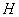
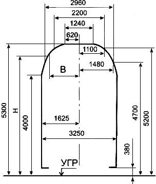

Ýükleri wagonlarda we konteýnerlerde ýerleşdirmegiň hem-de berkitmegiň tehniki şertleri (1, 2, 3-nji baplar)
Ýükleri wagonlarda we
konteýnerlerde ýerleşdirmegiň hem-de berkitmegiň tehniki şertleri (1, 2, 3-nji baplar)
Resminamanyň görnüşi:
Russiýanyň DÝM-niň 27.05.2003 ý. N SM-943 buýrugy
Pudaklaýyn ministrlikler tarapyndan kabul edilýän kadalaýyn
resminamalar
Kabul eden edara: Russiýanyň DÝM
Ýagdaýy: Hereket edýär
|
1-nji BAP. ÝÜKLERI WAGONLARDA WE KONTEÝNERLERDE ÝERLEŞDIRMÄGE HEM-DE BERKITMÄGE BILDIRILÝÄN TALAPLAR |
|
|
|
2-nji BAP. TOKAÝ MATERIALLARYNY ÝERLEŞDIRMEK HEM-DE BERKITMEK |
|
|
TEHNIKI ŞERTLER
ÝÜKLERI WAGONLARDA WE KONTEÝNERLERDE ÝERLEŞDIRMEGIŇ HEM-DE
BERKITMEGIŇ
RUSSIÝANYŇ DÝM TARAPYNDAN 2003-nji ýylyň 27-nji maýynda
TASSYKLANDY N SM-943
ÝÜKLERI ÝERLEŞDIRMÄGE WE BERKITMÄGE BILDIRILÝÄN TALAPLAR
WAGONLARDA WE KONTEÝNERLERDE
1.1. Şu Ýükleri
wagonlarda we konteýnerlerde ýerleşdirmegiň hem-de berkitmegiň Tehniki şertleri (mundan
beýläk — TŞ) ýükleri uniwersal dört oklyk wagonlarda (ýarym açyk wagonlar, açyk wagonlar)
we konteýnerlerde Russiýa Federasiýasynyň çäginde relsara ini 1520 mm bolan demir ýollar
boýunça sagatda 100 km çenli goşmak bilen hereket tizligi bilen demir ýol daşamalarynda
ýerleşdirmegiň hem-de berkitmegiň tertibini we şertlerini belleýär.
1.2. Ýükleri şu Tehniki şertlerde göz öňünde tutulmadyk usullar bilen ýerleşdirmek we berkitmek şu bapdaky 7.1, 7.2-nji bentlerinde göz öňünde tutulan düzgünlere laýyklykda ýükleri ýerleşdirmegiň we berkitmegiň ýerli tehniki şertleri (mundan beýläk — MTŞ) bilen bellenilen usullara laýyklykda ýerine ýetirilmelidir.
Ýükleri TŞ we MTŞ bilen işlenip taýýarlanmadyk usullar bilen ýerleşdirmek we berkitmek şu bapdaky 7.3-nji bendiniň düzgünlerine laýyklykda göz öňünde tutulmadyk tehniki şertler (mundan beýläk — NTŞ) bilen bellenilen usullara laýyklykda ýerine ýetirilmelidir.
1.3. Şu TŞ-de aýry-aýry ýükler ýa-da olaryň şu bapdaky umumy talaplardan tapawutlanýan kysym-ölçegleri babatda aýratyn talaplar bar bolanda, şu TŞ-niň degişli baplarynyň düzgünlerinden ugur almak zerurdyr.
1.4. Howply ýükleri ýerleşdirmegiň we berkitmegiň usullaryny işläp taýýarlamak hem-de eksperimental barlagdan geçirmek şu bapdaky 7 we 12-nji bölümleriň talaplaryny hasaba almak bilen ýerine ýetirilmelidir. Şunda howply ýükleri ýerleşdirmegiň we berkitmegiň usullarynyň eksperimental barlagy maketlerde ýa-da tebigy nusgalarda howpsuz (inert) çalyşdyryjylar bilen, olaryň agramynyň hem-de gabara ölçegleriniň laýyk gelmegi (deňligi) şerti bilen geçirilmelidir.
1.5. Agramy we gabara ölçegleri şu bap bilen bellenilen kadalardan geçýän ýükleri ýerleşdirmek we berkitmek GDA gatnaşyjy döwletleriň, Latwiýa Respublikasynyň, Litwa Respublikasynyň, Estoniýa Respublikasynyň demir ýollarynda gabaradan daşary we agyr agramly ýükleri daşamak boýunça Gollanma (mundan beýläk — Gollanma) laýyklykda amala aşyrylmalydyr.
1.6. Zawod-öndürijilerden daşalýan demir ýol ýöreýişli täze kranlaryň, şeýle hem ulanylmadyk şeýle kysymly kranlaryň aýrylýan asma enjamlaryny ýerleşdirmek we berkitmek, öwrülýän süýşürilip çykarylýan bölekleri berkitmek şeýle kranlaryň öndürijisi tarapyndan Russiýanyň Aragatnaşyk ýollary ministrligi bilen ylalaşylyp tassyklanan, Kranlary otlularyň düzüminde taýýarlamagyň tertibi hakyndaky Gollanma laýyklykda amala aşyrylýar.
Şeýle kysymly ulanylan kranlaryň aýrylýan asma enjamlaryny ýerleşdirmek we berkitmek, şeýle hem aýrylýan asma enjamsyz daşamaga berilýän kranlaryň öwrülýän süýşürilip çykarylýan böleklerini berkitmek şu babyň 7-nji bölümi bilen bellenilen tertipde tassyklanan NTŞ laýyklykda amala aşyrylýar.
1.7. Beýleki döwletleriň demir ýol administrasiýalaryndan gelýän ýükleri ýerleşdirmek we berkitmek Russiýa Federasiýasynda demir ýol ulagynda hereket edýän talaplara laýyk gelmelidir, eger gatnaşyjysy Russiýa Federasiýasy bolup durýan halkara ylalaşyklary bilen başgaça bellenilmedik bolsa.
2.1. Ýükleri açyk demir ýol hereket edýän düzüminde olaryň ölçeglerine we berkidilişine baglylykda ýerleşdirmek ýükleme gabaralarynyň çäginde amala aşyrylmalydyr. Ýükleme gabaralarynyň görnüşleri we olary ulanmagyň sebitleri şu bapdaky 1-nji tablisada getirilen.
1-nji tablisa
|
Ýükleýiş gabarasynyň görnüşi |
Suratyň, tablisanyň belgisi |
Ýüklere degişlidir |
Ulanylyşy |
|
Esasy |
1-nji surat, 2-nji tablisa |
Ähli ýükler |
Demir ýol ulagy |
|
Ýeňillikli |
2-nji surat, 3-nji tablisa |
Açyk wagonyň, ýarym açyk wagonyň ýükleýiş uzynlygynyň çäklerinde ýerleşdirilýän ýükler |
Demir ýol ulagy, şu böleklerden başga: Habarowsk-1 - Amur; Kimkan - Boguçan |
|
Zolaklaýyn |
3-nji surat, 4-nji tablisa |
TŞ, MTŞ boýunça ýüklenen tokaý ýükleri Russiýanyň DÝM-niň rugsady esasynda ýerleşdirilýän ýükler |
Demir ýol ulagy, şu böleklerden başga: Belorewskaýa - Tuapse - Weseloýe; Krymskaýa - Noworossiýsk; Çuk - Labytnangi; Puksa - Nawolok; Tigeý - Açinsk |
Bellik. Zolaklaýyn ýükleýiş gabarasy ýükler Azerbaýjanyň, Gruziýanyň, Ermenistanyň, Ukrainanyň (Lwow demir ýoly) demir ýollaryna barmaly edilip daşalanda ulanylmaýar.
Ýükleýiş gabaralarynyň
çyzgylary şu bapdaky 1-4-nji suratlarda getirilen. Aralygyň bahalary  gabaralaryň çyzgysynyň
nokatlaryndan demir ýoluň okundan geçýän dik tekizlige çenli, beýikligine baglylykda
gabaralaryň çyzgysynyň
nokatlaryndan demir ýoluň okundan geçýän dik tekizlige çenli, beýikligine baglylykda

nokadyň relsiň kellesiniň derejesinden (RKD) şu bapdaky 2-4-nji tablisalarda getirilen.
Ýarym açyk wagonlaryň we açyk wagonlaryň tehniki häsiýetnamalary şu baba N 1 goşundyda getirilen.

1-nji surat. Esasy ýükleýiş gabarasynyň çyzgysy

2-nji surat. Ýeňillikli ýükleýiş gabarasynyň çyzgysy

3-nji surat. Zolaklaýyn ýükleýiş gabarasynyň çyzgysy

4-nji surat. Ýükleýiş gabaralarynyň çyzgylarynyň gatnaşygy:
1 - esasy ýükleýiş gabarasy; 2 - ýeňillikli ýükleýiş gabarasy;
3 - zolaklaýyn ýükleýiş gabarasy
2-nji tablisa
Esasy ýükleýiş gabarasynyň ölçegleri (millimetrlerde)
|
|
|
|
380-3999
|
1625 |
|
4000
|
1625 |
|
4010
|
1617 |
|
4020
|
1609 |
|
4030
|
1601 |
|
4040
|
1593 |
|
4050
|
1585 |
|
4060
|
1577 |
|
4070
|
1569 |
|
4080
|
1561 |
|
4090
|
1554 |
|
4100
|
1548 |
|
4110
|
1540 |
|
4120
|
1532 |
|
4130
|
1524 |
|
4140
|
1516 |
|
4150
|
1509 |
|
4160
|
1502 |
|
4170
|
1495 |
|
4180
|
1487 |
|
4190
|
1479 |
|
4200
|
1471 |
|
4210
|
1463 |
|
4220
|
1455 |
|
4230
|
1447 |
|
4240
|
1439 |
|
4250
|
1431 |
|
4260
|
1423 |
|
4270
|
1415 |
|
4280
|
1407 |
|
4290
|
1400 |
|
4300
|
1392 |
|
4310
|
1385 |
|
4320
|
1378 |
|
4330
|
1371 |
|
4340
|
1363 |
|
4350
|
1355 |
|
4360
|
1347 |
|
4370
|
1339 |
|
4380
|
1331 |
|
4390
|
1323 |
|
4400
|
1316 |
|
4410
|
1308 |
|
4420
|
1300 |
|
4430
|
1292 |
|
4440
|
1284 |
|
4450
|
1276 |
|
4460
|
1268 |
|
4470
|
1260 |
|
4480
|
1252 |
|
4490
|
1245 |
|
4500
|
1238 |
|
4510
|
1230 |
|
4520
|
1222 |
|
4530
|
1214 |
|
4540
|
1206 |
|
4550
|
1198 |
|
4560
|
1190 |
|
4570
|
1183 |
|
4580
|
1176 |
|
4590
|
1169 |
|
4600
|
1162 |
|
4610
|
1154 |
|
4620
|
1146 |
|
4630
|
1138 |
|
4640
|
1130
|
|
4650
|
1122 |
|
4660
|
1114 |
|
4670
|
1106 |
|
4680
|
1098 |
|
4690
|
1091 |
|
4700
|
1084 |
|
4710
|
1076 |
|
4720
|
1068 |
|
4730
|
1060 |
|
4740
|
1052 |
|
4750
|
1044 |
|
4760
|
1036 |
|
4770
|
1028 |
|
4780
|
1021 |
|
4790
|
1014 |
|
4800
|
1007 |
|
4810
|
999 |
|
4820
|
991 |
|
4830
|
983 |
|
4840
|
975 |
|
4850
|
967 |
|
4860
|
959 |
|
4870
|
951 |
|
4880
|
944 |
|
4890
|
937 |
|
4900
|
930 |
|
4910
|
922 |
|
4920
|
915 |
|
4930
|
908 |
|
4940
|
901 |
|
4950
|
893 |
|
4960
|
885 |
|
4970
|
877 |
|
4980
|
869 |
|
4990
|
861 |
|
5000
|
853 |
|
5010
|
845 |
|
5020
|
837 |
|
5030
|
829 |
|
5040
|
821 |
|
5050
|
813 |
|
5060
|
805 |
|
5070
|
797 |
|
5080
|
789 |
|
5090
|
782 |
|
5100
|
775 |
|
5110
|
767 |
|
5120
|
759 |
|
5130
|
751 |
|
5140
|
743 |
|
5150
|
735 |
|
5160
|
727 |
|
5170
|
719 |
|
5180
|
711 |
|
5190
|
704 |
|
5200
|
697 |
|
5210
|
689 |
|
5220
|
681 |
|
5230
|
673 |
|
5240
|
665 |
|
5250
|
657 |
|
5260
|
649 |
|
5270
|
641 |
|
5280
|
634 |
|
5290
|
627 |
|
5300
|
620 |
3-nji tablisa
Ýeňillikli ýükleýiş gabarasynyň ölçegleri (millimetrlerde)
|
|
|
|
380-1299
|
1625 |
|
1300-1400
|
1700 |
|
1452
|
1699 |
|
1504
|
1698 |
|
1556
|
1697 |
|
1608
|
1696 |
|
1660
|
1695 |
|
1712
|
1694 |
|
1764
|
1693 |
|
1816
|
1692 |
|
1868
|
1691 |
|
1920
|
1690 |
|
1972
|
1689 |
|
2024
|
1688 |
|
2076
|
1687 |
|
2128
|
1686 |
|
2180
|
1685 |
|
2232
|
1684 |
|
2284
|
1683 |
|
2336
|
1682 |
|
2388
|
1681 |
|
2440
|
1680 |
|
2492
|
1679 |
|
2544
|
1678 |
|
2596
|
1677 |
|
2648
|
1676 |
|
2700
|
1675 |
|
2752
|
1674 |
|
2804
|
1673 |
|
2856
|
1672 |
|
2908
|
1671 |
|
2960
|
1670 |
|
3012
|
1669 |
|
3064
|
1668 |
|
3116
|
1667 |
|
3168
|
1666 |
|
3220
|
1665 |
|
3272
|
1664 |
|
3324
|
1663 |
|
3376
|
1662 |
|
3428
|
1661 |
|
3480
|
1660 |
|
3532
|
1659 |
|
3584
|
1658 |
|
3636
|
1657 |
|
3688
|
1656 |
|
3740
|
1655 |
|
3790
|
1654 |
|
3844
|
1653 |
|
3896
|
1652 |
|
3948
|
1651 |
|
4000
|
1650 |
|
4010
|
1642 |
|
4020
|
1634 |
|
4030
|
1627 |
|
4040
|
1619 |
|
4050
|
1611 |
|
4060
|
1603 |
|
4070
|
1596 |
|
4080
|
1588 |
|
4090
|
1580 |
|
4100
|
1572 |
|
4110
|
1564 |
|
4120
|
1557 |
|
4130
|
1549 |
|
4140
|
1541 |
|
4150
|
1533 |
|
4160
|
1526 |
|
4170
|
1518 |
|
4180
|
1510 |
|
4190
|
1502 |
|
4200
|
1495 |
|
4210
|
1487 |
|
4220
|
1479 |
|
4230
|
1472 |
|
4240
|
1464 |
|
4250
|
1456 |
|
4260
|
1448 |
|
4270
|
1441 |
|
4280
|
1433 |
|
4290
|
1425 |
|
4300
|
1417 |
|
4310
|
1409 |
|
4320
|
1402 |
|
4330
|
1394 |
|
4340
|
1386 |
|
4350
|
1378 |
|
4360
|
1371 |
|
4370
|
1363 |
|
4380
|
1355 |
|
4390
|
1348 |
|
4400
|
1339 |
|
4410
|
1332 |
|
4420
|
1324 |
|
4430
|
1316 |
|
4440
|
1308 |
|
4450
|
1300 |
|
4460
|
1293 |
|
4470
|
1285 |
|
4480
|
1277 |
|
4490
|
1270 |
|
4500
|
1262 |
|
4510
|
1254 |
|
4520
|
1246 |
|
4530
|
1239 |
|
4540
|
1231 |
|
4550
|
1223 |
|
4560
|
1215 |
|
4570
|
1208 |
|
4580
|
1200 |
|
4590
|
1192 |
|
4600
|
1184 |
|
4610
|
1176 |
|
4620
|
1168 |
|
4630
|
1160 |
|
4640
|
1153 |
|
4650
|
1146 |
|
4660
|
1137 |
|
4670
|
1129 |
|
4680
|
1122 |
|
4690
|
1114 |
|
4700
|
1106 |
|
4710
|
1098 |
|
4720
|
1090 |
|
4730
|
1083 |
|
4740
|
1075 |
|
4750
|
1067 |
|
4760
|
1060 |
|
4770
|
1052 |
|
4780
|
1044 |
|
4790
|
1036 |
|
4800
|
1029 |
|
4810
|
1021 |
|
4820
|
1013 |
|
4830
|
1006 |
|
4840
|
998 |
|
4850
|
990 |
|
4860
|
982 |
|
4870
|
975 |
|
4880
|
967 |
|
4890
|
959 |
|
4900
|
951 |
|
4910
|
943 |
|
4920
|
936 |
|
4930
|
928 |
|
4940
|
920 |
|
4950
|
912 |
|
4960
|
905 |
|
4970
|
897 |
|
4980
|
889 |
|
4990
|
882 |
|
5000
|
873 |
|
5010
|
866 |
|
5020
|
858 |
|
5030
|
850 |
|
5040
|
842 |
|
5050
|
835 |
|
5060
|
827 |
|
5070
|
819 |
|
5080
|
811 |
|
5090
|
803 |
|
5100
|
795 |
|
5110
|
787 |
|
5120
|
779 |
|
5130
|
772 |
|
5140
|
764 |
|
5150
|
756 |
|
5160
|
748 |
|
5170
|
741 |
|
5180
|
733 |
|
5190
|
725 |
|
5200
|
717 |
|
5210
|
709 |
|
5220
|
702 |
|
5230
|
694 |
|
5240
|
686 |
|
5250
|
678 |
|
5260
|
671 |
|
5270
|
663 |
|
5280
|
655 |
|
5290
|
647 |
|
5300
|
640 |
4-nji tablisa
Zolaklaýyn ýükleýiş gabarasynyň ölçegleri (millimetrlerde)
|
|
|
|
380-4000
|
1625 |
|
4010
|
1623 |
|
4020
|
1621 |
|
4030
|
1619 |
|
4040
|
1617 |
|
4050
|
1615 |
|
4060
|
1613 |
|
4070
|
1611 |
|
4080
|
1608 |
|
4090
|
1606 |
|
4100
|
1604 |
|
4110
|
1602 |
|
4120
|
1600 |
|
4130
|
1598 |
|
4140
|
1596 |
|
4150
|
1594 |
|
4160
|
1592 |
|
4170
|
1590 |
|
4180
|
1588 |
|
4190
|
1586 |
|
4200
|
1584 |
|
4210
|
1582 |
|
4220
|
1579 |
|
4230
|
1577 |
|
4240
|
1575 |
|
4250
|
1573 |
|
4260
|
1571 |
|
4270
|
1569 |
|
4280
|
1567 |
|
4290
|
1565 |
|
4300
|
1563 |
|
4310
|
1561 |
|
4320
|
1559 |
|
4330
|
1557 |
|
4340
|
1555 |
|
4350
|
1553 |
|
4360
|
1550 |
|
4370
|
1548 |
|
4380
|
1546 |
|
4390
|
1544 |
|
4400
|
1542 |
|
4410
|
1540 |
|
4420
|
1538 |
|
4430
|
1536 |
|
4440
|
1534 |
|
4450
|
1532 |
|
4460
|
1530 |
|
4470
|
1528 |
|
4480
|
1526 |
|
4490
|
1524 |
|
4500
|
1521 |
|
4510
|
1519 |
|
4520
|
1517 |
|
4530
|
1515 |
|
4540
|
1513 |
|
4550
|
1511 |
|
4560
|
1509 |
|
4570
|
1507 |
|
4580
|
1505 |
|
4590
|
1503 |
|
4600
|
1501 |
|
4610
|
1499 |
|
4620
|
1497 |
|
4630
|
1495 |
|
4640
|
1492 |
|
4650
|
1490 |
|
4660
|
1488 |
|
4670
|
1486 |
|
4680
|
1484 |
|
4690
|
1482 |
|
4700
|
1480 |
|
4710
|
1472 |
|
4720
|
1465 |
|
4730
|
1457 |
|
4740
|
1450 |
|
4750
|
1442 |
|
4760
|
1434 |
|
4770
|
1427 |
|
4780
|
1419 |
|
4790
|
1412 |
|
4800
|
1404 |
|
4810
|
1396 |
|
4820
|
1389 |
|
4830
|
1381 |
|
4840
|
1374 |
|
4850
|
1366 |
|
4860
|
1358 |
|
4870
|
1370 |
|
4880
|
1343 |
|
4890
|
1336 |
|
4900
|
1328 |
|
4910
|
1320 |
|
4920
|
1313 |
|
4930
|
1305 |
|
4940
|
1298 |
|
4950
|
1290 |
|
4960
|
1282 |
|
4970
|
1275 |
|
4980
|
1267 |
|
4990
|
1260 |
|
5000
|
1252 |
|
5010
|
1244 |
|
5020
|
1237 |
|
5030
|
1229 |
|
5040
|
1222 |
|
5050
|
1214 |
|
5060
|
1206 |
|
5070
|
1199 |
|
5080
|
1191 |
|
5090
|
1184 |
|
5100
|
1176 |
|
5110
|
1168 |
|
5120
|
1161 |
|
5130
|
1153 |
|
5140
|
1146 |
|
5150
|
1138 |
|
5160
|
1130 |
|
5170
|
1123 |
|
5180
|
1115 |
|
5190
|
1108 |
|
5200
|
1100 |
|
5210
|
1052 |
|
5220
|
1004 |
|
5230
|
956 |
|
5240
|
908 |
|
5250
|
860 |
|
5260
|
812 |
|
5270
|
764 |
|
5280
|
716 |
|
5290
|
668 |
|
5300
|
620 |
2.2. Ýeňillikli ýa-da zolaklaýyn ýükleýiş gabarasynyň çäklerinde ýüklenen ýüke degişli daşaýyş resminamalarynda degişlilikde "Ýeňillikli gabara" ýa-da "Zolaklaýyn gabara" bellikleri edilen bolmalydyr:
- demir ýol ulag nakladnoýynyň (mundan beýläk - nakladnoý) asyl nusgasynda "Aýratyn bellikler we möhürler üçin ýer" sütüninde - ýük ugradyjy tarapyndan;
- wagon listinde "Bellikler üçin ýer" sütüninde — daşaýjy tarapyndan ygtyýarly edilen şahs tarapyndan (daşaýjy bir wagtda infrastrukturanyň eýesi bolan halatynda — ugradylýan demir ýol bekediniň ygtyýarly işgäri tarapyndan).
2.3. Ýeke uniwersal wagona ýa-da iki uniwersal wagondan ybarat sepleşige ýüklenen ýük, eger ol hiç bir bölegi bilen, şol sanda gaby we berkidişi bilen esasy ýükleme gabarasynyň çäginden çykmasa we wagonyň (ýa-da sepleşigiň) kese simmetriýa tekizliginden ýüküň ujuna çenli (bir ýa-da iki tarapdan) aralyk, gaby we berkidişi goşmak bilen, şu bapdaky 5-nji tablisada görkezilen bahalardan geçmese, gabaraly ýük bolup durýar. Ýüküň gabaralylygyny barlamak wagon ýoluň göni keseligine böleginde duran we wagonyň uzaboýuna dik simmetriýa tekizligi demir ýoluň oky bilen gabat gelýän şertinde geçirilmelidir. Uzynlygy ýa-da ýerleşişi şu bapdaky 5-nji tablisada bellenilen çäklendirmelere laýyk gelmeýän ýükler üçin ýoluň egri böleklerinden geçilende esasy ýükleme gabarasyna ýerleşmek şerti boýunça rugsat edilýän ini şu bapdaky 11-nji bölümde getirilen usulyýet boýunça kesgitlenilýär.
5-nji tablisa
millimetrlerde
|
Wagonyň ýa-da sepleşigiň kysymy |
Baza* |
Wagonyň ýa-da sepleşigiň ortasyndan ýüküň ujuna çenli iň uly aralyk |
|
|
|
wagonyň |
sepleşigiň |
|
|
Açyk wagon |
9720
|
- |
8810 |
|
|
14720
|
- |
11200 |
|
2 açyk wagondan sepleşik |
9720 |
14620 |
11100
|
|
Ýarym açyk wagon |
8650 |
- |
8225
|
________________
* Wagonyň (ýa-da sepleşigiň) bazasy diýlip gönükdiriji kesimleriň arasyndaky aralyga aýdylýar, olar hökmünde şular kabul edilýär:
- ýeke-täk wagonda - arabajyklaryň podpýatnikleriniň dik oklarynyň arasyndaky aralyk;
- ýük iki wagona direldilip ýerleşdirilende wagonlaryň sepleşiginde - ýüküň direlýän diregleriniň ortalarynyň arasyndaky aralyk.
3. Wagonlary, konteýnerleri ýüklemäge taýýarlamak
3.1. Ýüklemezden öň
wagonyň düşegi, ýüküň, astlyklaryň, aralyk gatlaklarynyň, direg we dartyş dörtgyraň agaç
bölekleriniň direg ýüzleri, şeýle hem ýüküň daňylar we çekmeler bilen galtaşýan
ýerlerindäki ýüzleri ugradyjy tarapyndan gardan, buzdan we hapadan goşmaça arassalanan
bolmalydyr. Gyş wagtynda ýük ugradyjy wagonyň düşegini we astlyklaryň ýüküň direýän
ýerlerindäki ýüzlerini arassa gury çägäniň inçe gatlagy (1-2 mm) bilen sepmelidir.
3.2. Ýarym açyk wagonlaryň düşüriş lýuklary ýapylan we gulplara gulplanan bolmalydyr. Eger ýük kuzowyň ýükleme uzynlygynyň we ininiň çäginde ýerleşdirilýän bolsa, açyk wagonlaryň kese bortlary, ýarym açyk wagonlaryň kese gapylary ýapylan we gulplara gulplanan, açyk wagonlaryň bortlarynyň paz gulplary aşak, direge çenli oturdylan bolmalydyr, ýüklemegiň tehnologiýasy açyk bortlary, gapylary ulanmagy göz öňünde tutýan halatlardan başga.
3.3. Uzynlygy açyk wagonyň, ýarym açyk wagonyň düşeginiň uzynlygyndan geçýän ýükler ýüklenmezden öň açyk wagonyň kese bortlary kronşteýnlere egilen, ýarym açyk wagonyň gapylary bolsa - açylan we berkidilen bolmalydyr.
3.4. Ýüküň açyk wagonyň egilen kese bortlaryna direlmeginiň aradan aýrylmagy maksady bilen ýük astlyklarda ýerleşdirilen bolmalydyr.
3.5. Ini açyk wagonyň
düşeginiň ininden geçýän ýükler ýüklenmezden öň açyk wagonyň uzaboýuna bortlarynyň ähli
seksiýalary ýa-da olaryň käbiri ýük ugradyjy tarapyndan açylmalydyr we açyk wagonyň
çarçuwasynyň uzaboýuna balkalaryndaky halkalara berkidilmelidir. Halkalar bolmadyk
halatynda bortlaryň garşylyklaýyn seksiýalary ýük ugradyjy tarapyndan diametri azyndan 4
mm bolan simden iki sapakly daňy bilen berkidilmelidir, ol gapdal we oňurga balkalarynyň
aşagyndan geçirilýär. Aşak goýberilen bortlar açyk wagonyň trafaret belgisini ýapýan
halatlarynda ol aşak goýberilen uzaboýuna bortlaryň çep çetki seksiýalarynda
ýuwulmaýan ak reňk bilen ýazylmalydyr. Sepleşigiň açyk wagonlarynyň uzaboýuna
bortlarynyň seksiýalary hem, eger olar wagonlar ýoluň egri böleklerinde hereket edende
ýüküň tebigy kese süýşmegine päsgel berýän bolsa, açylmalydyr.
3.6. Uzyn ölçegli ýüki ýüklemek üçin şu bapdaky 11-nji bölümiň talaplaryna laýyklykda iki we ondan köp wagondan sepleşik emele getirilýär.
3.7. Manýowr işlerinde we gatnaw ýolunda sepleşigiň wagonlarynyň aýrylmagynyň öňüni almak üçin sepleşigi aýryjy swipçekleriň tutawaçlary kronşteýnlere sim bilen berkidilen bolmalydyr, wagonlaryň gapdal bortlarynda bolsa iki tarapdan hem ýuwulmaýan reňk bilen "Sepleşigi aýyrmaly däl" diýen ýazgy ýazylan bolmalydyr.
3.8. Konteýnerleri ýüklemäge taýýarlamak şu TŞ-niň 12-nji babynyň talaplaryna laýyklykda amala aşyrylýar.
4. Ýükleri wagonlarda berkidiş serişdeleri
Ýükleri wagonlarda berkitmek üçin çekmeler, daňylar, dartgylar (şol sanda köp bogunly), baglanyşyklar, agaç sütünler, dörtgyraň agaç bölekleri we galkanlar, direg başmaklary, "şporlar", karkaslar, kassetalar, piramidalar, ložementler, turniket enjamlary ulanylýar. Berkidiş serişdeleri bir gezek we köp gezek ulanylýan (köp gezek ulanylýan) bolup biler.
Köp gezek ulanylýan berkidiş serişdelerine we olary ulanmagyň tertibine bolan umumy tehniki talaplar şu baba N 2 goşundyda getirilen. Köp gezek ulanylýan berkidiş serişdeleriniň hili we ygtybarlylygy ýüki ugratmagy amala aşyrýan tarap (ýük ugradyjy) tarapyndan üpjün edilýär. Daşaýyş resminamalary resmileşdirilende demir ýol bekedi ýük ugradyjydan köp gezek ulanylýan berkidiş enjamynyň ulanylmaga ýaramlylygyny tassyklaýan, ony döwrebap barlagdan geçirmegiň delilnamasyny sorap biler.
Berkidiş elementleri we berkidiş enjamlary gurnalanda standart berkidiş önümleri, mysal üçin boltlar, şpilkalar, çüýler, gurluşyk skobalary peýdalanylýar.
4.1. Çekme — bir ujy ýükdäki daňy enjamyna, beýleki ujy — wagonyň kuzowyndaky şonuň üçin ýörite niýetlenen daňy enjamyna berkidilýän berkidiş serişdesi. Daňy — ýüki gurşap alýan we iki ujy bilen hem wagonyň kuzowyndaky daňy enjamlaryna berkidilýän berkidiş serişdesi. Dartgy — beýleki berkidiş serişdelerini (adatça, çekmeleri, daňylary, sütünleri) özara birleşdirmek we dartmak üçin niýetlenen berkidiş serişdesi. Baglanyşyk — ýüküň aýry-aýry birliklerini bir ýük ýerine birleşdirmek üçin niýetlenen berkidiş serişdesi.
4.2. Çekmeleri, gurşaw daňylaryny, dartgylary, daňylary taýýarlamak üçin şu materiallar peýdalanylýar:
- GOST 3282 boýunça ýylylyk bilen işlenen (otžig) ýagdaýdaky, tegelek kesimli (GOST 2590), dörtburç kesimli (GOST 2591) polat sim;
- poladyň togalanan önümi ýa-da zolagy (GOST 103);
- polat zynjyrlar, troslar.
4.3. Çekmeleri, daňylary, dartgylary, baglanyşyklary taýýarlamak üçin başga materiallary ulanmaga TŞ we MTŞ işläp taýýarlamak üçin göz öňünde tutulan tertipde (şu bapdaky 7-nji bölüm) olaryň ygtybarlylygynyň tassyklanmagy şerti bilen Russiýanyň Aragatnaşyk ýollary ministrligi bilen ylalaşylyp rugsat berilýär.
Tegelek togalanan önümiň
kesiminiň diametri azyndan 5 mm bolmalydyr; tegelek bolmadyk togalanan önümiň kese kesiminiň
meýdany azyndan 20 mm bolmalydyr . Togalanan önümiň ýüzünde
mehaniki zeperlenmeler, jaýryklar, towlanmalar, gatlaklanmalar, dyrmalar bolmaly
däldir.
. Togalanan önümiň ýüzünde
mehaniki zeperlenmeler, jaýryklar, towlanmalar, gatlaklanmalar, dyrmalar bolmaly
däldir.
4.4. Wagonlarda çekmeleri we gurşaw daňylaryny berkitmek üçin şular peýdalanylýar:
- açyk wagonlarda (şu bapdaky 5-nji surat): gapdal we kese sütün skobalary; çet balkasyndaky direg kronşteýnleri; düşekdäki daňy enjamlary (bar bolan halatynda); uly tonnažly konteýnerler we tigirli tehnika üçin açyk wagonlardaky gapdal skobalar;
- ýarym açyk
wagonlarda (şu bapdaky 6-njy surat): aşaky daňy enjamlary (kosynkalar); gapdal diwarlaryň
sütünlerinde düşekden 1100-1200 mm beýiklikde ýerleşýän ortaky daňy enjamlary; kuzowyň
ýokarky daňysynyň içinde we daşynda skoba görnüşindäki ýokarky daňy enjamlary.
5-nji surat. Uniwersal açyk wagonyň daňy enjamlary
6-njy surat. Uniwersal ýarym açyk wagonyň daňy enjamlary:
a - kese gapyly; b - kese diwarly
4.4.1. Çekmeleri we daňylary wagonyň kuzowynyň beýleki böleklerine, şol sanda wagonyň kuzowynyň içinde sütünleri berkitmek üçin niýetlenen skobalara, ýarym açyk wagonyň ýokarky daňysynda ýerleşen daňy halkalaryna, şeýle hem açyk wagonlaryň bortlarynyň seksiýalarynyň daşky ýüzündäki halkalara berkitmäge ýol berilmeýär.
4.4.2. Düzme (birnäçe düzüm böleginden) sim, zolakly ýa-da utgaşdyrylan çekmeleri we daňylary ulanmaga rugsat berilýär. Şeýle çekmeleriň hem-de daňylaryň birleşdiriji elementleriniň berkligi çekmäniň, daňynyň düzüm bölekleriniň berkliginden pes bolmaly däldir.
4.4.3. Bitewi polat sterženden we zolakdan ýerine ýetirilen çekmeleriň uçlaryny ýüke kebşirlemegiň ýa-da bolt birleşmeleriniň kömegi bilen berkitmäge rugsat berilýär. Şeýle birleşmeleriň ygtybarlylygy ýük ugradyjy tarapyndan üpjün edilýär.
4.4.4. Açyk wagonlarda gurşaw daňylary iki garşylyklaýyn sütün skobasyndan berkidilýär.
4.5. Çekmeler, gurşaw daňylary wagonda şu usullar bilen emele getirilýär.
4.5.1. 1-nji
usul. Çekme, daňy bir bitewi sim sapagyndan ýerine ýetirilýär. Simiň bir ujy (şu bapdaky
7-nji surat) wagonyň (ýüküň) daňy enjamynyň daşyndan iki gezek aýlanýar we sapagyň
daşyndan azyndan iki gezek towlanýar. Simiň beýleki ujy ýüküň we wagonyň daňy
enjamlaryndan yzygiderli geçirilip, zerur sanly sapakly çekme, daňy emele getirilýär.
Simiň ujy wagonyň (ýa-da ýüküň) daňy enjamynda ýokarda görkezilen tertipde, ony çekmäniň,
daňynyň sapaklarynyň ýarysynyň daşyndan aýlap berkidilýär. Berkitmek üçin simiň
uçlarynyň uzynlygy azyndan 500 mm bolmalydyr. Berkidilende sapaklaryň uçlarynyň aýlanyş
ugry şeýle bolmalydyr welin, soňra çekme towlanylanda olaryň berkidilişi gowşamaly
däldir. Çekmäniň, daňynyň sapaklary lom ýa-da başga bir gural bilen dartylýança
towlanylýar.
7-nji surat. Çekmeleriň 1-nji usul boýunça gurnalyşy
4.5.2. 2-nji usul. Çekme, daňy bir bitewi sim sapagyndan taýýarlanylýar. Sapak wagonyň (ýüküň) daňy enjamyndan geçirilýär we onuň üstünde epilip, uzynlygy deň bolan iki sapakdan durýan örüm emele getirilýär (şu bapdaky 8-nji surat). Soňra örüm yzygiderli ýüküň we wagonyň daňy enjamlaryna geçirilip, zerur sanly sapakly çekme, daňy emele getirilýär. Örümiň ujy wagonyň (ýüküň) daňy enjamynyň daşyndan iki gezek aýlanýar, soňra simiň uçlary — aýry-aýrylykda çekmäniň, daňynyň sapaklarynyň ýarysynyň daşyndan aýlanýar. Uçlary berkitmäge we çekmäni, daňyny towlamaga bolan talaplar 1-nji usuldakylar bilen meňzeşdir.

8-nji surat. Çekmeleriň, gurşaw daňylarynyň 2-nji usul boýunça gurnalyşy
4.5.3. 3-nji
usul. Çekme, daňy iki bitewi sim sapagyndan durýan örümden emele getirilýär (şu bapdaky
9-njy surat). Örüm wagonyň (ýüküň) daňy enjamyndan geçirilýär we berkitmek üçin uzynlygy
azyndan 500 mm bolan uçlary galdyrylyp epilýär, olaryň biri örümiň daşyndan azyndan iki
gezek towlanýar. Çekme emele getirilenden soň örümiň her bir ujy aýratynlykda meňzeş
tertipde dürli örümleriň daşyndan towlanýar.
9-njy surat. Çekmeleriň, gurşaw daňylarynyň 3-nji usul boýunça gurnalyşy
4.5.4. Sim çekmelerini, daňylary şu bapdaky 4.5.1-4.5.3 kiçi bentlerinde beýan edilenlerden tapawutlanýan usullar bilen gurnamaga şu bapdaky 7-nji bölüminde MTŞ işläp taýýarlamak üçin göz öňünde tutulan tertipde olaryň ygtybarlylygynyň tassyklanmagy şerti bilen, Russiýanyň Aragatnaşyk ýollary ministrligi bilen ylalaşylyp rugsat berilýär.
4.6. Çekmäniň, dartgynyň, gurşaw daňysynyň ýük bilen wagonyň daňy enjamynyň arasynda towlanmagy tutuş uzynlygy boýunça deň ölçegde bolmalydyr.
Çekmäniň, dartgynyň,
gurşaw daňysynyň şahalarynyň uzynlygy 1,5 m-den köp bolanda ony öňki towlanan bölegiň
çözülmegine ýol bermezden iki ýerinden towlamaga rugsat berilýär.
Gurşaw daňylaryny azyndan iki ýerinden - garşylyklaýyn şahalarynda towlamak zerurdyr.
Ýükde şahalarynyň
epilme ýerleri bolan çekmelerde, gurşaw daňylarynda epilme ýerleriniň arasyndaky uzynlygy 300
mm-den köp bolan böleklerini goşmaça towlamak zerurdyr (şu bapdaky 10-njy surat).
10-njy surat
Towlanylanda towlamak üçin gural towlanýan bölegiň ortasynda (wagonyň we ýüküň daňy enjamlarynyň arasynda, wagonyň daňy enjamy bilen ýükdäki epilme ýeriniň arasynda, ýükdäki epilme ýerleriniň arasynda) gurnalmalydyr.
4.7. Çekmeler, daňylar, dartgylar, baglanyşyklar hasaplananda sim sapaklarynyň sany we, degişlilikde, işçi kesimi hem-de göterijilik ukyby berkidiş uçlaryny hasaba almazdan kesgitlenilýär (şu bapdaky 11-nji surat). Şu berkidiş serişdelerindäki sapaklaryň sany jübüt bolmalydyr.

11-nji surat. Çekmelerde, gurşaw daňylarynda, dartgylarda simiň sapaklarynyň mukdaryny kesgitlemek
4.8. Wagonda simiň
diametri bolanda sapaklaryň sany 8-den köp bolan çekmeleri, gurşaw daňylaryny, daňylary,
dartgylary emele getirmäge ýol berilmeýär  6 mm.
6 mm.
4.9. Wagona görä çeýe yrgyldylar mümkinçiligi bolan, mysal üçin ressorly ýük berkidilende çekmeleriň, gurşaw daňylarynyň özara degmegine ýol berilmeýär.
4.10. Prutokdan ýa-da dartyş enjamly zolak poladyndan ýerine ýetirilen çekmeler, gurşaw daňylary açyk wagonyň ýapyk bortuna degmeli däldir. Bort ýapyk bolanda munuň öňüni almak mümkin bolmasa, bort aşak goýberilen bolmalydyr.
4.11. Açyk wagonyň bortuna degýän nokadynda çekme bilen dik tekizligiň arasyndaky burç 15°-dan köp bolsa, simden edilen çekmeleriň, daňylaryň açyk wagonyň bortuna direlmegine ýol berilmeýär (şu bapdaky 12a surat). Şu şerti ýerine ýetirmek mümkin bolmadyk halatynda çekmeler we daňylar gapdal bortlaryň aşagyndan geçirilýär (şu bapdaky 12b surat) ýa-da açyk wagonyň bortlary aşak goýberilmelidir (şu bapdaky 12w surat).

12-nji surat. Sim çekmeleriň, gurşaw daňylarynyň açyk wagonyň bortlaryna görä ýol berilýän ýagdaýlary
4.12. Çekmeleri şeýle usulda ýerleşdirmeli, çekme bilen düşegiň arasyndaky burç we çekmäniň wagonyň düşegine proýeksiýasy bilen wagonyň uzaboýuna okunyň arasyndaky burç 45°-dan köp bolmaz ýaly (şu bapdaky 13-nji surat).
13-nji surat
Ýüküň gurluş aýratynlyklary ýa-da ony ýerleşdirmegiň şertleri sebäpli çekmeleri şeýle gurnamak mümkin bolmadyk halatlarda şu bapdaky 6-njy tablisa laýyklykda çekmelerdäki sim sapaklarynyň sanyny bir wagtda köpeltmek bilen çekmeleriň gyşarma burçlaryny ulaltmaga rugsat berilýär.
4.13. Berkidiş elementiniň deň berkliginiň üpjün edilmegi şerti bilen göz öňünde tutulan diametrli simi başga diametrli sim bilen çalyşmak arkaly sim berkidiş serişdelerini ulanmaga rugsat berilýär. Şeýle halatlarda berkidiş serişdesiniň görkezijileri şu bapdaky 6 we 21-nji tablisalara laýyklykda, şu bapdaky 4.7 hem-de 4.8-nji bentleriniň talaplaryny hasaba almak bilen kesgitlenilmelidir.
6-njy tablisa
Diametri 6 mm we 7 mm bolan simden çekmelerde sapaklaryň sanynyň
artdyrylmagy
çekmeleriň gyşarma burçy artdyrylanda
|
Çekmäniň wagonyň düşegine proýeksiýasy bilen wagonyň uzaboýuna okunyň arasyndaky burçuň ululygy, ° |
Çekmäniň sapaklarynyň sany |
|||||||
|
|
Çekmäniň wagonyň düşegine proýeksiýasy bilen çekmäniň arasyndaky burç, °
|
|||||||
|
|
|
46-50 |
51-55 |
56-60 |
61-65 |
66-70 |
71-75 |
76-80 |
|
|
2/2 |
4/2 |
4/2 |
4/4 |
4/4 |
6/4 |
6/6 |
8/6 |
|
46-50
|
4/2 |
4/2 |
4/2 |
4/4 |
4/4 |
6/4 |
6/6 |
-/8 |
|
51-55
|
4/2 |
4/2 |
4/4 |
4/4 |
6/4 |
6/4 |
8/6 |
-/8 |
|
56-60
|
4/4 |
4/4 |
4/4 |
4/4 |
6/4 |
6/6 |
8/6 |
- |
|
61-65
|
4/4 |
4/4 |
6/4 |
6/4 |
6/4 |
8/6 |
-/8 |
- |
|
66-70
|
6/4 |
6/4 |
6/4 |
6/6 |
8/6 |
-/8 |
- |
- |
|
71-75
|
6/6 |
6/6 |
8/6 |
8/6 |
-/8 |
- |
- |
- |
|
76-80
|
8/6 |
-/8 |
-/8 |
- |
- |
- |
- |
- |
Bellikler. 1. Burçuň drob bahalary iň ýakyn uly bitewi baha çenli tegeleklenilýär.
2. Sanawjyda - diametri 6
mm bolan simiň sapaklarynyň sany, maýdalawjyda - diametri 7 mm
4.14. Dartgy (şu bapdaky 14-nji surat) simiň üznüksiz sapagyndan emele getirilýär. Dartgynyň berkligi berkidiş elementiniň birleşdirilýän düzüm bölekleriniň berkliginden pes bolmaly däldir.

14-nji surat. Simiň uçlaryny dartgyda berkitmegiň usuly
4.15. Baglanyşyk bitewi sim sapagyndan emele getirilýär. Baglanyşykdaky sim sapaklarynyň sany hasaplama ýa-da eksperimental ýol bilen kesgitlenilýär. Baglanyşykdaky sim sapaklaryny towlamak dartylýança azyndan iki ýerde, öň towlanan böleginiň towlanmasynyň açylmagyna ýol bermezden geçirilýär. Baglanyşyklarda simiň uçlaryny berkitmegiň usuly dartgylarda simiň uçlaryny berkitmegiň usulyna meňzeşdir.
4.16. Astlyklar we aralyk gatlaklary GOST 8486 we GOST 2695-e laýyklykda üçünji sortdan pes bolmadyk kesilen agaç materiallaryndan taýýarlanylýar. Gaýyň, osina, lipa we olha agaçlaryny ulanmaga diňe gysyşa işleýän, direg, dartyş dörtgyraň agaç bölekleri we beýleki berkidiş elementleri berkidilmeýän astlyklary hem-de aralyk gatlaklaryny taýýarlamak üçin rugsat berilýär. Şu agaç görnüşlerini, şeýle hem ähli görnüşleriň gurap galan agaçlaryny direg we dartyş dörtgyraň agaç bölekleri taýýarlamak üçin ulanmaga ýol berilmeýär.
Astlyklary we aralyk gatlaklaryny dürli profilli metaldan, demirbetondan hem-de beýleki materiallardan taýýarlamaga, eger bu ýüküň zeperlenmegine getirmeýän bolsa, rugsat berilýär.
Astlyklar we aralyk gatlaklary ýüküň wagonyň düşegine direg meýdanyny ulaltmak, ýüküň ştabelini dargamakdan goramak, ýükleri mehanizirlenen ýüklemegiň we düşürmegiň mümkinçiligini üpjün etmek, ýüküň we (ýa-da) wagonyň direg ýüzüni zeperlenmekden goramak, şeýle hem dartyş we direg dörtgyraň agaç böleklerini berkitmek üçin ulanylýar. Görkezilen şertler aralyk gatlaklaryny ulanmazdan üpjün edilýän halatlarda olary gurnamak hökman däldir.
Astlyklaryň, aralyk
gatlaklarynyň beýikligi azyndan 25 mm bolmalydyr. Astlyklaryň, aralyk gatlaklarynyň ini
azyndan 80 mm bolmalydyr (eger ýüki ýerleşdirmegiň we berkitmegiň anyk tehniki şertleri
bilen başgaça bellenilmedik bolsa), şunda ininiň beýikligine gatnaşygy azyndan 1,5
bolmalydyr. Wagona kese düşelýän astlyklaryň uzynlygy kuzowyň inine deň bolmalydyr,
aralyk gatlaklarynyňky bolsa — ýüküň ininden az bolmaly däldir. Ýüküň ştabellerini bölmek
üçin ulanylýan kese aralyk gatlaklary biriniň üstünde beýlekisi, ýüküň uçlaryndan azyndan
500 mm we gapdal sütünlerden azyndan 300 mm aralykda düşelýär.
Astlyklary we aralyk
gatlaklaryny düzme edip taýýarlamaga rugsat berilýär: beýikligi, ini boýunça — iki
bölekden, uzynlygy boýunça — birnäçe bölekden (şu bapdaky 15-nji surat). Astlyklary
uzynlygy boýunça uç-uja goýmaga diňe oňurga balkasynda (kese astlyklar üçin) ýa-da kese
balkalarda (uzaboýuna astlyklar üçin) rugsat berilýär. Astlyklaryň, aralyk gatlaklarynyň
düzüm bölekleriniň birleşýän ýerindäki galyňlygy azyndan 35 mm bolmalydyr. Düzme
astlyklaryň, aralyk gatlaklarynyň umumy kese kesiminiň ölçegleri bitewi astlyklar we
aralyk gatlaklary üçin bolan talaplary kanagatlandyrmalydyr.
15-nji surat. Düzümli astlyklary, aralyk gatlaklaryny taýýarlamagyň usullary
Ini we uzynlygy boýunça düzümli bolan astlyklaryň hem-de aralyk gatlaklarynyň düzüm bölekleriniň beýikligi tutuş uzynlygy boýunça birmeňzeş bolmalydyr.
Ýüki ýerleşdirmegiň we berkitmegiň usuly astlyklaryň wagonyň düşegine berkidilmegini göz öňünde tutýan halatlarynda astlyklaryň bölekleriniň berkidilmegi şu tertipde amala aşyrylmalydyr:
Beýikligi boýunça düzme astlyklar. Astlygyň aşaky bölegi düşege zerur sanly çüýler bilen çüýlenýär, meňzeş görnüşde ýokarky bölegi aşakysyna çüýlenýär. Astlygyň bölekleriniň düşege astlygyň iki böleginden hem geçýän zerur sanly çüýler bilen çüýlenmegine rugsat berilýär.
Ini boýunça düzme we uzynlygy boýunça düzme astlyklar. Düzüm bölekleri özara çüýler, boltlar, skobalar bilen, olaryň wagonda düşelende biri-birine görä gymyldysyzlygyny üpjün edýän mukdarda birleşdirilýär. Astlygyň her bir bölegi düşege çüýler bilen çüýlenýär, olaryň sany astlygy berkitmek üçin zerur bolan mukdaryň azyndan 75%-ini düzmelidir.
4.17. Ştabel
ýükleriniň gapdal we kese germewleri üçin ulanylýan gabygy aýrylan hem-de aýrylmadyk agaç
sütünler GOST 8486 we GOST 2695-e laýyklykda tegelek tokaý materiallaryndan ýa-da göni
süýümli kesilen agaç materiallaryndan taýýarlanylýar. Tegelek tokaý materialyndan
sütünleriň galyňlygy aşaky kesimde 120-140 mm we ýokarkysynda azyndan 90 mm bolmalydyr.
Kesilen agaç materiallaryndan sütünleriň kesimi azyndan 90x120 mm bolmalydyr.
Ýarym açyk wagona
gurnalýan sütünleriň galyňlygy ýarym açyk wagonyň ýokarky gurşaw guşagynyň derejesinde
azyndan 100 mm bolmalydyr. Gapdal sütünler şu usullar bilen gurnalmalydyr:
1-nji usul. Sütün
ýarym açyk wagonyň düşegine, ony tokaý skobasyndan geçirip gurnalýar we aşaky daňy enjamyna
diametri azyndan 5 mm bolan simden iki sapakly daňy bilen berkidilýär (şu bapdaky 16a
surat).
16-njy surat. Ýarym açyk wagonda gapdal sütünleriň gurnalyşy
2-nji usul. Sütün
ýarym açyk wagonyň düşegine tokaý skobasyna we aşaky daňy enjamyna berk direldilip gurnalýar
hem-de olara diametri azyndan 5 mm bolan simden iki sapakly daňylar bilen berkidilýär (şu
bapdaky 16b surat).
3-nji usul. 30° burç
astynda öwrülen agaç ýük skobalary bilen enjamlaşdyrylan ýarym açyk wagonlarda sütün gyşyk
ýagdaýda agaç ýük skobasyna salynýar we dikligine gurnalýar; sütüniň aşaky ujy aşaky daňy
enjamyna berk direlip gurnalýar we oňa diametri azyndan 5 mm bolan simden iki sapakly daňy
bilen berkidilýär (şu bapdaky 16w surat).
Gapdal sütünleriň ýarym açyk wagonyň ýokarky gurşaw dörtgyraňynyň derejesinden beýikligi şulardan köp bolmaly däldir:
a) esasy ýükleýiş gabarasynyň çäklerinde ýüklenende:
-
-
b) zolaklaýyn ýükleýiş gabarasynyň çäklerinde ýüklenende:
-
-
Demir ýol açyk
wagonlarynda sütünler şonuň üçin niýetlenen gapdal we kese sütün skobalaryna gurnalýar.
Tegelek tokaý materiallaryndan sütünler kök tarapy aşak bakdyrylyp gurnalýar. Sütüniň
aşaky ujy skobanyň içki ölçeglerine görä ýonulan bolmalydyr. Sütün skobanyň aşaky
gyrasyndan 100-200 mm çykyp durmalydyr. Sütün bilen skobanyň arasyndaky aralyga diňe açyk
wagonyň gapdal balkasynyň tarapyndan, skobanyň aşaky gyrasynyň derejesinde 15 mm-den köp
bolmadyk möçberde rugsat berilýär. Bu halatda sütün goşmaça paz bilen berkidilmelidir (şu
bapdaky 17-nji surat). Paz aşagyndan berk kakylmalydyr we sütüne uzynlygy 80-90 mm bolan
iki çüý bilen berkidilmelidir

17-nji surat. Sütüniň açyk wagonyň sütün skobasynda berkidilişi
Gysga sütünler açyk
wagonyň bortlarynyň göterijilik ukybyny artdyrmak üçin gurnalýar. Gysga sütünleriň açyk
wagonyň düşeginiň derejesinden beýikligi berkidilýän bortuň beýikliginden azyndan 100 mm
uly bolmalydyr. Beýik sütünler ýüklemegiň beýikligi açyk wagonyň bortlarynyň beýikliginden
ep-esli geçýän ýüki germemek üçin ulanylýar.
Berkidişiň göterijilik ukybyny artdyrmak üçin garşylyklaýyn sütünler ýokarky, zerur bolanda bolsa - beýikligi boýunça ýokarky we ortaky böleklerinde dartgylar bilen birleşdirilýär (şu bapdaky 18-nji surat).

18-nji surat. Sütünleriň açyk wagonda berkidilişi
Gysga sütünleri
berkitmek we beýik sütünleriň ýokarky berkidilmegi dartgydan ýüküň ýüzüne çenli aralyk
50-100 mm bolar ýaly, dartgydan sütünleriň ýokarky kesimine çenli aralyk — azyndan 100 mm
bolar ýaly ýerine ýetirilen bolmalydyr. Beýik sütünleriň ortaky berkidilmegi dartgy ýüke
degmez ýaly ýerine ýetirilen bolmalydyr.
4.18. Direg we dartyş dörtgyraň agaç bölekleri, dartyş çarçuwalary ýükleri wagonyň ugry boýunça we oňa kese öňe-yza süýşmelerden berkitmek üçin, şeýle hem ýükden gelýän inersion güýçleri wagonyň kuzowynyň elementlerine (açyk wagonlaryň gapdal we kese bortlaryna, kese bosaga, burç sütünlerine, ýarym açyk wagonyň kuzowynyň aşaky daňylaryna) geçirmek üçin ulanylýar.
Dörtgyraň agaç bölekleri GOST 8486-a laýyklykda üçünji sortdan pes bolmadyk iňňe ýaprakly agaç görnüşleriniň kesilen agaç materiallaryndan taýýarlanan bolmalydyr. Direg we dartyş dörtgyraň agaç bölekleri hem-de çarçuwalary hökmünde berkligi degişli kadalaşdyryjy resminamalar (GOST, TŞ) bilen tassyklanan beýleki materiallardan önümleri ulanmaga rugsat berilýär. Agaç dörtgyraň agaç bölekleriniň we çarçuwalaryň görkezijileri şu bapdaky kadalara laýyklykda kabul edilýär; beýleki materiallardan dörtgyraň agaç bölekleriniň we çarçuwalaryň görkezijileri soňra eksperimental barlag geçirilip, hasaplama ýoly bilen kesgitlenilmelidir.
Dartyş çarçuwalarynyň agaç elementleri çüýler, gurluşyk skobalary, üstlikler, beýleki berkidiş önümleri bilen birleşdirilýär.
Direg we dartyş dörtgyraň
agaç bölekleriniň beýikligi azyndan 50 mm bolmalydyr. Direg hem-de dartyş dörtgyraň agaç
böleklerini gurnamagyň nusgalyk çyzgylary şu bapdaky 19-njy suratda görkezilen.
19-njy surat. Dartyş we direg dörtgyraň agaç bölekleriniň gurnalyşynyň nusgalyk çyzgylary:
1 - dartyş dörtgyraň agaç bölegi; 2 - direg dörtgyraň agaç bölegi
4.19. Agaç astlyklary, direg, dartyş dörtgyraň agaç böleklerini we çarçuwalary wagonyň düşeginiň agaç düşemesine, berkidilýän ýüke berkitmek üçin, şeýle hem agaç berkidiş elementlerini özara birleşdirmek üçin GOST 283 boýunça çüýler ulanylýar, olaryň ölçegleri şu bapdaky 7-nji tablisada getirilen.
7-nji tablisa
Ulanylýan çüýleriň ýol berilýän ölçegleri
|
Çüýüň diametri, mm
|
Çüýüň uzynlygy, mm |
Çüýüň kellesiniň diametri, mm |
|
4,0
|
100...120 |
7,5 |
|
5,0
|
120...150 |
9,0 |
|
6,0
|
150...200 |
11,0 |
|
8,0
|
250 |
14,0 |
Bir diametrli çüýleriň ýerine başga diametrli çüýleriň degişli mukdaryny (şu bapdaky 8-nji tablisa) olaryň uzynlygyna bildirilýän talaplaryň berjaý edilmegi şerti bilen çalyşmaga rugsat berilýär.
8-nji tablisa
Dürli diametrli çüýleriň özara çalşylyşy
|
|
Çüýüň diametri, mm
|
|||
|
|
6,0
|
4,0 |
5,0 |
8,0 |
|
Çüýleriň ekwiwalent mukdary olaryň diametrine baglylykda |
2
|
5 |
3 |
2 |
|
|
3
|
7 |
5 |
2 |
|
|
4
|
9 |
6 |
3 |
|
|
5
|
12 |
8 |
3 |
|
|
6
|
14 |
9 |
4 |
|
|
7
|
16 |
10 |
4 |
|
|
8
|
18 |
12 |
5 |
|
|
9
|
20 |
13 |
5 |
|
|
10
|
23 |
15 |
6 |
Agaç berkidiş elementleri wagonyň düşegine berkidilende çüýleriň ýerleşdirilişiniň çyzgylary şu bapdaky 20-nji suratda getirilen.

20-nji surat. Çüýleriň ýerleşdiriliş çyzgylary
Çüýleriň arasyndaky, şeýle hem çüýler bilen elementleriň gyralarynyň arasyndaky iň az ýol berilýän aralyklar elementleriň galyňlygyna baglylykda şu bapdaky 9-njy tablisada getirilen.
9-njy tablisa
|
Aralygyň belgilenişi (şu bapdaky 20-nji surat)
|
Baglylykda iň az ýol berilýän aralyklar elementiň galyňlygyndan, mm |
|
|
|
|
>50 |
|
|
125
|
90 |
|
|
30
|
30 |
|
|
30
|
30 |
|
|
90
|
90 |
Berkidiş serişdelerini (ýa-da olaryň böleklerini) wagonyň düşegine berkitmek üçin çüýleriň umumy mukdary şu bapdaky 10-njy bölüme laýyklykda kesgitlenilýär.
Berkidiş serişdeleri
(ýa-da olaryň bölekleri) wagonyň düşegine berkidilende çüýler wagonyň düşegine dik
kakylmalydyr. Çüýüň sterženiniň egilmegine ýol berilmeýär. Çüýleriň uzynlygy berkidiş
bölekleriniň beýikliginden 50-60 mm
uly bolmalydyr.
Berkidiş elementleri çüýler bilen çüýlenende olarda jaýryklaryň emele gelmegine ýol berilmeýär. Zerur halatlarda çüýler kakylmazdan öň olaryň aşagynda deşikler burawlanan bolmalydyr.
Açyk wagonyň düşeginiň tagtalarynyň arasyndaky jaýryklara kakylan çüýler berkitmek üçin peýdalanylýan çüýleriň umumy mukdarynda hasaba alynmaýar.
4.20. Ýüki agaç berkidiş elementlerine berkitmek we şu elementleri özara birleşdirmek üçin demir skobalary hem-de teblemyhlary ulanmaga, eger bu olarda jaýryklaryň emele gelmegine getirmeýän bolsa, rugsat berilýär.
4.21. Ýükleri berkitmek üçin peýdalanylýan boltlaryň, şpilkalaryň, wintleriň dartyş güýçleri dartýan we egýän agramlaryň bir wagtda goýulmagynyň mümkinçiligi hasaba alnyp hasaplanylmalydyr.
Nagyşly birleşmeleriň gowşamagynyň öňüni almak üçin stopor şaýbalary, kontrgaýkalar, şplintler, kebşirleme ýa-da nagşy perçinlemek ulanylmalydyr.
4.22. Berkidiş bölekleri özara we ýük bilen birleşdirmek üçin elektrokebşirlemäni ulanmaga rugsat berilýär. Kebşirlenen birikmeleriň ygtybarlylygy ýük ugradyjy tarapyndan üpjün edilýär. Kebşirleýiş işleri ýerine ýetirilende degişli düzgünlerde we gollanmalarda göz öňünde tutulan howpsuzlyk çäreleri üpjün edilmelidir. Kebşirleme ýerine ýetirilýän berkidiş serişdesi (ýük) aýratyn geçiriji bilen ýere birleşdirilen bolmalydyr. Şunda wagonyň gurluş elementlerini ýere birleşdiriji enjam hökmünde ulanmaga ýol berilmeýär.
5. Ýükleri daşamaga
taýýarlamak, ýüklemäge we düşürmäge bildirilýän talaplar
5.1. Daşamaga berilýän ýük daşamagyň dowamynda otlularyň hereketiniň howpsuzlygy, ýüküň, wagonlaryň we konteýnerleriň abatlygy üpjün ediler ýaly taýýarlanan bolmalydyr. Şu maksat bilen ýük ugradyjy tarapyndan şular üpjün edilmelidir:
- berkidiş serişdelerini gurnamak üçin niýetlenen ýüküň düwünleriniň we bölekleriniň berkligi. Zerur bolanda ýük ony berkitmek üçin enjamlar bilen üpjün edilen bolmalydyr;
- ýüküň gabyň içinde ygtybarly berkidilmegi;
- awtotraktor tehnikasyny we oba hojalyk maşynlaryny daşamaga demir ýol ulagynda daşamagyň degişli düzgünleri bilen bellenilen tertipde taýýarlamak;
- düzüminde ownuk fraksiýalar bolan ýükler ýüklenmezden öň wagonyň kuzowynyň aralyklaryny dykyzlamak boýunça goşmaça çäreler; ýüküň ýüzi açyk hereket edýän düzümine ýüklenenden soň deňleşdirilmelidir, zerur bolanda bolsa dykyzlanmalydyr.
5.2. Wagon parkynyň bitewiligini üpjün etmek maksady bilen ýük ugradyjylar we ýük alyjylar GOST 22235 talaplaryny, şol sanda şulary berjaý etmelidirler:
- düşürilmegi ýarym açyk
wagonyň düşüriş lýuklary arkaly göz öňünde tutulýan üýşmeleň ýükleriň aýry-aýry
bölekleriniň islendik ölçegdäki göwrümi 400 mm-den köp bolmaly däldir
- ýük gapdaldan sürüp girmek ýa-da düşmek arkaly ýüklenmezden ýa-da düşürilmezden öň açyk wagonyň bortlary aşak goýberilen bolmalydyr, ýüklemek ýa-da düşürmek tamamlanandan soň bolsa - galdyrylan we paýtakly gulplar bilen berkidilen bolmalydyr;
- awtoulaglar, traktorlar we beýleki tigirli hem-de agyr agramly ýükler ýüklenende we düşürilende açyk wagonlaryň bortlaryny zeperlenmekden goraýan geçelge köprüjikleri hem-de beýleki enjamlar ulanylmalydyr;
- ýük slegalar peýdalanylyp togalap ýüklenende ýa-da düşürilende olar açyk wagonyň düşegine ýa-da ýarym açyk wagonyň kuzowynyň ýokarky gurşaw daňysyna direlmelidir.
5.3. Ýükleýiş-düşüriş işlerinde şulara ýol berilmeýär:
- ýarym açyk wagonlaryň düşüriş lýuklaryny traktorlar, ýükleýjiler, lebýodkalar, kranlar we şu amallary ýerine ýetirmek üçin demir ýol ulagyndaky ýerine ýetiriji häkimiýetiň federal edarasy tarapyndan ylalaşylmadyk beýleki tehnika ulanylyp açmak we ýapmak;
- açyk wagonlaryň düşeginde gerişli ýöreýişdäki tehniki serişdeleri düşegi zeperlenmekden öňünden goramazdan öz güýji bilen öwürmek;
- greýferleri wagonlaryň düşegine urdurup goýbermek;
- metal önümlerini magnit şaýbalary bilen enjamlaşdyrylan kranlar bilen ýüki taşlamak arkaly ýüklemek;
- ýükleri wagonlardan dişleri bolan greýferler bilen düşürmek;
- açyk wagonlaryň gapdal bortlaryny ýükleri ýüklemek we düşürmek üçin peýdalanmak;
- greýfer bilen açyk wagonlaryň bortlaryna, ýarym açyk wagonlaryň diwarlaryna we gapylaryna degmek;
- lebýodkanyň kömegi bilen düşürilende trosy açyk wagonlaryň bortlaryna we ýarym açyk wagonyň ýokarky gurşaw daňysyna direltmek;
- doňan ýükleri lýuklaryň aralyklaryna greýferler, beýleki ýük tutujy enjamlar bilen itekläp düşürmek, ýüki gowşatmak üçin demir bolwankalary, partlaýjy enjamlary ulanmak, şeýle hem ýüki eretmek üçin wagonyň bölekleriniň degmek mümkinçiligi bolanda açyk ýalny ulanmak;
- temperaturasy +100 °S-dan ýokary bolan ýükleri ýüklemek;
- sepilýän ýükleri gidrawlik usul bilen ýüklemek we düşürmek;
- demirbeton plitalary öndürilenden soň olaryň tehnologik saklanyş möhletinden öň ýüklemek;
- demirbeton plitalary, gurluşlary we beýleki şuňa meňzeş ýükleri gyşyk ýagdaýda ýarym açyk wagonyň kuzowynyň gapdal diwarlaryna ýa-da açyk wagonyň bortlaryna direldip ýerleşdirmek, şu TŞ bilen göz öňünde tutulan halatlardan başga;
- ýükleri wagonyň demir böleklerine kebşirlemegiň we burawlamagyň kömegi bilen berkitmek;
- wagonlaryň böleklerini, şol sanda açyk wagonlaryň bortlaryny we ýarym açyk wagonlaryň gapylaryny sökmek;
- açyk wagonlardan üýşmeleň ýükleri gerişli ýöreýişdäki maşynlar bilen onuň düşeginiň örtügine sürüp girip düşürmek, ekskawatoryň bedresi bilen syryp ýygnamak, şeýle hem agyr agramly ýüki açyk wagonyň düşegi boýunça süýremek.
5.4. Aýry-aýry
bölekleriniň agramy 100 kg-dan köp bolmadyk üýşmeleň ýükler ýüklenende ýarym açyk wagonyň
düşegine düşýän ýüküň umumy agramy 5 tonnadan köp bolmaly däldir, düşüş beýikligi — 3
m-den köp bolmaly däldir. Aýry-aýry bölekleriniň agramy 100-den 500 kg çenli bolan
üýşmeleň ýükler ýüklenende kuzowyň düýbüne galyňlygy azyndan 300 mm bolan ownuk
böleklerden gatlak dökülmelidir; ýarym açyk wagonyň düşegine düşýän ýüküň umumy agramy 7
tonnadan köp bolmaly däldir, düşüş beýikligi — 3 m-den köp bolmaly däldir. Aýry-aýry
bölekleriniň agramy 500 kg-dan köp bolan üýşmeleň ýükleri, şeýle hem sanaýyn ýükleri
(şlitoklar, bolwankalar, balkalar) we konteýnerleri taşlamazdan ýüklemeli.
5.5. Ýükler düşürilenden soň wagonlar, konteýnerler içinden we daşyndan arassalanmalydyr, olardan ýükleriň berkidiş elementleri aýrylmalydyr, aýrylmaýanlardan başga. Zerur bolan halatlarda awtosepleýjiniň sepleşigi aýryjy swipçekleriniň tutawaçlaryndan, düşüriş lýuklarynyň gapaklarynyň gulplaryndan, ýarym açyk wagonlaryň kese gapylaryndan we açyk wagonlaryň bort gulplaryndan sim aýrylmalydyr; açyk wagonlaryň bortlary, ýarym açyk wagonlaryň gapylary we lýuklarynyň gapaklary ýapylmalydyr. Berkitmek üçin köp gezek ulanylýan öwsele gurallar, şol sanda turniketler, ýükleri daşamaga taýýarlamaga bildirilýän talaplara laýyklykda ýüklemäge taýýarlanylmalydyr.
6. Ýükleri wagonlarda ýerleşdirmek
6.2. Wagonda ýerleşdirilýän ýüküň agramy onuň berkidiş elementleriniň agramy hasaba alnyp wagonyň trafaret ýük göterijiliginden geçmeli däldir.
6.2. Ýüküň çetki
nokadynyň uzaboýuna ugurda wagonyň kuzowynyň uç balkasynyň çäklerinden çykmagy 400 mm-den köp
bolmaly däldir
6.3. Ýükler
ýerleşdirilende ýükleriň umumy agyrlyk merkezi ( ) wagonyň uzaboýuna
we kese simmetriýa tekizlikleriniň kesişýän çyzygynda ýerleşmelidir. Aýratyn halatlarda,
şu talap obýektiw sebäplere görä ýerine ýetirilip bilinmeýän bolanda (ýüküň geometrik
görkezijileri, berkidiş şertleri), süýşmä rugsat berilýär
) wagonyň uzaboýuna
we kese simmetriýa tekizlikleriniň kesişýän çyzygynda ýerleşmelidir. Aýratyn halatlarda,
şu talap obýektiw sebäplere görä ýerine ýetirilip bilinmeýän bolanda (ýüküň geometrik
görkezijileri, berkidiş şertleri), süýşmä rugsat berilýär  simmetriýa tekizliklerine görä.
simmetriýa tekizliklerine görä.
6.3.1. Süýşmegiň ýol berilýän ululygy  uzaboýuna ugurda (wagonyň kese simmetriýa
tekizligine görä) wagondaky ýüküň umumy agramyna baglylykda şu bapdaky 10-njy tablisa
laýyklykda kesgitlenilýär.
uzaboýuna ugurda (wagonyň kese simmetriýa
tekizligine görä) wagondaky ýüküň umumy agramyna baglylykda şu bapdaky 10-njy tablisa
laýyklykda kesgitlenilýär.
10-njy tablisa
Ýüküň umumy agyrlyk merkeziniň wagonda ýol berilýän uzaboýuna süýşmegi
(millimetrlerde)
|
Ýüküň agramy, t |
, mm
|
|
|
3000 |
|
15
|
2480 |
|
20
|
2230 |
|
25
|
2070 |
|
30
|
1970 |
|
35
|
1890 |
|
40
|
1840 |
|
45 |
1800
|
|
50
|
1700 |
|
55
|
1330 |
|
60
|
860 |
|
62
|
690 |
|
67
|
300 |
|
70
|
110 |
|
>70
|
100 |
Bellik. Ýüküň agramynyň aralyk bahalary üçin ýol berilýän uzaboýuna süýşmäni çyzykly interpolýasiýa usuly bilen kesgitlemeli (şu bapdaky 6.3.4 kiçi bendi).
6.3.2. Süýşmegiň ýol berilýän ululygy  kese ugurda
kese ugurda  (wagonyň uzaboýuna
simmetriýa tekizligine görä) wagondaky ýüküň umumy agramyna we ýükli wagonyň umumy agyrlyk
merkeziniň beýikligine baglylykda
(wagonyň uzaboýuna
simmetriýa tekizligine görä) wagondaky ýüküň umumy agramyna we ýükli wagonyň umumy agyrlyk
merkeziniň beýikligine baglylykda  relsleriň kelleleriniň
derejesinden şu bapdaky 11-nji tablisa laýyklykda kesgitlenilýär.
relsleriň kelleleriniň
derejesinden şu bapdaky 11-nji tablisa laýyklykda kesgitlenilýär.
11-nji tablisa
Ýüküň umumy agyrlyk merkeziniň wagonda ýol berilýän kese süýşmegi
(millimetrlerde)
|
Ýüküň agramy, t |
Ýükli wagonyň umumy agyrlyk merkeziniň RKD-den beýikligi, mm
|
|
|
|
|
620 |
|
|
1500
|
550 |
|
|
2000
|
410 |
|
30 |
|
550 |
|
|
1500
|
450 |
|
|
2000
|
350 |
|
|
2300
|
290
|
|
50 |
|
350 |
|
|
1500
|
280 |
|
|
2000
|
250 |
|
|
2300
|
200 |
|
55 |
|
220 |
|
|
2000
|
170 |
|
|
2300
|
150 |
|
67 |
|
180 |
|
|
2000
|
140 |
|
|
2300
|
120 |
|
>67 |
|
100 |
Bellik. Ýüküň agramynyň aralyk bahalary üçin ýol berilýän kese süýşmäni çyzykly interpolýasiýa usuly bilen kesgitlemeli (şu bapdaky 6.3.4 kiçi bendi).
6.3.3. Ýagdaýa gözegçilik  (şu bapdaky 21-nji surat)
ululyklary hasaplamak arkaly ýerine ýetirilmelidir we
(şu bapdaky 21-nji surat)
ululyklary hasaplamak arkaly ýerine ýetirilmelidir we  formulalar boýunça:
formulalar boýunça:
, (1)
, (2)
bu ýerde: , ┘ - ýükleriň agramlary, t;
 we
we  - wagonyň kuzowynyň uzynlygy we ini, mm;
- wagonyň kuzowynyň uzynlygy we ini, mm;
 , ... ,
, ... ,  , .... - ýükleriň agyrlyk
merkezleriniň degişlilikde kese we uzaboýuna bortlara görä koordinatalary, mm.
, .... - ýükleriň agyrlyk
merkezleriniň degişlilikde kese we uzaboýuna bortlara görä koordinatalary, mm.

21-nji surat. Uzaboýuna kesgitlemegiň hasaplama çyzgysy
we wagondaky ýükleriň umumy agyrlyk merkeziniň kese süýşmeleri
6.3.4. Çyzykly interpolýasiýa usulyny ulanmagyň mysaly.
Agramy bolan ýüküň umumy
agyrlyk merkeziniň uzaboýuna we kese süýşmeleriniň ýol berilýän bahalaryny kesgitlemeli =33 tonna, ýükli wagonyň
umumy agyrlyk merkeziniň RKD-den beýikligi 1400 mm-e deň bolanda
Uzaboýuna süýşmäniň ýol berilýän bahasyny kesgitlemek.

mm,
bu ýerde , - ýüküň agramynyň degişli bahalary üçin ýol berilýän uzaboýuna süýşmäniň tablisa bahalary.
Kese süýşmäniň ýol berilýän bahasyny kesgitlemek.
Kese süýşmäniň bahasyny kesgitleýäris =1200 mm.
 mm.
mm.
Kese süýşmäniň bahasyny kesgitleýäris =1500 mm.
 mm.
mm.
Kese süýşmäniň bahasyny kesgitleýäris =1400 mm.
mm,
bu ýerde , , , - agyrlyk merkeziniň ýerleşiş beýikliginiň degişli tablisa bahalarynda ýüküň agramynyň degişli bahalary üçin ýol berilýän kese süýşmäniň tablisa bahalary.
6.3.5. Ýükleriň umumy agyrlyk merkeziniň ýagdaýy hakyndaky talaplaryň berjaý edilmegi maksady bilen wagony ballastlamaga rugsat berilýär. Ballastlaýjy ýüküň gerekli agramynyň we ýerleşişiniň hasaby şu bapdaky (1) we (2) formulalaryň esasynda ýerine ýetirilýär.
6.3.6. Ýüküň iki ýeri gyşyk simmetrik ýagdaýda ýerleşende (şu bapdaky 22-nji surat) şu şertler ýerine ýetirilen bolmalydyr:
- ýüküň iki ýeriniň agramlary deň bolmalydyr;
- ýükli wagonyň umumy agyrlyk merkeziniň beýikligi  RKD-den 2300 mm-den köp bolmaly däldir
RKD-den 2300 mm-den köp bolmaly däldir
- ýüküň ýerleriniň agyrlyk merkezleriniň arasyndaky aralyklar we uzaboýuna we kese ugurlarda ýükleriň umumy agramyna baglylykda şu bapdaky 12-nji tablisa boýunça hasaplanylýan ýol berilýän ululyklardan köp bolmaly däldir;
-  wagonyň uzaboýuna we kese
simmetriýa tekizlikleriniň kesişmesinde bolmalydyr.
wagonyň uzaboýuna we kese
simmetriýa tekizlikleriniň kesişmesinde bolmalydyr.
22-nji surat. Ýükleriň wagonda gyşyk simmetrik ýerleşdirilişi: , - ýükleriň agyrlyk merkezleri;
 - ýükli wagonyň umumy agyrlyk merkezi
- ýükli wagonyň umumy agyrlyk merkezi
Ýüküň umumy agramynyň aralyk bahalary üçin ýol berilýän aralyklar çyzykly interpolýasiýa usuly bilen kesgitlenilýär.
12-nji tablisa
Ýükleriň agyrlyk merkezleriniň arasyndaky iň ýokary ýol berilýän
aralyklar
olaryň wagonda gyşyk simmetrik ýerleşdirilişi bilen
|
Iki ýüküň umumy agramy, t
|
|
|
|
|
8000 |
1250 |
|
30
|
7000 |
900 |
|
40
|
6000 |
750 |
|
50
|
6000 |
600 |
|
55
|
6000 |
500 |
|
67
|
5000 |
400 |
|
72
|
4500 |
350 |
Bellik. Ýüküň umumy agramynyň aralyk bahalary üçin ýol berilýän aralyklar çyzykly interpolýasiýa usuly bilen kesgitlenilýär.
6.4. Açyk wagonda ýük onuň çarçuwasyna kese, açyk wagonyň kese simmetriýa tekizligine görä simmetrik düşelen iki astlykda ýerleşdirilende astlyklaryň ýerleşişi astlyga düşýän agrama we inine baglylykda kesgitlenilýär agramyň paýlanyşynyň.
Ini agramyň açyk wagonyň çarçuwasyna paýlanylyşy:
 ,
,
bu ýerde: - ýüküň direlýän ýerinde ini, mm;
 - astlygyň beýikligi, mm.
- astlygyň beýikligi, mm.
6.4.1. Eger astlyklar açyk
wagonyň bazasynyň çäklerinde ýerleşen bolsa (şu bapdaky 23-nji surat), iň az ýol berilýän
aralyk  astlygyň uzaboýuna oky
bilen açyk wagonyň kese simmetriýa tekizliginiň arasynda şu bapdaky 13-nji tablisa laýyklykda
kesgitlenilýär.
astlygyň uzaboýuna oky
bilen açyk wagonyň kese simmetriýa tekizliginiň arasynda şu bapdaky 13-nji tablisa laýyklykda
kesgitlenilýär.
23-nji surat. Ýüküň açyk wagonyň bazasynyň çäklerinde iki astlykda ýerleşdirilişi
13-nji tablisa
Açyk wagonyň bazasynyň çäklerinde ýerleşen astlyklaryň ýerleşişi
|
Bir astlyga düşýän agram, ts |
Iň az ýol berilýän aralyk
|
||
|
|
880 |
1780 |
2700 |
|
20
|
550 |
325 |
0 |
|
22
|
950 |
750 |
500 |
|
25
|
1200 |
1100 |
900 |
|
27
|
1425 |
1350 |
1200 |
|
30
|
1675 |
1600 |
1450 |
|
33
|
2075 |
1885 |
1850 |
|
36
|
3100 |
2900 |
2400 |
6.4.2. Eger astlyklar açyk
wagonyň bazasynyň çäklerinden daşarda ýerleşen bolsa (şu bapdaky 24-nji surat), iň ýokary ýol
berilýän aralyk  astlygyň uzaboýuna oky
bilen açyk wagonyň kese simmetriýa tekizliginiň arasynda şu bapdaky 14-nji tablisa laýyklykda
kesgitlenilýär.
astlygyň uzaboýuna oky
bilen açyk wagonyň kese simmetriýa tekizliginiň arasynda şu bapdaky 14-nji tablisa laýyklykda
kesgitlenilýär.
24-nji surat. Ýüküň açyk wagonyň bazasynyň çäklerinden daşarda iki astlykda ýerleşdirilişi
14-nji tablisa
Açyk wagonyň bazasynyň çäklerinden daşarda ýerleşen astlyklaryň ýerleşdirilişi
|
Bir astlyga düşýän agram, ts |
Iň ýokary ýol berilýän aralyk
|
||
|
|
880
|
1780 |
2700 |
|
12,5 |
6250
|
6350 |
6400 |
|
15,0 |
6000
|
6050 |
6150 |
|
20,0 |
5600
|
5650 |
5750 |
|
25,0 |
5400
|
5450 |
5550 |
|
30,0 |
5370
|
5420 |
5520 |
|
33,0 |
5350
|
5400 |
5500 |
|
36,0 |
5330
|
5380 |
5500 |
Bir astlyga düşýän agramyň aralyk bahalary üçin iň ýokary aralyklar çyzykly interpolýasiýa usuly bilen kesgitlenilýär.
6.5. Ýüküň agyrlyk
merkezi ýa-da astlyklar açyk wagonyň kese simmetriýa tekizligine görä simmetrik däl
ýerleşende, şeýle hem ýük üç we ondan köp astlyga direldilende açyk wagonyň çarçuwasyndaky
egme momentiniň barlag hasaplamasy ýerine ýetirilmelidir. Wagonlaryň çarçuwalaryna agram
düşmeginiň çyzgylary we iň uly egme momentlerini kesgitlemek üçin formulalar ( ) şu bapdaky 25-nji suratda getirilen.
) şu bapdaky 25-nji suratda getirilen.
25-nji surat
 - çarçuwada ýüze çykýan
egiji pursatyň iň uly bahasy, ts/m;
- çarçuwada ýüze çykýan
egiji pursatyň iň uly bahasy, ts/m;
 - jemlenen agram, ts; - paýlanan agram, ts/m;
- jemlenen agram, ts; - paýlanan agram, ts/m;
- agramyň paýlanyş uzynlygy, m; - wagonyň bazasy, m
Egiji pursatyň iň ýokary ýol berilýän bahalary dört oklyk ýarym açyk wagonlaryň we açyk wagonlaryň çarçuwalarynda şu bapdaky 15-nji tablisada getirilen.
15-nji tablisa
|
, mm |
*, ts/m
|
||
|
|
açyk wagonlaryň |
gurluş ýylyna baglylykda ýarym açyk wagonlaryň
|
|
|
|
|
1974-nji ýylyň 1-nji ýanwaryna çenli
|
1974-nji ýylyň 1-nji ýanwaryndan soň |
|
880
|
91 |
40 |
46 |
|
1780
|
99 |
44 |
50,6 |
|
2700
|
110 |
50 |
57,5 |
________________
* Bahalary ýarym açyk wagonlaryň çarçuwalarynda diňe agram kese balkalar arkaly geçirilende ulanylýar.
Dört oklyk ýarym açyk wagonlaryň kese balkalaryna düşýän iň ýokary ýol berilýän agramlar şu bapdaky 16-njy tablisada getirilen.
16-njy tablisa
|
Ýarym açyk wagonyň gurluş döwri |
Ýarym açyk wagonyň bir kese balkasyna ýol berilýän agram, ts
|
|||||||||||
|
|
ortaky
|
aralyk |
şkworn |
uç |
||||||||
|
|
agramyň paýlanyş ini, mm, bolanda
|
|||||||||||
|
|
1400
|
2100 |
2700 |
1400 |
2100 |
2700 |
1400 |
2100 |
2700 |
1400 |
2100 |
2700 |
|
1974-nji ýylyň 1-nji ýanwaryna çenli
|
14,3 |
15,0 |
16,1 |
23,5 |
25,7 |
29,0 |
0,5Q* |
0,5Q |
0,5Q |
11,4 |
13,2 |
14,0 |
|
1974-nji ýylyň 1-nji ýanwaryndan soň
|
17,5 |
18,7 |
20,7 |
24,3 |
27,3 |
31,0 |
0,5Q |
0,5Q |
0,5Q |
22,0 |
24,1 |
26,3 |
________________
* Q - ýarym açyk wagonyň ýük göterijiligi, t.
6.6. Ýük ýarym açyk wagonda ýerleşdirilende agramyň goýulmagynyň şu çyzgylaryna we lýugyň gapagynyň ýüzüne düşýän agramyň degişli ululyklaryna rugsat berilýär.
Agramyň ýerli goýulmagy:
lýugyň ýüzüniň ölçegi 25x25 sm çenli bolan bölegine düşýän udel agram 3,68 kgs/sm-den köp bolmaly däldir
3,68 kgs/sm-den köp bolmaly däldir .
.
Lýugyň tutuş ýüzi boýunça deň ölçegde paýlanan agram: lýuga düşýän jemi agram 6 ts-dan köp bolmaly däldir.
Astlyklaryň üsti
bilen geçirilýän agram: ýük gofrlere kese, biri-birinden azyndan 700 mm aralykda hem-de
oňurga balkasyndan we wagonyň gapdal diwaryndan deň aralyklarda düşelen, uzynlygy azyndan
1250 mm bolan iki astlykda ýerleşdirilende (şu bapdaky 26-njy surat) lýuga düşýän jemi
agram 6 ts-dan köp bolmaly däldir.

26-njy surat. Astlyklaryň ýarym açyk wagonyň bir lýugynda ýerleşdirilişi
Ýük wagonyň çarçuwasyna kese, gofrleriň arasyndaky iki lýukda, bir wagtda oňurga balkasyna we ýarym açyk wagonyň aşaky daňysynyň uzaboýuna burçluklarynyň tekjelerine direldilip ýerleşen astlyklaryň üstünde ýerleşdirilende (şu bapdaky 27-nji surat) bir astlygyň üsti bilen bir jübüt lýuga geçirilýän jemi agram 8,3 ts-dan geçmeli däldir. Bir jübüt lýukda birnäçe şeýle astlygy gurnamaga rugsat berilýär, şunda astlyklara düşýän jemi agram 12 ts-dan geçmeli däldir.

27-nji surat. Astlyklaryň ýarym açyk wagonyň lýuklarynyň jübütinde ýerleşdirilişi
7. TŞ, MTŞ, NTŞ işläp
taýýarlamagyň, tassyklamagyň we olara üýtgetmeleri girizmegiň tertibi
7.1. TŞ işläp taýýarlamak, tassyklamak we olara üýtgetmeleri girizmek Russiýanyň DÝM tarapyndan amala aşyrylýar.
7.1.1. TŞ taslamasynda beýan ediş bölegi, ýüki ýerleşdirmegiň we berkitmegiň çyzgylary, şeýle hem hasaplama-düşündiriş ýazgysy bolmalydyr.
7.1.1.1. TŞ taslamasynyň beýan ediş böleginde şular bolmalydyr:
- ýüküň häsiýetnamasy (ady, agram-gabara görkezijileri, gaby);
- ýüki daşamaga taýýarlamagyň tertibi;
- hereket edýän düzüm hakynda maglumatlar (hereket edýän düzümiň kysymy we oňa bildirilýän talaplar);
- ýüki demir ýol hereket edýän düzüminde ýerleşdirmegiň tertibi;
- berkidişiň ähli elementleri we olaryň ýüke hem-de wagona görä ýerleşişi görkezilip ýüki berkitmegiň usulynyň beýany;
- beýany düşündirýän, ýüki wagonda ýerleşdirmegiň we berkitmegiň uýgunlaşdyrylan çyzgysy (şekili).
7.1.1.2. TŞ taslamasynyň hasaplama-düşündiriş ýazgysynda şular bolmalydyr:
- ýüki we onuň aýry-aýry böleklerini (ýük birliklerini), aýratyn hem süýşýän we öwrülýän böleklerini ýerleşdirmegiň hem-de berkitmegiň hödürlenilýän usulyny esaslandyrýan hasaplamalar;
- berkidiş elementleriniň kysymyny we mukdaryny saýlamak (çekmeler, gurşaw daňylary, dörtgyraň agaç bölekleri we ş.m.);
- berkidiş elementleri birleşdirilýän wagonyň we ýüküň elementlerine ýol berilýän güýçleri saýlamak.
Hasaplamalar şu bapdaky 10-njy bölümiň talaplaryna laýyklykda ýerine ýetirilmelidir. Hasaplama böleginde zerur suratlar we hasaplama çyzgylary getirilen bolmalydyr.
7.1.1.3. Teklip edilýän ýükleme usulynda köp gezek ulanylýan ýa-da öwsele berkidiş serişdeleri ulanylan halatynda resminamalar toplumyna olara ýük ugradyjy tarapyndan tassyklanan konstruktorlyk we ulanyş (pasport, ulanyş boýunça gollanma) resminamalary goşulmalydyr.
TŞ taslamasynyň düzümine köp aýlawly ýa-da inwentar berkidiş serişdeleri boş ýagdaýda yzyna gaýtarylanda olary ýerleşdirmegiň we berkitmegiň çyzgysy girmelidir.
7.1.1.4. TŞ-niň taslamasyna Russiýanyň Aragatnaşyk ýollary ministrliginde seredilýär. Taslama seredilmegiň netijeleri oňyn bolanda Russiýanyň Aragatnaşyk ýollary ministrliginiň görkezmesiniň esasynda şu bapdaky 12-nji bölümiň talaplaryna laýyklykda taslamada göz öňünde tutulan ýüki ýerleşdirmegiň we berkitmegiň usulynyň eksperimental barlagy amala aşyrylýar.
Geçirilen barlagyň netijeleri boýunça düzedilen TŞ Russiýanyň DÝM-niň degişli bölümleri bilen ylalaşylýar. TŞ Russiýanyň DÝM tarapyndan çäklendirilen ýa-da çäklendirilmedik hereket ediş möhletine eýe bolup biler.
Tassyklanan TŞ bellige alynýar, peýdalanmak üçin yglan edilýär we Russiýanyň DÝM-de saklanylýar.
7.1.1.5. Haýsydyr bir atdaky ýüki ýerleşdirmegiň we berkitmegiň usuly şu Tehniki şertlerde göz öňünde tutulan, ýöne şeýle ýüküň anyk tipoölçeginiň çyzgysy bolmadyk halatynda, ýük ugradyjy daşaýjy tarapyndan ygtyýarly edilen şahsa (daşaýjy bir wagtda infrastrukturanyň eýesi bolan halatynda — ugradylýan demir ýol bekedine) şu Tehniki şertler boýunça ýüki ýerleşdirmegiň we berkitmegiň eskizini bermelidir. Eskiz şu baba N 3 goşundynyň talaplaryna laýyklykda iki nusgada işlenip taýýarlanylýar. Eskiz ýük ugradyjy tarapyndan tassyklanylmalydyr we daşaýjy bilen ylalaşylmalydyr. Şu Tehniki şertleriň eskiziniň bir nusgasy daşaýjyda, ikinjisi — ýük ugradyjyda saklanýar.
7.2. MTŞ işläp taýýarlamak we tassyklamak.
Ýükleri ýerleşdirmegiň we berkitmegiň ýerli tehniki şertleri ýerleşdirmegiň hem-de berkitmegiň usullary şu TŞ bilen göz öňünde tutulmadyk ýüke degişlilikde ýük ugradyjy tarapyndan işlenip taýýarlanylýar we daşaýjy tarapyndan tassyklanylýar.
MTŞ-niň resminamalar toplumy titul listi, ýüki ýerleşdirmegiň we berkitmegiň çyzgylary, ulanylýan köp gezek ulanylýan ýa-da öwsele berkidiş serişdelerini boş ýagdaýda yzyna gaýtarylanda ýerleşdirmegiň hem-de berkitmegiň çyzgylary bilen beýan bölegini we hasaplama-düşündiriş ýazgysyny öz içine almalydyr.
7.2.1. MTŞ-niň beýan ediş böleginiň we hasaplama-düşündiriş ýazgysynyň mazmunyna bildirilýän talaplar şu bapdaky 7.1-nji bentde görkezilen talaplara meňzeşdir.
7.2.2. Çyzgyda üstünde ýük we berkidiş elementleri ýerleşdirilen hereket edýän düzümiň ýönekeýleşdirilen şekili getirilen bolmalydyr. Çyzgylardaky belgiler ýüki ýerleşdirmegiň we berkitmegiň usulynyň beýanyna laýyk gelmelidir.
7.2.3. Ýük ugradyjy tarapyndan tassyklanan MTŞ-niň taslamasy daşaýjy tarapyndan ygtyýarly edilen şahsa seretmek üçin berilýär. Eksperimental barlag daşaýjynyň görkezmesiniň esasynda şu bapdaky 12-nji bölümiň talaplaryna laýyklykda geçirilýär.
Eksperimental barlagyň netijeleriniň esasynda düzedilen, kärhana-ýük ugradyjynyň ýolbaşçylygy tarapyndan tassyklanan MTŞ-niň taslamasy daşaýjy bilen ylalaşylýar we tassyklanylýar. Ylalaşyjy hem-de tassyklaýjy gollar MTŞ-niň titul listinde goýulýar (şu baba N 4 goşundy, P4.1 surat).
7.2.4. Tassyklanan MTŞ MTŞ-ni bellige alyş žurnalynda (şu baba N 5 goşundy, P5.1 surat) belgi berlip bellige alynmalydyr, ol titul listinde goýulýar. MTŞ-ni bellige alyş möhürçesi (şu baba N 4 goşundy, P4.2 surat) MTŞ-niň her bir sahypasynda, çyzgylar goşulmak bilen goýulýar.
MTŞ daşaýjy tarapyndan onuň hyzmat edýän degişli ýüküniň ugradyjylarynyň dykgatyna ýetirilýär.
MTŞ-niň nusgasy Russiýanyň DÝM-ne iberilýär.
7.2.5. MTŞ ony tassyklan daşaýjy tarapyndan hyzmat edilýän ähli ugradyjylar tarapyndan peýdalanylyp bilner.
7.2.6. MTŞ-ä üýtgetmeleri girizmegiň tertibi olary işläp taýýarlamagyň we tassyklamagyň tertibine meňzeşdir. Şunda gaýtadan synag-barlagy geçirmegiň zerurlygy MTŞ-ni tassyklan daşaýjy tarapyndan kesgitlenilýär.
7.2.7. Tassyklanan MTŞ-niň hereket ediş möhleti — 7 ýyl. Hereket edýän MTŞ-de kemçilikler ýüze çykarylanda olar daşaýjy tarapyndan haýal etmezden ýatyrylmaga degişlidir. Şu möhletiň dowamynda görkezilen MTŞ boýunça ýüklenen ýükleri daşamagyň howpsuzlygy we abatlygy boýunça bellikler bolmadyk halatynda olaryň hereket ediş möhleti ýük ugradyjynyň haýyşy boýunça daşaýjy tarapyndan indiki 7 ýyla uzaldylyp bilner. Ýük ugradyjynyň MTŞ-niň hereket ediş möhletini uzaltmak hakyndaky haýyşyna daşaýjy tarapyndan ygtyýarly edilen şahs tarapyndan we garşy görkezmeler bolmadyk halatynda seredilýär. MTŞ-niň hereket ediş möhletiniň uzaldylmagy eksperimental barlag geçirilmezden daşaýjynyň buýrugy bilen resmileşdirilýär.
7.3. NTŞ-ni işläp taýýarlamak we tassyklamak, şu TŞ hem-de MTŞ bilen göz öňünde tutulmadyk ýükleri ýerleşdirmegiň we berkitmegiň usullary ýük ugradyjy tarapyndan ýükleriň bir gezeklik ýa-da yzygiderli bolmadyk daşalmalary üçin işlenip taýýarlanylýar.
NTŞ-niň resminamalar toplumy ýüki ýerleşdirmegiň we berkitmegiň çyzgysyny, ulanylýan köp gezek ulanylýan ýa-da öwsele berkidiş serişdesini boş ýagdaýda yzyna gaýtarylanda ýerleşdirmegiň hem-de berkitmegiň çyzgysyny we hasaplama-düşündiriş ýazgysyny öz içine almalydyr.
7.3.1. Çyzgy şu baba N 3 goşundynyň talaplaryna laýyklykda işlenip taýýarlanylmalydyr.
7.3.2. NTŞ-niň hasaplama-düşündiriş ýazgysyny işläp taýýarlamaga bildirilýän talaplar şu bapdaky 7.1.1.2 kiçi bendinde göz öňünde tutulan talaplara meňzeşdir.
Köp gezek ulanylýan ýa-da öwsele berkidiş serişdeleri ulanylan halatlarynda NTŞ ylalaşylmazdan we tassyklanmazdan öň şu bapdaky 12-nji bölümiň talaplaryna laýyklykda ýüki ýerleşdirmegiň we berkitmegiň teklip edilen usulynyň eksperimental barlagy geçirilmelidir.
7.3.3. Ýük ugradyjy tarapyndan tassyklanan NTŞ taslamasy dört nusgada ylalaşmak we soňra tassyklamak üçin daşaýja berilýär.
NTŞ-ni ylalaşmak we tassyklamak, taslama oňyn seredilende, delilnama bilen resmileşdirilmelidir (şu baba N 6 goşundy, P6.1 surat), oňa seredişe gatnaşan şahslar gol çekýär. Delilnama daşaýjy tarapyndan tassyklanylýar.
NTŞ-ni ylalaşan we tassyklan şahslaryň familiýalary hem-de olaryň gollary gönüden-göni NTŞ-niň çyzgysynda goýulýan tassyklaýyş möhürine hem girizilýär (şu baba N 6 goşundy, P6.2 surat).
7.3.4. Ýükler gönümel garyşyk suw-demir ýol gatnawynda daşalanda ýük ugradyjy NTŞ-niň taslamasyny ugradylýan ýeri boýunça ylalaşmak üçin bermezden öň (şu bapdaky 7.3.3 kiçi bendi) NTŞ-ni daşaýjy tarapyndan suw ulag görnüşiniň daşaýjysy bilen ylalaşmak üçin berýär.
7.3.5. NTŞ NTŞ-ni bellige alyş žurnalynda (şu baba N 5 goşundy, P5.2 surat) belgilenme (belgi) berlip bellige alynmalydyr we ýükleme bekedine hem-de ýük ugradyja iberilmelidir. NTŞ-niň belgisi çyzgyda ylalaşyk we tassyklaýyş möhürçesinde goýulýar.
NTŞ belgilemegiň mysaly: NTŞ-17-001-17.04.03, bu ýerde:
17 - daşaýja berlen şertli belgi;
001 - NTŞ-ni ylalaşmagyň delilnamasynyň bellige alyş belgisi;
17.04.03 - NTŞ-ni ylalaşmagyň delilnamasynyň tassyklanan güni, aýy, ýyly.
NTŞ-niň barlag nusgasy, şol sanda synag-barlagyň netijeleri hakyndaky delilnamalar (ol ýerine ýetirilen halatynda) NTŞ-ni tassyklan daşaýjyda saklanylmalydyr. NTŞ-niň bir nusgasy Russiýanyň DÝM-ne iberilýär.
7.3.6. NTŞ-ä üýtgetmeleri girizmegiň tertibi NTŞ-ni işläp taýýarlamagyň we tassyklamagyň tertibine meňzeşdir. Şunda synag-barlagy geçirmegiň zerurlygy NTŞ-ni tassyklan daşaýjynyň bölümi tarapyndan kesgitlenilýär.
NTŞ diňe olaryň işlenip taýýarlanylan ýük ugradyjysy tarapyndan peýdalanylyp bilner.
7.3.7. NTŞ-niň hereket ediş möhleti — 5 ýyl. Hereket ediş möhleti NTŞ-niň çyzgysynda goýulmalydyr. Şu NTŞ boýunça daşalýan ýükleri daşamagyň howpsuzlygy we abatlygy boýunça bellikler bolmadyk halatynda NTŞ-niň hereket ediş möhleti ýük ugradyjylaryň haýyşy boýunça indiki 5 ýyla uzaldylýar.
Köp aýlawly we inwentar berkidiş serişdeleri peýdalanylýan NTŞ-niň hereket ediş möhletini uzaltmak synag-barlagy geçirilmezden amala aşyrylýar.
NTŞ-niň hereket ediş möhletiniň uzaldylmagy NTŞ-ni tassyklamagyň delilnamasyna meňzeş delilnama bilen resmileşdirilýär we NTŞ-niň çyzgysynda "Hereket ediş möhleti ... çenli uzaldyldy" diýen ýazgy (möhürçe) görnüşinde hem-de NTŞ-ni ylalaşmagyň delilnamasyny tassyklan şahsyň, daşaýjynyň möhüri bilen tassyklanan goly bilen bellenilýär. NTŞ-niň hereket ediş möhletiniň uzaldylmagy hakyndaky delilnamanyň nusgalary daşaýjy tarapyndan degişli şahslara we ýük ugradyja iberilýär. Hereket edýän NTŞ-de kemçilikler ýüze çykarylanda kemçilikleri tapan tarap ýük ugradyja we NTŞ-ni ylalaşan şahsa bu barada ýazmaça habarnama iberýär.
8. Ýüki ýerleşdirmegiň we
berkitmegiň tehniki şertleriniň berjaý edilişine gözegçiligi amala aşyrmak
8.1. Ýüki ýerleşdirmegiň we berkitmegiň şertleriniň berjaý edilmegini üpjün edendigini ýük ugradyjy ýük hatlaýşynyň arka tarapyndaky 1-nji sütünde ýazgy bilen tassyklaýar. Ýük şu Tehniki şertler boýunça ýerleşdirilende we berkidilende ýük hatlaýşyndaky ýazgy şu Tehniki şertleriň degişli babynyň, böleminiň we suratynyň belgilerini öz içine almalydyr. Ýük MTŞ, NTŞ boýunça ýerleşdirilen we berkidilen halatynda ýazgy degişlilikde MTŞ-niň, NTŞ-niň belgisini we tassyklanan senesini öz içine almalydyr. Ähli halatlarda ýük hatlaýşyndaky ýazgy ulanylan berkidiş serişdeleriniň sanawyny (ady we sany) hem-de ýük ugradyjynyň goluny (wezipesi we familiýasy görkezilip), ýük ugradyjynyň möhüri bilen tassyklanyp, öz içine almalydyr.
Tigirli ýa-da
zynjyrly ýöreýişdäki, asma enjamly we öwrülýän bölekli kranlar, ekskawatorlar hem-de
beýleki maşynlar ugradylanda ýük ugradyjy ýük hatlaýşynyň arka tarapynda asma enjamlaryň we
öwrülýän bölekleriň berkidilendigi hakynda bellik edýär, mysal üçin: "Strelanyň
öwrülmeginden diametri 6 mm bolan simden dört sapakly dört çekme ulanyldy".
Ýük köp aýlawly berkidiş serişdeleri ulanylyp ugradylanda ýük ugradyjy nakladnoýyň arka ýüzünde 4-nji sütünde köp aýlawly berkidiş serişdeleriniň ady, mukdary, zawod belgileri hakynda bellik edýär.
Daşalmagy Halkara ýük gatnawy hakyndaky Ylalaşykda (SMGS) göz öňünde tutulan daşaýyş resminamalary bilen resmileşdirilýän ýükler ugradylanda ýüki ýerleşdirmek we berkitmek baradaky maglumatlar degişlilikde ýük hatlaýşynyň 33-44-nji sütünlerine girizilýär hem-de ýük ugradyjynyň goly we möhüri bilen tassyklanylýar.
8.2. Ýük ugradyjy tarapyndan ýüki ýerleşdirmegiň we berkitmegiň şertleriniň berjaý edilişini barlamagy daşaýjy tarapyndan ygtyýarly edilen şahs (daşaýjy bir wagtda infrastrukturanyň eýesi bolan halatynda — demir ýol bekediniň ygtyýarly işgäri) ýerine ýetirýär.
Tigirli ýa-da zynjyrly ýöreýişdäki, asma enjamly we öwrülýän bölekli kranlaryň, ekskawatorlaryň hem-de beýleki tehniki serişdeleriň, şeýle hem TŞ we MTŞ laýyklykda ýüklenen, berkidilişi köp gezek ulanylýan berkidiş serişdeleri ulanylyp geçirilen ýükleriň ýerleşdirilişiniň we berkidilişiniň dogrulygyny barlamagy daşaýjy tarapyndan ygtyýarly edilen şahs (daşaýjy bir wagtda infrastrukturanyň eýesi bolan halatynda — demir ýol bekediniň başlygy ýa-da onuň orunbasary) geçirýär.
Ýüküň ýerleşdirilişiniň we berkidilişiniň dogrulygyny tassyklaýan zatlar şulardyr: ýük hatlaýşynyň 1-nji sütünindäki barlaýjy şahsyň goly we demir ýol bekediniň möhürçesi; barlaýjy şahs tarapyndan wagon listine girizilen, wezipesi we barlan şahsyň familiýasy görkezilip gol bilen tassyklanan "Ýük dogry ýüklendi we berkidildi. Öwrülmekden çekmeleriň barlygyny barladym" diýen bellik.
8.3. Ýük ugradyjy tarapyndan köp gezek ulanylýan berkidiş serişdeleri ulanylanda ýük ugradyjy şeýle her bir wagona daşaýyş resminamalaryna köp gezek ulanylýan serişdeleri boş ýagdaýda yzyna gaýtarylanda ýerleşdirmegiň we berkitmegiň çyzgysyny goşmalydyr. Görkezilen resminamalaryň goşulandygy hakynda ýük ugradyjy ýük hatlaýşynyň arka tarapyndaky 4-nji sütünde degişli bellik etmelidir.
Ýükler öwsele (inwentar) aýrylmaýan enjamlar ulanylyp şol bir ýük alyja birnäçe gezek iberilende, gaýtadan ugradylanda öwsele aýrylmaýan enjamlar yzyna gaýtarylanda olary berkitmegiň çyzgysyny goşmazlyga rugsat berilýär. Şeýle enjamlar ulanylyp her gezek ugradylanda ýük ugradyjy ýüküň berkidilendigi hakyndaky bellikden başga-da, ýük hatlaýşynyň arka tarapyndaky 4-nji sütünde şu mazmunly degişli bellik etmäge borçludyr: "Ýüki berkitmek üçin öwsele aýrylmaýan enjamlary berkitmegiň çyzgylary düşündiriş ýazgysy bilen __________ (gün) ______ (aý) __________ (ýyl) ______ N ______ ýük hatlaýşy bilen iberildi". Bellik ýüki ýüklemek üçin jogapkär ýük ugradyjynyň işgäriniň goly bilen, onuň wezipesi we familiýasy görkezilip tassyklanylýar.
Ýük alyjy ýüki düşürenden soň köp gezek ulanylýan berkidiş serişdelerini goşulan çyzga laýyklykda yzyna gaýtarmaga taýýarlamalydyr. Olar yzyna gaýtarylanda ýük hatlaýşynyň arka tarapyndaky 1-nji sütünde ýük ugradyjy tarapyndan "Köp gezek ulanylýan berkidiş serişdesi ________ tarapyndan tassyklanan ______ senesindäki N ____ çyzga (ýa-da MTŞ) laýyklykda ýerleşdirildi we berkidildi. Berkitmek üçin şu serişdeler ulanyldy (ady we sany sanalýar)" diýen bellik edilmelidir. Bellik köp gezek ulanylýan berkidiş serişdelerini ugradyjynyň ýüklemek üçin jogapkär işgäriniň goly bilen, wezipesi we familiýasy görkezilip tassyklanylýar.
8.4. Köp gezek ulanylýan berkidiş serişdesiniň berkidilişiniň dogrulygyny barlamagy daşaýjy tarapyndan ygtyýarly edilen şahs (daşaýjy bir wagtda infrastrukturanyň eýesi bolan halatynda — demir ýol bekediniň ygtyýarly işgäri) amala aşyrýar.
Inwentar aýrylmaýan enjamyň wagonda dogry berkidilendigi wagon listindäki bellik bilen tassyklanylýar. Bellik barlagy amala aşyran şahsyň goly bilen, onuň wezipesi we familiýasy görkezilip, tassyklanylýar.
8.5. Ýük relsara ini
1435 mm bolan demir ýol ulagynyň demir ýol beketlerinden relsara ini 1520 mm bolan demir
ýol ulagyna ugradylanda, eger ýüki relsara ini 1520 mm bolan wagonlarda ýerleşdirmegiň we
berkitmegiň usuly şu Tehniki şertler ýa-da MTŞ bilen kesgitlenmedik bolsa, ýük ugradyjy şu
bapda göz öňünde tutulan tertipde NTŞ işläp taýýarlamalydyr. NTŞ-niň resminamalaryny ýük
ugradyjy daşaýyş resminamalaryna goşýar.
Ýükleriň ýüklenmegini, ýerleşdirilmegini, berkidilmegini we düşürilmegini jogapkärçilikli hem-de gönüden-göni üpjün edýän işgärler ýükleri wagonlarda we konteýnerlerde ýerleşdirmegiň hem-de berkitmegiň tehniki şertleri boýunça bilimleriniň barlagyndan geçmelidir.
Ýük ugradyjylar (ýük alyjylar) daşaýjy tarapyndan ygtyýarly edilen şahsa (daşaýjy bir wagtda infrastrukturanyň eýesi bolan halatynda — ugradylýan (barmaly) demir ýol beketleriniň haryt kontoralaryna) ýüklemek, düşürmek üçin jogapkär işgärleri bellemek hakyndaky öz buýruklarynyň (görkezmeleriniň) nusgalaryny berýärler (işgärleriň pasport maglumatlary we gollarynyň nusgalary goşulyp).
9.1. Ýükleriň ýüklenmegine, ýerleşdirilmegine, berkidilmegine we düşürilmegine jogapkär ýük ugradyjylaryň wekilleri şu bapdaky talaplary, şeýle hem ýük ugradyjy tarapyndan peýdalanylýan MTŞ, NTŞ talaplaryny bilmelidirler.
9.2. Düşürmäge jogapkär ýük ugradyjylaryň (ýük alyjylaryň) wekilleri ýükler ýüklenende we düşürilende wagonlaryň bitewiligini üpjün edýär.
9.3. Bilimleriň barlagyny geçirmegiň tertibi we möhletleri Russiýanyň DÝM tarapyndan bellenilýär.
Ýükleri wagonlarda we konteýnerlerde ýerleşdirmegiň hem-de berkitmegiň tehniki şertleriniň bozulmagyna ýol berlendigi üçin muňa jogapkär şahslar daşaýjy tarapyndan (daşaýjy bir wagtda infrastrukturanyň eýesi bolan halatynda — filialyň rewizorlyk apparatynyň işgärleri, ugradylýan demir ýol bekediniň başlygy, daşaýjy tarapyndan ygtyýarly edilen beýleki şahslar tarapyndan) şunuň bilen bagly işden çetleşdirilýär.
Ýük ugradyjylar (ýük alyjylar) öz işgärleri ýükleri ýerleşdirmek we berkitmek hem-de düşürmek bilen bagly işden çetleşdirilen halatlarynda daşaýjy tarapyndan ygtyýarly edilen şahsa (daşaýjy bir wagtda infrastrukturanyň eýesi bolan halatynda — ugradylýan demir ýol beketleriniň haryt kontoralaryna) degişli buýruklary (görkezmeleri) haýal etmezden bermäge borçludyrlar.
10. Ýükleri wagonlarda
ýerleşdirmegiň we berkitmegiň usulyny hasaplamagyň usulyýeti
10.1. Ýüki ýerleşdirmegiň we berkitmegiň usullary kesgitlenende onuň agramy bilen bir hatarda şu güýçler hem-de agramlar hasaba alynmalydyr:
- otly tizlenende we tormozlananda hereketde, manewrleriň wagtynda wagonlar çakyşanda hem-de saýlaýyş depelerinden goýberilende ýüze çykýan uzaboýuna inersiýa güýji;
- wagon hereket edende we ol ýoluň egri hem-de geçiş bölekleri boýunça ýazylanda ýüze çykýan kese inersiýa güýji;
- hereket edýän wagon yrgyldanda tizlenme bilen ýüze çykýan dik inersiýa güýji;
- şemal agramy;
- sürtülme güýji.
Inersiýa güýçleriniň
goýulýan nokady bolup ýüküň agyrlyk merkezi durýar ( ).
).
Şemal agramynyň goýulýan nokady hökmünde ýüküň şemal degýän ýüzüniň geometrik merkezi kabul edilýär. Şemal agramynyň täsir ediş ugry wagonyň uzaboýuna simmetriýa tekizligine dik kabul edilýär.
10.2. Ýüke täsir edýän inersiýa güýçlerini we şemal agramyny kesgitlemek.
10.2.1. Uzaboýuna inersiýa güýji şu formula boýunça kesgitlenilýär:
 , ts,
(3)
, ts,
(3)
bu ýerde:  - ýüküň agramynyň 1
tonnasyna düşýän udel uzaboýuna inersiýa güýji, ts/t;
- ýüküň agramynyň 1
tonnasyna düşýän udel uzaboýuna inersiýa güýji, ts/t;
- ýüküň agramy, t.
Bahalary  ýüküň anyk agramy üçin şu
formulalar boýunça kesgitlenilýär:
ýüküň anyk agramy üçin şu
formulalar boýunça kesgitlenilýär:
- ýeke-täk wagona ýüklenende:
 , ts/t;
(4)
, ts/t;
(4)
- iki ýük göteriji wagondan sepleşige ýüklenende:
 , ts/t;
(5)
, ts/t;
(5)
bu ýerde: - wagondaky ýüküň umumy agramy, t;
- sepleşikdäki ýüküň umumy agramy, t;
 ,
,  ,
,  ,
,  - berkidişiň kysymyna
we ýüki ýerleşdirmegiň şertlerine (bir wagona direldilip, iki wagona direldilip)
baglylykda udel uzaboýuna inersion güýjüň bahalary, brutto agramy degişlilikde: ýeke
wagonyň — 22 tonna we 94 tonna; iki ýük göteriji wagonyň sepleşiginiň — 44 tonna we 188
tonna bolanda (şu bapdaky 17-nji tablisa).
- berkidişiň kysymyna
we ýüki ýerleşdirmegiň şertlerine (bir wagona direldilip, iki wagona direldilip)
baglylykda udel uzaboýuna inersion güýjüň bahalary, brutto agramy degişlilikde: ýeke
wagonyň — 22 tonna we 94 tonna; iki ýük göteriji wagonyň sepleşiginiň — 44 tonna we 188
tonna bolanda (şu bapdaky 17-nji tablisa).
17-nji tablisa
Udel uzaboýuna inersiýa güýjüniň bahalary
|
Berkidişiň kysymy |
Bahalary
|
|||
|
|
bir wagon
|
iki wagon |
||
|
|
|
|
|
|
|
Çeýe (mysal üçin, çekmeler we gurşaw daňylary, agaç direg, dartyş dörtgyraň bölekleri bilen berkitmek)
|
1,2 |
0,97 |
1,2 |
0,86 |
|
Berk (mysal üçin, ýüküň wagona boltlar, şpilkalar bilen berkidilmegi, şeýle hem ýük wagonyň gurluşynyň elementlerine gönüden-göni direldilip ýerleşdirilen halatlarynda)
|
1,9 |
1,67 |
1,9 |
1,56 |
10.2.2. Kese inersiýa güýji  merkezden gaçyryjy güýjüň
täsiri hasaba alnyp şu formula boýunça kesgitlenilýär:
merkezden gaçyryjy güýjüň
täsiri hasaba alnyp şu formula boýunça kesgitlenilýär:
 , ts,
(6)
, ts,
(6)
bu ýerde - ýüküň agramynyň 1 tonnasyna düşýän udel kese inersiýa güýji, ts/t.
Bir wagona direldilen ýükler üçin şu formula boýunça kesgitlenilýär:
 , ts/t,
(7)
, ts/t,
(7)
bu ýerde:  - wagonyň bazasy, mm;
- wagonyň bazasy, mm;
- aralyk şundan  wagonyň kese okundan
geçýän dik tekizlige çenli, mm.
wagonyň kese okundan
geçýän dik tekizlige çenli, mm.
Kese inersiýa güýji  wagonyň uzynlygy
boýunça aýratynlykda ýerleşen her bir ýük ýeri (aýry-aýry bölekleriniň birek-birege görä
süýşmegi ýörite serişdeleriň ulanylmagy bilen aradan aýrylan iriledilen ýük ýeri) üçin
hasaplanylýar.
wagonyň uzynlygy
boýunça aýratynlykda ýerleşen her bir ýük ýeri (aýry-aýry bölekleriniň birek-birege görä
süýşmegi ýörite serişdeleriň ulanylmagy bilen aradan aýrylan iriledilen ýük ýeri) üçin
hasaplanylýar.
Sepleşiklerde iki wagona direldilip daşalýan uzyn ölçegli ýükler üçin kabul edilýär =0,40 ts/t.
10.2.3. Dik inersiýa güýji  şu formula boýunça kesgitlenilýär:
şu formula boýunça kesgitlenilýär:
 , ts,
(8)
, ts,
(8)
bu ýerde  - ýüküň agramynyň 1
tonnasyna düşýän udel dik güýç, kgs/t, ol şu formula boýunça kesgitlenilýär:
- ýüküň agramynyň 1
tonnasyna düşýän udel dik güýç, kgs/t, ol şu formula boýunça kesgitlenilýär:
 , ts/t.
(9)
, ts/t.
(9)
Bir wagona direldilip ýüklenende kabul edilýär =5x10 , iki wagona direldilende - =20x10
, iki wagona direldilende - =20x10 . Wagon agramy 10 tonnadan
az bolan ýük bilen ýüklenen halatlarynda kabul edilýär =10 t.
. Wagon agramy 10 tonnadan
az bolan ýük bilen ýüklenen halatlarynda kabul edilýär =10 t.
10.2.4. Şemal agramy  şu formula boýunça kesgitlenilýär:
şu formula boýunça kesgitlenilýär:
 , ts,
(10)
, ts,
(10)
bu ýerde - ýüküň şemal degýän
ýüzüniň meýdany (ýüküň açyk wagonyň uzaboýuna bortlarynyň ýa-da ýarym açyk wagonyň gapdal
diwarlarynyň çäklerinden çykyp duran ýüzüniň wagonyň uzaboýuna simmetriýa tekizligine
proýeksiýasy), m . Oky wagonyň ugry boýunça
ýerleşen silindr şekilli ýüzi bolan ýükler üçin, agzalan meýdanyň ýarysyna deň kabul edilýär.
. Oky wagonyň ugry boýunça
ýerleşen silindr şekilli ýüzi bolan ýükler üçin, agzalan meýdanyň ýarysyna deň kabul edilýär.
10.3. Sürtülme güýjüni kesgitlemek.
10.3.1. Wagonyň düşeginiň birmeňzeş ýüzünde ýerleşdirilen ýüke täsir edýän sürtülme güýji şu formulalar boýunça kesgitlenilýär:
- uzaboýuna ugurda:
, ts; (11)
- kese ugurda:
 , ts,
(12)
, ts,
(12)
bu ýerde - ýüküň we wagonyň (ýa-da astlyklaryň, aralyk gatlaklarynyň) galtaşýan ýüzleriniň arasyndaky sürtülme koeffisiýenti.
Hapadan, gardan, buzdan arassalanan, gyş döwründe bolsa - çägäniň ýuka gatlagy bilen sepilen ýüzleriň arasyndaky sürtülme koeffisiýentiniň bahalary şulara deň kabul edilýär:
- agaja agaç - 0,45;
- agaja polat - 0,40;
- polada polat - 0,30;
- gurşunyň, sinkiň çuşkalarynyň paketleri agaç boýunça - 0,37;
- alýuminiý guýmalarynyň paketleri agaç boýunça - 0,38;
- demirbeton agaç boýunça - 0,55;
- gaplanmadyk (açyk) kese uçlary bolan, dikligine gurnalýan list poladyň rulonlary (ştripsler) agaç boýunça - 0,61;
- ýaglanan list poladyň topbaklary agaç boýunça - 0,21.
Dänesi N 20-200 bolan matadan esasly şlifleýji derileriň, abraziw gatlagy daşyna bakdyrylyp iki epilen görnüşinde, aralyk gatlaklary hökmünde ulanylan halatynda agaja agaç ýa-da agaja polat üçin sürtülme koeffisiýentiniň bahasy 0,6-a deň kabul edilýär.
Hasaplamalarda sürtülme koeffisiýentiniň başga bahalaryny (galtaşýan beýleki materiallar üçin ýa-da galtaşmagyň aýratyn şertlerinde) ulanmak şu baba N 7 goşundyda beýan edilen talaplara laýyklykda esaslandyrylan bolmalydyr.
Uzyn ölçegli ýük turniket diregleri ulanylyp ýerleşdirilende oňa täsir edýän sürtülme güýjüni kesgitlemegiň aýratynlyklaryna şu bapdaky 11-nji bölümde seredildi.
10.3.2. Agaç-demir düşekli açyk wagonda ýerleşdirilen ýüke täsir edýän sürtülme güýji (şu bapdaky 28-nji surat) şu formulalar boýunça kesgitlenilýär:
- uzaboýuna ugurda:
 , ts,
(13)
, ts,
(13)
bu ýerde  ,
,  ...
...  - ýüküň düşegiň ýüzüne
direlýän böleklerinde täsir edýän sürtülme güýçleri. Olaryň bahalary şu formulalar boýunça
kesgitlenilýär:
- ýüküň düşegiň ýüzüne
direlýän böleklerinde täsir edýän sürtülme güýçleri. Olaryň bahalary şu formulalar boýunça
kesgitlenilýär:
, ts; (13a)
 , ts;
(13b)
, ts;
(13b)
, ts, (13w)
bu ýerde:  , ... - ýüküň böleginiň düşegiň
ýüzüniň degişli bölekleri babatda sürtülme koeffisiýentleri;
, ... - ýüküň böleginiň düşegiň
ýüzüniň degişli bölekleri babatda sürtülme koeffisiýentleri;
, , - ýüküň agramynyň düşegiň ýüzüniň degişli böleklerine düşýän paýlary;
- kese ugurda:
 , ts,
(14)
, ts,
(14)
bu ýerde  - udel dik inersiýa güýji,
şu bapdaky (9) formula boýunça kesgitlenilýär.
- udel dik inersiýa güýji,
şu bapdaky (9) formula boýunça kesgitlenilýär.
28-nji surat. Ýüküň açyk wagonyň agaç-demir düşeginiň ýüzüne direlýän böleklerinde täsir edýän sürtülme güýçleri
Açyk wagonyň uzaboýuna simmetriýa tekizligine görä simmetrik bolmadyk ýagdaýda ýerleşen ýük (şu bapdaky 29-njy surat) aýlaw pursatynyň goşmaça täsirini başdan geçirip biler keseligine tekizlikde onuň agyrlyk merkezinden geçýän dik oka görä.
29-njy surat. Ýüki öwrülmekden goşmaça berkitmegi hasaplamak üçin çyzgy
Aýlaw pursaty şu formula boýunça kesgitlenilýär:
, ts/m, (15)
bu ýerde  - sürtülme güýjüniň egni , tapawudyň absolýut ululygy hökmünde kesgitlenilýär:
- sürtülme güýjüniň egni , tapawudyň absolýut ululygy hökmünde kesgitlenilýär:
, mm, (16)
bu ýerde  , - kese ugurda degişlilikde
ýüküň agyrlyk merkeziniň we sürtülme güýjüniň koordinatalary ýüküň düşege direlýän
ýüzüniň gyrasyna görä, mm.
, - kese ugurda degişlilikde
ýüküň agyrlyk merkeziniň we sürtülme güýjüniň koordinatalary ýüküň düşege direlýän
ýüzüniň gyrasyna görä, mm.
 , mm.
(17)
, mm.
(17)
Şunda  =0 bolanda ýüküň aýlaw
pursaty ýokdur we hasaplama diňe tekizlik-parallel hereket üçin geçirilýär.
=0 bolanda ýüküň aýlaw
pursaty ýokdur we hasaplama diňe tekizlik-parallel hereket üçin geçirilýär.
Goşmaça güýçler , olar ýüküň öwrülmeginiň öňüni almak üçin berkidiş elementleri tarapyndan döredilmelidir, şu formula boýunça kesgitlenilýär:
 , ts,
(18)
, ts,
(18)
bu ýerde  - iki çekmäniň ýa-da direg
dörtgyraň agaç bölekleriniň arasyndaky aralyk, mm.
- iki çekmäniň ýa-da direg
dörtgyraň agaç bölekleriniň arasyndaky aralyk, mm.
10.4. Ýükli wagonyň we wagondaky ýüküň durnuklylygyny barlamak.
10.4.1. Ýüklenen
wagonyň kese durnuklylygy ýükli wagonyň (sepleşigiň) agyrlyk merkeziniň RKD-den beýikligi
2300 mm-den geçen ýa-da ýükli wagonyň (sepleşigiň) şemal degýän ýüzi geçen halatlarda
barlanylýar: ýük bir wagona direldilende — 50 m , ýük iki wagona direldilende - 100 m
, ýük iki wagona direldilende - 100 m .
.
Ýükli wagonyň umumy agyrlyk merkeziniň beýikligi (şu bapdaky 30-njy surat) şu formula boýunça kesgitlenilýär:
 ,
(19)
,
(19)
bu ýerde: - wagonyň tara agramy, t;
 , ┘ - ýük birlikleriniň AM-niň
relsleriň kelleleriniň derejesinden (mundan beýläk - RKD) beýiklikleri, mm;
, ┘ - ýük birlikleriniň AM-niň
relsleriň kelleleriniň derejesinden (mundan beýläk - RKD) beýiklikleri, mm;
- boş wagonyň AM-niň RKD-den beýikligi, mm (şu bapdaky 18-nji tablisa).
30-njy surat. Ýükli wagonyň agyrlyk merkeziniň beýikligini relsiň kellesiniň derejesine görä kesgitlemek
18-nji tablisa
Şemal degýän ýüzüň meýdanynyň, agyrlyk merkeziniň beýikliginiň, koeffisiýentiniň bahalary
uniwersal ýarym açyk wagonlar we açyk wagonlar üçin
|
Wagonyň kysymy |
Şemal degýän ýüzüň meýdany, m |
Boş wagonyň AM-niň relsiň kellesiniň derejesinden beýikligi, mm
|
Bahasy koeffisiýentiň |
|
Ýarym açyk wagon:
|
|
|
|
|
- kuzowyň göwrümi 76 m çenli bolanlar
|
34
|
1130 |
5,61 |
|
- kuzowyň göwrümi 83 m çenli bolanlar
|
37 |
|
|
|
Açyk wagon:
|
|
|
|
|
- bortlary ýapyk
|
12
|
800 |
3,34 |
|
- bortlary açyk
|
7 |
|
|
Ýükli wagonyň kese durnuklylygy şert kanagatlandyrylan halatynda üpjün edilýär:
 ,
(20)
,
(20)
bu ýerde:  - merkezden gaçyryjy
güýçleriň we şemal agramynyň täsirinden tigre düşýän goşmaça dik agram, ts;
- merkezden gaçyryjy
güýçleriň we şemal agramynyň täsirinden tigre düşýän goşmaça dik agram, ts;
 - tigirden relse düşýän statik agram, ts.
- tigirden relse düşýän statik agram, ts.
Statik agram  şu formulalar boýunça kesgitlenilýär:
şu formulalar boýunça kesgitlenilýär:
- ýüküň agyrlyk merkezi wagonyň uzaboýuna we kese simmetriýa tekizlikleriniň kesişmesinde ýerleşende:
, ts; (21)
- ýüküň agyrlyk merkezi diňe wagona kese süýşende:
 , ts;
(22)
, ts;
(22)
- ýüküň agyrlyk merkezi diňe wagonyň ugry boýunça süýşende - agramy has az düşýän arabajyk üçin:
, ts; (23)
- ýüküň agyrlyk merkezi wagonyň ugry boýunça we oňa kese bir wagtda süýşende - agramy has az düşýän arabajyk üçin:
 , ts,
(24)
, ts,
(24)
bu ýerde: - ýük göteriji wagonyň tigirleriniň sany;
 =790 mm - ýoly 1520 mm
bolan wagonyň tigir jübütiniň ýöreýiş tegelekleriniň arasyndaky aralygyň ýarysy
=790 mm - ýoly 1520 mm
bolan wagonyň tigir jübütiniň ýöreýiş tegelekleriniň arasyndaky aralygyň ýarysy
Merkezden gaçyryjy güýçleriň we şemal agramynyň täsirinden tigre düşýän goşmaça dik agram şu formula boýunça kesgitlenilýär:
 , ts,
(25)
, ts,
(25)
bu ýerde:  - ýüküň wagonyň
kuzowynyň çäklerinden çykyp duran böleklerine täsir edýän şemal agramy, ts (şu bapdaky (10)
formula boýunça hasaplanylýar);
- ýüküň wagonyň
kuzowynyň çäklerinden çykyp duran böleklerine täsir edýän şemal agramy, ts (şu bapdaky (10)
formula boýunça hasaplanylýar);
- ýük göteriji wagonlaryň kuzowyna we arabajyklaryna düşýän şemal agramyny hem-de ressorlaryň deformasiýasynyň hasabyna ýüküň AM kese süýşmegini hasaba alýan koeffisiýent (şu bapdaky 18-nji tablisa);
- şemal agramynyň goýulýan nokadynyň relsiň kellesiniň derejesinden beýikligi, mm. Şemal agramynyň goýulýan nokady wagonyň uzaboýuna bortlarynyň ýa-da gapdal diwarlarynyň çäginden çykyp duran ýüküň şemal degýän ýüzüniň geometrik merkezi hökmünde kesgitlenilýär.
Üstünde uzyn ölçegli ýük ýerleşdirilen wagonlaryň sepleşiginiň durnuklylygyny barlamagyň aýratynlyklaryna şu bapdaky 11-nji bölümde seredilýär.
10.4.2. Ýüküň wagondaky durnuklylygy durnuklylygyň ätiýaçlyk koeffisiýentiniň ululygy boýunça barlanylýar, ol şu formulalar boýunça kesgitlenilýär:
- wagonyň ugry boýunça (şu bapdaky 31-nji surat):
; (26)
31-nji surat. Ýüki uzaboýuna ugurda agdarylmakdan diregleriň ýerleşdirilişiniň görnüşleri
- wagona kese ugurda (şu bapdaky 32-nji surat):
 ,
(27)
,
(27)
bu ýerde: , - proýeksiýadan iň gysga aralyklar  keseligine tekizlige
degişlilikde wagonyň ugry boýunça we oňa kese agdarylma gerişine çenli, mm;
keseligine tekizlige
degişlilikde wagonyň ugry boýunça we oňa kese agdarylma gerişine çenli, mm;
 - ýüküň AM-niň wagonyň
düşeginden ýa-da astlyklaryň tekizliginden beýikligi, mm;
- ýüküň AM-niň wagonyň
düşeginden ýa-da astlyklaryň tekizliginden beýikligi, mm;
,  - degişlilikde uzaboýuna
we kese diregiň wagonyň düşeginden ýa-da astlyklaryň tekizliginden beýikligi, mm;
- degişlilikde uzaboýuna
we kese diregiň wagonyň düşeginden ýa-da astlyklaryň tekizliginden beýikligi, mm;
 - ýüküň gapdal ýüzüniň
proýeksiýasynyň merkeziniň wagonyň düşeginden ýa-da astlyklaryň tekizliginden beýikligi,
mm;
- ýüküň gapdal ýüzüniň
proýeksiýasynyň merkeziniň wagonyň düşeginden ýa-da astlyklaryň tekizliginden beýikligi,
mm;
 - şemal agramy, ts (şu
bapdaky (10) formula boýunça hasaplanylýar).
- şemal agramy, ts (şu
bapdaky (10) formula boýunça hasaplanylýar).
32-nji surat. Ýüki kese ugurda agdarylmakdan diregleriň ýerleşdirilişiniň görnüşleri
Ýük bahalar bolanda durnuklydyr we agdarylmakdan goşmaça berkidilmegi talap etmeýär we degişlilikde azyndan: ýük çeýe berkidilende - 1,25, berk berkidilende - 2,0.
Eger ýük çeýe berkidilende bahasy ýa-da 1,25-den az bolsa, ýüküň durnuklylygy degişli berkidiş bilen üpjün edilen bolmalydyr:
- ýükler, bahasy ýa-da olaryň 0,8-den az bolan, şeýle hem bir wagtda bolan ýükler we 1,25-den az bolsa, gurluşy we görkezijileri ýük ugradyjy tarapyndan hasaplamalar bilen esaslandyrylan bolmaly ýörite enjamlar (demir kassetalar, karkaslar we piramidalar) ulanylyp daşalmalydyr;
- eger bahasy ýa-da 0,8-den 1,0 çenli goşmak bilen çäklerde bolsa, onda ýüki öňe-yza süýşmelerden we agdarylmakdan berkitmegi aýratynlykda, garaşsyz berkidiş serişdeleri bilen ýerine ýetirmek maslahat berilýär. Ýük kese ugurda agdarylmakdan çekmeler bilen berkidilende olary çekmäniň wagonyň düşegine proýeksiýasy wagonyň uzaboýuna okuna perpendikulýar bolar ýaly, çekmäniň ýükde berkidilýän ýeri bolsa düşegiň derejesinden iň ýokary beýiklikde bolar ýaly gurnamaga çalyşmaly;
- eger bahasy ýa-da 1,01-den 1,25 çenli goşmak bilen çäklerde bolanda, ýüki agdarylmakdan we öňe-yza süýşmelerden uzaboýuna hem, kese inersiýa güýçlerini hem kabul edýän bitewi berkidiş serişdeleri bilen berkitmäge rugsat berilýär.
Eger ýük berk berkidilende bahasy ýa-da 2,0-den az bolsa, berk berkidiş enjamlary öwezi dolunmadyk agdaryjy pursatdan goşmaça agramlar hasaba alnyp hasaplanan bolmalydyr.
10.4.3. Ýük çekmeler bilen berkidilende agdarylmakdan çekmelerdäki güýç şu formulalar boýunça kesgitlenilýär:
- uzaboýuna ugurda (şu bapdaky 33-nji surat):
33-nji surat. Ýüki uzaboýuna ugurda agdarylmakdan berkitmek üçin çekmäniň gyşarma burçlary
, ts; (28)
- kese ugurda (şu bapdaky 34-nji surat):
34-nji surat. Ýüki kese ugurda agdarylmakdan berkitmek üçin çekmäniň gyşarma burçlary
, ts, (29)
bu ýerde: - çekmäniň wagonyň düşegine gyşarma burçy;
 , - çekmäniň keseligine
tekizlige proýeksiýasy bilen degişlilikde wagonyň uzaboýuna, kese oklarynyň arasyndaky
burçlar;
, - çekmäniň keseligine
tekizlige proýeksiýasy bilen degişlilikde wagonyň uzaboýuna, kese oklarynyň arasyndaky
burçlar;
,  - bir ugurda işleýän çekmeleriň sany;
- bir ugurda işleýän çekmeleriň sany;
, - ýükdäki çekmäniň berkidilýän nokadyndan degişlilikde uzaboýuna, kese ugurlarda agdarylma gerişinden geçýän dik tekizliklere çenli aralyklar, mm;
 - çekmäniň ýükde
berkidilýän nokadynyň wagonyň (astlyklaryň) düşeginiň derejesine görä beýikligi, mm;
- çekmäniň ýükde
berkidilýän nokadynyň wagonyň (astlyklaryň) düşeginiň derejesine görä beýikligi, mm;
- ätiýaçlyk koeffisiýenti,
onuň ululygy şeýle kabul edilýär: şunda  ;
;  şunda .
şunda .
10.5. Berkidiş elementlerini saýlamak we hasaplamak.
10.5.1. Ýüküň şekiline, görkezijilerine, onuň mümkin bolan süýşmeleriniň häsiýetine we beýleki faktorlara baglylykda ýüki berkitmek çekmeler, daňylar, direg we dartyş dörtgyraň agaç bölekleri, ložementler hem-de beýleki berkidiş serişdeleri bilen amala aşyrylýar (şu bapdaky 19-njy tablisa).
19-njy tablisa
Dürli ýükleriň berkidiş elementlerini we serişdelerini saýlamak boýunça maslahatlar
|
Ýükler |
Ýüküň mümkin bolan süýşmeleri
|
Maslahat berilýän berkidiş elementleri we serişdeleri
|
|
Sany boýunça, tekiz diregli |
Öňe-yza uzaboýuna we kese süýşmeler
|
Direg, dartyş dörtgyraň agaç bölekleri; çekmeler, gurşaw daňylary |
|
|
Uzaboýuna, kese agdarylma
|
Çekmeler, gurşaw daňylary; direg dörtgyraň agaç bölekleri; kassetalar, karkaslar, piramidalar we ş.m.
|
|
Ştabeller bilen ýerleşdirilýän, tekiz diregli |
Tutuş ştabeliň ýa-da aýry-aýry birlikleriň öňe-yza uzaboýuna we kese süýşmeleri
|
Direg, dartyş dörtgyraň agaç bölekleri; daňylar, çekmeler, gurşaw daňylary; germew galkanlary; sütünler; kassetalar |
|
Uzyn ölçegli |
Uzaboýuna we kese öňe-yza süýşmeler
|
Çekmeler, gurşaw daňylary; turniket diregleri, sütünler |
|
|
Kese agdarylma
|
Gurşaw daňylary, çekmeler; gyşyk diregler, direg dörtgyraň agaç bölekleri; ložementler
|
|
Emele getirijisine goýlup ýerleşdirilýän silindr şekilli |
Uzaboýuna (kese) öňe-yza süýşme
|
Direg, dartyş dörtgyraň agaç bölekleri; çekmeler, gurşaw daňylary |
|
|
Wagona kese (onuň ugry boýunça) togalanma
|
Direg dörtgyraň agaç bölekleri, ložementler; gurşaw daňylary, çekmeler |
|
Tigirli ýöreýişde |
Wagonyň ugry boýunça (oňa kese) togalanma
|
Direg dörtgyraň agaç bölekleri; çekmeler; köp aýlawly tigir diregleri (başmaklar)
|
|
|
Uzaboýuna, kese öňe-yza süýşme
|
Direg, dartyş dörtgyraň agaç bölekleri; çekmeler |
10.5.2. Uzaboýuna we kese  berkidiş serişdeleriniň
kabul etmeli güýçleri şu formulalar boýunça kesgitlenilýär:
berkidiş serişdeleriniň
kabul etmeli güýçleri şu formulalar boýunça kesgitlenilýär:
 , ts;
(30)
, ts;
(30)
 , ts,
(31)
, ts,
(31)
bu ýerde: - koeffisiýent, onuň bahalary şeýle kabul edilýär:
=1,0 STŞ we MTŞ işlenip taýýarlanylanda;
=1,25 NTŞ işlenip taýýarlanylanda;
 şu bapdaky (10) formula boýunça hasaplanylýar;
şu bapdaky (10) formula boýunça hasaplanylýar;
we - şu bapdaky 10.3-nji bende laýyklykda.
Şu güýçler bir görnüşli hem, birnäçe görnüşli berkidiş bilen hem kabul edilip biler:
, (32)
 ,
(33)
,
(33)
bu ýerde , , , , , - degişlilikde çekmeler, dörtgyraň agaç bölekleri, gurşaw daňylary we ş.m. tarapyndan kabul edilýän uzaboýuna ýa-da kese güýjüň bölekleri.
Ýükleri uzaboýuna süýşmeden berkitmek üçin bir kysymly berkidiş serişdelerini ulanmak has maksadalaýykdyr.
10.5.3. Ýük çekmeler bilen berkidilende (şu bapdaky 35-nji surat) çekmelerde ýüze çykýan güýçleriň ululygy (dik düzüjilerden sürtülme güýçleriniň artmagy hasaba alnyp) şu formulalar boýunça kesgitlenilýär:

35-nji surat. Çekmedäki uzaboýuna we kese güýçleriň hasaplama çyzgysy
- uzaboýuna ugurda täsir edýän güýçlerden:
, ts; (34)
- kese ugurda täsir edýän güýçlerden:
 , ts,
(35)
, ts,
(35)
bu ýerde:  , - çekmedäki güýçler;
, - çekmedäki güýçler;
, - bir ugurda bir wagtda
işleýän we birmeňzeş burçlar bilen ýerleşen çekmeleriň mukdary ,  ,
,  ;
;
- gyşarma burçy  -njy çekmäniň wagonyň düşegine;
-njy çekmäniň wagonyň düşegine;
 ,
,  - proýeksiýanyň arasyndaky burçlar
- proýeksiýanyň arasyndaky burçlar  -njy çekmäniň wagonyň
düşegine we degişlilikde wagonyň uzaboýuna, kese simmetriýa tekizliklerine;
-njy çekmäniň wagonyň
düşegine we degişlilikde wagonyň uzaboýuna, kese simmetriýa tekizliklerine;
- ýüküň we wagonyň (astlyklaryň) galtaşýan ýüzleriniň arasyndaky sürtülme koeffisiýenti.
Çekmeler ýüki bir wagtda süýşmeden we agdarylmakdan berkitmek üçin peýdalanylýan halatynda çekmeler jemi güýçler boýunça hasaplanylmalydyr () we ().
Çekmedäki sapaklaryň mukdary ýa-da onuň kesimi has uly güýç boýunça kesgitlenilýär () ýa-da () şu bapdaky 20 we 21-nji tablisalara laýyklykda.
20-nji tablisa
Simiň diametrine we sapaklaryň sanyna baglylykda berkidişiň sim elementlerine düşýän ýol berilýän dartyjy agramlar (kgs)
|
Çekmedäki (gurşaw daňysyndaky) sapaklaryň sany |
Simiň diametri, mm
|
|||||||||
|
|
4,0
|
4,5 |
5,0 |
5,5 |
6,0 |
6,3 |
6,5 |
7,0 |
7,5 |
8,0 |
|
2 |
270 440
|
350 560 |
430 680 |
530 840 |
620 980 |
680 1080 |
730 1150 |
850 1350 |
970 1550 |
1100 1750 |
|
3 |
405 660
|
525 840 |
645 1020 |
795 1260 |
930 1460 |
1020 1620 |
1095 1725 |
1275 2025 |
1455 2325 |
1650 2625 |
|
4 |
540 880
|
700 1120 |
860 1360 |
1060 1680 |
1240 1960 |
1360 2160 |
1460 2300 |
1700 2700 |
1940 3100 |
2200 3500 |
|
5 |
675 1100
|
875 1400 |
1075 1700 |
1325 2100 |
1550 2450 |
1700 2700 |
1825 2875 |
2125 3375 |
2425 3875 |
2750 4375 |
|
6 |
810 1320
|
1050 1680 |
1290 2040 |
1590 2520 |
1860 2940 |
2040 3240 |
2190 3450 |
2550 4050 |
2910 4650 |
3300 5250 |
|
7 |
945 1540
|
1225 1960 |
1505 2380 |
1855 2940 |
2170 3430 |
2480 3780 |
2555 4025 |
2975 4725 |
3395 5425 |
3850 6125 |
|
8 |
1080 1760
|
1400 2240 |
1720 2720 |
2120 3360 |
2480 3920 |
2720 4320 |
2920 4600 |
3400 5400 |
3880 6200 |
4400 7000 |
Bellik. Sanawjyda NTŞ boýunça berkidiş usullary üçin bahalar, maýdalawjyda bolsa - şu TŞ we MTŞ boýunça berkidiş usullary üçin bahalar getirilen.
Ýüki haýsydyr bir ugurda berkitmek üçin uzynlygy boýunça iki esseden köp tapawutlanýan sim çekmeleri ulanylýan halatynda çekmeleriň görkezijileriniň hasaplamasyny anyklaşdyrylan usulyýet boýunça geçirmeli (şu baba N 8 goşundy).
10.5.4. Çekmeleriň we gurşaw daňylarynyň kesiminiň meýdany, simdenlerden başga, şu formula boýunça kesgitlenilýär:
 , sm
, sm ,
(36)
,
(36)
bu ýerde:  - çekmä, gurşaw daňysyna düşýän agram, kgs;
- çekmä, gurşaw daňysyna düşýän agram, kgs;
- dartylmada ýol berilýän dartgynlyk, onuň bahasy poladyň kysymyna baglylykda şu bapdaky 21-nji tablisa boýunça kabul edilýär.
21-nji tablisa
Berkidişiň polat elementleriniň deformasiýa görnüşleri boýunça ýol berilýän dartgynlyklary
|
Deformasiýanyň görnüşleri |
Poladyň kysymy (GOST 380-71, GOST 1050-74, GOST 6713-75)
|
Ýol berilýän dartgynlyklar, kgs/sm
|
|
Dartylma |
St.3 we 20 polat
|
1650 |
|
|
30 polat
|
1850 |
|
Egilme |
St.3 we 20 polat
|
1650 |
|
|
St.5 we 30 polat
|
1850 |
|
Kesim |
St.3 we 20 polat
|
1200 |
|
Owranma |
St.3 we 20 polat
|
2500 |
|
Boltlar üçin dartylma |
St.3 we 20 polat
|
1400 |
10.5.5. Ýük (silindr şekilli ýüklerden başga) süýşmeden agaç dörtgyraň bölekleri bilen berkidilende her bir dörtgyraň bölegi wagonyň düşegine berkitmek üçin çüýleriň mukdary şu formulalar boýunça kesgitlenilýär:
- uzaboýuna süýşmeden:
; (37)
- kese süýşmeden:
 ,
(38)
,
(38)
bu ýerde:  , - bir ugurda bir wagtda
işleýän direg dörtgyraň agaç bölekleriniň mukdary;
, - bir ugurda bir wagtda
işleýän direg dörtgyraň agaç bölekleriniň mukdary;
 - bir çüýe ýol berilýän
güýç, kgs (şu bapdaky 22-nji tablisa boýunça kabul edilýär).
- bir çüýe ýol berilýän
güýç, kgs (şu bapdaky 22-nji tablisa boýunça kabul edilýär).
22-nji tablisa
Çüýlere ýol berilýän güýçler
|
Çüýüň diametri, mm |
Çüýüň uzynlygy, mm |
Ýol berilýän güýç, kgs
|
|
5,0
|
120-150 |
75 |
|
6,0
|
150-200 |
108 |
|
8,0
|
250 |
192 |
10.5.6. Ýük uzaboýuna we kese süýşmeden gurşaw daňylary bilen berkidilende bir gurşaw daňysyndaky güýç şu formulalar boýunça kesgitlenilýär:
- uzaboýuna süýşmeden:
, ts; (39)
- kese süýşmeden:
 , ts,
(40)
, ts,
(40)
bu ýerde  - gurşaw daňylarynyň mukdary.
- gurşaw daňylarynyň mukdary.
10.5.7. Silindr şekilli ýük we tigirli ýöreýişdäki ýükler togalanmakdan diňe direg dörtgyraň agaç bölekleri bilen berkidilende (şu bapdaky 36-njy surat) direg dörtgyraň agaç bölekleriniň zerur beýikligi şu formulalar boýunça kesgitlenilýär:
- wagonyň ugry boýunça togalanmakdan:
, mm; (41)
- wagona kese togalanmakdan:
, mm; (42)
, (43)
bu ýerde:  - ýüküň ýöreýiş tegeleginiň diametri, mm;
- ýüküň ýöreýiş tegeleginiň diametri, mm;
1,25 - ýük togalananda durnuklylygyň ätiýaçlyk koeffisiýenti.

36-njy surat. Ýüki togalanmakdan direg dörtgyraň agaç bölekleri bilen berkitmek
Bir direg dörtgyraň agaç bölegini berkitmek üçin çüýleriň sany şu formulalar boýunça kesgitlenilýär:
- wagonyň ugry boýunça togalanmakdan:
, sany; (44)
- wagona kese togalanmakdan:
 , sany,
(45)
, sany,
(45)
bu ýerde  - direg dörtgyraň agaç
bölegi bilen onuň berkidilen direg ýüzüniň (wagonyň düşeginiň ýa-da astlygyň) arasyndaky
süýşme sürtülme koeffisiýenti.
- direg dörtgyraň agaç
bölegi bilen onuň berkidilen direg ýüzüniň (wagonyň düşeginiň ýa-da astlygyň) arasyndaky
süýşme sürtülme koeffisiýenti.
Bahalary tegeleklemek we iň ýakyn bitewi uly sana çenli amala aşyrylýar.
10.5.8. Silindr görnüşli ýüki tigirlenmekden diňe direg dörtgyraň agaç bölekleri bilen berkitmek mümkin bolmadyk ýa-da tehnologik sebäplere görä maksadalaýyk bolmadyk halatynda dörtgyraň agaç bölekleri bilen bir hatarda daňylary ýa-da çekmeleri ulanmaga rugsat berilýär (şu bapdaky 37-nji surat).

37-nji surat. Silindr şekilli ýüki togalanmakdan direg dörtgyraň agaç bölekleri hem-de sim gurşaw daňylary bilen berkitmek
Bu halatda direg dörtgyraň agaç bölekleriniň beýikligi şuny düzmelidir:
- uzaboýuna ugurda
togalanmakdan berkitmek üçin - azyndan 0,1 ;
;
- kese ugurda togalanmakdan
berkitmek üçin - azyndan 0,05 .
.
Bir direg dörtgyraň agaç bölegini berkitmek üçin çüýleriň sany şu bapdaky (44) we (45) formulalar boýunça kesgitlenilýär.
Gurşaw daňysyndaky (çekmedäki) güýç şu formulalar boýunça kesgitlenilýär:
- uzaboýuna ugurda berkitmek üçin:
 , ts;
(46)
, ts;
(46)
- kese ugurda berkitmek üçin:
 , ts,
(47)
, ts,
(47)
bu ýerde:  ,
,  - gurşaw daňylarynyň sany;
- gurşaw daňylarynyň sany;
 - ýüküň ýöreýiş tegeleginiň diametri, mm.
- ýüküň ýöreýiş tegeleginiň diametri, mm.
10.5.9. Berkidişiň agaç elementleriniň egilmä, gysylma we owranma hasaby şu formulalar boýunça amala aşyrylýar:
- egilme dartgynlyklary:
, kgs/sm ;
(48)
;
(48)
- owranma dartgynlyklary:
 , kgs/sm
, kgs/sm ,
(49)
,
(49)
bu ýerde: - egiji pursat, kgs/sm ;
;
- gönüburçly kesimli
dörtgyraň agaç böleginiň egilmä garşylyk pursaty, sm ;
;
 - dörtgyraň agaç böleginiň ini, sm;
- dörtgyraň agaç böleginiň ini, sm;
- dörtgyraň agaç böleginiň beýikligi, sm;
- berkidiş bölegine täsir edýän gysylma (owranma) agramy, kgs;
 - bölekleriň jemi meýdany, sm
- bölekleriň jemi meýdany, sm , oňa agram täsir edýär . Agram direg we dartyş dörtgyraň
agaç bölekleri üçin şu bapdaky (30) hem-de (31) formulalar boýunça, astlyklar we aralyk
gatlaklary üçin bolsa - şu formula boýunça kesgitlenilýär:
, oňa agram täsir edýär . Agram direg we dartyş dörtgyraň
agaç bölekleri üçin şu bapdaky (30) hem-de (31) formulalar boýunça, astlyklar we aralyk
gatlaklary üçin bolsa - şu formula boýunça kesgitlenilýär:
, (50)
bu ýerde - ýüki süýşmeden we togalanmakdan saklaýan hem-de bir wagtda bir ugurda işleýän gurşaw daňylarynyň ýa-da çekme jübütleriniň mukdary.
Şu bapdaky (48) we (49) formulalar boýunça hasaplanan egme hem-de eziliş dartgynlyklary arça, sosna üçin rugsat edilýän dartgynlyklardan geçmeli däldir (şu bapdaky 24-nji tablisada görkezilenlerden başga), olar şu bapdaky 23-nji tablisada getirilen.
Şu bapdaky 23-nji tablisada görkezilenlerden tapawutlanýan agaç görnüşleri ulanylanda şu tablisada getirilen dartgynlyklaryň rugsat edilýän bahalary degişli düzediş koeffisiýentine köpeldilmelidir (şu bapdaky 24-nji tablisa).
23-nji tablisa
Arça, sosna üçin iň ýokary ýol berilýän dartgynlyklar
|
Agram düşüriş görnüşi |
Dartgynlyklaryň ýol berilýän bahalary, kgs/sm
|
|
|
|
aýrylýan berkidiş bölekleri
|
wagonlaryň bölekleri |
|
Egilme
|
120 |
85 |
|
Süýümleriň ugry boýunça dartylma
|
85 |
60 |
|
Süýümleriň ugry boýunça gysylma we owranma
|
120 |
85 |
|
Süýümlere kese gysylma we owranma
|
18 |
12 |
|
Süýümlere kese ýerli gysylma (bölegiň ýüzüniň bir böleginde) kese
ujundan azyndan 100 mm aralykda
|
30 |
20 |
|
Şaýbalaryň aşagynda süýümlere kese ýerli owranma
|
40 |
- |
|
Süýümlere kese kesim
|
55 |
40 |
|
Maňlaý oýumlarynda gyrlyp döwülme:
|
|
|
|
süýümleriň ugry boýunça
|
12 |
- |
|
süýümlere kese
|
6 |
- |
|
Bölekleriň şu burç bilen sepleşmelerinde ýaňak oýumlarynda süýümleriň ugry boýunça gyrlyp döwülme:
|
|
|
|
30°-dan az
|
6 |
- |
|
30° we ondan köp
|
4 |
- |
Bellikler:
1. Berkidiş elementlerine gysyjy agramlar ýüze azyndan 60° burç bilen goýlan bolmalydyr.
2. Maňlaý oýumlarynda gyrlyp döwülmegiň uzynlygy goýulýan bölegiň iki doly galyňlygyndan ýa-da oýumyň on çuňlugyndan köp bolmaly däldir.
3. Ýaňak oýumlarynda gyrlyp döwülmegiň uzynlygy bölegiň bäş doly galyňlygyndan köp bolmaly däldir.
24-nji tablisa
Agajyň dürli görnüşleri üçin düzediş koeffisiýentleri
|
Agajyň görnüşi |
Agram görnüşleri üçin düzediş koeffisiýenti
|
||
|
|
süýümleriň ugry boýunça dartylma, egilme, gysylma, owranma
|
süýümlere kese gysylma we owranma |
gyrlyp döwülme |
|
Listwennisa
|
1,2 |
1,2 |
1,0 |
|
Ýakut sosnasy, Kawkaz pihtasy, kedr
|
0,9 |
0,9 |
0,9 |
|
Kola ýarymadasynyň sosnasy we arçasy, pihta
|
0,8 |
0,8 |
0,8 |
|
Dub, ýasen, grab, klýon, ak akasiýa
|
1,3 |
2,0 |
1,6 |
|
Gaýyň, buk, Uzakgündogar ýaseni
|
1,1 |
1,6 |
1,3 |
10.6. Ýükleri berkitmek üçin peýdalanylýan wagonlaryň gurluş elementlerine ýol berilýän agramlar.
10.6.1. Ýükleri berkitmek üçin peýdalanylýan açyk wagonlaryň böleklerine we düwünlerine düşýän iň ýokary ýol berilýän agramlar şu bapdaky 25-nji tablisada getirilen.
25-nji tablisa
Açyk wagonlaryň böleklerine we düwünlerine düşýän iň ýokary ýol berilýän agramlar
|
Açyk wagonlaryň bölekleri we düwünleri |
Ýol berilýän agramlar, ts
|
|
Sütün skobasy:
|
|
|
- perçinlenen
|
2,5 |
|
- kebşirlenen guýma
|
5,0 |
|
Çekmeden agram şu burç bilen geçirilende açyk wagonyň kese ujundaky direg kronşteýni:
|
|
|
- guýma:
|
|
|
90°
|
6,5 |
|
45°
|
9,1 |
|
- kebşirlenen:
|
|
|
90°
|
10,0 |
|
45°
|
14,2 |
|
Açyk wagonyň içindäki daňy enjamy
|
7,5 |
10.6.2. Ýükler açyk
wagonlarda agramlary açyk wagonyň bortlaryna geçirýän dartyş dörtgyraň agaç bölekleri
bilen berkidilende dörtgyraň agaç bölekleriniň ýerleşişi şu bapdaky 38-nji suratda
getirilen çyzgylara laýyk gelmelidir. Dörtgyraň agaç bölekleriniň sany şeýle bolmalydyr:
sütün skobalarynyň garşysynda gurnalanlar — bortuň her bir seksiýasyna ikiden köp däl,
paz gulplarynyň garşysynda — üçden köp däl. Dörtgyraň agaç bölekleriniň beýikligi 50-den
100 mm çenli goşmak bilen bolmalydyr. Açyk wagonlaryň bortlaryna iň köp rugsat edilýän
agramlar şu bapdaky 26-njy tablisada getirilen. Gapdal bortlaryň seksiýalary ýokarky
uçlary garşylyklaýyn taraplardan diametri azyndan 6 mm bolan simiň dört sapagy bilen
daňylan iki sütün bilen berkidilende, bortlara rugsat edilýän agram şu bapdaky 26-njy
tablisada görkezilen agram bilen deňeşdirilende iki esse artdyrylyp bilner.
38-nji surat. Açyk wagonlaryň bortlaryna agram düşüriş çyzgylary:
1 - direg dörtgyraň agaç bölegi; 2 - agaçdan ýa-da metaldan gysga sütün; 3 - paýtakly gulp; 4 - sütün skobasy
26-njy tablisa
Açyk wagonlaryň bortlaryna düşýän iň ýokary ýol berilýän agramlar
|
Açyk wagonyň bortlarynyň gurluşy |
Ýol berilýän agram, ts
|
||||
|
|
|
garşysynda gurnalan, beýikligi 50...100 mm bolan bir dörtgyraň agaç böleginden
|
|||
|
|
|
|
bortuň sütün skobasynyň |
||
|
|
sütünler bilen berkidilmedik bortuň seksiýasynyň uzynlygy boýunça deň ölçegde paýlanan (şu bapdaky 39a surat)
|
sütünler bilen berkidilmedik bortuň seksiýasynyň paýtakly gulpy (şu bapdaky 39b surat)
|
berkidil- len sütünler bilen (şu bapdaky 39b surat) |
berkidi- len agaç- ly sütünler bilen (şu bapdaky 39ç surat)
|
berkidi- len demir- çeski sütünler bilen (şu bapdaky 39ç surat)
|
|
Uzaboýuna gofrly we paýtakly gulplaýjyly gapdal |
4,0 |
1,5 |
2,0 |
3,0 |
4,0 |
|
Paýtakly gulplaýjyly kese |
2,0 |
- |
1,0 |
2,5 |
3,5 |
|
Dik gofrly we gulplaýjyly gapdal (1964 ý. çenli gurlanlar |
1,0 |
- |
0,5 |
0,75 |
1,75 |
|
Gulplaýjyly kese (1964 ý. çenli gurlanlar
|
2,0 |
- |
1,0 |
2,15 |
3,0 |
10.6.3. Ýarym açyk wagonlaryň kuzowynyň elementlerine we daňy enjamlaryna düşýän iň ýokary ýol berilýän agramlar şu bapdaky 27 we 28-nji tablisalarda getirilen.
27-nji tablisa
Ýarym açyk wagonlaryň kuzowynyň elementlerine düşýän iň ýokary ýol berilýän agramlar
|
Wagonyň elementine agramyň görnüşi |
Gurluş ýylyna görä ýarym açyk wagonlar üçin agramyň ululygy, ts
|
|
|
|
1974-nji ýyla çenli
|
1974-nji ýyldan soň |
|
1. Kese gapylar.
|
|
|
|
Düşegiň derejesinden beýiklige çenli kuzowyň tutuş ini boýunça deň ölçegde paýlanan (jemi):
|
|
|
|
-
|
- |
44,7 |
|
-
|
- |
29,9
|
|
- tutuş beýikligi boýunça
|
- |
14,2
|
|
2. Kese diwar.
|
|
|
|
Düşegiň derejesinden beýiklige çenli kuzowyň tutuş ini boýunça deň ölçegde paýlanan (jemi):
|
|
|
|
-
|
- |
57,8 |
|
-
|
- |
43,9 |
|
- tutuş beýikligi boýunça
|
- |
40 |
|
3. Kese bosaga.
|
|
|
|
Kuzowyň tutuş ini boýunça paýlanan
|
41,8 |
43,7 |
|
4. Burç sütüni.
|
|
|
|
Düşegiň derejesinden beýiklikde jemlenen uzaboýuna güýç:
|
|
|
|
- 100 mm çenli
|
22 |
23 |
|
-
|
18,2 |
18,9 |
|
-
|
- |
9,5 |
|
- ýokarky gurşaw daňysynyň derejesinde
|
16,5 |
17,2 |
|
5. Jemlenen kese dartyş güýçleri:
|
|
|
|
a) diňe burç sütünlerine (her birine) düşegiň derejesinden beýiklikde:
|
|
|
|
-
|
- |
63,5 |
|
-
|
- |
7,9 |
|
- ýokarky gurşaw daňysynyň derejesinde
|
- |
4,6 |
|
b) düşegiň derejesinden beýiklikde bir wagtda agram düşürilende her bir aralyk gapdal sütüne:
|
|
|
|
-
|
- |
16,2 |
|
-
|
- |
2,0 |
|
- ýokarky gurşaw daňysynyň derejesinde
|
- |
1,2 |
|
6. Kese agramlaryň täsirinden kuzowyň sütünleriniň esasyndaky egiji pursat, ts/m:
|
|
|
|
- burç sütünleri
|
- |
9,5 |
|
- şkworn sütünleri
|
- |
2,4 |
|
- aralyk sütünler
|
- |
2,4 |
28-nji tablisa
Ýarym açyk wagonlaryň daňy enjamlaryna ýol berilýän agramlar
|
Daňy enjamy (şu bapdaky 6-njy surat) |
Gurluş ýylyna görä ýarym açyk wagonlar üçin agramyň ululygy, ts
|
|
|
|
1974-nji ýyla çenli
|
1974-nji ýyldan soň |
|
Ýokarky (daşky, içki)
|
1,5 |
2,5 |
|
Ortaça
|
2,5 |
3,0 |
|
Aşaky (daşky, içki)
|
5,0 |
7,0 |
Bellik. Bir sütüniň ýokarky we ortaky enjamlaryna bir wagtda agram düşürmäge ýol berilmeýär.
10.6.4. E42
elektrodlary ulanylyp el bilen elektrokebşirlemede we awtomatik kebşirlemede ýerine
ýetirilen kebşirleýiş tikininde ýol berilýän dartgynlyklar şulara deň kabul edilýär:
dartylmada, gysylmada we egilmede - 1550 kgs/sm , kesilende - 950 kgs/sm
, kesilende - 950 kgs/sm .
.
11. Uzyn ölçegli ýükleri
wagonlarda ýerleşdirmegiň we berkitmegiň aýratynlyklary
Uzyn ölçeglilere bir
wagonda ýerleşdirilende onuň çarçuwasynyň bir ýa-da iki uç balkasynyň çäklerinden 400 mm-den
köp çykýan ýükler degişli edilýär
11.1. Ýüküň tutuş
uzynlygy boýunça birmeňzeş kese kesimi we deň ölçegde paýlanan agramy bar diýen şertlerde
bir wagonda ýerleşdirilen uzyn ölçegli ýüküň iň ýokary uzynlygy, onuň  wagonyň kese simmetriýa
tekizliginde ýerleşen bolsa, ýüküň agramyna baglylykda şu bapdaky 29 we 30-njy tablisalar
boýunça kesgitlenilýär.
wagonyň kese simmetriýa
tekizliginde ýerleşen bolsa, ýüküň agramyna baglylykda şu bapdaky 29 we 30-njy tablisalar
boýunça kesgitlenilýär.
29-njy tablisa
Açyk wagondaky uzyn ölçegli ýüküň iň ýokary ýol berilýän uzynlygy
|
Ýüküň agramy, t
|
Ýüküň uzynlygy, mm |
|
20
|
30000 |
|
25
|
27000 |
|
30
|
24000 |
|
35
|
22500 |
|
40
|
21000 |
|
45 |
20000 |
|
50 |
19000 |
|
55 |
18500 |
|
60 |
18000 |
|
|
14300 |
30-njy tablisa
Ýarym açyk wagondaky uzyn ölçegli ýüküň iň ýokary ýol berilýän uzynlygy
|
Ýüküň agramy, t
|
Ýüküň uzynlygy, mm |
|
20
|
28300 |
|
25
|
25500 |
|
30
|
22600 |
|
35
|
21200 |
|
40
|
19800 |
|
45 |
18900 |
|
50 |
17900 |
|
55 |
17400 |
|
60 |
17000 |
|
|
13500 |
11.2. Birnäçe wagondan sepleşige ýüklenen uzyn ölçegli ýüküň agyrlyk merkezi sepleşigiň uzaboýuna we kese simmetriýa tekizlikleriniň kesişmesinde ýerleşmelidir.
11.3. Uzyn ölçegli ýükler olaryň uzynlygyna we agramyna baglylykda bir ýa-da iki wagona direldilip, zerur halatlarda gorag açyk wagonlary ulanylyp ýerleşdirilýär. Gorag hökmünde ulanylýan açyk wagonlar alyjynyň salgysyna ýa-da uzyn ölçegli ýüküň barmaly demir ýol bekedine gidýän ýük bilen ýüklenip bilner.
11.4. Uzyn ölçegli ýükleri sepleşikde bir wagona direldilip ýerleşdirmek turniketler ulanylmazdan amala aşyrylýar.
Ýük çarçuwanyň uç
balkasynyň çäklerinden wagonyň bir tarapyndan 400 mm-den köp çykanda bir germew açyk wagony
peýdalanylýar (şu bapdaky 39a surat).
Ýük çarçuwalaryň uç
balkalarynyň çäklerinden wagonyň iki tarapyndan hem 400 mm-den köp çykanda iki germew açyk
wagony peýdalanylýar (şu bapdaky 39b surat).
39-njy surat
Bu halatda ýük göteriji
açyk wagonda berkidilen uzyn ölçegli ýük bilen germew açyk wagonynda ýerleşdirilen ýüküň
arasyndaky iň kiçi aralyk azyndan 270 mm bolmalydyr
Uzyn ölçegli ýükler
şu bapdaky 40-njy suratda getirilen çyzgy boýunça ýerleşdirilen halatynda iki ýük üçin hem
gorag hökmünde ulanylýan açyk wagonyň üstünde uzyn ölçegli ýükleriň arasyndaky iň kiçi
aralyk azyndan 490 mm bolmalydyr

40-njy surat
11.5. Uzyn ölçegli ýükleri sepleşikde iki wagona direldilip ýerleşdirmek turniketler ulanylyp hem, olarsyz hem geçirilýär (şu bapdaky 41-45-nji suratlar). Gorag açyk wagonlaryny ulanmagyň zerurlygy şu bapdaky 11.4-nji bentde görkezilen halatlara meňzeş görnüşde kesgitlenilýär.
41-nji surat
42-nji surat.
1 - gymyldysyz turniket diregi; 2 - gymyldyly turniket diregi
43-nji surat.
1 - gymyldysyz turniket diregi; 2 - gymyldyly turniket diregi
44-nji surat
1 - gymyldyly turniket diregi

45-nji surat
1 - gymyldyly turniket diregi
Turniket — bu daşamagyň dowamynda ýüke täsir edýän ähli görnüşli güýçleriň öwezini dolmak üçin, şeýle hem hereketiň dürli düzgünlerinde sepleşigiň ýoluň egri bölekleri we döwlen profilli bölekler boýunça howpsuz geçmegini üpjün etmek üçin niýetlenen direg-berkidiş enjamlarynyň (turniket diregleriniň) toplumydyr.
Iki görnüşli turniketler ulanylýar:
- gymyldysyz, ýüküň ýük göteriji açyk wagonlaryň biriniň babatda uzaboýuna ugurda gymyldysyz berkidilmegini üpjün edýär;
- gymyldyly, ýüküň iki ýük göteriji açyk wagonyň babatda hem çäklendirilen uzaboýuna süýşmegi mümkinçiligi bilen berkidilmegini üpjün edýär.
11.5.1. Ýük ýük göteriji wagonlaryň biriniň babatda gymyldysyz berkidilen halatynda (gymyldysyz turniket ulanylanda) uzyn ölçegli ýüküň kese ujy bilen germew açyk wagonyndaky ýüküň arasyndaky aralyk şeýle bolmalydyr:
- gymyldysyz turniket
diregi bilen enjamlaşdyrylan açyk wagonyň tarapyndan - azyndan 270 mm (şu bapdaky 42 we
43-nji suratlar);
- hereket edýän
turniket diregi bilen enjamlaşdyrylan açyk wagonyň tarapyndan — aralyk açyk wagonsyz
sepleşikler üçin azyndan 490 mm (şu bapdaky 42-nji surat); aralyk açyk wagon ulanylýan
sepleşik üçin — azyndan 710 mm (şu bapdaky 43-nji surat).
11.5.2. Ýük iki ýük göteriji wagonyň hem babatda gymyldyly berkidilen halatynda (gymyldyly turniket ulanylanda) uzyn ölçegli ýüküň kese ujy bilen germew açyk wagonyndaky ýüküň arasyndaky aralyk şeýle bolmalydyr:
- aralyk açyk wagonsyz
sepleşik üçin - azyndan ( ) mm (şu bapdaky 44-nji surat); - turniketiň bir tarapa
erkin we iş ýörişleriniň jemi ululygy, mm, turnikete degişli konstruktor resminamalary
boýunça kabul edilýär;
) mm (şu bapdaky 44-nji surat); - turniketiň bir tarapa
erkin we iş ýörişleriniň jemi ululygy, mm, turnikete degişli konstruktor resminamalary
boýunça kabul edilýär;
- aralyk açyk wagonly
sepleşik üçin - azyndan ( ) mm (şu bapdaky 45-nji surat).
) mm (şu bapdaky 45-nji surat).
11.6. Uzyn ölçegli ýükleri wagonlaryň sepleşiginde ýerleşdirmäge bildirilýän talaplar.
Uzyn ölçegli ýüki
daşamak üçin sepleşik boş ýagdaýda ýük göteriji wagonlaryň awtosepleýjileriniň uzaboýuna
oklarynyň relsleriň kelleleriniň ýokarsynyň derejesinden beýikligi gorag wagonlarynyň
awtosepleýjileriniň oklarynyň beýikliginden 50-100 mm uly bolar ýaly emele getirilen
bolmalydyr
Sepleşigiň gatnaw ýolunda aýrylmagynyň öňüni almak maksady bilen onuň düzümindäki wagonlaryň gapdal bortlarynda iki tarapdan hem ýük ugradyjy tarapyndan şeýle ýazgy edilmelidir: "Sepleşigi aýyrmaly däl". Sepleşigiň wagonlaryny birleşdirýän awtosepleýjileriň sepleşigi aýryjy swipçekleriniň tutawaçlary kronşteýnlere simden daňylar bilen berk berkidilen bolmalydyr.
Sepleşik ýüklemäge berlende we ýüklenen ýük daşamaga hödürlenilende sepleşigiň tehniki taýdan dogry emele getirilendiginiň barlanylmagy daşaýjy tarapyndan amala aşyrylýar.
11.6.1. Uzyn ölçegli ýüki sepleşikde bir wagona direldip, ýüküň uçlarynyň uç balkalarynyň çäklerinden dürli çykmagy bilen ýerleşdirmäge (şu bapdaky 39-njy surat) şu şertler berjaý edilende rugsat berilýär:
- ýüküň tutuş uzynlygy boýunça birmeňzeş kese kesimi we deň ölçegde paýlanan agramy bardyr;
- ýüküň bir ujy wagonyň uç
balkasynyň çäklerinden 400 mm-den köp bolmadyk mukdarda çykýar
- ýüküň uzynlygynyň we
onuň agyrlyk merkeziniň uzaboýuna süýşmeginiň ululygynyň bahalary  wagonyň kese simmetriýa
tekizliginden şu bapdaky 31 we 32-nji tablisalarda getirilen ululyklardan geçmeýär.
wagonyň kese simmetriýa
tekizliginden şu bapdaky 31 we 32-nji tablisalarda getirilen ululyklardan geçmeýär.
31-nji tablisa
Uzynlygyň we agyrlyk merkeziniň uzaboýuna süýşmeginiň iň ýokary
ýol berilýän bahalary
bazasy 9720 mm bolan açyk
wagonda ýerleşdirilen uzyn ölçegli ýüküň
|
|
Ýüküň uzynlygy, mm
|
|
|
|
Ýüküň agramy, t
|
ýüküň bir ujy açyk wagonyň uç balkasynyň çäklerinden 400 mm
çykanda
|
ýüküň bir ujy berk direldilip ýerleşdirilende kese borta |
Uzaboýuna süýşme
|
|
<10
|
|
|
3000 |
|
15
|
16700 |
15900 |
2480 |
|
20
|
16430 |
15630 |
2230 |
|
25
|
16300 |
15500 |
2070 |
|
30
|
16200 |
15400 |
1970 |
|
35
|
16100 |
15300 |
1890 |
|
40
|
16400 |
15240 |
1840 |
|
45
|
16000 |
15200 |
1800 |
|
50
|
15960 |
15160 |
1760 |
|
55
|
15100 |
14300 |
850 |
|
60
|
14720 |
13920 |
420 |
|
62
|
14590 |
13790 |
390 |
|
64
|
14330 |
13530 |
130 |
|
67
|
14290 |
13490 |
90 |
|
72
|
14290 |
13490 |
0 |
Bellik. Ýüküň agramynyň aralyk bahalary üçin ýüküň ýol berilýän uzynlygy we ýüküň agyrlyk merkeziniň süýşmegi çyzykly interpolýasiýa bilen kesgitlenilýär (şu bapdaky 6.3.4 kiçi bendine laýyklykda).
32-nji tablisa
Uzynlygyň we agyrlyk merkeziniň uzaboýuna süýşmeginiň iň ýokary
ýol berilýän bahalary
bazasy 8650 mm bolan ýarym
açyk wagonda ýerleşdirilen uzyn ölçegli ýüküň
|
|
Ýüküň uzynlygy, mm
|
|
|
|
Ýüküň agramy, t
|
ýüküň bir ujy ýarym açyk wagonyň uç balkasynyň çäklerinden 400 mm
çykanda
|
ýüküň bir ujy berk direldilip ýerleşdirilende kese bosaga |
Uzaboýuna süýşme
|
|
<10
|
|
|
3000 |
|
15
|
16000 |
15200 |
2480 |
|
20
|
15730 |
14930 |
2230 |
|
25
|
15570 |
14770 |
2070 |
|
30
|
15470 |
14670 |
1970 |
|
35
|
15380 |
14580 |
1890 |
|
40
|
15340 |
14540 |
1840 |
|
45
|
15300 |
14500 |
1800 |
|
50
|
15260 |
14460 |
1760 |
|
55
|
14350 |
13550 |
850 |
|
60
|
13960 |
13160 |
460 |
|
62
|
13840 |
13040 |
340 |
|
64
|
13610 |
12810 |
110 |
|
66
|
13570 |
12770 |
70 |
|
72
|
13170 |
12370 |
0 |
Bellik. Ýüküň agramynyň aralyk bahalary üçin ýüküň ýol berilýän uzynlygy we agyrlyk merkeziniň süýşmegi çyzykly interpolýasiýa bilen kesgitlenilýär (şu bapdaky 6.3.4 kiçi bendine laýyklykda).
11.6.2. Sepleşikde bir
wagona direldilip, uzynlygy boýunça birmeňzeş bolmadyk kese kesimi bolan uzyn ölçegli ýük
ýerleşdirilende (şu bapdaky 46-njy surat), şeýle ýerleşiş bilen  wagonyň kese simmetriýa
tekizliginde, wagonyň ortasyndan ýüküň islendik ujuna çenli aralyk degişlilikde şu bapdaky
31, 32-nji tablisalarda görkezilen uzynlygyň ýarysyndan köp bolmaly däldir.
wagonyň kese simmetriýa
tekizliginde, wagonyň ortasyndan ýüküň islendik ujuna çenli aralyk degişlilikde şu bapdaky
31, 32-nji tablisalarda görkezilen uzynlygyň ýarysyndan köp bolmaly däldir.

46-njy surat
11.6.3. Tutuş uzynlygy
boýunça birmeňzeş kese kesimi bolan uzyn ölçegli ýük bazasynyň uzynlygy 9720 mm bolan açyk
wagonlaryň sepleşiginde turniketler ulanylyp ýerleşdirilende (şu bapdaky 43-45-nji
suratlar) ýüküň iň köp rugsat edilýän uzynlygy ýerleşdirmegiň çyzgysyna we turniketleriň
kysymyna baglylykda şu bapdaky 33-nji tablisa boýunça kesgitlenilýär. Şunda ululyk
33-nji tablisa
Turniketler peýdalanylyp açyk wagonlaryň sepleşiklerine ýüklenen ýüküň iň ýokary ýol berilýän uzynlygy
|
Gymyldysyz turniket peýdalanylanda
|
Gymyldyly turniket peýdalanylanda |
||
|
suratyň belgisi
|
ýüküň uzynlygy, mm |
suratyň belgisi |
ýüküň uzynlygy, mm |
|
41
|
28600 |
41 |
28820-2x
|
|
42
|
57400 |
44 |
57620-2x
|
|
43
|
71280 |
45 |
72240-2x
|
Bellik. Ýüküň iň ýokary uzynlygy germew açyk wagonlarynda ugurdaş ýük bolmadyk halatynda amala aşyrylýar.
11.6.4. Uzyn ölçegli ýük turniketler peýdalanylyp ýerleşdirilende aýry-aýry ýük birlikleri monolit pakete birleşdirilen bolmalydyr.
11.6.5. Uzyn ölçegli ýükler daşalanda ulanylýan kese astlyklar şu bapdaky 4.16-njy bendiniň talaplaryny kanagatlandyrmalydyr. Şunda astlyklaryň beýikligi şu bapdaky 11.11-nji bendiniň talaplaryna laýyklykda kesgitlenilýär.
11.6.6. Uzyn ölçegli ýükleri berkitmek üçin peýdalanylýan astlyklaryň we turniket diregleriniň ýerleşdirilişi şu bapdaky 6.5.1 hem-de 6.5.2 kiçi bentleriniň talaplaryny kanagatlandyrmalydyr.
11.7. Uzyn ölçegli ýüküň ýol berilýän inini hasaplamak.
Uzyn ölçegli ýüküň
esasy ýükleme gabarasyna ýerleşmek şerti boýunça rugsat edilýän ininiň hasaplamasy uzynlygy
ýa-da ýerleşişi şu bapdaky 2-nji bölümiň 5-nji tablisasynyň çäklendirmelerine laýyk
gelmeýän ýükler üçin ýerine ýetirilýär. Hasaplama ýüküň içki we daşky kesimleri üçin
aýratynlykda, daşky relsiň galdyrylmagy bolmadyk, radiusy 350 m bolan şertli hasaplama
egrisindäki ýüküň geometrik çykyntgylaryny hasaba almak bilen geçirilýär.
Ýüküň içki (daşky) kesimleri diýlip onuň degişlilikde wagonyň ýa-da wagonlaryň sepleşiginiň bazasynyň çäklerinde (çäklerinden daşarda) ýerleşen ähli kese kesimlerine aýdylýar (şu bapdaky 47-nji surat).
47-nji surat. Ýerleşdirilen uzyn ölçegli ýüküň hasaplama kesimleri:
a - ýeke-täk wagonda; b - wagonlaryň sepleşiginde:
1 - wagonyň (sepleşigiň) gönükdiriji kesimi; 2 - ýüküň içki kesimi;
3 - ýüküň daşky kesimi; 4 - ýüküň ortaky kesimi; 5 - ýüküň uç kesimi; 6 - direg (turniket diregi)
Wagonyň (sepleşigiň) gönükdiriji kesimleri - bu wagonyň (sepleşigiň) bazasyny çäklendirýän kese kesimlerdir.
11.7.1. Açyk wagonlaryň sepleşiginde ýeke-täk açyk wagona direldilip ýerleşdirilen uzyn ölçegli ýüküň anyk kese kesimindäki iň ýokary ýol berilýän ini şu formulalar boýunça hasaplanylýar:
- ýüküň içki kesimleri üçin:
; (51)
- ýüküň daşky kesimleri üçin:
, (52)
bu ýerde:  - ýoluň okundan esasy
ýükleýiş gabarasynyň çyzgysyna çenli aralyk (şu bapdaky 2-nji tablisa), beýiklige laýyk
gelýär (
- ýoluň okundan esasy
ýükleýiş gabarasynyň çyzgysyna çenli aralyk (şu bapdaky 2-nji tablisa), beýiklige laýyk
gelýär ( ) ýüküň seredilýän
nokadynyň relsiň kellesiniň derejesinden, mm;
) ýüküň seredilýän
nokadynyň relsiň kellesiniň derejesinden, mm;
 ,
,  - degişlilikde ýüküň içki
we daşky kesimleriniň geometrik çykmalarynyň tapawutlary. Bahalary
- degişlilikde ýüküň içki
we daşky kesimleriniň geometrik çykmalarynyň tapawutlary. Bahalary  ,
,  açyk wagonyň bazasyna baglylykda we aralyklaryň , seredilýän kesimden
açyk wagonyň iň ýakyn gönükdiriji (pýatnikli) kesimine çenli iki usul bilen kesgitlenip
biler: Gollanmanyň P2.2 we P2.3 tablisalary boýunça, ýa-da şu formulalar boýunça hasaplama
bilen:
açyk wagonyň bazasyna baglylykda we aralyklaryň , seredilýän kesimden
açyk wagonyň iň ýakyn gönükdiriji (pýatnikli) kesimine çenli iki usul bilen kesgitlenip
biler: Gollanmanyň P2.2 we P2.3 tablisalary boýunça, ýa-da şu formulalar boýunça hasaplama
bilen:
, mm; (53)
, mm, (54)
bu ýerde  - ýoluň hem-de hereket
edýän düzümiň saklanylyşy hasaba alnyp açyk wagonyň rels ýolunda gyşarmagy netijesinde ýüküň
uç kesimleriniň goşmaça süýşmegi, mm.
- ýoluň hem-de hereket
edýän düzümiň saklanylyşy hasaba alnyp açyk wagonyň rels ýolunda gyşarmagy netijesinde ýüküň
uç kesimleriniň goşmaça süýşmegi, mm.
SNII-H3 arabajyklaryndaky açyk wagonlar üçin bahasy  şu formula boýunça hasaplanylýar:
şu formula boýunça hasaplanylýar:
, mm, (55)
bu ýerde  - ýüküň uzynlygy. Eger (53)
we (54) formulalar boýunça otrisatel ululyklar alnan bolsa
- ýüküň uzynlygy. Eger (53)
we (54) formulalar boýunça otrisatel ululyklar alnan bolsa  ýa-da (we)
ýa-da (we)  , hasaplananda we (51) we (52) formulalar boýunça kabul edilýär
, hasaplananda we (51) we (52) formulalar boýunça kabul edilýär  =0 ýa-da (we)
=0 ýa-da (we)  =0, we ýük seredilýän kese
kesimlerde esasy ýükleýiş gabarasynyň inine eýe bolup biler.
=0, we ýük seredilýän kese
kesimlerde esasy ýükleýiş gabarasynyň inine eýe bolup biler.
Tutuş uzynlygy boýunça kese kesiminiň ölçegleri birmeňzeş bolan ýük üçin ýüküň ininiň hasaplamasy diňe ortaky we çet kesimler üçin geçirilýär; iň köp rugsat edilýän ini (51) we (52) formulalar boýunça alnan bahalaryň kiçisine deň diýlip kabul edilýär. Bu halatda şular kabul edilýär:
. (56)
Bahasy uç kesimler üçin bahalaryň iň ulusyna deň kabul edilýär. Eger ýük açyk wagonyň kese simmetriýa tekizligine görä simmetrik ýerleşdirilen bolsa, bahasy şu formula boýunça hasaplanyp bilner:
 .
(57)
.
(57)
Bu halatda (53) we (54) formulalar şu görnüşde ýazylyp bilner:
, mm; (58)
 , mm.
(59)
, mm.
(59)
11.7.2. Açyk wagonlaryň sepleşiginde iki açyk wagona direldilip ýerleşdirilen uzyn ölçegli ýüküň anyk kese kesimindäki iň ýokary ýol berilýän ini şu formulalar boýunça hasaplanylýar:
- ýüküň içki kesimleri üçin:
 ;
(60)
;
(60)
- ýüküň daşky kesimleri üçin:
 , mm.
(61)
, mm.
(61)
Ululyklary we şeýle kesgitlenip biler:
- eger  >0 we (ýa-da)
>0 we (ýa-da)  >0 - Gollanmanyň
P2.2 we P2.3 tablisalarynyň kömegi bilen (şu bapdaky 11.7.1 kiçi bendine laýyklykda) (62)
we (63) gatnaşyklary peýdalanylyp, ýa-da (64) we (65) formulalar boýunça:
>0 - Gollanmanyň
P2.2 we P2.3 tablisalarynyň kömegi bilen (şu bapdaky 11.7.1 kiçi bendine laýyklykda) (62)
we (63) gatnaşyklary peýdalanylyp, ýa-da (64) we (65) formulalar boýunça:
 ,
(62)
,
(62)
 ;
(63)
;
(63)
- eger Gollanmanyň P2.2 we P2.3 tablisalary boýunça  =0 we (ýa-da)
=0 we (ýa-da)  =0, bahalary we (ýa-da) diňe şu bapdaky (64) we
(65) formulalar boýunça hasaplanyp bilner:
=0, bahalary we (ýa-da) diňe şu bapdaky (64) we
(65) formulalar boýunça hasaplanyp bilner:
 , mm;
(64)
, mm;
(64)
 , mm.
(65)
, mm.
(65)
(62)-(65) formulalarda:
- sepleşigiň ýük göteriji
açyk wagonlarynyň gönükdiriji kesimleriniň geometrik çykmagy, olaryň bazasyna baglylykda
kesgitlenilýär  meňzeş
meňzeş  Gollanmanyň P2.2 tablisasy
boýunça. Sepleşigiň ýük göteriji açyk wagonlarynyň bazalary dürli bolan halatlarda (60)
formula bahasy goýulýar , bazanyň has uly bahasy
üçin kesgitlenen, (61) formula - bahasy , bazanyň has kiçi bahasy üçin kesgitlenen; - sepleşigiň bazasy, mm.
Gollanmanyň P2.2 tablisasy
boýunça. Sepleşigiň ýük göteriji açyk wagonlarynyň bazalary dürli bolan halatlarda (60)
formula bahasy goýulýar , bazanyň has uly bahasy
üçin kesgitlenen, (61) formula - bahasy , bazanyň has kiçi bahasy üçin kesgitlenen; - sepleşigiň bazasy, mm.
Iki gymyldyly turniket
diregi peýdalanylyp ýerleşdirilen ýüküň ýol berilýän ini hasaplananda ululyk  şu bapdaky (60) we (61)
formulalarda şu bapdaky 2-nji tablisa boýunça beýikligiň bahasy üçin kesgitlenilýär:
şu bapdaky (60) we (61)
formulalarda şu bapdaky 2-nji tablisa boýunça beýikligiň bahasy üçin kesgitlenilýär:
,
bu ýerde:  - ýüküň seredilýän
nokadynyň relsiň kellesiniň derejesinden beýikligi;
- ýüküň seredilýän
nokadynyň relsiň kellesiniň derejesinden beýikligi;
- turniket diregiň keseligine süýşmeginde onuň direg meýdançasynyň galma beýikligi, mm, turniket diregine degişli konstruktor resminamalary boýunça kabul edilýär.
Tutuş uzynlygy boýunça birmeňzeş kese kesim ölçegleri bolan ýüküň ininiň hasaby şu bapdaky 11.7.1 kiçi bendine meňzeş geçirilýär. Bu halatda şular kabul edilýär:
 .
(66)
.
(66)
Bahasy uç kesimler üçin bahalaryň iň ulusyna deň kabul edilýär. Eger ýük açyk wagonyň kese simmetriýa tekizligine görä simmetrik ýerleşdirilen bolsa, bahasy şu formula boýunça hasaplanyp bilner:
 ,
(67)
,
(67)
bu ýerde  - ýüküň hasaplama uzynlygy; - turniket diregleri
peýdalanylanda ýüküň ýük göteriji açyk wagonlaryň babatda süýşmegi bilen şertlenen,
uzynlygynyň şertli artmagy. Bahasy sepleşigiň açyk
wagonlarynyň mukdaryna we turniket diregleriniň kysymyna baglylykda (41-45-nji suratlar) şu
bapdaky 34-nji tablisa boýunça kesgitlenilýär.
- ýüküň hasaplama uzynlygy; - turniket diregleri
peýdalanylanda ýüküň ýük göteriji açyk wagonlaryň babatda süýşmegi bilen şertlenen,
uzynlygynyň şertli artmagy. Bahasy sepleşigiň açyk
wagonlarynyň mukdaryna we turniket diregleriniň kysymyna baglylykda (41-45-nji suratlar) şu
bapdaky 34-nji tablisa boýunça kesgitlenilýär.
34-nji tablisa
Turniket diregleri peýdalanylyp ýerleşdirilen ýüküň uzynlygynyň şertli artmagy
|
Suratyň belgisi
|
Bahasy , mm
|
|
41
|
220 |
|
42
|
440 |
|
43
|
660 |
|
44
|
220+
|
|
45
|
220+
|
Eger (64) we (65)
formulalar boýunça otrisatel ululyklar alnan bolsa ýa-da (we) , hasaplananda  we
we  (60) we (61) formulalar boýunça kabul edilýär =0 ýa-da (we) =0, we ýük seredilýän kese
kesimlerde esasy ýükleýiş gabarasynyň inine eýe bolup biler.
(60) we (61) formulalar boýunça kabul edilýär =0 ýa-da (we) =0, we ýük seredilýän kese
kesimlerde esasy ýükleýiş gabarasynyň inine eýe bolup biler.
Ýük açyk wagonyň uzaboýuna simmetriýa tekizligine görä simmetrik bolmadyk ýagdaýda ýerleşende şu tekizlikden ýüküň islendik nokadyna çenli aralyk 0,5-den köp bolmaly däldir we 0,5.
11.7.3. Ýarym açyk wagonlaryň sepleşigine iki ýarym açyk wagona direldilip ýüklenen uzyn ölçegli ýüküň iň ýokary ýol berilýän ini ýüküň ortaky we uç kesimleri üçin şu formulalar boýunça hasaplama bilen kesgitlenilýär:
- ýüküň ortaky kesimi üçin:
; (68)
- ýüküň uç kesimleri üçin:
 ,
(69)
,
(69)
bu ýerde:  - gapy aralygynyň ini, mm;
- gapy aralygynyň ini, mm;
 - ýüküň uç kesiminde germew
ýarym açyk wagonynyň kuzowynyň içki ini, mm;
- ýüküň uç kesiminde germew
ýarym açyk wagonynyň kuzowynyň içki ini, mm;
 - ýüküň ortaky böleginiň
gapy aralygynyň tekizliginde süýşmegi, mm, şu formula boýunça kesgitlenilýär:
- ýüküň ortaky böleginiň
gapy aralygynyň tekizliginde süýşmegi, mm, şu formula boýunça kesgitlenilýär:
; (70)
 - ýüküň ujunyň süýşmegi,
mm, şu formula boýunça kesgitlenilýär:
- ýüküň ujunyň süýşmegi,
mm, şu formula boýunça kesgitlenilýär:
, (71)
bu ýerde  =1750 mm - sepleşdirilen
ýarym açyk wagonlaryň kese gapylarynyň daşky tekizlikleriniň arasyndaky aralyk.
=1750 mm - sepleşdirilen
ýarym açyk wagonlaryň kese gapylarynyň daşky tekizlikleriniň arasyndaky aralyk.
Galan talaplar şu bapdaky 11.7.2 kiçi bendinde beýan edilen talaplara meňzeşdir.
11.8. Uzyn ölçegli ýüküň öz yrgyldylarynyň ýygylygyny kesgitlemek.
Uzyn ölçegli ýüküň
öz yrgyldylarynyň ýygylygy ýüküň uzaboýuna egilmedäki berkligi 9000 ts/m-den geçmeýän
halatlarda kesgitlenilýär .
.
Öz yrgyldylarynyň ýygylygy  iki diregde (astlyklar,
turniket diregleri) ýerleşdirilen uzyn ölçegli ýüküň, şu formula boýunça kesgitlenilýär:
iki diregde (astlyklar,
turniket diregleri) ýerleşdirilen uzyn ölçegli ýüküň, şu formula boýunça kesgitlenilýär:
*, Gs; (72)
________________
* Formula asyl nusga laýyk gelýär. - "KODEKS" belligi."
 ,
(73)
,
(73)
bu ýerde:  - ýüküň materialynyň çeýelik moduly, ts/m
- ýüküň materialynyň çeýelik moduly, ts/m ;
;
 - ýüküň kese (dik)
kesiminiň inersiýa pursaty, m
- ýüküň kese (dik)
kesiminiň inersiýa pursaty, m ;
;
- ýük birliginiň kese
kesiminiň keseligine oka görä inersiýa pursaty, m ;
;
- ýük birlikleriniň mukdary;
- ýüküň agramy, t;
bahasy ýüküň uzynlygyna we turniket diregleriniň arasyndaky aralyga bagly bolan koeffisiýent (şu bapdaky 35-nji tablisa). Eger (72) formula boýunça kesgitlenen ýüküň öz yrgyldylarynyň ýygylygy şu bapdaky 36-njy tablisada görkezilen ýygylyklaryň diapazonlaryna laýyk gelmeýän bolsa, onda astlyklaryň ýa-da turniket diregleriniň arasyndaky aralygy üýtgetmeli.
35-nji tablisa
|
Ýüküň uzynlygy, m |
Koeffisiýentiň bahalary turniket diregleriniň arasyndaky aralyk, m, bolanda |
|||||||||||
|
|
8
|
9 |
10 |
11 |
12 |
13 |
14 |
15 |
16 |
17 |
18 |
19 |
|
14
|
3,91 |
3,41 |
2,83 |
2,14 |
1,20 |
- |
- |
- |
- |
- |
- |
- |
|
15
|
4,16 |
3,67 |
3,11 |
2,46 |
1,64 |
- |
- |
- |
- |
- |
- |
- |
|
16
|
4,42 |
3,93 |
3,39 |
2,78 |
2,04 |
1,14 |
- |
- |
- |
- |
- |
- |
|
17
|
4,68 |
4,20 |
3,68 |
3,09 |
2,40 |
1,60 |
- |
- |
- |
- |
- |
- |
|
18
|
4,96 |
4,48 |
3,96 |
3,41 |
2,74 |
2,01 |
1,14 |
- |
- |
- |
- |
- |
|
19
|
5,23 |
4,76 |
4,24 |
3,71 |
3,08 |
2,39 |
1,60 |
- |
- |
- |
- |
- |
|
20
|
5,48 |
5,04 |
4,54 |
4,01 |
3,40 |
2,75 |
2,01 |
1,13 |
- |
- |
- |
- |
|
21
|
5,78 |
5,31 |
4,82 |
4,31 |
3,72 |
3,09 |
2,40 |
1,59 |
- |
- |
- |
- |
|
22
|
6,04 |
5,59 |
5,13 |
4,60 |
4,03 |
3,43 |
2,77 |
2,01 |
1,17 |
- |
- |
- |
|
23
|
6,32 |
5,86 |
5,40 |
4,90 |
4,32 |
3,75 |
3,12 |
2,40 |
1,61 |
- |
- |
- |
|
24
|
6,59 |
6,16 |
5,68 |
5,18 |
4,64 |
4,08 |
3,46 |
2,77 |
2,03 |
1,21 |
- |
- |
|
25
|
6,86 |
6,44 |
5,95 |
5,48 |
4,94 |
4,39 |
3,79 |
3,14 |
2,43 |
1,65 |
- |
- |
|
26
|
7,16 |
6,72 |
6,25 |
5,77 |
5,25 |
4,70 |
4,12 |
3,47 |
2,80 |
2,06 |
1,25 |
- |
|
27
|
7,46 |
6,99 |
6,53 |
6,07 |
5,55 |
5,00 |
4,45 |
3,82 |
3,17 |
2,46 |
1,69 |
- |
|
28
|
7,70 |
7,29 |
6,81 |
6,34 |
5,83 |
5,31 |
4,76 |
4,16 |
3,68 |
2,85 |
2,11 |
1,29 |
|
29
|
7,98 |
7,55 |
7,12 |
6,62 |
6,14 |
5,63 |
5,08 |
4,47 |
3,86 |
3,21 |
2,51 |
1,74 |
|
30
|
8,27 |
7,84 |
7,39 |
6,94 |
6,41 |
5,92 |
5,56 |
4,80 |
4,20 |
3,57 |
2,89 |
2,14 |
|
31
|
8,54 |
8,13 |
7,69 |
7,22 |
6,73 |
6,20 |
5,69 |
5,12 |
4,53 |
3,91 |
3,25 |
2,54 |
|
32
|
8,82 |
8,42 |
7,99 |
7,53 |
7,02 |
6,53 |
6,01 |
5,43 |
4,86 |
4,14 |
3,62 |
2,93 |
36-njy tablisa
Ýüküň öz yrgyldylarynyň ýygylyklarynyň ýol berilýän aralyklary
|
Dört oklyk wagonyň kysymy |
Ýüküň öz yrgyldylarynyň ýygylyklarynyň ýol berilýän aralyklary, Gs
|
|
Ýük göterijiligi 63-65 tonna bolan ýarym açyk wagon
|
0-1,6; 3,4-4,7; 17,2-21,7; 54,3- |
|
Ýük göterijiligi 62-65 tonna bolan açyk wagon
|
0-1,6; 3,4-9,7; 18,7-26,6; 55,2- |
11.9. Uzyn ölçegli ýüküň diregleriniň beýikligini we inini kesgitlemek.
11.9.1. Uzyn ölçegli ýükler daşalanda astlyklaryň ýa-da turniket diregleriniň beýikligi şu formulalar boýunça kesgitlenilýär:
- ýük sepleşikde aralyk açyk wagonsyz iki wagona direldilip ýa-da bir wagona direldilip ýerleşdirilende (şu bapdaky 48 we 49-njy suratlar):
 ;
(74)
;
(74)

48-nji surat

49-njy surat
- ýük sepleşikde aralyk açyk wagonly iki wagona direldilip ýerleşdirilende (şu bapdaky 50-nji surat):
 ,
(75)
,
(75)
50-nji surat
bu ýerde: - ýüküň wagonyň düşegi bilen degmegi mümkin bolan nokadyndan diregiň ortasyna çenli (şu bapdaky 48-nji surat) ýa-da ýük göteriji wagonyň çetki tigir jübütiniň okuna çenli aralyk, mm (şu bapdaky 49-njy surat). Turniketleriň iki hereket edýän diregi hem ulanylanda aralyk şu bapdaky 34-nji tablisada görkezilen ölçege artdyrylýar;
- ýüküň we sepleşigiň degişli wagonynyň uzaboýuna okunyň arasyndaky dik tekizlikdäki burç, onuň tangensi şu bapdaky 37-nji tablisa boýunça kabul edilýär;
- sepleşigiň goňşy
wagonlarynyň düşekleriniň derejelerindäki tapawut, 100 mm-den köp bolmazlygyna rugsat
berilýär
 =25 mm - howpsuzlyk aralygy;
=25 mm - howpsuzlyk aralygy;
- ýüküň çeýe egilmegi, mm;
 =90 mm - ýarym açyk
wagonyň kese bosagasynyň beýikligi, ýarym açyk wagonlaryň sepleşikleri üçin hasaba
alynýar;
=90 mm - ýarym açyk
wagonyň kese bosagasynyň beýikligi, ýarym açyk wagonlaryň sepleşikleri üçin hasaba
alynýar;
- sepleşigiň bazasy, m;
- ýüküň wagonyň düşegine degýändigi barlanylýan ýerde astlygyň derejesinden aşakdaky çykgydynyň beýikligi, mm.
37-nji tablisa
Burçuň tangensiniň bahalary ýüküň sepleşikde ýerleşdiriliş usulyna baglylykda
|
Ýüki sepleşikde ýerleşdirmegiň usuly |
Bahalary |
|
|
|
ortaky
|
uç |
|
Iki goňşy wagona direldilip (şol sanda germew bilen)
|
0,036 |
0,017 |
|
Bir wagona direldilip
|
- |
0,025 |
11.9.2. Astlyklaryň we turniket diregleriniň ini ( ) uzyn ölçegli ýükler
daşalanda şu formula boýunça kesgitlenilýär:
) uzyn ölçegli ýükler
daşalanda şu formula boýunça kesgitlenilýär:
 ,
(76)
,
(76)
bu ýerde:  - ýüküň agramyndan we
berkidişdäki güýjüň dik düzüjisinden direge düşýän agram, ts;
- ýüküň agramyndan we
berkidişdäki güýjüň dik düzüjisinden direge düşýän agram, ts;
 - diregler tarapyndan saklaýjy güýç, ts;
- diregler tarapyndan saklaýjy güýç, ts;
 - güýjüň goýulýan beýikligi, mm
- güýjüň goýulýan beýikligi, mm  .
.
11.10. Uzyn ölçegli ýük iki wagona direldilen sepleşigiň durnuklylygyny kesgitlemek.
Kese durnuklylyk
sepleşigiň ýükli ýük göteriji wagonlarynyň umumy agyrlyk merkezi relsiň kellesiniň
derejesinden 2300 mm-den köp beýiklikde bolanda ýa-da şu wagonlaryň ýük bilen şemal degýän
ýüzüniň meýdany 80 m-den geçende barlanylýar .
.
Beýikligini umumy merkeziň (şu bapdaky 51-nji surat) şu formula boýunça kesgitlenilýär:
, (77)
bu ýerde: - ýüküň agramy, ts;
- wagonyň tarasy, t;
- turniket diregleriniň toplumynyň agramy, t;
 , ,
, ,  - degişlilikde ýüküň, boş
wagonyň we turniketleriň agyrlyk merkeziniň relsleriň kellesiniň ýokarsynyň derejesinden
beýikligi, mm.
- degişlilikde ýüküň, boş
wagonyň we turniketleriň agyrlyk merkeziniň relsleriň kellesiniň ýokarsynyň derejesinden
beýikligi, mm.

51-nji surat
Boş wagonlaryň agyrlyk merkeziniň beýikliginiň bahalary () şu bapdaky 18-nji tablisada getirilen.
Ýüklenen sepleşigiň kese durnuklylygy deňsizlik kanagatlandyrylan halatynda üpjün edilýär:
 ,
(78)
,
(78)
bu ýerde:  we - degişlilikde merkezden
gaçyryjy güýçleriň we şemal agramynyň täsirinden tigre düşýän goşmaça dik agram, ts;
we - degişlilikde merkezden
gaçyryjy güýçleriň we şemal agramynyň täsirinden tigre düşýän goşmaça dik agram, ts;
 - tigirden relse düşýän statik agram, ts.
- tigirden relse düşýän statik agram, ts.
Merkezden gaçyryjy güýjüň we şemal agramynyň täsirinden tigre düşýän goşmaça dik agram şu formula boýunça kesgitlenilýär:
 , (79)
, (79)
bu ýerde: - sepleşigiň wagonlarynyň direg konturynyň ininiň artmagyny we ýoluň egri böleklerinden geçilende uzyn ölçegli ýüküň AM süýşmegini hasaba alýan koeffisiýent. Ýarym açyk wagonlar üçin =0,11, açyk wagonlar üçin =0,1;
=1580 mm - tigir jübütiniň ýöreýiş tegelekleriniň arasyndaky aralyk;
 - sepleşigiň wagonlarynyň
direg konturynyň ininiň hasaplama radiusly egrilerden geçilende artmagy, şu formula boýunça
kesgitlenilýär:
- sepleşigiň wagonlarynyň
direg konturynyň ininiň hasaplama radiusly egrilerden geçilende artmagy, şu formula boýunça
kesgitlenilýär:
 ,
(80)
,
(80)
bu ýerde:  - sepleşikleriň daşky
arabajyklarynyň şkwornleriniň oklarynyň arasyndaky aralyk, mm;
- sepleşikleriň daşky
arabajyklarynyň şkwornleriniň oklarynyň arasyndaky aralyk, mm;
 - sepleşigiň içki
arabajyklarynyň şkwornleriniň oklarynyň arasyndaky aralyk, mm;
- sepleşigiň içki
arabajyklarynyň şkwornleriniň oklarynyň arasyndaky aralyk, mm;
=10 mm - hereketiň iň ýokary
tizligi 100 km/sag bolanda egriniň hasaplama radiusy
mm - hereketiň iň ýokary
tizligi 100 km/sag bolanda egriniň hasaplama radiusy
Tigirden relse düşýän statik agram şu formulalar boýunça kesgitlenilýär:
- uzaboýuna süýşme bolmadyk halatynda  :
:
 ,
(81)
,
(81)
bu ýerde: - ýük göteriji wagonlaryň tigirleriniň sany;
- ýük göteriji wagonlaryň mukdary;
 - kese süýşme
- kese süýşme  , mm, ol (2) formula boýunça kesgitlenilýär;
, mm, ol (2) formula boýunça kesgitlenilýär;
 - egrilerden geçilende
sepleşikdäki uzyn ölçegli ýüküň agyrlyk merkeziniň goşmaça kese süýşmegi, mm:
- egrilerden geçilende
sepleşikdäki uzyn ölçegli ýüküň agyrlyk merkeziniň goşmaça kese süýşmegi, mm:
 ,
(82)
,
(82)
bu ýerde: - sepleşigiň ýük göteriji wagonlarynyň ortalarynyň arasyndaky aralyk, mm;
 - diregden ýük göteriji
wagonyň ortasyna çenli aralyk, mm.
- diregden ýük göteriji
wagonyň ortasyna çenli aralyk, mm.
(+) belgisi diregler ýük göteriji wagonlaryň ortasyndan sepleşigiň daşyna süýşende, (-) belgisi - diregler içine süýşende kabul edilýär;
- ýük diňe wagonyň ugry boýunça süýşende (agramy has az düşýän arabajyk üçin):
 ;
(83)
;
(83)
- ýük wagonyň ugry boýunça we oňa kese bir wagtda süýşende (agramy has az düşýän arabajyk üçin):
, (84)
bu ýerde: - wagonyň arabajygynyň tigirleriniň sany;
- ýüküň agyrlyk merkeziniň uzaboýuna süýşmegi, mm, ol şu bapda göz öňünde tutulan (1) formula boýunça kesgitlenilýär.
11.11. Dürli kysymly turniketleriň gurluşlaýyn aýratynlyklary.
11.11.1. Gymyldysyz turniketiň toplumyna iki şkworn turniket diregi girýär, olaryň her biri şkwornyň, pýatnigiň ýa-da ikisiniň bilelikde kömegi bilen özara birleşdirilen esasdan we ýük meýdançasyndan ybaratdyr. Diregleriň biri — hereket edýän, beýlekisi — gymyldysyz. Gymyldysyz diregde (şu bapdaky 52-nji surat) ýük meýdançasy diňe dik okuň (şkwornyň) daşyndan öwrülmäge mümkinçiligi bardyr. Hereket edýän diregde şkworn ýük meýdançasy bilen bilelikde, öwrülmekden başga-da, açyk wagonyň uzaboýuna okunyň ugry boýunça süýşüp, sepleşigiň açyk wagonlarynyň özara süýşmelerini öweziniň dolmagy bilen hereket edip biler. Şkworn turniketleriniň toplumlary agramy 60 tonna çenli bolan uzyn ölçegli ýükleri berkitmek üçin ulanylyp bilner.

52-nji surat
11.11.2. Hereket edýän turniketiň toplumyna iki hereket edýän turniket diregi girýär, olaryň ýük meýdançalary wagonlar çakyşanda, şeýle hem sepleşik ýoluň egri bölekleri we ýoluň profiliniň döwlen bölekleri boýunça geçende olarda berkidilen ýük bilen bilelikde uzaboýuna süýşmäge mümkinçiligi bardyr. Öz gurluş ýerine ýetirilişi boýunça hereket edýän turniketiň turniket diregleri üç kysyma bölünip bilner:
- bir diregli, direg elementleri (katoklar, şarlar, süýşüjiler) bir tekizlikde ýerleşdirilen (şu bapdaky 53-nji surat);
- iki diregli, direg elementleri iki tekizlikde ýerleşdirilen (şu bapdaky 54-nji surat);
- maýatnik görnüşli (şu bapdaky 55-nji surat), olaryň ýük meýdançasy ýokarky uçlary esasyň sütünleri bilen şarnirli, aşakylary bolsa — ýük meýdançasy bilen baglanyşykly maýatnik asgyçlarynyň gyşarmagynyň hasabyna uzaboýuna ugurda süýşüp biler.
53-nji surat

54-nji surat

55-nji surat
11.11.2.1. Bir diregli gymyldyly turniketler üç görnüşde öndürilýär:
- katokly, olarda ýük meýdançasy esasa esasyň profilli gönükdirijileri boýunça togalanýan silindr ýa-da şar görnüşli katoklaryň üsti bilen direlýär;
- paýtakly, olarda ýüküň uzaboýuna süýşmegi ýük bilen berk baglanyşykly ýük meýdançasynyň gyşyk direg tekizlikleriniň turniketiň esasynda berkidilen paýtakly diregler boýunça süýşmegi bilen amala aşyrylýar;
- friksion, olarda ýük meýdançasynyň direg elementleri friksion sektor görnüşinde ýerine ýetirilendir, esasynda bolsa degişli profilli gönükdiriji ýüzler bardyr.
11.11.2.2. Iki diregli gymyldyly turniketler iki gurluşlaýyn ýerine ýetirilişde mälimdir: katokly we friksion, olaryň hereket ediş ýörelgeleri bir diregli turniketleriň degişli gurluşlaryna meňzeşdir.
11.11.2.3. Maýatnik görnüşli turniketler iki modifikasiýada mälimdir: direg şarnirleriniň ýokarky we aşaky ýerleşişi bilen. Amalyýetde şarnirleriň ýokarky ýerleşişi bolan turniketler ulanylýar. Sütünleriň uçlaryny ýük meýdançasy bilen birleşdirýän çekişler dike 13-15° burç astynda ýerleşdirilýär we ýokarsynda uzaboýuna uzyn deşikleri bardyr. Ýük açyk wagonyň okunyň ugry boýunça süýşende ýük meýdançasy diňe bir jübüt çekişde asylgy bolýar, ikinji jübüt çekişler bolsa bar bolan pazlaryň hasabyna direg şarnirlerine görä süýşýär.
11.12. Ýük iki wagona direldilip ýerleşdirilende uzyn ölçegli ýüke we turniket direglerine täsir edýän güýçleri hasaplamagyň aýratynlyklary.
Güýçler hasaplananda ýüki ýerleşdirmegiň anyk usulynyň we turniket diregleriniň kysymynyň aýratynlyklary hasaba alynmalydyr (şu bapdaky 11.11-nji bende laýyklykda). Zerur halatlarda ýükleriň turniket diregleriniň ýük meýdançalaryna berkidilişiniň berkligine hasaplama hem ýerine ýetirilmelidir.
Turniketleriň täze gurluşlary işlenip taýýarlanylanda turniket diregleriniň hut özleri we olaryň wagonlarda berkidiş enjamlary hem hasaplanmalydyr. Hasaplamalar uzaboýuna, kese we dik inersion güýçleri, şeýle hem sürtülme güýçlerini hem-de şemal agramyny hasaba almak bilen ýerine ýetirilýär.
Güýçleri kesgitlemek üçin formulalarda şu belgiler kabul edilen:
Agramlary:
- turniket diregiň agramy;
- turniket diregiň gymyldysyz bölekleriniň agramy;
- turniket diregiň gymyldyly bölekleriniň agramy.
Uzaboýuna ugurdaky sürtülme güýçleri:
- turniket diregiň we açyk wagonyň arasynda;
- turniketiň gymyldyly we gymyldysyz bölekleriniň arasynda;
- ýük bilen ýük meýdançasynyň arasynda.
Kese ugurdaky sürtülme güýçleri:
- turniket diregiň we açyk wagonyň arasynda;
- turniketiň gymyldyly we gymyldysyz bölekleriniň arasynda;
- ýük bilen ýük meýdançasynyň arasynda.
Uzaboýuna inersiýa
güýçleriniň goýulýan nokady hökmünde ýüküň agyrlyk merkezi kabul edilýär ( ). Kese we dik
inersion güýçleriň goýulýan nokatlary hökmünde diregleriň ortasyndan geçýän dik
tekizliklerde ýerleşen ýüküň kese kesimleriniň agyrlyk merkezleri kabul edilýär. Deň täsir
ediji şemal agramynyň goýulýan nokady hökmünde ýüküň we turniket diregleriniň umumy şemal
degýän ýüzüniň geometrik agyrlyk merkezi kabul edilýär.
). Kese we dik
inersion güýçleriň goýulýan nokatlary hökmünde diregleriň ortasyndan geçýän dik
tekizliklerde ýerleşen ýüküň kese kesimleriniň agyrlyk merkezleri kabul edilýär. Deň täsir
ediji şemal agramynyň goýulýan nokady hökmünde ýüküň we turniket diregleriniň umumy şemal
degýän ýüzüniň geometrik agyrlyk merkezi kabul edilýär.
11.12.1. Uzaboýuna inersiýa güýji şu formulalar boýunça hasaplanylýar:
11.12.1.1. Ýüke onuň bilen berk baglanyşykly turniket diregleriniň gymyldyly bölekleri bilen bilelikde täsir edýän uzaboýuna inersiýa güýji:
. (85)
11.12.1.2. Turniket diregleriniň wagona berkidilmegine täsir edýän uzaboýuna inersiýa güýji:
- şkworn turniketiniň gymyldysyz diregi:
 ;
(86)
;
(86)
- şkworn turniketiniň gymyldyly diregi:
; (87)
- gymyldyly turniketiň turniket diregleriniň:
, (88)
bu ýerde: - udel uzaboýuna inersiýa güýji;
 =0,1 - gymyldyly ýük
meýdançasy bilen şkworn turniketiniň esasynyň arasyndaky süýşme sürtülme koeffisiýenti;
=0,1 - gymyldyly ýük
meýdançasy bilen şkworn turniketiniň esasynyň arasyndaky süýşme sürtülme koeffisiýenti;
- turniketleriň toplumyndaky gymyldyly diregleriň mukdary (şkworn turniketleri üçin =1, gymyldyly turniketler üçin =2).
Udel uzaboýuna inersiýa güýjüniň ululygy turniketiň görnüşine, gurluşyna we onuň wagonda berkidiliş usulyna baglylykda kesgitlenilýär:
- aýrylmaýan turniketler üçin (mysal üçin, wagonda kebşirlemegiň kömegi bilen berkidilenler) şu formula boýunça kesgitlenilýär:
; (89)
- aýrylýan turniketler üçin  =0,86 ts/t; =1,2 ts/t:
=0,86 ts/t; =1,2 ts/t:
 ;
(89a)
;
(89a)
- ýüküň turniketiň
gymyldyly bölekleri bilen bilelikdäki agramy 65 tonnadan ýokary bolanda polat friksion
elementli gymyldyly turniketler üçin turniketiň hereket
edýän böleginiň neýtral ýagdaýyndan 400 mm aralykda ýerleşýän nokatda paz ýüzüniň ýa-da
egri ugrukdyryjylaryň gyşarma burçuna baglylykda şu bapdaky 38-nji tablisanyň
maglumatlaryna laýyklykda kesgitlenilýär.
38-nji tablisa
|
Gyşarma burçy, grad
|
14 |
15 |
17 |
19 |
|
Bahasy , ts/t
|
0,48 |
0,53 |
0,58 |
0,7 |
11.12.2. Kese inersiýa güýji şu formulalar boýunça hasaplanylýar:
11.12.2.1. Ýüke täsir edýän güýç:
 , ts,
(90)
, ts,
(90)
bu ýerde =450 kgs/t - ýük iki wagona direldilip ýerleşdirilende udel kese inersiýa güýji.
11.12.2.2. Turniket diregleriniň wagona berkidilmegine täsir edýän güýçler:
- şkworn turniketiniň her bir diregi:
 , ts;
(91)
, ts;
(91)
- gymyldyly turniketiň her bir diregi:
 , ts.
(92)
, ts.
(92)
11.12.3. Dik inersiýa güýçleri şu formulalar boýunça kesgitlenilýär:
- ýüke täsir edýän güýç:
, ts; (93)
- turniket diregiň wagona berkidilmegine täsir edýän güýç:
 , ts,
(94)
, ts,
(94)
bu ýerde - udel dik güýç, ol şu formula boýunça kesgitlenilýär:
, kgs/t, (95)
bu ýerde - açyk wagonyň ortasyndan geçýän kese tekizlikden turniket diregiň kese okuna çenli aralyk, m.
Ýüküň agramy 10 tonnadan az bolan halatlarda hasaplamalarda kabul edilýär =10 t.
11.12.4. Ýüke we turniket direglerine düşýän şemal agramy sepleşigiň uzaboýuna okundan geçýän dik tekizlige kadaly (dik) kabul edilýär we şu formula boýunça kesgitlenilýär:
 ,
(96)
,
(96)
bu ýerde ,  - ýüküň we şemalyň
täsirine sezewar bolýan turniket diregleriniň şemal degýän ýüzüniň sepleşigiň uzaboýuna
okundan geçýän dik tekizlige proýeksiýasynyň meýdany, m
- ýüküň we şemalyň
täsirine sezewar bolýan turniket diregleriniň şemal degýän ýüzüniň sepleşigiň uzaboýuna
okundan geçýän dik tekizlige proýeksiýasynyň meýdany, m .
.
Silindr şekilli ýüz üçin şemal degýän ýüzüň meýdanynyň ýarysyna deň kabul edilýär.
11.12.5. Ýüke we turniket direglerine täsir edýän sürtülme güýçleri şu formulalar boýunça kesgitlenilýär:
11.12.5.1. Uzaboýuna ugurda:
- gymyldysyz turniketde berkidilen ýüke täsir edýän güýç:
; (97)
- gymyldysyz turniketiň turniket diregine täsir edýän güýç:
, (98)
bu ýerde:  - ýüküň turniketiň
öwrülýän ýük meýdançasy boýunça sürtülme koeffisiýenti;
- ýüküň turniketiň
öwrülýän ýük meýdançasy boýunça sürtülme koeffisiýenti;
 - öwrülip-gymyldaýan
turniket diregiň öz esasy boýunça sürtülme koeffisiýenti;
- öwrülip-gymyldaýan
turniket diregiň öz esasy boýunça sürtülme koeffisiýenti;
- turniket diregiň esasynyň açyk wagonyň düşegi boýunça sürtülme koeffisiýenti;
- gymyldyly turniketde berkidilen ýüke täsir edýän güýç:
 ,
(99)
,
(99)
bu ýerde - ýük meýdançasynyň turniketiň esasy boýunça sürtülme koeffisiýenti;
- gymyldyly turniketiň turniket diregine täsir edýän güýç:
 .
(100)
.
(100)
11.12.5.2. Kese ugurda (gymyldyly we gymyldysyz turniketler üçin):
- turniket diregiň tarapyndan ýüke täsir edýän güýç:
; (101)
- turniket diregine täsir edýän güýç:
 .
(102)
.
(102)
Ýüküň turniketlere we turniketleriň wagonlara berkidiş serişdeleriniň hasaplary şu bapdaky 10-njy bölümiň kadalaryna laýyklykda amala aşyrylýar.
11.13. Turniketlere bildirilýän esasy tehniki we ulanyş talaplary.
Turniketleriň gurluşy GOST 15.001* "Önümçilik-tehniki niýetlenişli önüm" laýyk gelmelidir we maşyngurluşyk önümlerine olaryň işe ukyplylygy, ygtybarlylygy hem-de tehniki-ykdysady häsiýetnamalary babatda bildirilýän talaplara jogap bermelidir.
_______________
* Russiýa Federasiýasynyň çäginde GOST R 15.201-2000 hereket edýär. - "KODEKS" belligi.
Ýükleri berkitmek üçin turniketler (olaryň ulanylyş çygry hasaba alnyp), düzgün bolşy ýaly, GOST 15150 boýunça HL ýerine ýetirilişde öndürilmelidir.
Aýrylýan turniketler olaryň açyk wagondan ýük göteriji mehanizmler bilen iň az zähmet çykdajylary bilen we açyk wagonyň gurluşyna hiç hili bozulma ýetirilmezden gurnalmagyny hem-de aýrylmagyny üpjün etmelidir.
Turniketleriň gurluşy sazlamagy hem-de tehniki hyzmat etmegi talap edýän düwünlere elýeterliligi üpjün etmelidir.
Turniketler sepleşikleriň
çakyşma tizligi 9 km/sag çenli bolanda işjeňligini saklamalydyr we zeperlenmeleri bolmaly
däldir
Turniketleriň gurluşy şulary üpjün etmelidir:
- ýüküň we hereket edýän düzümiň bitewiligi;
- ýük otlusynyň düzüminde
100 km/sag çenli tizlik bilen howpsuz hereket;
- ýoluň kiçi radiusly egri çyzykly böleklerinden geçmek (GOST 22235 şu bapdaky 2.3.1 tablisasy);
- wagonlaryň sepleşiginiň saýlaýyş depesiniň üstünden geçmegi, munuň üçin turniketiň gymyldyly böleginiň dik tekizlikde azyndan 5° burça öwrülmek mümkinçiligi bolmalydyr;
- sepleşik ýoluň egri böleginden daşky relsiň iň ýokary galdyrylmagy bilen geçende egrä girilende ýüküň ýoluň uzaboýuna okuna görä iň ýokary hasaplama öwrülme burçunda ýüküň towlanmagynyň aradan aýrylmagy, 0,5°-dan köp bolmadyk.
Uzaboýuna inersiýa güýjüniň täsiri bes edilenden soň, şeýle hem diregleriň dik agramlary aýrylanda olaryň gymyldyly bölekleri başlangyç (ortaky) ýagdaýyna gaýdyp gelmelidir.
Turniket diregiň gurluşynda gorkadan goýberilende, manýowr işlerinde, otlynyň gyssagly hereket düzgünlerinde çakyşmalarda hereket edýän ýük meýdançalarynyň diregiň esasyndan düşmek mümkinçiligini aradan aýyrýan böwetleýji enjamlar göz öňünde tutulan bolmalydyr.
Ýüki turniketlerde berkitmek üçin standart berkidiş önümlerini (mysal üçin, boltlary, wintleri, şpilkalary) peýdalanmak maslahat berilýär.
Turniketleriň açyk wagonda ýerleşdirilmegi daşky agramlaryň we turniketiň bölekleriniň özara ýerleşişiniň iň amatsyz utgaşmalarynda açyk wagonyň çarçuwasynda şu bapdaky 2-nji bölümde getirilenlerden geçýän egme momentleriniň ýüze çykmagyna getirmeli däldir.
Açyk wagonyň çarçuwasyndaky iň ýokary egiji pursatlaryň hasaby agram düşüriş çyzgylaryna baglylykda şu bapdaky 56-62-nji suratlarda getirilen formulalar boýunça amala aşyrylýar.
Wagonyň çarçuwasyna agram
düşüriş çyzgylary we iň ýokary egiji pursaty hasaplamak üçin formulalar

56-njy surat

57-nji surat

58-nji surat
59-njy surat

60-njy surat

,

61-nji surat
,
,
62-nji surat
bu ýerde:  - açyk wagonyň bazasy, m;
- açyk wagonyň bazasy, m;
 ,
,  - arabajyklaryň
şkwornleriniň dik oklary bilen turnikete agramyň goýulýan dik tekizliginiň (şu bapdaky
56-njy surat) we turniketleriň uçlaryndan geçýän dik tekizlikleriň (şu bapdaky 57-62-nji
suratlar) arasyndaky aralyklar, m;
- arabajyklaryň
şkwornleriniň dik oklary bilen turnikete agramyň goýulýan dik tekizliginiň (şu bapdaky
56-njy surat) we turniketleriň uçlaryndan geçýän dik tekizlikleriň (şu bapdaky 57-62-nji
suratlar) arasyndaky aralyklar, m;
, - turniketiň uçlaryndan geçýän dik tekizlikleriň we turnikete agramyň goýulýan dik tekizliginiň arasyndaky aralyklar (şu bapdaky 57, 58, 61, 62-nji suratlar), m;
- turniket diregine agramyň deň ölçegde paýlanyş ululygy, t/m;
- turniketiň direg böleginiň uzynlygy, m;
 - deň ölçegde paýlanan agramyň ini, m;
- deň ölçegde paýlanan agramyň ini, m;
 - açyk wagonyň düşegi
bilen galtaşýan turniketleriň uzaboýuna balkalarynyň beýikligi, m*.
- açyk wagonyň düşegi
bilen galtaşýan turniketleriň uzaboýuna balkalarynyň beýikligi, m*.
________________
* 56-62-nji suratlara degişli formulalar we eksplikasiýa asyl nusga laýyk gelýär. - "KODEKS" belligi.
Açyk wagonyň çarçuwasyna
güýç täsiriniň häsiýeti turniket diregiň esasynyň egilmä berkliginiň gatnaşygy hasaba alnyp
has takyk bellenilip bilner  we açyk wagonyň çarçuwasy .
we açyk wagonyň çarçuwasy .
Her bir turnikete we berkidiş toplumyna pasport (formulýar) hem-de olary ulanmak boýunça gollanma bolmalydyr.
Turniketleri we berkidiş toplumlaryny ulanmak boýunça gollanmany, onda tehniki hyzmat etmek, gözden geçirmek, abatlaýyşlaryň döwürleýinligi boýunça talaplar beýan edilen bolmalydyr, ýük ugradyjy işläp taýýarlaýar we tassyklaýar.
Her bir turniketiň görnüp duran ýerinde (esasyň gapdal balkasynda) trafaret ýazylan bolmalydyr, onda şular görkezilýär: zawod-öndüriji, hasaba alnan (yzyna gaýtarylýan) nokady, turniketiň ýük göterijiligi, öwsele belgisi, taýýarlanan senesi we nobatdaky barlagdan geçirmegiň senesi.
Ýük ugradyjy borçludyr:
- turniket diregleriniň we berkidiş enjamlarynyň toplumlaýynlygyny barlamaly;
- her bir turniket diregiň aşaky we ýokarky çarçuwalary bilen galtaşýan ýerlerinde aralyk çarçuwanyň pýatnigiň, podpýatnigiň sürtülýän ýüzlerini hapa aýrylandan soň US-2 uniwersal ýaglaýjynyň (GOST 1033) ýuka gatlagy bilen ýaglamaly;
- gözden geçirmegiň netijeleri hakynda ulanmak boýunça gollanma laýyklykda resminamada ýazgylary etmeli.
Ýüksüz yzyna gaýtarylýan turniket enjamlaryny demir ýol hereket edýän düzüminde ýerleşdirmegiň we berkitmegiň usuly MTŞ ýa-da NTŞ bilen bellenilýär, olar ýük turniket enjamlary ulanylyp ugradylanda daşaýyş resminamalaryna goşulmalydyr.
Turniketleri yzyna gaýtarmaga degişli çyzgylar bolmadyk halatynda ýük alyjy gaýtarylýan turniketleri ýerleşdirmäge we berkitmäge degişli çyzgylary hem-de hasaplamalary özi işläp taýýarlamaga hem-de olary bellenilen tertipde tassyklamaga borçludyr.
12.1. Umumy düzgünler.
12.1.1. Synag-barlagy üç tapgyry öz içine alýar:
- çakyşmalara synaglar (hökmany tapgyr);
- otly synaglary. Köp gezek ulanylýan we öwsele berkidiş serişdeleri ulanylyp ýükleri ýerleşdirmegiň hem-de berkitmegiň usullarynyň otly synaglaryny geçirmek hökmandyr, galan halatlarda olary geçirmegiň zerurlygy topar tarapyndan kesgitlenilýär;
- tejribe daşamalary (hökmany tapgyr).
12.1.2. Ýükleri ýerleşdirmegiň we berkitmegiň şertleriniň taslamalarynyň (TŞ, MTŞ), köp gezek ulanylýan ýa-da öwsele berkidiş serişdeleri ulanylan halatynda bolsa — NTŞ-niň eksperimental barlagyny geçirmek üçin esas bolup, ygtyýarlygyna TŞ-ni, MTŞ-ni, NTŞ-ni tassyklamak girýän edaralaryň çözgüdi (görkezmesi) durýar (şu bapdaky 7-nji bölüm).
Şu edaralar tarapyndan toparyň düzümi, eksperimental barlagy geçirmegiň möhletleri we ýeri (umumy, umumy peýdalanyşda bolmadyk ýollar), barlag üçin niýetlenen wagonlary, konteýnerleri bölüp bermegiň hem-de bermegiň tertibi bellenilýär; otly synaglary üçin poligon (ugur), otly synaglarynda wagonlary ugratmagyň tertibi kesgitlenilýär.
TŞ, MTŞ, NTŞ taslamasynyň synag-barlagyny geçirmek hakynda çözgüt görkezilen edara tarapyndan TŞ, MTŞ, NTŞ taslamasy alnan gününden 30 gije-gündizden gijä galman kabul edilýär.
12.1.3. Toparyň düzümine TŞ-ni, MTŞ-ni, NTŞ-ni tassyklaýan edaralaryň bölümleriniň hünärmenleri bilen bir hatarda otlularyň hereketiniň howpsuzlygynyň üpjün edilmegine gözegçilik edýän bölümleriň wekilleri, TŞ-niň, MTŞ-niň, NTŞ-niň işläp taýýarlaýjysynyň, ýük ugradyjynyň we çäginde eksperimental barlag geçirilýän infrastrukturanyň eýesiniň wekilleri goşulýar. Topara Russiýanyň Aragatnaşyk ýollary ministrliginiň ýük hem-de täjirçilik işiniň meseleleri bilen meşgullanýan wekili ýolbaşçylyk edýär.
Topar şulary üpjün edýär:
- ýüküň ýagdaýynyň, onuň ýerleşdirilişiniň we berkidilişiniň TŞ, MTŞ, NTŞ taslamasynyň talaplaryna laýyk gelşine gözegçilik;
- synag-barlagyny geçirmegiň tertibiniň we şertleriniň berjaý edilmegi;
- synag-barlagyň degişli tapgyrlarynyň geçirilendigi hakynda delilnamalary we taslama boýunça ýüki ýerleşdirmegiň hem-de berkitmegiň synalýan usulynyň ygtybarlylygy hakynda netijenamany resmileşdirmek;
- TŞ, MTŞ, NTŞ düzetmek boýunça teklipleri işläp taýýarlamak.
Toparyň bellikleriniň we tekliplerniň amala aşyrylyş möhleti TŞ, MTŞ, NTŞ taslamasyny seretmäge beren şahs bilen ylalaşylyp bellenilýär.
TŞ, MTŞ, NTŞ düzetmek boýunça bellikler we teklipler amala aşyrylandan soň synag-barlagy geçirmegiň tapgyrlaýynlygy topar tarapyndan kesgitlenilýär.
12.1.4. TŞ taslamasy boýunça ýüklenen üçden bäş sany çenli wagon (ýa-da sepleşik, ýa-da konteýner) synag-barlagyna sezewar edilýär.
Köp gezek ulanylýan berkidiş enjamlary ulanylyp TŞ-niň, MTŞ-niň, NTŞ-niň eksperimental barlagy anyk enjam üçin işlenip taýýarlanan we degişlilikde TŞ-ni, MTŞ-ni, NTŞ-ni tassyklaýan edara bilen ylalaşylan maksatnama-usulyýetler boýunça geçirilmelidir.
12.1.5. Synag-barlagyň tapgyrlarynyň netijeleri degişli delilnamalarda beýan edilýär. Delilnamalaryň maslahat berilýän görnüşleri şu baba N 9-11 goşundylarda getirilen.
12.2. Çakyşma synaglaryny geçirmek.
Synaglara taýýarlyk şulary öz içine alýar:
- ýüki wagonda, konteýnerde TŞ, MTŞ, NTŞ taslamasyna laýyklykda ýerleşdirmek we berkitmek (tejribe ýüklemesi);
- ýüke we wagona (konteýnere) ýüküň wagona (konteýnere) görä başlangyç ýagdaýyny berkidýän gözegçilik belliklerini ýazmak. Gözegçilik bellikleri synaglaryň dowamynda olaryň aýdyň tapawutlanmagyny üpjün edýän ýerlerde we usul bilen ýazylan bolmalydyr.
Ýeke-täk wagonlaryň ýa-da ýük bir wagona direldilen sepleşikleriň çakyşmalara synaglary ýoluň göni böleginde geçirilýär.
Iki wagona direldilen
sepleşikleriň çakyşmalara synaglary göni, soňra bolsa - egriniň radiusy 300-400 m bolan egri
ýol böleginde geçirilýär
Synalýan wagonlaryň
çakyşmalary ýolda gymyldysyz duran, doly ýük göterijiligine çenli inert ýük (mysal üçin,
çäge, çagyl) bilen ýüklenen ýarym açyk wagonlaryň topary ("diwar") bilen
geçirilýär. "Diwar" azyndan üç ýarym açyk wagondan ybarat bolmalydyr.
"Diwaryň" wagonlary gözegçilik ýol böleginiň ahyrynda sepleşen ýagdaýda
gurnalýar, pnewmatik tormoz bilen tormozlanýar. Çakyşma tarapyndaky birinji ýarym açyk
wagon goşmaça iki tormoz başmagy bilen tormozlanýar. Gözegçilik bölegi synalýan wagonyň
"diwar" bilen çakyşma tizligini kesgitlemek üçin niýetlenendir we uzynlygy 10 m
bolan göni keseligine ýol bölegi bolmalydyr. Hasaplama böleginiň uzynlygy
"diwaryň" birinji ýarym açyk wagonynyň awtosepleýjisiniň okundan
hasaplanylýar.
Ýoluň göni böleginde 12 çakyşma şu yzygiderlilikde geçirilýär:
- 4-den 5 km/sag çenli tizlik bilen 4 çakyşma
- 5-den 6 km/sag çenli tizlik bilen 3 çakyşma
- 6-dan 7 km/sag çenli tizlik bilen 2 çakyşma
- 7-den 8 km/sag çenli tizlik bilen 1 çakyşma
- 8-den 9 km/sag çenli tizlik bilen 2 çakyşma
Egri bölekde 4-den 8
km/sag çenli tizlik bilen 10 çakyşma geçirilýär
Ýük göteriji açyk wagonlaryň biriniň babatda gymyldysyz berkidilen ýükli sepleşikler synalanda çakyşmalar iki ugurda hem geçirilýär.
TŞ-niň, MTŞ-niň, NTŞ-niň taslamasy boýunça ýüklenen her bir wagon ýa-da sepleşik çakyşmalara sezewar edilýär. Synalýan wagon ýa-da sepleşik gözegçilik böleginiň öňündäki ýeterlik uzynlykdaky ýolda lokomotiw bilen zerur tizlige çenli tizlendirilýär we sepleşikden aýrylandan soň "diwaryň" wagonlaryna tarap tigirledilýär. Öz-özüni aýyrmak enjamy bolmadyk lokomotiw ulanylan halatlarynda awtosepleýji tizlendirişiň başlanmagyndan öň aýrylýar. Şu görnüşli synaglary geçirmek üçin gorka görnüşli ýörite stendleri ulanmaga rugsat berilýär.
Wagonyň çakyşmazdan öňki tizligi şu formula boýunça hasaplanylýar:
 ,
(103)
,
(103)
bu ýerde - barlag böleginiň erkin hereket edýän wagon tarapyndan geçilýän wagty, sek. Wagt () sekundomer bilen ölçenilýär.
Toparyň çözgüdi boýunça wagonlaryň çakyşmazdan öňki tizligini kesgitlemegiň beýleki usullaryny (şol sanda ýörite enjamlar peýdalanylyp) ulanmaga rugsat berilýär.
Her bir çakyşmadan soň wagon (sepleşik, konteýner), ýük we berkidişiň ähli elementleri toparyň agzalary tarapyndan gözden geçirilýär.
Wagonyň (sepleşigiň wagonlarynyň, konteýneriň) gurluşynda duýlan ähli kemçilikler, ýüküň ýagdaýynyň üýtgemegi, berkidiş elementleriniň ýagdaýy delilnamada bellenilýär. Ýüküň süýşmegi çakyşmadan öňki we soňky bellikleriň ýagdaýy boýunça kesgitlenilýär.
Eger synaglaryň
dowamynda ýüküň süýşmegi ýa-da berkidiş elementleriniň zeperlenmegi hereketiň howpsuzlygyna
ýa-da ýüküň we hereket edýän düzümiň abatlygyna howp salýan bolsa, synaglar haýal
etmezden bes edilmelidir, bu barada delilnamada degişli ýazgy edilýär. Ýüki ýerleşdirmegiň
we berkitmegiň usuly, eger 10 çakyşmanyň (tizligi 8 km/sag çenli) netijesinde göni
bölekde, sepleşikler üçin bolsa — ýoluň göni we egri böleklerinde ýüküň berkidiş
serişdeleriniň düýpli kemçilikleri bolmadyk, ýük daşamaga ýaramly berkidilen ýagdaýda
bolan hem-de tizligi 8-den 9 km/sag çenli bolan çakyşmalardan soň wagonyň zeperlenmegi
bellige alynmadyk bolsa, synaglardan geçen diýlip hasap edilýär.
Çakyşma synaglarynyň netijeleri boýunça topar eksperimental barlagyň soňraky tapgyrlaryny geçirmek hakynda çözgüt kabul edýär, şunda synalýan wagonlar doly ýa-da bölekleýin gaýtadan ýüklenip, berkidiş elementleriniň ählisi ýa-da käbirleri çalşyrylyp bilner. Synaglaryň netijeleri we toparyň netijeleri çakyşma synaglarynyň delilnamasy bilen resmileşdirilýär (şu baba N 9 goşundy).
12.3. Otly synaglaryny geçirmek.
Otly synaglary otlynyň hereketiniň hakyky şertlerinde TŞ, MTŞ, NTŞ taslamasy bilen göz öňünde tutulan ýüki ýerleşdirmegiň we berkitmegiň usulynyň ygtybarlylygyny kesgitlemek maksady bilen geçirilýär.
Otly synaglaryny
geçirmek üçin saýlanan poligonda radiusy 350 m bolan birnäçe egri ýol böleklei bolmalydyr,
şeýle hem ýük otlulary üçin hereketiň tizliginiň çäklendirmeleri ýok bolmalydyr.
Otly synaglary gije-gündiziň ýagty wagtynda lokomotiwden, synalýan wagonlardan, şeýle hem topary ýerleşdirmek üçin niýetlenen wagondan ybarat aýratyn otly bilen geçirilýär, ol lokomotiwiň gös-göni yzynda ýerleşdirilýär. Mümkinçilik we degişli rugsat bolan halatynda toparyň agzalary lokomotiwiň yzky kabinasynda ýerleşip bilerler.
Otly synaglary birnäçe
ýola çykmany, şol sanda sagatda 90 km çenli tizlik bilen we sagatda 110 km tizlik bilen
ýola çykmany öz içine almalydyr. Wagonlaryň sagatda 90 km çenli tizlik bilen tejribe
daşamasynyň uzaklygy azyndan 100 km, sagatda 110 km tizlik bilen — azyndan 60 km bolmalydyr.
Ýola çykmalaryň sany, otly synaglarynda jemi ýöreýiş toparyň çözgüdi bilen
kesgitlenilýär.
Gatnaw ýolunda otlynyň saklanýan demir ýol beketlerinde we zerur bolan halatynda — ýol aralyklarynda ýüküň hem-de onuň berkidilişiniň ýagdaýyna gözden geçiriş geçirilýär. Ýüküň berkidilişiniň zeperlenmegi, onuň hereketiň howpsuzlygyna, ýüküň we hereket edýän düzümiň abatlygyna howp salýan süýşmegi ýüze çykarylanda synaglar haýal etmezden bes edilmelidir. Otly synaglarynyň netijeleri boýunça topar tejribe daşamalaryny geçirmek hakynda çözgüt kabul edýär. Synaglaryň netijeleri we toparyň netijeleri otly synaglarynyň delilnamasy bilen resmileşdirilýär (şu baba N 10 goşundy).
Synaglarda peýdalanylan lokomotiwiň degişli bolan lokomotiw deposy toparyň talap etmegi boýunça bellenilen tertipde tassyklanan tizlikölçeýji lentanyň çözgüdini berýär, ol delilnama goşulýar.
12.4. Tejribe daşamalaryny geçirmek.
Tejribe daşamalary TŞ-niň, MTŞ-niň, NTŞ-niň taslamasynda göz öňünde tutulan ýüki ýerleşdirmegiň we berkitmegiň usulynyň ygtybarlylygyny daşamalaryň hakyky şertlerinde barlamak maksady bilen geçirilýär. Tejribe wagonlary umumy esaslarda otlulara goşulýar. Tejribe daşamalary bir gezeklik hem, köp gezeklik hem — kesgitli döwre bellenilýän bolup biler. Köp gezeklik tejribe daşamalary toparyň garaýşy boýunça, mysal üçin, bir gezeklik daşamanyň uzaklygynyň ýüki berkitmegiň usulynyň ygtybarlylygyny gyş we tomus şertlerinde barlamak üçin ýeterlik bolmadyk halatlarynda bellenilýär.
Tejribe daşamalarynyň
dowamynda wagonlaryň umumy ýörişi azyndan 1500 km düzmelidir
Tejribe daşamasyna ugradylýan ýüke ýük hatlaýşynyň ýüz tarapynyň sag ýokarky böleginde "Tejribe daşamasy" diýen bellikler edilýär. Ýük hatlaýşyna tejribe daşamasynyň delilnamasy goşulýar (şu baba N 11 goşundy). Delilnamanyň çep bölegi ugradylýan demir ýol bekedinde toparyň agzalary tarapyndan doldurylýar we gol çekilýär.
Tejribe wagonlarynyň, şol sanda tejribe konteýnerleri bilen ýüklenen wagonlaryň tejribe daşamalarynyň dowamynda ugradylyp barylmagynyň zerurlygy topar tarapyndan kesgitlenilýär.
Eger tejribe daşamasy ugratmak bilen amala aşyrylýan bolsa, toparyň agzalary gatnaw ýolunda ýüküň we onuň berkidilişiniň ýagdaýyna yzygiderli gözden geçiriş geçirýärler. Gözden geçirişleriň netijeleri tejribe daşamasynyň žurnalyna girizilýär. Ýüküň ýagdaýy we başlangyç ýagdaýyndan ýüze çykarylan gyşarmalar, şol sanda wagonyň berkidiş elementleri gysga, anyk ýazgylar bilen häsiýetlendirilýär, mysal üçin:
- "1-nji dörtgyraň
agaç böleginiň berkidiş çüýleri bölekleýin sogrulan, dörtgyraň agaç bölegi ... ugurda 10 mm
süýşen";
- "4-nji çekme gowşady";
- "3-nji dörtgyraň agaç böleginde çüýleriň kakylýan çyzygy boýunça jaýryk".
Ýüküň süýşme ululygy her bir gözden geçirmede başlangyç ýagdaýyň nokadyndan ölçenilýär.
Berkidiş elementleriniň zeperlenmegi ýüze çykarylanda ugradyjy topar agzalary wagonyň otlynyň düzüminde mundan beýläk gitmek mümkinçiligine baha berýär. Wagonyň, ýükli konteýneriň ýaramlylygy hakyndaky ýazgy žurnalyň 6-njy sütünine girizilýär.
Tejribe wagonly düzümi saýlaýyş depelerinden goýbermek zerur bolanda ýük, berkidiş we wagonlar goýberilmezden öň hem-de ondan soň hökmany tertipde gözden geçirilýär.
Ugradyjy tarap bolmazdan tejribe daşamalarynda ugradylýan demir ýol bekediniň başlygy barmaly bekede topar tarapyndan düşürmegiň geçirilmegi hakynda telegramma bermäge borçludyr.
Barmaly demir ýol bekedinde tejribe wagonlaryny düşürmek daşaýjynyň we ýük alyjynyň wekiliniň gözegçiliginde geçirilýär. Düşürmezden öň ýük we wagonlardaky ýüküň görünýän berkidiş elementleri gözden geçirilýär, düşürilenden soň bolsa ýüküň, wagonyň we berkidiş elementleriniň ýagdaýyna gutarnykly baha berilýär. Daşaýjy we ýük alyjynyň wekili tejribe daşamasynyň delilnamasynyň sag bölegini doldurýarlar we oňa gol çekýärler. Tejribe daşamasynyň delilnamasy düşürilen gününden 3 gije-gündiziň dowamynda doldurylýar we gol çekilýär hem-de TŞ-niň, MTŞ-niň, NTŞ-niň eksperimental barlagyny geçirmek hakynda çözgüt kabul eden edaranyň salgysyna iberilýär.
12.5. Synag-barlagynyň netijeleri.
Eksperimental barlagyň materiallarynyň (delilnamalaryň) seljermesiniň esasynda topar tejribe daşamalarynyň soňky delilnamasy alnan gününden 30 gije-gündizden gijä galman ýüki ýerleşdirmegiň we berkitmegiň barlanylýan usulynyň ýaramlylygy hakynda çözgüt kabul edýär, TŞ-niň, MTŞ-niň, NTŞ-niň taslamasy boýunça bellikleri hem-de olaryň amala aşyrylmagynyň möhletini kesgitleýär. Toparyň çözgüdi netijenama görnüşinde resmileşdirilýär we ýük ugradyjynyň hem-de (ýa-da) TŞ-niň, MTŞ-niň, NTŞ-niň işläp taýýarlaýjysynyň dykgatyna ýetirilýär. Şu çözgüdiň esasynda ýük ugradyjy ýa-da işläp taýýarlaýjy TŞ-niň, MTŞ-niň, NTŞ-niň taslamasyny düzedýär we ony toparyň çözgüdi bilen bellenilen tertipde ylalaşmak hem-de tassyklamak üçin berýär, eger şu bapdaky 7-nji bölüme laýyklykda şeýle kadalaşdyryjy namalary tassyklamaga ygtyýarly edaranyň çözgütleri bilen başgaça bellenilmedik bolsa.
TOKAÝ MATERIALLARYNY ÝERLEŞDIRMEK HEM-DE BERKITMEK
|
4. Agaç gyryndy plitalaryny ýarym açyk wagonlarda ýerleşdirmek we berkitmek |
|
7. Hlystlardaky agajy ýörite tokaý daşaýjy açyk wagonlarda ýerleşdirmek we berkitmek |
1.1. Şu bapda paketirlenmedik we paketirlenen tokaý materiallaryny (tegelek tokaý materiallaryny hem-de kesilen agaç materiallaryny) esasy we zolaklaýyn ýükleýiş gabaralarynyň çäklerinde ýerleşdirmegiň hem-de berkitmegiň usullary göz öňünde tutulan.
1.2. Tokaý materiallary ýarym açyk wagonda, açyk wagonda uzynlygy boýunça bir ýa-da birnäçe ştabel bilen ýerleşdirilýär.
Ýerleşdirmegiň we
berkitmegiň anyk usulynyň talaplary berjaý edilende tokaý materiallaryny bir ýa-da iki
tarapyndan hem gapylary açyk ýarym açyk wagonda ýerleşdirmäge rugsat berilýär. Şunda tokaý
materiallarynyň ýarym açyk wagonyň her tarapyndan çet balkanyň daşky ýüzünden çykyp
durmagy 400 mm-den köp bolmaly däldir
Dürli uzynlykdaky ştabelleri bir wagona bilelikde ýüklemäge rugsat berilýär. Şunda uzynlygy has uly ştabeller ýarym açyk wagonyň kese böleklerinde ýerleşdirilýär.
1.3. Paketlenmedik we paketlenen tokaý materiallaryndan emele getirilen ştabeliň sütünleriň beýikliginiň çäginde gönüburçly kese kesimi bolmalydyr. Ştabeliň sütünlerden ýokarda ýerleşen bölegi ("şapkasy") deň taraply trapesiýa görnüşli kese kesimine eýe bolmalydyr, onuň ölçegleri degişli ýükleme gabarasynyň ýokarky (daraldylan) böleginiň çyzgysy bilen çäklendirilýär.
Gabaranyň daraldylan
böleginden uzynlygy 1,6 m-den az bolan paketirlenmedik tokaý materiallaryny, şeýle hem
guramadyk örtügi (siňdirmesi) bolan tokaý materiallaryny, siňdirilen şpallardan başgasyny,
ýerleşdirmek üçin peýdalanmaga ýol berilmeýär.
Ştabele emele
getirilýän tegelek tokaý materiallary degişli önüm baradaky kadalaşdyryjy resminamalarda
bellenilen çäklerde birmeňzeş uzynlykda bolmalydyr. Ştabeliň gönüburçly böleginde
galyňlygy boýunça degişli önüm baradaky kadalaşdyryjy resminamalarda bellenilen çäklerde
dört ýanaşyk ölçegiň tapawudynyň ululygyndan köp bolmadyk möçberde tapawutlanýan tegelek
tokaý materiallaryny ýerleşdirmäge rugsat berilýär. Ştabeliň "şapkasynda"
tegelek tokaý materiallarynyň galyňlygynyň iki ýanaşyk ölçegiň tapawudynyň ululygyndan
köp bolmadyk möçberde tapawutlanmagyna rugsat berilýär. Tokaý materiallarynyň iki ýanaşyk
ölçeginiň tapawudy (gradasiýasy) şeýledir: galyňlygy 140 mm çenli goşmak bilen bolanda —
10 mm, galyňlygy 140 mm-den ýokary bolanda
Ştabele emele
getirilýän paketlenmedik kesilen agaç materiallary kesilen agaç materialy üçin
kadalaşdyryjy resminamalarda bellenilen çäklerde bir galyňlykda bolmalydyr. Ştabeliň ini
kesilen agaç materialy berk düşelen ýagdaýynda garşylyklaýyn sütünleriň arasyndaky
aralyga deň bolmalydyr. Sütünleriň arasyndaky aralyk kesilen agaç materialynyň inine
bölünmeýän halatlarynda ştabel bilen sütünleriň arasyndaky aralyklar gyrasyna dikligine
goýlan şonuň ýaly kesilen agaç materialy bilen doldurylýar. Kesilen agaç materialyny
üst-üste düşemäge ýol berilmeýär. Ştabeliň gatlaryny dürli uzynlykdaky kesilen agaç
materiallaryndan emele getirmäge rugsat berilýär, ştabeliň iki ýokarky gatyndan, şeýle
hem ştabeli beýikligi boýunça bölýän aralyk gatlaklarynyň gös-göni aşagynda ýerleşýän iki
gatdan we aralyk gatlaklarynyň gös-göni üstünde ýerleşýän iki gatdan başga. Şunda kesilen
agaç materiallary uç-uja (uzynlygy boýunça aralyksyz) düşelmelidir. Ştabeliň keseleri
deňleşdirilen bolmalydyr. Şeýle her bir ştabel azyndan iki jübüt gapdal sütün we gözenek
bilen germelen bolmalydyr. Gözenek ýarym açyk wagonyň gapdal diwarlarynyň (açyk wagonyň
bortlarynyň) ýokarky gyrasyndan sütünleriň ýokarky kesimine çenli galyňlygy azyndan 25 mm
bolan tagtalardan ýa-da galyňlygy azyndan 30 mm, uzynlygy azyndan 3000 mm bolan gorbylden
ýerine ýetirilýär, olar sütünlere ştabeliň tarapyndan biri-birine berk direlip uzynlygy
azyndan 70 mm bolan çüýler bilen berkidilýär
1.4. Paketlenmedik we paketlenen tokaý materiallaryndan emele getirilen ştabeller, şu bapda aýratyn görkezilen halatlardan başga, astlyklaryň üstünde ýerleşdirilýär we beýikligi boýunça aralyk gatlaklary bilen böleklere bölünýär. Çetki ştabelleriň ýa-da olaryň bölekleriniň wagonyň ortasyna tarap gyşarmagyny döretmek üçin galňadylan astlyklar ýa-da (we) aralyk gatlaklary ulanylýar, olar çetki ştabelleriň daşky keseleriniň tarapyndan ýerleşdirilýär. Galňadylan aralyk gatlaklary ştabelleriň aşaky we aşakdan ikinji bölekleriniň arasynda ýerleşdirilýär. Ştabeliň "şapkasy" uzaldylan aralyk gatlaklarynyň üstünde emele getirilýär.
Ýarym açyk wagonlarda ştabelleri beýikligi boýunça böleklere bölmezlige rugsat berilýär.
Tegelek tokaý materiallaryndan her bir ştabel iki astlykda ýerleşdirilýär. Astlyklar şeýle ýerleşdirilýär:
- tokaý materiallarynyň
uzynlygy 1,6-dan 3,0 m çenli goşmak bilen bolanda - ştabeliň uçlaryndan 300-den 500 mm çenli
goşmak bilen aralykda;
- tokaý materiallarynyň
uzynlygy 3,0 m-den köp bolanda - 500-den 800 mm çenli goşmak bilen.
Kesilen agaç materiallaryndan her bir ştabel şeýle ýerleşdirilýär:
- uzynlygy 3,0 m çenli
goşmak bilen bolanlar - iki astlykda;
- uzynlygy 3,0 m-den köp bolanlar - üç astlykda.
Çetki astlyklar ştabeliň
kese uçlaryndan 300-den 800 mm çenli aralykda ýerleşen bolmalydyr.
Aralyk gatlaklary astlyklar bilen bir dik tekizlikde keseligine, ýarym açyk wagonyň uzaboýuna simmetriýa tekizligine dik ýerleşmelidir.
Astlyklar we aralyk
gatlaklary kesimi azyndan şu ululykdaky gyraly ýa-da gyrasyz kesilen agaç materialyndan
taýýarlanylýar: astlyklar we aralyk gatlaklary — 50x150 mm; galňadylan astlyklar we
aralyk gatlaklary — 130x150 mm, uzaldylan aralyk gatlaklary — 75x150 mm. Astlyklaryň
uzynlygy wagonyň içki inine deň bolmalydyr. Aralyk gatlaklarynyň uzynlygy ştabeliň
ininden az bolmaly däldir. Uzaldylan aralyk gatlaklarynyň uzynlygy ştabeliň ininden
150-den 200 mm çenli goşmak bilen möçberde uly bolmalydyr. Tokaý materiallary ştabel
beýikligi boýunça üç we ondan köp bölege bölünip ýüklenende ýokarky böleginiň aşagyndaky
aralyk gatlaklary gyraly kesilen agaç materialyndan taýýarlanan bolmalydyr. Mundan beýläk
aýratyn görkezilen halatlardan başga, astlyklary we aralyk gatlaklaryny taýýarlamak üçin
hojalyk gorbylini ulanmaga rugsat berilýär; şunda olaryň uzynlygy boýunça iň kiçi
galyňlygy we ini degişlilikde azyndan 50 mm we 150 mm bolmalydyr
1.5. Paketlenmedik we paketlenen tokaý materiallaryndan emele getirilen her bir ştabel şu Tehniki şertleriň 1-nji babynyň talaplaryna laýyklykda taýýarlanan we gurnalan sütünler bilen germelen bolmalydyr. Kesilen agaç materiallaryndan taýýarlanan sütünleri ulanmaga ýol berilmeýär. Tokaý materiallaryndan ştabelleri germeýän sütünler çetki sütünlerden ştabeliň ahyryna çenli aralyk şeýle bolar ýaly gurnalýar:
- uzynlygy 3,0 m çenli
goşmak bilen bolan ştabeller üçin - azyndan 180 mm
- uzynlygy 3,0 m-den köp
bolan ştabeller üçin - azyndan 250 mm
Sütünleriň relsiň kellesiniň derejesinden beýikligi şulardan köp bolmaly däldir:
- ýarym açyk wagonda esasy
ýükleýiş gabarasynyň çäklerinde ýerleşdirilende - 4180 mm
- ýarym açyk wagonda
zolaklaýyn ýükleýiş gabarasynyň çäklerinde ýerleşdirilende - 4680 mm
- açyk wagonda esasy
ýükleýiş gabarasynyň çäklerinde ýerleşdirilende - 4100 mm
Tokaý materiallaryndan her bir ştabel azyndan iki jübüt sütün bilen germelen bolmalydyr.
Ýarym açyk wagonda dört
we ondan köp ştabel ýerleşdirilende sütünleri agaç ýük skobalaryndan gyrada gurnamaga
rugsat berilýär. Şeýle sütünler ýokarky agaç ýük skobalarynyň we ortaky daňy
enjamlarynyň (aşaky agaç ýük skobalarynyň) ýerleşýän beýikliginde galyňlygy 25-den 30 mm
çenli, ini azyndan 120 mm bolan iki tagtanyň kömegi bilen berkidilýär, olar agaç ýük
skobalaryna diametri azyndan 3 mm bolan simden iki sapakly sim bilen ýa-da agaç ýük
skobalaryna gurnalan goňşy sütünlere uzynlygy azyndan 120 mm bolan çüýler bilen
berkidilýär (şu bapdaky 1-nji surat). Diňe ýokarky agaç ýük skobalary bilen
enjamlaşdyrylan ýarym açyk wagonlarda ähli sütünler wagonyň düşeginden 300-den 400 mm
çenli beýiklikde galyňlygy 25-den 30 mm çenli goşmak bilen we ini azyndan 120 mm bolan
tagtalar bilen berkidilen bolmalydyr
1-nji surat. Ştabelleriň mukdary 4 we ondan köp bolanda ýarym açyk wagonda sütünleriň gurnalyşy:
a - alty ştabel; b - bäş uzaboýuna ştabel we bir kese ştabel;
ç - bäş ştabel; d - dört ştabel.
1 - sütün; 2 - berkidiji tagta; 3 - sim daňy; 4 - tokaý skobasy
Gapylary açyk ýarym açyk wagonlarda sütünleriň çetki jübütleri gapy ganatlarynyň kese uçlary bilen ýarym açyk wagonyň kuzowynyň burç sütünleriniň gyralarynyň arasyndaky aralyga gurnalýar we iki ýerinden gapy asgyçlarynyň halkalaryndan daňylýar.
Garşylyklaýyn gapdal sütünleriň ähli halatlarda ýokarky berkidilişi bolmalydyr, tegelek ýa-da ýarym tegelek tokaý materiallary açyk wagonlara ýüklenende bolsa — goşmaça ortaky berkidilişi bolmalydyr. Ortaky berkidiliş şu ýagdaýlarda gurnalmalydyr:
- ştabel beýikligi boýunça iki bölege bölünende - bölekleriň arasynda;
- ştabel üç we ondan köp bölege bölünende - ikinji we üçünji (aşakdan) bölekleriň arasynda.
Garşylyklaýyn sütünleriň berkidilmegi köp aýlawly dört bogunly hem-de alty bogunly dartgylaryň kömegi bilen ýerine ýetirilýär (şu bapdaky 2-nji surat).
2-nji surat.
a - dört bogunly dartgy; b - alty bogunly dartgy
Dartgynyň uly
gulakjygy sütüne geýdirilýär we sütüniň ugry boýunça süýşmekden uzynlygy 70-den 80 mm
çenli goşmak bilen bolan iki çüý bilen berkidilýär. Kiçi gulakjyk garşylyklaýyn sütüne
diametri azyndan 5 mm bolan simden dört sapakly dartgy bilen berkidilýär. Sim dartgysy lom
bilen bir eliň güýji (25 kgs) bilen, 500 mm egin bilen towlanýar
Garşylyklaýyn sütünleri
berkitmek üçin dört bogunly dartgylaryň ýerine diametri 6 mm bolan simden dartgylary ulanmaga
rugsat berilýär (şu bapdaky 3-nji surat).
3-nji surat. Sütünleriň berkidilişi:
a - simiň iki sapagyndan; b - simiň dört sapagyndan
Bu halatda berkidişdäki simiň sapaklarynyň sany şu bapdaky 1-nji tablisa boýunça kesgitlenilýär.
1-nji tablisa
|
Dartgy |
Ýüklenende dartgydaky sapaklaryň sany
|
|
|
|
açyk wagonda
|
ýarym açyk wagonda |
|
Ortaky
|
4/4
|
- |
|
Ýokarky |
2/4
|
2/4 |
Bellik. Sanawjy - "şapkasyz" ýüklenende; maýdalawjy - "şapka" bilen ýüklenende.
Alty bogunly dartgylar (şu bapdaky 2-nji surat) wagonda tokaý materiallaryny berkidiş serişdesi hökmünde ulanylýar.
1.6. Buzlanan tokaý
materiallaryny daşamaga diňe ýarym açyk wagonlarda rugsat berilýär. Şunda ýüklemegiň
beýikligi ýarym açyk wagonyň gapdal diwarlarynyň beýikliginden azyndan 100 mm kiçi
bolmalydyr
1.7. Tokaý materiallaryny düşegi bitewi ýarym açyk wagonlarda ýerleşdirmegiň usullary tokaý materiallarynyň ýük alyjy tarapyndan mehanizmleşdirilen düşürilmegi mümkinçiligini üpjün etmelidir.
2. Tegelek tokaý materiallaryny ýerleşdirmek we berkitmek
2.1. Uzynlygy 3,0 m-den
köp bolan paketirlenmedik tegelek tokaý materiallaryny ýerleşdirmek we berkitmek
2.1.1. Şeýle tokaý materiallaryndan ştabelleri emele getirmek, astlyklary, aralyk gatlaklaryny we germew sütünlerini ulanmak hem-de gurnamak şu bapdaky 1-nji bölümiň talaplaryna laýyklykda amala aşyrylýar. Ştabeldäki tegelek tokaý materiallary takmynan deň mukdarda kök taraplary garşylyklaýyn taraplara bakdyrylyp ýerleşdirilýär. Uzaldylan aralyk gatlaklary gatyň ortaky böleginde ýerleşýän iki-üç tegelek tokaý materialyna we germew sütünlerine degip duran tegelek tokaý materiallaryna diremelidir. Aralyk gatlaklarynyň üstünde ýerleşdirilen gatdaky çetki tegelek tokaý materiallary sütünlere degip durmalydyr. Tokaý materiallary ýarym açyk wagonda çet balkalaryň çäginden çykarylyp ýerleşdirilende çetki ştabelleriň daşky uçlary ýarym açyk wagonyň kese bosagalarynyň üstünde düşelýär; bu halatda galňadylan astlyklar we aralyk gatlaklary ulanylmaýar.
2.1.2. Ýarym açyk wagondaky tokaý materiallaryndan ştabelleriň mukdary olaryň uzynlygyna baglylykda, şeýle hem her bir ştabeli germeýän sütün jübütleriniň degişli mukdary şu bapdaky 2-nji tablisada getirilen.
2-nji tablisa
|
Tokaý materialynyň uzynlygy, m |
Ştabelleriň mukdary |
Sütün jübütleriniň mukdary |
Suratyň belgisi
|
|
3,5 çenli goşmak bilen
|
4 |
2 |
4 |
|
|
3
|
|
5 |
|
3,5-den ýokary 4,25 çenli goşmak bilen
|
3 |
Çetki ştabeller - 3 |
6 |
|
|
|
Ortaky ştabel - 2 |
|
|
4,25-den ýokary 5,5 çenli goşmak bilen
|
2 |
3 |
7 |
|
5,5-den ýokary
|
2 |
4 |
8 |

4-nji surat.
1 - alty bogunly dartgy; 2 - uzaldylan aralyk gatlagy; 3 - sütün; 4 - sütünleriň berkidilişi; 5 - astlyk;
6 - "şapkanyň" ortaky daňysy
5-nji surat.
1 - alty bogunly dartgy; 2 - uzaldylan aralyk gatlagy; 3 - sütün; 4 - sütünleriň berkidilişi;
5 - galňadylan astlyk; 6 - "şapkanyň" ortaky daňysy

6-njy surat.
1 - alty bogunly dartgy; 2 - uzaldylan aralyk gatlagy; 3 - sütün; 4 - sütünleriň berkidilişi;
5 - galňadylan astlyk; 6 - "şapkanyň" ortaky daňysy
7-nji surat.
1 - alty bogunly dartgy; 2 - uzaldylan aralyk gatlagy; 3 - sütün; 4 - sütünleriň berkidilişi,
5 - galňadylan astlyk; 6 - "şapkanyň" ortaky daňysy

8-nji surat.
1 - alty bogunly dartgy; 2 - uzaldylan aralyk gatlagy; 3 - sütün; 4 - sütünleriň berkidilişi;
5 - astlyk; 6 - "şapkanyň" ortaky daňysy
Her bir ştabel üç jübüt sütün bilen germelende olaryň ikisi ştabeliň uçlary boýunça, üçünjisi bolsa - ştabeliň ortasynda tokaý skobalarynyň birine gurnalýar.
2.1.3. Ştabeliň gönüburçly bölegini emele getirmek sütünleriň ýokarky kesiminden ştabeldäki tegelek tokaý materiallarynyň ortaça galyňlygyna deň ululykda aşakdaky derejä çenli amala aşyrylýar.
"Şapkany"
emele getirmek şu görnüşde geçirilýär. Ştabeliň gönüburçly böleginiň ýokarky gatynyň
tegelek tokaý materiallarynyň üstünde onuň uçlaryndan 0,3-den 0,5 m çenli goşmak bilen
aralykda iki uzaldylan aralyk gatlagy olaryň uçlary iki tarapdan hem 75-den 100 mm çenli
möçberde çykyp durar ýaly ýerleşdirilýär (şu bapdaky 9-njy surat).
9-njy surat.
1 - sütün; 2 - uzaldylan aralyk gatlagy; 3 - köp aýlawly alty bogunly dartgy
Uzaldylan aralyk
gatlaklarynda olaryň keselerinden azyndan 50 mm aralykda çuňlugy 10-dan 15 mm çenli bolan
kertikler ýerine ýetirilen bolmalydyr. "Şapkadaky" tokaý materiallaryny daňmak
köp gezek ulanylýan alty bogunly dartgylar ulanylyp (şu bapdaky 2-nji surat) şu görnüşde
ýerine ýetirilýär. Dartgynyň uly gulakjygy uzaldylan aralyk gatlagynyň kertiklerine
salynýar we onda uzynlygy 70-den 80 mm çenli goşmak bilen bolan iki çüý ýa-da diametri
azyndan 3 mm bolan sim bilen berkidilýär. Kiçi gulakjyk aralyk gatlagynyň beýleki ujuna
diametri 6 mm bolan simden iki sapakly dartgy bilen berkidilýär, şunda simiň aralyk
gatlagynyň daşyndan iki aýlawy ýerine ýetirilmelidir.
Köp gezek ulanylýan
alty bogunly dartgylaryň ýerine "şapkany" berkitmek üçin diametri 6 mm bolan
simden iki sapakly kese daňylary gurnamaga rugsat berilýär. Daňylar uzaldylan aralyk
gatlaklarynyň çykyp duran uçlaryna berkidilýär, şunda kertikler boýunça aralyk gatlagynyň
daşyndan simiň iki aýlawy ýerine ýetirilmelidir.
Ştabeliň ortasynda
uzaldylan aralyk gatlaklarynyň arasynda ştabele kese, soňra "şapkanyň" ortaky
daňysyny emele getirmek üçin ýeterlik uzynlykdaky, özara towlanan diametri 6 mm bolan
simiň iki sapagy ortaky daňy hökmünde düşelýär (şu bapdaky 4-8-nji suratlar).
"Şapka" emele getirilende şu bapdaky 1.3-nji bendiň talaplary, şeýle hem şu goşmaça şertler berjaý edilmelidir:
- "şapkadaky"
tegelek tokaý materiallarynyň galyňlygy 300 mm-den köp bolmaly däldir
- tegelek tokaý materiallarynyň "şapkanyň" birinji gatynda sütünleriň arasynda düşelmegi tegelek agaçlar bilen sütünleriň arasynda aralyklar bolmazdan bolmalydyr. Sütünlere ýanaşýan tegelek tokaý materiallarynyň sütünlerden ýokary galmagy şu tegelek tokaý materiallarynyň galyňlygynyň 1/4-inden geçmeli däldir;
- her bir gatyň tegelek tokaý materiallary aşakdaky gatyň goňşy tegelek tokaý materiallarynyň arasyndaky oýlarda ýerleşdirilýär;
- "şapkanyň" gatlarynyň çetki tegelek tokaý materiallary ýokarda ýerleşen tegelek tokaý materiallarynyň galyňlygy aşakda ýerleşen tegelek tokaý materiallarynyň galyňlygyndan geçmez ýaly usulda saýlanylýar;
- esasy ýükleýiş gabarasynyň çäklerinde ýerleşdirilende "şapkanyň" gyşyklygynyň burçy (çetki tegelek tokaý materiallarynyň islendik ikisine umumy galtaşýan çyzygyň keseligine gyşarma burçy) 50°-dan köp bolmaly däldir.
2.1.4. Tegelek tokaý materiallary ýarym açyk wagonlara ýüklenende ýük alyjynyň şeýle ugratma razylygy bolan halatynda ştabelleriň gönüburçly bölegini aralyk gatlaklary ulanylmazdan emele getirmäge rugsat berilýär (şu bapdaky 10-njy surat). Ýük hatlaýşynda "Ugradyjynyň aýratyn beýannamalary we bellikleri" sütüninde ýük ugradyjy razylyk hakyndaky resminamanyň görnüşi we belgisi görkezilip bellik etmelidir.

10-njy surat.
1 - gapdal sütün; 2 - sütünleriň berkidilişi; 3 - "şapkanyň" daňylary
Ştabeliň gönüburçly
bölegi uzaldylan aralyk gatlaklarysyz emele getirilende gapdal sütünleri köp gezek
ulanylýan dört we alty bogunly dartgylar bilen berkitmäge ýol berilmeýär. Berkitmek diňe
sim dartgylary bilen geçirilmelidir. "Şapkany" berkitmek şu bapdaky 2.1.3 kiçi
bendinde beýan edilene meňzeş tertipde üç sim daňysy bilen geçirilýär, şunda iki çetki
daňy ştabeliň uçlaryndan 500-den 800 mm çenli aralykda, üçünji daňy — onuň uzynlygynyň
ortasynda ýerleşdirilýär.
2.1.5. Täze gabygy
aýrylan tokaý materiallary, şeýle hem guramadyk örtükli (siňdirmeli) tokaý materiallary
diňe ýükleme gabaralarynyň gönüburçly böleginiň çäginde (RKD-den 4000 mm beýiklige çenli)
ştabellere emele getirilýär we gapylary ýapyk ýarym açyk wagonlarda daşalýar.
Ştabelleriň gönüburçly böleklerini germemek üçin kese galkanlar ulanylýar (şu bapdaky 11-nji surat).
11-nji surat. Kese galkan:
a - iki sütünde; b - üç sütünde.
1 - sütün; 2 - tagta; 3 - kese agaç; 4 - baglanyşyk
Galkan gapdal sütünlere meňzeş sütünlerden we kesimi azyndan 40x150 mm bolan tagtalardan ýa-da kesimi azyndan 50x200 mm hem-de uzynlygy ýarym açyk wagonyň içki inine deň bolan gorbyllerden taýýarlanylýar.
Tagtalar 2 sütünlere
1 uzynlygy azyndan 120 mm bolan çüýler bilen berkidilýär. Tagtalaryň ýerine sütünler bilen
galtaşýan ýerlerinde ýonulan, galyňlygy 60-dan 80 mm çenli bolan inçe pürsleri ulanmaga
rugsat berilýär. Tagtalaryň (inçe pürsleriň) arasyndaky aralyklar olaryň ininiň
(galyňlygynyň) ýarysyndan köp bolmaly däldir. Beýikligi
Ýygnalan galkan
diametri 6 mm bolan simden iki sapakly iki çekme 2 bilen kese agajyň uçlaryna we ýarym açyk
wagonyň galkandan ikinji ýokarky daňy enjamlaryna berkidilýär (şu bapdaky 12a surat) ýa-da
kesimi azyndan 30x100 mm bolan iki tagta bilen berkidilýär, olar galkanyň çetki sütünlerine
we wagonyň goňşy sütünlerine uzynlygy azyndan 100 mm bolan çüýler bilen, her bir birikmä
üç sanydan berkidilýär (şu bapdaky 12b surat).

12-nji surat. Ýarym açyk wagonda kese galkanlaryň gurnalyşy:
a - galkanyň çekmeler bilen berkidilişi; b - galkanyň tagtalar bilen berkidilişi;
ç - aralyk bar bolanda galkanyň gurnalyşy.
1 - galkan; 2 - çekme; 3 - berkidiji tagtalar
Ştabelleriň jemi
uzynlygy ýarym açyk wagonyň içki uzynlygyndan 500 mm-den köp kiçi bolan halatlarynda kese
galkanlaryň biri gapylara berk direlip, ikinjisi — soňky ştabeliň kesesine berk direlip
gurnalýar; şu galkan bilen ýarym açyk wagonyň gapylarynyň arasyndaky aralyk ýarym açyk
wagonyň ýokarky daňysyndan 100-den 150 mm çenli möçberde aşak derejä çenli ýarym açyk
wagona kese keseligine ýerleşdirilýän tokaý materialy bilen doldurylýar (şu bapdaky 12w
surat).
2.2. Uzynlygy 3,0 m çenli
goşmak bilen bolan paketirlenmedik tegelek tokaý materiallaryny ýerleşdirmek we
berkitmek.
Uzynlygy 3,0 m çenli
goşmak bilen bolan paketirlenmedik tegelek tokaý materiallary ýarym açyk wagonlarda diňe esasy
ýükleýiş gabarasynyň çäklerinde ýerleşdirilýär.
2.2.1. Uzynlygy 1,8-den
3,0 m çenli goşmak bilen bolan tegelek tokaý materiallaryny ýerleşdirmek kese galkanlar
ulanylyp amala aşyrylýar (şu bapdaky 13-nji surat).
13-nji surat.
1 - sütün; 2 - tagta; 3 - kese agaç; 4 - baglanyşyk
Kese galkan dört
sütün ulanylyp taýýarlanylýar. Ortaky sütünleriň uzynlygy 3700 mm-den köp bolmaly däldir.
Kese galkanlary taýýarlamaga we gurnamaga bolan beýleki talaplar şu bapdaky 2.1.5 kiçi
bendinde beýan edilen talaplara meňzeşdir.
Ştabelleri emele getirmek we berkitmek şu bapdaky 2.1-nji bendiň talaplaryna laýyklykda ýerine ýetirilýär. Şunda şu aýratynlyklar berjaý edilmelidir (şu bapdaky 14-nji surat):
- çetki ştabelleriň "şapkalary" uzaldylan aralyk gatlaklary iň ýakyn gapdal sütünlere görä ýarym açyk wagonyň ortasynyň tarapynda bolar ýaly usulda ýerleşdirilen bolmalydyr;
- uzynlygy 1,8-den
2,5 m çenli goşmak bilen bolan tegelek tokaý materiallary ýüklenende wagonyň her tarapyndan
iki çetki ştabeliň goňşy uzaldylan aralyk gatlaklary özara diametri 6 mm bolan simden dört
sapakly daňy bilen berkidilen bolmalydyr.
14-nji surat.
1 - kese galkan; 2 - uzaldylan aralyk gatlagy; 3 - sütün; 4 - sütünleriň berkidilişi;
5 - uzaldylan aralyk gatlaklarynyň daňysy
Uzynlygy 2,5 m-den
ýokary 3 m çenli goşmak bilen bolan tokaý materiallarynyň ştabellerini şu bapdaky 2.1.4
kiçi bendiniň şertleri we talaplary berjaý edilende "şapkanyň" aşagyna uzaldylan
aralyk gatlaklary düşelmezden emele getirmäge rugsat berilýär.
Uzynlygy 1,6 m-den
ýokary 1,8 m çenli bolan tokaý materiallaryny kese galkanlar ulanylyp we ýarym açyk wagonyň
gapdal diwarlarynyň germewi gurnalyp ýerleşdirmäge şu tertipde rugsat berilýär (şu bapdaky
15-nji surat).

15-nji surat.
1 - diwarlaryň germewiniň tegelek tokaý materialy; 2 - aralyk gatlagy; 3 - uzaldylan aralyk gatlagy;
4 - galňadylan aralyk gatlagy; 5 - kese galkan; 6 - tokaý materialy
Ýarym açyk wagonyň
gapylary kese galkanlar bilen germelýär (şu bapdaky 13-nji surat). Gapdal diwarlaryň
germewi tegelek tokaý materiallaryndan 1 ýerine ýetirilýär, olar dikligine bir hatarda
biri-birine berk direlip gurnalýar. Agaç ýük skobalarynyň ýanynda gurnalan tegelek tokaý
materiallary olara diametri 6 mm bolan simden iki sapakly daňylar bilen berkidilýär.
Uzaldylan aralyk gatlaklarynyň 3 ýerleşdiriljek çak edilýän ýerlerinde germewiň tegelek
tokaý materiallary gurnalmaýar. Ştabeliň gönüburçly bölegi onuň beýikligi germewiň
beýikliginden 250-den 300 mm çenli möçberde kiçi bolar ýaly emele getirilýär we beýikligi
boýunça aralyk gatlaklary 2, 4 bilen iki-üç bölege bölünýär. Galkanlar bilen ýarym açyk
wagonyň gapylarynyň arasyndaky aralyk ýarym açyk wagonyň ýokarky daňysyndan 100-den 150 mm
çenli möçberde aşak derejä çenli keseligine ýarym açyk wagona kese ýerleşdirilýän tokaý
materialy bilen doldurylýar
2.2.2. Uzynlygy 1,6 m
çenli goşmak bilen bolan tokaý materiallaryny ýerleşdirmek ýarym açyk wagonyň tutuş perimetri
boýunça tegelek tokaý materialyndan ýerine ýetirilýän germew gurnalyp amala aşyrylýar (şu
bapdaky 16-njy surat).
16-njy surat.
1 - germewiň tegelek tokaý
materialy; 2 - berkidiji tagta;  - tegelek tokaý materiallarynyň uzynlygy
- tegelek tokaý materiallarynyň uzynlygy
Germewiň ýarym açyk
wagonyň gapdal diwarlarynyň derejesinden beýikligi tegelek tokaý materiallarynyň
uzynlygynyň 0,4-inden köp bolmaly däldir. Germew tokaý materiallary ýarym açyk wagonyň
düşeginiň derejesinden 0,4-den köp bolmadyk beýiklige çenli ýerleşdirilenden soň gurnalýar . Gapylaryň germewiniň
tegelek tokaý materiallary 1 biri-biri bilen galyňlygy azyndan 30 mm we uzynlygy 2,9-dan
3,0 m çenli goşmak bilen bolan tagta (gorbyl) 2 arkaly berkidilýär. Tagta (gorbyl)
germewiň içki tarapyndan ýarym açyk wagonyň ýokarky daňysyna direldilip düşelýär we iki
çetki hem-de iki ortaky tegelek tokaý materialyna uzynlygy azyndan 70 mm bolan çüýler
bilen berkidilýär. Tokaý materiallary germewiň ýokarky derejesinden azyndan 50 mm aşak
derejä çenli keseligine düşelýär. Kese germew bilen ýüklenen tokaý materiallarynyň
arasyndaky aralyk ýarym açyk wagonyň ýokarky daňysyndan 100-den 150 mm çenli möçberde
aşak derejä çenli keseligine ýerleşdirilýän tegelek tokaý materiallary bilen
doldurylýar
. Gapylaryň germewiniň
tegelek tokaý materiallary 1 biri-biri bilen galyňlygy azyndan 30 mm we uzynlygy 2,9-dan
3,0 m çenli goşmak bilen bolan tagta (gorbyl) 2 arkaly berkidilýär. Tagta (gorbyl)
germewiň içki tarapyndan ýarym açyk wagonyň ýokarky daňysyna direldilip düşelýär we iki
çetki hem-de iki ortaky tegelek tokaý materialyna uzynlygy azyndan 70 mm bolan çüýler
bilen berkidilýär. Tokaý materiallary germewiň ýokarky derejesinden azyndan 50 mm aşak
derejä çenli keseligine düşelýär. Kese germew bilen ýüklenen tokaý materiallarynyň
arasyndaky aralyk ýarym açyk wagonyň ýokarky daňysyndan 100-den 150 mm çenli möçberde
aşak derejä çenli keseligine ýerleşdirilýän tegelek tokaý materiallary bilen
doldurylýar
Germewi galyňlygy
azyndan 30 mm bolan tagtalardan (gorbyllerden) ýerine ýetirmäge rugsat berilýär. Şunda ýük
sekiz jübüt gapdal sütün we alty kese sütün bilen germelýär (şu bapdaky 17-nji surat).

17-nji surat.
1 - sütün; 2 - germew tagtasy; 3 - daňy
Germewiň tagtalary
(gorbylleri) sütünleriň içki tarapyndan uzynlygy azyndan 70 mm bolan çüýler bilen
berkidilýär. Kese sütünlere çüýlenýän tagtalaryň (gorbylleriň) uzynlygy ýarym açyk wagonyň
ininden az bolmaly däldir. Çetki kese we gapdal sütünler özara diametri 6 mm bolan simden
iki sapakly sim bilen berkidilýär.
Ýük alyjynyň
razylygy bilen tagtalaryň ýerine galyňlygy 100-den 130 mm çenli goşmak bilen bolan inçe
ölçegli tegelek tokaý materiallaryny (podtowarnigi) ulanmaga rugsat berilýär (şu bapdaky
18-nji surat), bu barada ýük ugradyjy şu bapdaky 2.1.4 kiçi bendinde görkezilen tertipde
ýük hatlaýşynda bellik edýär.

18-nji surat.
1 - kese sütünler; 2 - galkanyň sütünlere berkidilişi; 3 - kese galkanlar; 4 - gapdal galkanyň berkidilişi
gapdal sütünlere; 5 - galkanyň daňysy; 6 - gapdal sütünler; 7 - gapdal galkanlar;
8 - sütünleriň ýokarky kese berkidilişi
Inçe ölçegli
tegelek tokaý materiallary (podtowarnik) diametri 6 mm bolan simden bir sapakly daňylaryň
5 kömegi bilen galkanlara 3, 7 birleşdirilýär. Kese galkanlar goşmaça galyňlygy azyndan
25 mm, ini azyndan 100 mm we uzynlygy galkanyň inine deň bolan iki tagta ýa-da gorbyl
bilen berkidilýär. Kese galkanyň uzynlygy ýarym açyk wagonyň içki inine deň bolmalydyr.
Gapdal germew iki galkandan ýa-da uç-uja goýlan üç galkandan ybarat bolmalydyr.
Gurnalanda gapdal galkanlar kese galkanlara direýär. Her bir galkan dört ýerde sütünlere
diametri azyndan 3 mm bolan simden bir sapakly daňylar bilen berkidilýär. Galkanyň
sütüne ýokarky berkidilýän ýerlerinde sütünde simi berkitmek üçin kertik edilýär.
Garşylyklaýyn gapdal sütünler şu bapdaky 1.5-nji bendiň talaplaryna laýyklykda
berkidilen bolmalydyr.
2.2.3. Uzynlygy 1,0 m
bolan paketirlenmedik tokaý materiallary ýerleşdirilende ýarym açyk wagonyň tutuş perimetri
boýunça ýüküň germewleriniň birnäçe hatary gurnalýar (şu bapdaky 19-njy surat).

19-njy surat.
1 - berkidiji tagtalar, 2 - germewiň ikinji hatary; 3 - germewiň birinji hatary
Birinji germewi
gurnamazdan öň tokaý materiallary ýarym açyk wagonyň ugry boýunça ştabeller bilen wagonyň
ýokarky daňysynyň derejesinden 0,6 m aşak beýiklige çenli ýerleşdirilýär. Soňra keseligine
ýerleşdirilen tegelek tokaý materiallarynyň üstünde ýarym açyk wagonyň perimetri boýunça
diwarlara we gapylara berk direlip, birmeňzeş galyňlykdaky tegelek tokaý
materiallaryndan aralyksyz hatar 3 gurnalýar. Şunda germew hökmünde ulanylýan tokaý
materiallary ýarym açyk wagonyň ýokarky daňysyndan 400 mm-den köp ýokary geçmeli däldir.
Germewiň birinji hatary gurnalandan soň ýarym açyk wagonda ýerleşdirilýän tegelek tokaý
materiallary beýikligi 400 mm bolan germewiň çäginde keseligine berk direlip düşelýär.
Soňra keseligine ýerleşdirilen tegelek tokaý materiallarynyň üstünde germewiň birinji
hataryna berk direlip, germewiň ikinji aralyksyz dik hatary 2 gurnalýar, ol birinjisinden
400 mm-den köp ýokary galmaly däldir. Germewiň ikinji hatary gurnalandan soň ýarym açyk
wagonda ýerleşdirilýän tegelek tokaý materiallary germewiň ikinji hatarynyň ýokarky
derejesinden azyndan 50 mm aşak beýiklikde keseligine berk direlip düşelýär
Germew hökmünde dikligine gurnalan tegelek tokaý materiallary özara şu bapdaky 2.2.2 kiçi bendinde görkezilen tertipde tagta (gorbyl) bilen berkidilen bolmalydyr, keseligine ýerleşdirilen tegelek tokaý materiallary bilen ýarym açyk wagonyň gapdal diwarlaryna we gapylaryna berk gysylan bolmalydyr.
2.3. Bir ýarym açyk
wagonda uzynlygy 3,0 m we ondan köp bolan tegelek tokaý materiallary uzynlygy 3,0 m-den az
bolan tokaý materiallary bilen bilelikde daşalanda uzynlygy 3,0 m-den az bolan ştabeller
ýarym açyk wagonyň ortaky böleginde, uzynlygy 3,0 m we ondan köp bolan ştabeller bolsa —
çet böleklerinde ýerleşdirilýär. Bu halatda ştabelleriň "şapkalary" uzynlygy 3,0
m we ondan köp bolan tegelek tokaý materiallaryndan emele getirilen we ştabelleriň
gönüburçly bölekleriniň birleşme ýerlerini örter ýaly ýerleşdirilen bolmalydyr.
2.4. Uzynlygy 8,0 m çenli
goşmak bilen bolan paketirlenen tegelek tokaý materiallaryny ýerleşdirmek we berkitmek.
2.4.1. Tegelek tokaý
materiallaryndan paketler ýük göterijiligi 3000 kg bolan PS-04 kysymly we ýük göterijiligi
7500 kg bolan PS-05 kysymly köp aýlawly ýarym berk stroplar ulanylyp emele getirilýär
2.4.2. Ýarym açyk wagonlarda ýerleşdirilmek üçin niýetlenen, tegelek tokaý materiallaryndan paketleriň şu bapdaky 3-nji tablisada getirilen görkezijileri bolmalydyr.
3-nji tablisa
|
Paketirlenýän önümiň görnüşi |
|
|
Paketiň ölçegleri, mm
|
|
|
|
|
Paketiň uzynlygy, m
|
Stroplaryň kysymy
|
ini |
beýikligi |
Paketiň agramy, köp däl, t |
|
Gysga ölçegli tegelek we ýarylan tokaý materiallary (magdan sütüni, propslar, balanslar, odun we ş.m.)
|
1,0-3,0 |
PS-04 |
2800 |
1750 |
6 |
|
Tegelek tokaý materiallary (pilowoçnik we ş.m.) |
3,0-8,0 |
PS-05 |
2500
|
1750 |
20 |
|
|
|
|
2800
|
|
|
Bellikler:
1. Ininiň we beýikliginiň bahalary paket emele getiriji enjamda duran paketler üçin getirilen.
2. Ini 2500 mm bolan
paketler ýarym açyk wagonlaryň gapy aralygynda ýerleşdirilmek üçin niýetlenendir.
Açyk wagonlarda
ýerleşdirilmek üçin niýetlenen, tegelek tokaý materiallaryndan paketleriň ini 2700 mm we
beýikligi 1750 mm bolmalydyr
Ştabeliň gönüburçly böleginiň tokaý materiallaryndan paketleriniň we "şapkanyň" tegelek tokaý materiallaryndan paketleriniň kese kesiminiň şekili şu bapdaky 20 we 21-nji suratlara laýyk gelmelidir.
20-nji surat.
Ştabeliň gönüburçly böleginiň tegelek tokaý materiallaryndan paketi
21-nji surat.
"Şapkanyň" tegelek tokaý materiallaryndan paketi
"Şapkada" ýerleşdirilýän, tegelek tokaý materiallaryndan paketler degişli ýükleýiş gabarasynyň çyzgysynyň ölçeglerinden ugur alnyp emele getirilýär.
2.4.3. Uzynlygy 1-den
6,5 m çenli goşmak bilen we agramy 15 tonnadan köp bolmadyk tegelek tokaý
materiallaryndan paketler iki PS-05 strop bilen daňylýar. Stroplar paketiň keselerinden deň
aralykda, biri-birinden paketiň uzynlygynyň ýarysyndan az bolmadyk aralykda
ýerleşdirilýär.
Uzynlygy 6,5 m-den
ýokary we (ýa-da) agramy 15 tonnadan köp bolan tokaý materiallarynyň paketleri dört PS-05
strop bilen daňylýar. Stroplar jübütläp paketiň keselerinden deň aralykda
ýerleşdirilýär. Jübütdäki stroplaryň arasyndaky aralyk — 250-den 300 mm çenli goşmak
bilen; jübütleriň içki stroplarynyň arasyndaky aralyk — 3,0-den 3,5 m çenli goşmak bilen
(şu bapdaky 22-nji surat).
22-nji surat
Stropy ýapmak
zynjyryň erkin ujuny halka gulpuna geçirmek, soňra zynjyryň ujuny diametri 2 mm bolan
simden towlama bilen berkitmek arkaly amala aşyrylýar (şu bapdaky 23-nji surat). Paketdäki
stroplar berk dartylan bolmalydyr.

23-nji surat.
1 - üýtgeýän agyzly gulp; 2 - zynjyr gulp; 3 - sim towlama
2.4.4. Tokaý materiallarynyň paketleri ýarym açyk wagonda astlyklar we aralyk gatlaklary ulanylmazdan onuň uzynlygy boýunça birnäçe ştabel bilen ýerleşdirilýär. Ştabel beýikligi boýunça iki paketden emele getirilýär.
2.4.5. Uzynlygy 1 m-den
az bolan tegelek tokaý materiallaryndan paketleri uzynlygy boýunça uç-uja goýup emele
getirmäge rugsat berilýär. Tegelek tokaý materiallaryndan şeýle paketlerde kese kesimiň
perimetri boýunça uzynlygy paketiň jemi uzynlygyna deň bolan tegelek tokaý materiallary
düşelen bolmalydyr. Aýry-aýry tegelek tokaý materiallarynyň paketiň keselerinden çykyp
durmagyna ýol berilmeýär.
2.4.6. Uzynlygy 3,0-dan
8,0 m çenli goşmak bilen bolan tegelek tokaý materiallaryndan paketler açyk wagonda (şu
bapdaky 24-nji surat) beýikligi boýunça iki gatda astlyklarsyz we aralyk gatlaklarysyz
ýerleşdirilýär.
24-nji surat
Her bir ştabel şu bapdaky 2.1.2 kiçi bendiniň talaplaryna laýyklykda sütünler bilen germelýär. Birinji gatyň paketleri açyk wagonda ýerleşdirilenden soň her jübüt garşylyklaýyn gapdal sütün köp gezek ulanylýan dört bogunly dartgy bilen berkidilýär.
Bir açyk wagonda
dürli uzynlykdaky tegelek tokaý materiallaryndan paketleri ýerleşdirmäge, paketleriň jemi
uzynlygy 12,0 m-den geçmeýän şerti bilen rugsat berilýär. Bu halatda tegelek tokaý
materiallaryndan paketler wagonyň uzynlygy boýunça, tegelek tokaý materiallaryndan aşaky
paketleriň birleşme ýeri tegelek tokaý materiallarynyň ýokarky paketleriniň biri bilen
örtüler ýaly ýerleşdirilýär. Tegelek tokaý materiallaryndan ýokarky paketleriň jemi
uzynlygy tegelek tokaý materiallaryndan aşaky paketleriň jemi uzynlygyndan köp bolmaly
däldir.
2.4.7. Uzynlygy 3 m
çenli goşmak bilen bolan, gabygy aýrylmadyk tokaý materiallaryndan paketler gapylary ýapyk
ýarym açyk wagonlarda onuň uzynlygy boýunça birnäçe ştabel bilen, kese galkanlar gurnalyp
ýerleşdirilýär (şu bapdaky 25-27-nji suratlar).
25-nji surat
26-njy surat

27-nji surat
Galkanlar şu bapdaky
2.2.1 kiçi bendiniň talaplaryna laýyklykda taýýarlanylýar. Galkanyň çetki sütünleriniň
uzynlygy 3280 mm-den köp bolmaly däldir, ortakylarynyňky — 3700 mm-den köp däl. Galkanlar
ýarym açyk wagonda şu bapdaky 2.1.5 kiçi bendiniň talaplaryna laýyklykda gurnalýar we
berkidilýär.
Ştabelleriň jemi
uzynlygy ýarym açyk wagonyň içki uzynlygyndan 500 mm-den köp kiçi bolan halatlarynda kese
galkanlaryň biri gapylara berk direlip, ikinjisi — soňky ştabeliň kesesine berk direlip
gurnalýar; şu galkan bilen ýarym açyk wagonyň gapylarynyň arasyndaky aralyk ýarym açyk
wagonyň ýokarky daňysyndan 100-den 150 mm çenli möçberde aşak derejä çenli keseligine
ýerleşdirilýän tokaý materialy (şu bapdaky 26-njy surat) ýa-da degişli ölçegli paket bilen
doldurylýar.
Ýarym açyk wagonda
galanlaryndan gysga, ýöne azyndan 1,5 m uzynlygy bolan bir ştabeli ýerleşdirmäge rugsat
berilýär. Şeýle ştabel ýarym açyk wagonyň ortaky böleginde has uzyn ştabelleriň arasynda
ýerleşdirilen bolmalydyr (şu bapdaky 27-nji surat).
2.4.8. Uzynlygy 3 m-den
ýokary bolan, gabygy aýrylmadyk tokaý materiallaryndan paketler ýarym açyk wagonlarda germeýji
kese galkanlar gurnalmazdan ýerleşdirilýär (şu bapdaky 28-nji surat).
28-nji surat
Ştabelleriň arasyndaky,
şeýle hem ştabeller bilen ýarym açyk wagonyň gapylarynyň (kese diwarlarynyň) arasyndaky
aralyklar 200 mm-den köp bolmaly däldir
2.4.8.1. Ýarym açyk wagonyň sygymyndan iň ýokary derejede peýdalanmak maksady bilen galan ştabellerden kiçi uzynlykdaky bir ştabeli ýerleşdirmäge rugsat berilýär.
2.4.8.2. Ştabelleriň
jemi uzynlygy ýarym açyk wagonyň içki uzynlygyndan 500 mm-den köp kiçi bolan halatlarynda
ştabeller biri-birine berk direlip ýerleşdirilýär, çetki ştabel bilen gapylaryň (kese
diwaryň) arasyndaky aralyk ýarym açyk wagonyň ýokarky daňysyndan 150-200 mm aşak derejä
çenli keseligine ýerleşdirilýän tokaý materialy bilen doldurylýar (şu bapdaky 29-njy
surat).

29-njy surat
2.4.9. Täze gabygy aýrylan ýa-da guramadyk örtügi (siňdirmesi) bolan tokaý materiallaryndan paketler uzynlygyna garamazdan ýarym açyk wagonlarda şu bapdaky 2.4.7 kiçi bendine laýyklykda ýerleşdirilýär.
3.1. Paketirlenmedik agaç şpallar (GOST 78) ýarym açyk wagonda we açyk wagonda esasy ýükleýiş gabarasynyň çäklerinde ýerleşdirilýär.
3.1.1. Siňdirilmedik şpallar açyk wagonda şu tertipde ýerleşdirilýär (şu bapdaky 30-njy surat).
30-njy surat. Açyk wagondaky siňdirilmedik şpallar.
1 - "şapkanyň" gurşaw daňysy; 2 - uzaldylan aralyk gatlagy; 3 - "şapkanyň" germewi; 4 - sütünleriň dartgysy; 5 - aralyk gatlagy;
6 - galňadylan astlyk; 7 - sütün; 8 - astlyk; 9 - merkezi ştabeliň germewi;
10 - merkezi ştabeliň astlygy
Açyk wagonyň gapdal
bortlary şu Tehniki şertleriň 1-nji babynyň talaplaryna laýyklykda açylan we berkidilen
bolmalydyr. Açyk wagonyň agaç ýük skobalaryna şu bapdaky 1.6-njy bende laýyklykda gapdal
sütünler gurnalýar. Açyk wagonyň kese böleklerinde biri-birine berk direlip, açyk wagonyň
ugry boýunça ýerleşdirilen şpallardan emele getirilen ikiden ştabel ýerleşdirilýär, açyk
wagonyň ortasynda bolsa açyk wagona kese ýerleşdirilen şpallardan ştabel emele getirilýär.
Ştabeller sütünleriň ýokarky kesiminden 150-200 mm aşak beýiklige çenli emele getirilýär,
beýikligi boýunça aralyk gatlaklary 5 bilen iki bölege bölünýär.
Şpallardan aşaky
ştabeller iki astlygyň 8 (6 we 8) üstünde, şpallardan çetki ştabelleriň açyk wagonyň
ortasyna tarap gyşarmagy üpjün edilip ýerleşdirilýär. Şpallardan ortaky ştabeliň
ýerleşdirilýän zolagynda beýikligi ortaky ştabeliň beýikligine deň bolan germew 9
gurnalýar. Germew galyňlygy azyndan 35 mm bolan tagtalardan ýerine ýetirilýär, olar iki
merkezi sütüne içki tarapyndan, ýapyk bortlaryň derejesinden başlap, biri-birine berk
direlip, uzynlygy azyndan 70 mm bolan çüýler bilen, her bir birikmä birden çüýlenýär.
Tagtalaryň uçlary sütünlerden azyndan 250 mm çykyp durmalydyr. Gapdal sütünleriň şu
bapdaky 1.6-njy bende laýyklykda ýokarky we ortaky kese berkidişleri bolmalydyr.
Gönüburçly böleginiň çäginde
ýüklenen ştabelleriň üstünde biri-birine berk direlip, ýarym açyk wagonyň simmetriýa
tekizliklerine görä simmetrik dört "şapka" ştabeli ýerleşdirilýär. Her bir
"şapka" ştabeli şpallaryň uçlaryndan 500 mm aralykda ýerleşdirilýän iki
uzaldylan aralyk gatlagynyň 2 üstünde ýerleşdirilýär. Uzaldylan aralyk gatlaklarynyň
uçlarynda olaryň keselerinden azyndan 50 mm aralykda çuňlugy 10-15 mm bolan kertikler
edilýär. "Şapkada" şpallar beýikligi boýunça ýedi gat bilen ýerleşdirilýär.
Uzaldylan aralyk gatlaklarynyň üstünde açyk wagonyň iki tarapyndan hem gapdal sütünlere
berk direlip, gyrasyna dikligine goýlan, galyňlygy 25-30 mm, ini 250 mm, uzynlygy 6 m
bolan iki tagtadan "şapkanyň" germewi 3 gurnalýar. Germewiň tagtalaryna berk
direlip, gapdal tarapyna birden şpal düşelýär, birinji gatyň galan şpallary olaryň
arasynda aşaky tekiz ýüzüne biri-birine berk direlip ýerleşdirilýär. Şuňa meňzeş usulda
şpallar galan gatlarda hem düşelýär, şunda gapdal tarapyna goýlan çetki şpallar aşakdaky
gatyň meňzeş şpallaryna berk direlip ýerleşdirilýär. Ýedinji hatarda şpallar altynjy
gatyň çetki şpallarynyň çykyntgylarynyň arasynda aşaky tekiz ýüzüne düşelýär. Her bir
gatda şpallaryň arasyndaky aralyklar her bir "şapka" ştabeliniň tutuş uzynlygy
boýunça agaç dartgylar bilen doldurylýar. "Şapkanyň" şpallary şu bapdaky 2.1.3
kiçi bendinde beýan edilene meňzeş tertipde iki köp gezek ulanylýan alty bogunly dartgy
bilen berkidilýär. Astlyklaryň 6, 8, aralyk gatlaklarynyň 2, 5, germew sütünleriniň 7
taýýarlanylyşy we ýerleşdirilişi şu bapdaky 1-nji bölümiň talaplaryna laýyklykda
geçirilýär. Galňadylan astlyklar hökmünde şpallary ulanmaga rugsat berilýär.
3.1.2. Siňdirilmedik şpallar ýarym açyk wagonda şu tertipde ýerleşdirilýär (şu bapdaky 31-nji surat).
31-nji surat. Ýarym açyk wagondaky siňdirilmedik şpallar.
1 - "şapkanyň" gurşaw daňysy; 2 - uzaldylan aralyk gatlagy; 3 - ştabeliň germewi; 4 - gapylaryň germewi;
5 - aralyk gatlagy; 6 - galňadylan astlyk
Ýarym açyk wagonyň ýapyk
kese gapylary şpallar 4 bilen germelýär, olar aşaky tekiz ýüzi bilen biri-biriniň üstünde
wagona kese düşelýär. Sütün skobalaryna dikligine gurnalýar we olara diametri azyndan 3
mm bolan simden iki sapakly daňy bilen, aşaky tekiz ýüzi ýarym açyk wagonyň diwaryna
bakdyrylyp birden şpal berkidilýär. Şpallar ýarym açyk wagonyň uzaboýuna dört ştabel
bilen ýerleşdirilýär. Her bir ştabel iki astlygyň 6 üstünde emele getirilýär. Çetki
ştabeller gapylaryň germewinden ştabeliň germewini 3 gurnamak üçin ýeterlik aralykda
ýerleşdirilýär. Şpallar düşekden 1,0 m beýiklige çenli düşelenden soň ştabeliň germewiniň
şpallary dikligine biri-birine berk direlip gurnalýar. Ştabeliň germewi üçin galyňlygy
azyndan 40 mm bolan şpal kesindisini ulanmaga rugsat berilýär. Gapdal diwarlaryň ýanynda
uzaldylan aralyk gatlaklarynyň ýerleşýän ýerlerinde ştabeliň germewiniň şpallary
gurnalmaýar. Ştabelleriň gönüburçly bölegi germewiň ýokarky kesesinden 120-den 150 mm
çenli möçberde aşak derejä çenli emele getirilýär. Mehanizirlenen düşürmegi üpjün etmek
üçin her bir ştabel beýikligi boýunça aralyk gatlaklary 5 bilen iki-üç bölege bölünýär.
Şu aralyk gatlaklarynyň golaýynda çetki ştabelleriň birine diametri azyndan 5 mm bolan
sim geçirilýär, onuň uçlary bortlardan ýokary çykarylýar we dikligine ýerleşdirilen
şpallaryň daşyndan berkidilýär. Sim düşürilende stroplary salmak üçin niýetlenendir.
"Şapkada" şpallar beýikligi boýunça alty gat bilen, açyk wagonda
"şapkany" emele getirmegiň we berkitmegiň tertibine meňzeş tertipde
ýerleşdirilýär.
3.1.3. Siňdirilen şpallar diňe ýarym açyk wagonlarda daşalýar. Şpallary ýerleşdirmegiň we berkitmegiň tertibi siňdirilmedik şpallar üçin göz öňünde tutulan tertibe meňzeşdir. Germew üçin diňe 1-nji we 2-nji kysymly şpallar ulanylýar. Ýarym açyk wagonyň gapdal diwarlarynyň ýanynda dikligine gurnalan şpallar bir kysymdan bolmalydyr.
3.2. Uzynlygy 3 m çenli
goşmak bilen bolan paketirlenmedik kesilen agaç materiallary.
3.2.1.
Uzynlygy 2,7-den 2,8 m çenli goşmak bilen bolan kesilen agaç materiallary, şpallardan
başga, açyk wagonda esasy ýükleme gabarasynyň çäginde şu bapdaky 3.1.1 kiçi bendinde göz
öňünde tutulan tertipde ýerleşdirilýär. Şunda "şapkanyň" ştabelleri emele
getirilende her bir gatyň gyralarynda kesilen agaç materiallary tekiz ýüzleri biri-birine
bakdyrylyp, birnäçe sanysy dar tarapyna goýulýar. Kesilen agaç materialynyň şu
birlikleriniň sany "şapkanyň" kese kesiminiň görnüşiniň ýükleme gabarasyna
laýyk gelmegini üpjün etmelidir. "Şapkanyň" her bir ştabeli goşmaça diametri 6
mm bolan simden iki sapakly ortaky daňy bilen berkidilýär, ol şu bapdaky 2.1.3 we 2.1.4
kiçi bentleriniň talaplaryna laýyklykda gurnalýar.
3.2.2.
Uzynlygy 2,7-den 3,0 m çenli goşmak bilen bolan kesilen agaç materiallary ýarym açyk
wagonlarda esasy ýükleme gabarasynyň çäginde şu bapdaky 3.1.2 kiçi bendinde beýan edilene
meňzeş görnüşde ýerleşdirilýär. Şunda gapylaryň germewi tekiz ýüzi biri-biriniň üstünde
düşelen kesilen agaç materialy ýa-da kesilen agaç materialynyň topbaklary ulanylyp ýerine
ýetirilýär; ştabelleriň gönüburçly böleginiň germewi dikligine gurnalan kesilen agaç
materialy ulanylyp ýerine ýetirilýär. "Şapkanyň" ştabelleri şu bapdaky 3.2.1
kiçi bendinde beýan edilene meňzeş görnüşde emele getirilýär we berkidilýär.
3.2.3. Uzynlygy 3,0
m-den az bolan kesilen agaç materiallaryny, şeýle hem şpal kesindisini we agaç işläp
taýýarlamagyň galyndylaryny (ýonuşgalary, gyryndylary, çyrpyndylary) diwarlary relsleriň
kelleleriniň derejesinden 4680 mm beýiklige çenli beýgeldilen ýarym açyk wagonlarda
ýüklemäge rugsat berilýär (şu bapdaky 32-nji surat).
32-nji surat.
1 - astlyk; 2 - gapdal sütün; 3 - kese sütün; 4 - birleşdiriji tagta;
5 - kese agaç; 6 - daňy; 7 - çekme; 8 - kerebe tagtalary; 9 - aralyk gatlagy;
10 - gapdal sütünleriň kese berkidilişi; 11 - kese germewiň tagtalary
Diwarlary beýgeltmek
şu tertipde geçirilýär. Ýarym açyk wagonda relsleriň kelleleriniň derejesinden beýikligi
4680 mm bolan sekiz jübüt gapdal 2 we alty kese 3 sütün gurnalýar. Sütünler şu Tehniki
şertleriň 1-nji babynyň talaplaryna laýyklykda taýýarlanylmalydyr. Gapdal sütünler şu
bapdaky 1.6-njy bendiň talaplaryna laýyklykda gurnalýar we berkidilýär. Her bir burç kese
sütün ýarym açyk wagonyň gapdal ýokarky daňy enjamyna diametri 6 mm bolan simden iki
sapakly çekme 7 bilen berkidilýär, şeýle hem goňşy gapdal sütün bilen diametri 6 mm bolan
simden iki sapakly daňy 6 arkaly birikdirilýär. Ortaky kese sütün her bir burç sütün bilen
düşekden 300-den 400 mm çenli beýiklikde galyňlygy 25-den 30 mm çenli bolan tagta 4 arkaly
birikdirilýär. Ýokarky böleginde kese sütünler kese agaç 5 (galyňlygy azyndan 100 mm we
uzynlygy ýarym açyk wagonyň bortlarynyň arasyndaky inine deň bolan sortiment) bilen
berkidilýär. Sortiment her bir kese sütüne uzynlygy 150-den 200 mm çenli bolan iki çüý we
diametri 6 mm bolan simiň iki sapagy bilen berkidilýär. Diwarlary beýgeltmek (gözenek
gurmak) ýük ýarym açyk wagonyň ýokarky daňysyndan 150-den 200 mm çenli aşak derejä çenli
ýüklenenden soň galyňlygy 25-den 30 mm çenli bolan kesilen agaç materialy bilen ýerine
ýetirilýär. Tagtalar her bir sütüne uzynlygy azyndan 70 mm bolan çüýler bilen, wagonyň
içinden, beýikligi boýunça aralyksyz, degişlilikde ýarym açyk wagonyň kuzowynyň ýokarky
daňysyndan we sütünleriň ýokarsyndan 80-den 90 mm çenli aşakda başlanyp we
tamamlanyp çüýlenýär. Gapylaryň üstünde diwarlary beýgeltmek diňe uzynlygy kuzowyň
ininden az bolmadyk kesilen gyraly agaç materialy bilen ýerine ýetirilmelidir.
Kesilen agaç
materiallaryny ýerleşdirmek gönüburçly kesimli ştabeller bilen beýgeldilen bortlardan azyndan
50 mm aşak derejä çenli amala aşyrylýar
Uzynlygy 1,6 m-den az bolan
kesilen agaç materiallaryny astlyklarsyz we aralyk gatlaklarysyz ýerleşdirmäge rugsat
berilýär.
Ýüklemeden soň
garşylyklaýyn gapdal sütünleriň her bir jübüti özara dört bogunly dartgylar ýa-da diametri 6
mm bolan simden iki sapakly berkidilýär.
3.3. Uzynlygy 3 m-den köp
bolan paketirlenmedik kesilen agaç materiallary
3.3.1. Kesilen agaç materiallary esasy ýükleme gabarasynyň çäginde ýarym açyk wagonlarda we açyk wagonlarda ýerleşdirilýär. Zonal gabarany ulanmaga diňe kesilen agaç materiallary ýarym açyk wagonlarda ýerleşdirilende rugsat berilýär. Kesilen agaç materiallarynyň her bir ştabeli üç kese astlykda ýerleşdirilýär (şu bapdaky 33 we 34-nji suratlar). Ştabelleri emele getirmek şu bapdaky 1.3-nji bendiň talaplaryna laýyklykda geçirilýär.

33-nji surat. Açyk wagondaky paketirlenmedik kesilen agaç materiallary.
1 - sütün; 2 - aralyk gatlagy; 3 - "şapkanyň" aralyk gatlagy; 4 - sütünleriň berkidilişi; 5 - uzaldylan aralyk gatlagy;
6 - ýokarky kese dörtgyraň agaç bölegi; 7 - "şapkanyň" daňysy; 8 - galňadylan aralyk gatlagy; 9 - astlyk
34-nji surat. Ýarym açyk wagondaky paketirlenmedik kesilen agaç materiallary.
1 - astlyk; 2 - galňadylan astlyk; 3 - sütün; 4 - sütünleriň berkidilişi; 5 - uzaldylan aralyk gatlagy;
6 - "şapkanyň" aralyk gatlagy; 7 - ýokarky kese dörtgyraň agaç bölegi; 8 - "şapkanyň" daňysy
Çetki astlyklar
ştabeliň keselerinden 300-den 800 mm çenli aralykda ýerleşdirilen bolmalydyr. Ştabeliň
gönüburçly bölegi beýikligi boýunça kese aralyk gatlaklary bilen bölünýär. Şunda çetki
ştabellerde wagonyň keseleriniň tarapyndan ştabelleriň ýokarky bölekleriniň wagonyň
ortasyna tarap gyşarmagyny üpjün edýän galňadylan aralyk gatlaklary ýerleşdirilýär.
Kesilen agaç materiallarynyň her bir ştabeli sütünler bilen germelýär:
- uzynlygy 3000-den 4900 mm
çenli bolan ştabel - iki jübüt sütün bilen;
- uzynlygy 5000-den 7900 mm
çenli bolan ştabel - üç jübüt sütün bilen;
- uzynlygy 8000-den 12000
mm çenli bolan ştabel - dört jübüt sütün bilen.
Sütünleriň relsleriň
kelleleriniň ýokarsynyň derejesinden beýikligi şu bapdaky 1.5-nji bendiň talaplaryna laýyk
gelmelidir. Ştabeliň gönüburçly böleginiň beýikligi sütünleriň beýikliginden esasy ýükleme
gabarasy üçin azyndan 100 mm, zonal gabara üçin — 150 mm möçberde kiçi bolmalydyr.
Ştabeliň uçlary
sütünlerden azyndan 400 mm çykmalydyr
Uzynlygy boýunça sepleşdirilen kesilen agaç materiallaryndan emele getirilen ştabelleri ýerleşdirmäge diňe şu bapdaky 3.2.3 kiçi bendiniň talaplaryna laýyklykda ýerine ýetirilen gapdal diwarlary kerebe bilen örtülen ýarym açyk wagonlarda rugsat berilýär.
3.3.2. "Şapka" şu tertipde emele getirilýär (şu bapdaky 35-nji surat).

35-nji surat. Paketirlenmedik kesilen agaç materiallarynyň "şapkasyny" emele getirmek.
1 - kese dörtgyraň agaç bölegi; 2 - sütünleriň ýokarky berkidilişi; 3 - uzaldylan aralyk gatlagy;
4 - sütün; 5 - aralyk gatlagy; 6 - daňy
Ştabeliň gönüburçly
böleginiň üstünde üç uzaldylan aralyk gatlagy 3 düşelýär, olaryň üstünde ýüklemegiň
gabarasynyň ýokarky böleginiň çäginde kesilen agaç materiallary ýerleşdirilýär. Esasy
ýükleme gabarasynda ýüklenende "şapka" kesimi azyndan 25x100 mm bolan üç aralyk
gatlagynyň 5 üsti bilen beýikligi deň bolan iki bölege bölünýär. "Şapkanyň"
ýokarky tekizliginde kesimi azyndan 50x150 mm bolan kese dörtgyraň agaç bölekleri 1
ýerleşdirilýär. "Şapkanyň" ýokarsyndaky ini kese dörtgyraň agaç bölekleriniň iň
köp rugsat edilen uzynlygyndan ugur alnyp kesgitlenilmelidir, ol degişli ýükleme
gabarasynyň çyzgysynyň ininden azyndan 100 mm kiçi bolmalydyr. Uzaldylan aralyk
gatlaklary, "şapkanyň" aralyk gatlaklary we kese dörtgyraň agaç bölekleri
ştabeliň gönüburçly böleginiň aralyk gatlaklaryndan geçýän dik tekizliklerde
ýerleşdirilmelidir; olaryň uçlary ştabeliň çäginden iki tarapdan hem olaryň ýerleşýän
beýikliginde 75-den 100 mm çenli möçberde çykyp durmalydyr. Uzaldylan aralyk
gatlaklarynyň, aralyk gatlaklarynyň we kese dörtgyraň agaç bölekleriniň uçlarynda olaryň
keselerinden azyndan 50 mm aralykda sim daňylary berkitmek üçin çuňlugy 10-dan 15 mm
çenli bolan kertikler edilýär. Her bir kese dörtgyraň agaç bölegi ýokarky gatyň çetki
birliklerine uzynlygy azyndan 100 mm bolan iki çüý bilen çüýlenýär.
"Şapkadaky" kesilen agaç materiallary her tarapdan diametri 6 mm bolan simden
iki sapakly daňylar bilen berkidilýär. Daňynyň sapaklary uzaldylan aralyk gatlaklarynyň
3, aralyk gatlaklarynyň 5 we kese dörtgyraň agaç böleginiň 1 kertiklerine ýerleşdirilýär
we olaryň arasyndaky böleklerde towlanýar.
"Şapkanyň" iň ýokary ýol berilýän ölçegleri şu bapdaky 36-njy suratda getirilen. Ýaýyň içindäki ölçeg - açyk wagonlar üçin.

36-njy surat. "Şapkanyň" iň ýokary ýol berilýän ölçegleri:
a - esasy ýükleýiş gabarasynda; b - zolaklaýyn gabarada.
1 - sütün; 2 - sütünleriň ýokarky berkidilişi; 3 - şapkanyň daňysy; 4 - kese dörtgyraň agaç bölegi;
5 - uzaldylan aralyk gatlagy; 6 - şapkanyň aralyk gatlagy
"Şapkany" şu bapdaky 1.3-nji bendiniň talaplary berjaý edilip dürli uzynlykdaky kesilen agaç materiallaryndan emele getirmäge rugsat berilýär; mundan başga-da, "şapkanyň" perimetri boýunça ýerleşen kesilen agaç materialynyň ähli birlikleriniň uzynlygy ştabeliň uzynlygyna deň bolmalydyr.
3.4. Paketirlenen kesilen agaç materiallaryny ýerleşdirmek we berkitmek.
Kesilen agaç materiallarynyň paketlerini emele getirmek üçin köp gezek ulanylýan PS-01, PS-02, PS-04, PS-05 stroplary (GOST 14110) ýa-da (we) bir gezek ulanylýan paketleme serişdeleri (dörtgyraň agaç-sim daňysy, polat lentadan daňy) ulanylýar. Ulanylýan paketleme serişdeleriniň ygtybarlylygy üçin jogapkärçiligi ýük ugradyjy çekýär. Paketler emele getirilende GOST 19041 we GOST 21100-iň umumy talaplary, şeýle hem şu bölümiň degişli bentleriniň aýratyn talaplary berjaý edilmelidir.
3.4.1. PS kysymly stroplar ulanylyp emele getirilen paketler.
3.4.1.1. Paketleriň ölçegleri we agramy, olary emele getirmek üçin ulanylýan stroplaryň kysymy şu bapdaky 4-nji tablisada getirilen maglumatlara laýyk gelmelidir.
4-nji tablisa
|
Paketirlenýän önümiň görnüşi, paketiň şekili |
Stropyň kysymy |
Paketiň ölçegleri
|
Paketiň agramy, köp däl, t |
||
|
|
|
uzynlygy, m
|
ini, mm
|
beýikligi, mm |
|
|
Gönüburçly şekilli paketlerdäki kesilen agaç materiallary (şu bapdaky 37-nji surat) |
PS-04 |
1,0-3,0 |
2800
|
1600 |
6 |
|
|
|
1,0-3,0
|
2800
|
1350 |
|
|
|
PS-01
|
1,0-6,5 |
1350
|
1300 |
6 |
|
|
PS-05
|
2,6-6,5 |
2800
|
1600 |
15 |
|
Trapesiýa şekilli paketlerdäki kesilen agaç materiallary (şu bapdaky 38-nji surat) |
PS-02
|
3,0-6,5 |
2700 aşakdan
|
1200 |
6 |
|
|
|
|
1250 ýokardan
|
|
|
37-nji surat. Gönüburçly şekilli paket.
1 - zynjyr; 2 - sim towlama; 3 - halka gulp; 4 - aralyk gatlagy;
5 - stroplaýyş halkasy

38-nji surat. Tagtalardan trapesiýa şekilli paketi emele getirmek.
1 - aralyk gatlagy; 2 - zynjyr; 3 - sim towlama; 4 - halka gulp;
5 - berkidiji tagta; 6 - stroplaýyş halkasy
Paketleriň ölçegleriniň ini we beýikligi boýunça degişlilikde paketiň emele getirilen kesilen agaç materialynyň ininden hem-de galyňlygyndan geçmeýän minus gyşarmalaryna ýol berilýär.
Kesilen agaç materialynyň birlikleri uzynlygy boýunça uç-uja goýlup paketleri emele getirmek GOST 19041 ýa-da GOST 21100-iň talaplaryna laýyklykda geçirilýär. Şunda iki aşaky, iki ýokarky gatlarda, bölüji aralyk gatlaklarynyň gös-göni aşagynda ýerleşen iki gatda, aralyk gatlaklarynyň gös-göni üstünde ýerleşen iki gatda, şeýle hem paketiň çetki üýşmeklerinde uzynlygy paketiň uzynlygyna deň bolan kesilen agaç materialynyň birlikleri ýerleşdirilmelidir. Paketiň keseleri deňleşdirilen bolmalydyr.
"Şapkanyň"
paketi tagtalardan emele getirilende (şu bapdaky 38-nji surat) aşagynda umumy beýikligi
100-den 130 mm çenli we umumy ini 2,6 m bolan azyndan iki gat tagta düşelýär, olaryň
üstünde iki kese aralyk gatlagy ýerleşdirilýär, soňra paketiň trapesiýa görnüşli bölegi
emele getirilýär. Kese aralyk gatlaklary stroplaryň gurnalýan ýerlerinde ýerleşdirilýär.
"Şapkanyň"
paketiniň ýokarky gatynyň kesilen agaç materiallary stroplaryň golaýynda uzynlygy 1,2-den
1,25 m çenli bolan iki tagta bilen berkidilýär, olar uzynlygy azyndan 100 mm bolan bäş çüý
bilen çüýlenýär
3.4.1.2. Paketler
ýarym açyk wagonlarda, sütünler we astlyklar gurnalmazdan, onuň uzynlygy boýunça birnäçe
ştabel bilen ýerleşdirilýär. Çetki ştabelleriň paketleri ýarym açyk wagonyň keselerine
tarap gyşarmaly däldir. Ini 2700 (2800) mm bolan paketlerden ştabel beýikligi boýunça iki
paketden emele getirilýär. Ölçegi 1350x1300 mm bolan paketler ýerleşdirilende ştabeliň
gönüburçly bölegi ýarym açyk wagonyň ini boýunça ikiden paket bolan iki gat bilen
düşelýän dört paketden emele getirilýär. Ştabeliň "şapkasynda" trapesiýa
görnüşli paket ýerleşdirilýär. Kesilen agaç materiallaryny, siňdirilenlerden, şeýle hem
guramadyk örtükli bolanlardan başga, kese gapylary açyk ýarym açyk wagonlarda
ýerleşdirmäge rugsat berilýär; şunda çetki paketleriň uzynlygy azyndan 1,5 m bolmalydyr
3.4.2. Uzynlygy 1,5
m-den az bolan siňdirilmedik kesilen agaç materiallaryndan paketleri, şeýle hem
siňdirilen kesilen agaç materiallaryndan (şpallardan başga) paketleri uzynlygyna
garamazdan ýerleşdirmek we berkitmek ýarym açyk wagonlarda kese galkanlar gurnalyp (şu
bapdaky 39-njy surat), uzynlygy 2,0 m çenli bolan tokaý materiallarynyň paketlerine meňzeş
görnüşde (şu bapdaky 2.4.7 kiçi bendi), şu goşmaça talaplar berjaý edilip geçirilýär:
- paketler biri-birine berk ýanaşmalydyr;
- çetki ýokarky
paketleriň daşky uçlarynyň aşagyna olaryň kese uçlaryndan 300-400 mm aralykda şu bapdaky
1.14-nji bendiň talaplaryna laýyklykda galňadylan aralyk gatlaklary 2 düşelýär;
- çetki ýokarky
paketlerdäki kesilen agaç materialynyň daşky uçlary ýokardan uzynlygy paketiň inine deň
bolan kese tagtalar (gorbyller) 4 bilen berkidilýär, olar kesilen agaç materialyna uzynlygy
azyndan 100 mm bolan alty çüý bilen berkidilýär
- kese galkan bilen ýarym açyk wagonyň gapylarynyň arasyndaky aralyk dar paketler 1 ýa-da ýarym açyk wagona kese düşelen, daňylmadyk kesilen agaç materiallary bilen doldurylýar.
39-njy surat.
1 - kesilen agaç materialynyň kese paketleri; 2 - galňadylan aralyk gatlagy; 3 - kese galkan; 4 - berkidiji tagta
3.4.3. Ölçegi 1350x1300
mm bolan kesilen agaç materiallaryndan emele getirilen, uzynlygy 1,5 m-den ýokary bolan
paketler ýarym açyk wagonlara wagonyň uzynlygy boýunça birnäçe ştabel bilen ýerleşdirilýär
(şu bapdaky 40-njy surat).
40-njy surat.
1 - ýük çekişiniň halkasy; 2 - zynjyr; 3 - towlama
"Şapkanyň"
paketleri ştabeliň gönüburçly böleginiň ýokarky gatynyň paketleri bilen
"şapkanyň" paketiniň stropynyň zynjyrlarynyň uçlarynyň kömegi bilen
berkidilýär, olar aşakda ýerleşýän paketiň ýük çekişiniň ýokarky gulakjygyndan geçirilýär
we diametri azyndan 4 mm bolan simden towlama 3 bilen berkidilýär. Simiň uçlary azyndan üç
gezek towlanan bolmalydyr.
3.4.4. Dört oklyk
açyk wagonlarda uzynlygy 3 m we ondan köp bolan kesilen agaç materiallarynyň paketlerini
daşamaga rugsat berilýär. Açyk wagon şu bapdaky 1.4 we 1.5-nji bentleriniň talaplaryna
laýyklykda gapdal sütünler bilen enjamlaşdyrylýar. Paketler astlyksyz we aralyk
gatlaklarysyz gapdal sütünleriň beýikligine çenli ýerleşdirilýär hem-de paketlenmedik
kesilen agaç materiallary üçin göz öňünde tutulan tertipde berkidilýär (şu bapdaky 41-nji
surat). "Şapkalaryň" paketleri ýarym açyk wagonlardaky ýaly şol bir usul bilen
ýerleşdirilýär we berkidilýär.
41-nji surat
3.4.5. Uzynlygy 2,75 m
bolan agaç siňdirilen (siňdirilmedik) şpallaryň paketlerini ýerleşdirmek we berkitmek (GOST
78).
Şpallaryň paketlerini
emele getirmek üçin PS-04 we PS-05 stroplary ulanylýar. Paketler toplaýjy jübülerde emele
getirilýär. Paketlerdäki stroplar berk dartylan bolmalydyr. Paketler diňe siňdirilen
ýa-da diňe siňdirilmedik şpallardan emele getirilen bolmalydyr. Aýratyn halatlarda
ştabeliň aşaky gatynyň paketlerini gös-göni ýarym açyk wagonda emele getirmäge rugsat
berilýär. Her bir paket bir kysymdaky iki strop bilen daňylýar, olar keselerinden 0,6-0,7
m deň aralyklarda ýerleşdirilýär
3.4.6. Agaç şpallaryň paketlerini zolaklaýyn ýükleýiş gabarasynyň çäklerinde ýerleşdirmek diňe ýarym açyk wagonlarda amala aşyrylýar.
PS-05 stroplary ulanylyp kysymlary boýunça saýlanan şpallardan emele getirilen paketdäki şpallaryň mukdary, listwennisadan şpallardan başga, şu bapdaky 5-nji tablisada görkezilenden köp bolmaly däldir.
5-nji tablisa
|
Şpallaryň kysymy |
Paketiň gatyndaky şpallaryň sany, sany
|
Paketiň gatlarynyň sany, sany |
|
I
|
10 |
9 |
|
II
|
11 |
10 |
|
III
|
11 |
10 |
Listwennisadan şpallar olaryň kysymyna garamazdan pakete 90 sanydan (10 şpaldan dokuz gat) geçmeýän mukdarda düşelýär.
Agajyň görnüşine garamazdan kysymlary boýunça saýlanylmazdan emele getirilen paketdäki şpallaryň mukdary 90 sanydan (10 şpaldan dokuz gat) geçmeli däldir.
Bir wagonda ýerleşdirilen paketlerdäki şpallaryň mukdary birmeňzeş bolmalydyr.
PS-04 kysymly stroplar ulanylyp şpal paketlerini emele getirmek olaryň taýýarlanan agajynyň görnüşi hasaba alnyp amala aşyrylýar.
Paketdäki şpallaryň mukdary şu bapdaky 6-njy tablisada görkezilenden geçmeli däldir.
6-njy tablisa
|
Agajyň görnüşi
|
Paketiň gatyndaky şpallaryň sany, sany
|
Paketiň gatlarynyň sany, sany |
|
Gaýyň
|
10 |
8 |
|
Arça, sosna
|
10 |
9 |
|
Bilelikde arça, sosna, gaýyň
|
10 |
8 |
Listwennisadan şpallary paketirlemek üçin PS-04 kysymly stroplary peýdalanmak gadagandyr.
Şpal paketleri PS-04 stroplary ulanylyp emele getirilende paketiň agramy 6 tonnadan geçmeli däldir.
Paketlerdäki şpallar aşaky ýüzüne goýlup ýerleşdirilýär.
Şpal paketleri ýarym açyk wagonda uzynlygy boýunça dört ştabel bilen, beýikligi boýunça iki gatda ýerleşdirilýär. Ýarym açyk wagonyň kese gapylary (diwarlary) galkanlar bilen germelýär.
Galkan (şu bapdaky
42-nji surat) kesimi 40x150-200 mm bolan üç tagta 2 bilen berkidilen, dikligine gurnalan
10-12 şpaldan 1 emele getirilýär. Tagtalar şpallara diametri 5-6 mm we uzynlygy 150 mm bolan
çüýler bilen berkidilýär
42-nji surat.
1 - şpal; 2 - tagta; 3 - daňy
Galkanyň şpallary
paketleriň tarapyndan aşaky tagta bilen berkidilýär. Ýokarky tagtalar özara şpallaryň
arasyndan geçirilen daňylar 3 bilen berkidilýär. Daňy diametri azyndan 4 mm bolan simden
bir aýlawda, onuň uçlary üç öwrümde towlanyp ybaratdyr.
Kuzowynyň içki
uzynlygy 12088 mm bolan ýarym açyk wagonda (şu bapdaky 43-nji surat) wagonyň kese
gapylarynyň (diwarlarynyň) ýanynda biriniň üstünde beýlekisi 6-8 şpaldan 3 düşelýär, her
biri gapdal tarapyna, aşaky tekiz ýüzi paketlere bakdyrylyp. Olara berk direlip, wagonyň
düşeginde galkany gurnamak üçin biriniň üstünde beýlekisi I we (ýa-da) II kysymly üç şpal
4 aşaky tekiz ýüzi aşak bakdyrylyp düşelýär. Şu şpallara berk direlip aşaky gatyň
paketleri we galkanlar 2 goýulýar. Aşaky gatyň paketleriniň üstünde ýokarky gatyň dört
paketi gurnalýar.

43-nji surat.
1 - paket; 2 - galkan; 3, 4 - şpallar
Kuzowynyň içki uzynlygy
12700 mm bolan ýarym açyk wagonda (şu bapdaky 44-nji surat) şpal paketlerini ýerleşdirmek
meňzeş tertipde amala aşyrylýar.

44-nji surat.
1 - paket; 2 - galkan; 3, 4, 5 - şpallar
Şunda aşaky
gatlaryň paketleri gurnalandan soň olara berk direlip, aşaky tekiz ýüzi aşak bakdyrylan üç
şpal 4 düşelýär, olaryň üstünde ikinji galkan 2 gurnalýar. Şu galkan bilen kese diwaryň
arasyndaky giňişlik wagonyň kuzowynyň ýokarky daňysyndan 200-250 mm aşak beýiklige çenli
biriniň üstünde beýlekisi aşaky tekiz ýüzi aşak bakdyrylyp düşelen şpallar 5 bilen
doldurylýar.
3.4.7. Şpal paketleri esasy ýükleýiş gabarasynyň çäklerinde ýerleşdirilende paketlerdäki şpallaryň mukdary şulardan geçmeli däldir:
- PS-05 stroplary ulanylyp emele getirilen paketler üçin - şu bapdaky 7-nji tablisada görkezilen mukdardan;
- PS-04 stroplary ulanylyp emele getirilen paketler üçin - 70 sany (10 şpaldan 7 gat).
7-nji tablisa
|
Şpallaryň kysymy |
Paketiň gatyndaky şpallaryň sany, sany
|
Paketiň gatlarynyň sany, sany
|
|
I
|
10
|
7 |
|
II
|
11
|
8 |
|
III
|
11
|
9 |
Şpal paketleriniň ýarym açyk wagonda ýerleşdirilmegi şu bapdaky 3.4.4 kiçi bendinde beýan edilene meňzeş tertipde, şpallar 4 gurnalmazdan amala aşyrylýar.
3.4.8. Dörtgyraň agaç-sim gurşaw daňysy ulanylyp emele getirilen paketlerdäki kesilen agaç materiallary.
3.4.8.1. Gurşaw
daňysy kesimi azyndan 50x100 mm bolan ýokarky we aşaky agaç dörtgyraň böleklerinden 1 hem-de
şu dörtgyraň bölekleri uçlary boýunça berkidýän, diametri 6 mm bolan simden iki sapakly iki
dartgydan 2 ybaratdyr (şu bapdaky 45-nji surat).

45-nji surat
Dörtgyraň agaç
bölekleri kesilen agaç materialynyň paketine kese, olaryň uçlary paketiň gapdal ýüzlerinden
50 mm çykyp durar ýaly düşelýär. Dörtgyraň agaç bölekleriniň uçlarynda keselerinden azyndan
25 mm aralykda sim daňylaryny berkitmek üçin çuňlugy 10-12 mm bolan kertikler edilýär.
3.4.8.2. Kesilen agaç
materiallaryndan paketler GOST 19041 we GOST 21100, şeýle hem şu bapdaky 3.4.1.1 kiçi
bendiniň talaplaryna laýyklykda emele getirilýär. "Şapkanyň" paketiniň ýokarky
gatynyň kesilen agaç materialynyň birlikleri tagtalar bilen berkidilmeýär. Uzynlygy 4 m
çenli goşmak bilen bolan kesilen agaç materiallarynyň paketleri iki daňy bilen; uzynlygy
4-den 6,5 m çenli goşmak bilen bolan paketler — üç daňy bilen berkidilýär. Iki çetki daňy
paketiň uçlaryndan 300-den 900 mm çenli aralykda, üçünjisi bolsa — paketiň ortasynda
ýerleşdirilýär.
Kesilen agaç materiallaryndan paketler wagonyň uzynlygy boýunça birnäçe ştabel bilen biri-birine berk direldilip ýerleşdirilýär (şu bapdaky 46-njy surat).
46-njy surat.
1 - sütünleriň ýokarky berkidilişi; 2 - sütün; 3 - tagta; 4 - birleşdiriji tagta;
5 - uzaldylan aralyk gatlagy; 6 - direg dörtgyraň agaç bölegi
Paketler açyk wagonda ýerleşdirilende şu bapdaky 1.4 we 1.5-nji bentleriniň talaplaryna laýyklykda sütünler gurnalýar. Sütünleriň 2 ştabeliň gönüburçly bölegi emele getirilenden soň ýerine ýetirilýän, köp gezek ulanylýan dört bogunly dartgylar bilen ýokarky kese berkidilmesi 1 bolmalydyr.
Ştabeliň her bir gatynda
bir uzynlykdaky we beýiklikdäki paketler ýerleşdirilýär. Paketler beýikligi boýunça
birnäçe gat bilen, daňy dörtgyraň agaç bölekleri biri-birine berk direr ýaly, bir paket
beýlekisine görä uzaboýuna ugurda 100 mm süýşürilip ýerleşdirilýär. Her bir ştabeliň
"şapkasynyň" paketleri daňy dörtgyraň agaç bölekleriniň gös-göni golaýynda
ýerleşdirilýän, ölçegi 50x150x2800 mm bolan uzaldylan aralyk gatlaklarynyň 5 üstünde
ýerleşdirilýär. Uzaldylan aralyk gatlaklarynyň sany paketiň daňylarynyň sanyna deň
bolmalydyr. Uzaldylan aralyk gatlaklarynyň üstünde sütünlere berk direlip, kesimi azyndan
40x100 mm bolan uzaboýuna tagtalar 3 düşelýär, olar uzaldylan aralyk gatlaklaryna we
ştabeliň gönüburçly böleginiň ýokarky paketleriniň daňy dörtgyraň agaç böleklerine
uzynlygy azyndan 100 mm bolan çüýler bilen, her bir birikmä iki çüýden berkidilýär.
Tagtalaryň 3 uzynlygy olar bilen her iki goňşy uzaldylan aralyk gatlagy berkidiler ýaly
ýeterlik bolmalydyr. "Şapkanyň" paketleri kese süýşmeden ölçegi azyndan
50x150x300 mm bolan direg dörtgyraň agaç bölekleri 6 bilen berkidilýär, olar uzaldylan
aralyk gatlaklarynyň üstünde düşelýär we olara uzynlygy azyndan 100 mm bolan iki çüý
bilen, her bir bölege iki çüýden berkidilýär. Eger "şapkada" wagonyň ini boýunça
birnäçe paket ýerleşdirilen bolsa, goňşy paketler özara kesimi azyndan 25x100 mm we
uzynlygy "şapkanyň" inine deň bolan birleşdiriji tagtalar (gorbyl) 4 bilen
berkidilýär, olar daňy dörtgyraň agaç bölekleriniň üstünde düşelýär we şol böleklere
uzynlygy azyndan 70 mm bolan çüýler bilen çüýlenýär
3.4.9. Polat lenta ulanylyp emele getirilen paketlerdäki kesilen agaç materiallary.
3.4.9.1. Paketler GOST 19041 we GOST 21100 talaplaryna laýyklykda emele getirilýär. Ştabeliň gönüburçly böleginde ýerleşdirilýän paketleriň ölçegleri şu bapdaky 8-nji tablisada getirilen ululyklardan geçmeli däldir.
8-nji tablisa
|
Paketleriň ýerleşdirilişi |
Paketleriň ölçegleri, mm
|
||
|
|
ini
|
beýikligi |
|
|
Ýarym açyk wagonda |
kuzowyň içinde
|
1300
|
1200 |
|
|
|
1300
|
600 |
|
|
gapy aralygynda
|
1250
|
1200 |
|
|
|
1250
|
600 |
|
Açyk wagonda |
1350
|
1200 |
|
|
|
1350
|
600 |
|
Ştabeliň "şapkasynda" ýerleşdirilýän paketleriň ölçegleri şulardan geçmeli däldir:
- paketler esasy ýükleýiş
gabarasynyň çyzgysynyň çäklerinde ýerleşdirilende: ini - 1100 mm, beýikligi - 575 mm
- paketler zolaklaýyn ýükleýiş gabarasynyň çyzgysynyň çäklerinde ýerleşdirilende - şu bapdaky 9-njy tablisada getirilen ululyklardan.
9-njy tablisa
|
"Şapkany" emele getirmegiň görnüşi |
Gatlaryň sany "şapkada" |
Gatyň belgisi |
"Şapkadaky" paketleriň kese ölçegleri, mm |
|||
|
|
|
|
Ýarym açyk wagonda
|
Açyk wagonda |
||
|
|
|
|
ini
|
beýikligi |
ini |
beýikligi |
|
1 |
1 |
1 |
1000x2
|
1050 |
1000x2 |
1150 |
|
2 |
2 |
1 |
1250x2
|
500 |
1350x2 |
550 |
|
|
|
2 |
1000x2
|
500 |
1000x2 |
550 |
|
3 |
2 |
1 |
1250x2
|
500 |
1350x2 |
550 |
|
|
|
2 |
1250
|
500 |
1350 |
550 |
Bellik. "2" köpeldijisi görkezilen ini bolan paketleriň wagonyň ini boýunça iki hatarda ýerleşdirilýändigini aňladýar.
3.4.9.2. Kesilen agaç
materiallarynyň paketlerini emele getirmek üçin GOST 21214 (1-nji kysym) boýunça plomba
birikmeli daňylar ulanylmalydyr, olar GOST 3560 boýunça adaty taýýarlanyş takyklygyndaky
polat sowuk togalanan pes uglerodly nagartlanan lentadan, kesimi azyndan 0,5x20 mm,
wagtlaýyn üzülme garşylygy azyndan 600 N/mm bolmalydyr (60 kgs/sm
(60 kgs/sm ). Daňynyň bir plomba
birikmesi bolmalydyr. Daňylary taýýarlamak üçin meňzeş fiziki häsiýetleri bolan, başga
kese kesimli lentany ulanmaga rugsat berilýär, eger daňynyň, şol sanda plomba
birikmesiniň göterijilik ukyby azyndan 6000 N (600 kgs) bolmagy üpjün edilse. Bu halatda
ýük ugradyjy daşaýja gaplaýyş lentasyna sertifikaty we lentanyň hem-de tutuşlygyna
daňynyň berkligini tassyklaýan kadalaşdyryjy resminamalary berýär. Görkezilen
resminamalaryň maglumatlary we lentanyň kesiminiň ölçegleri ýük ugradyjy tarapyndan ýüke
ýük hatlaýşyna girizilmelidir. Paketdäki daňynyň dartyş güýji azyndan 2000 N (200 kgs)
bolmalydyr. Dartyş güýjüne gözegçilik GOST 19041-e laýyklykda IN-400 abzaly bilen ýa-da
daňynyň gapdal (dik) böleginiň ortasynda paketiň gapdal gyrasyna perpendikulýar goýlan
100 N (10 kgs) güýjüň täsiri astynda lentanyň egilme ululygy boýunça geçirilýär.
Lentanyň egilmesi paketiň beýikliginiň 0,1-inden geçmeli däldir.
). Daňynyň bir plomba
birikmesi bolmalydyr. Daňylary taýýarlamak üçin meňzeş fiziki häsiýetleri bolan, başga
kese kesimli lentany ulanmaga rugsat berilýär, eger daňynyň, şol sanda plomba
birikmesiniň göterijilik ukyby azyndan 6000 N (600 kgs) bolmagy üpjün edilse. Bu halatda
ýük ugradyjy daşaýja gaplaýyş lentasyna sertifikaty we lentanyň hem-de tutuşlygyna
daňynyň berkligini tassyklaýan kadalaşdyryjy resminamalary berýär. Görkezilen
resminamalaryň maglumatlary we lentanyň kesiminiň ölçegleri ýük ugradyjy tarapyndan ýüke
ýük hatlaýşyna girizilmelidir. Paketdäki daňynyň dartyş güýji azyndan 2000 N (200 kgs)
bolmalydyr. Dartyş güýjüne gözegçilik GOST 19041-e laýyklykda IN-400 abzaly bilen ýa-da
daňynyň gapdal (dik) böleginiň ortasynda paketiň gapdal gyrasyna perpendikulýar goýlan
100 N (10 kgs) güýjüň täsiri astynda lentanyň egilme ululygy boýunça geçirilýär.
Lentanyň egilmesi paketiň beýikliginiň 0,1-inden geçmeli däldir.
Kesilen agaç materialy uzynlygy boýunça sepleşdirilmezden emele getirilen paketlerde paketiň gurşaw daňylarynyň sany uzynlygy boýunça bölüji aralyk gatlaklarynyň mukdaryna deň bolmalydyr:
- uzynlygy 4 m çenli goşmak
bilen bolan paketlerde - 2 sany;
- uzynlygy 4 m-den ýokary
5,5 m çenli goşmak bilen bolan paketlerde - 3 sany;
- uzynlygy 5,5 m-den köp bolan paketlerde - 4 sany.
Gurşaw daňylary aralyk gatlaklarynyň ýerleşýän tekizliklerinde ýa-da olara gönüden-göni ýakynlykda ýerleşmelidir.
Paketiň uzynlygy boýunça aralyk gatlaklarynyň arasyndaky aralyklar deň bolmalydyr.
GOST 19041 boýunça
paketlerde çetki aralyk gatlaklary şu aralykda ýerleşdirilen bolmalydyr: bir uzynlykdaky
kesilen agaç materialyndan paketlerde — paketiň keselerinden 300-den 900 mm çenli; dürli
uzynlykdaky kesilen agaç materialyndan paketlerde — iň gysga kesilen agaç materiallarynyň
keselerinden 300 mm-den köp däl.
GOST 21100 boýunça paketlerde çetki aralyk gatlaklary şeýle ýerleşen bolmalydyr:
- bir uzynlykdaky
kesilen agaç materialyndan paketlerde: uzynlygy 3,0 m çenli goşmak bilen bolanlarda —
paketiň keselerinden onuň uzynlygynyň 1/4-ine deň aralykda; uzynlygy 3,0-den 5,5 m çenli
goşmak bilen bolanlarda — onuň uzynlygynyň 1/5-i aralykda; uzynlygy 5,5 m-den köp bolan
paketlerde — onuň uzynlygynyň 1/6-sy aralykda;
- uzynlygy boýunça
sepleşdirmek arkaly emele getirilen, uzynlygy 1 m-den az bolan böleklerden paketlerde aralyk
gatlaklary bölekleriň uzynlygynyň 1/4-ine deň aralykda ýerleşmelidir.
3.4.9.3.
Daňylar gurnalmazdan öň ýerine ýetirilýän, paketleri gatnaw ýolunda howa täsirinden we
hapalanmakdan polietilen plýonka ýa-da armirleýji aýna süýümli torly kraft-kagyz bilen
örtmegi ulanmaga rugsat berilýär. Wagonyň keseleriniň tarapyndan ştabelleriň
"şapkasynda" ýerleşdirilýän paketlerde örtüji material paketiň gapdal
gyralaryndan 200-300 mm aralykda ýerleşdirilýän, kesimi azyndan 15x60 mm, uzynlygy paketiň
beýikligine deň bolan iki dik planka bilen berkidilen bolmalydyr. Her bir planka uzynlygy
azyndan 45 mm bolan azyndan üç çüý bilen berkidilen bolmalydyr. Örtüji materialy paketiň
keselerinde diametri 1 mm bolan simden taýýarlanan, ini azyndan 10 mm, beýikligi azyndan
19 mm bolan demir skobajyklar bilen, her bir kesä azyndan 20 sany mukdarda berkitmäge
rugsat berilýär. Skobajyklar hatarlar bilen ýerleşdirilmelidir: bäş-alty skobajykdan
ybarat bir hatar — keseligine, paketiň beýikliginiň 2/3-ine deň beýiklikde, we bäş
skobajykdan üç hatar — dikligine, biri-birinden we paketiň gapdal gyralaryndan deň
aralyklarda.
3.4.9.4. Ştabeliň
"şapkasynda" ýerleşdirilýän paketleriň her bir daňysy paketiň ýokarky
tekizliginde galyňlygy 22-den 25 mm çenli, ini 90-dan 100 mm çenli, uzynlygy paketiň
ininden 100 mm uly bolan agaç tagta bilen berkidilen bolmalydyr, ol lentanyň okuna
simmetrik, uçlary paketiň gapdal gyralaryndan 50 mm çykyp durar ýaly ýerleşdirilýär. Tagta
pakete uzynlygy azyndan 50 mm bolan azyndan alty çüý bilen berkidilen bolmalydyr, olar
biri-birinden deň aralyklarda şaşka tertibinde ýerleşdirilýär.
3.4.9.5. Paketleri esasy ýükleýiş gabarasynyň çyzgysynyň çäklerinde ýerleşdirmek we berkitmek şu tertipde amala aşyrylýar.
Paketleriň ştabelleriniň ýarym açyk wagonlarda we açyk wagonlarda germelmegi şu bapdaky 1.5-nji bendiň talaplaryna laýyklykda gapdal sütünleriň kömegi bilen ýerine ýetirilýär.
Her bir ştabel iki astlykda 1 ýerleşdirilýär (şu bapdaky 47 we 48-nji suratlar), wagonyň kese uçlarynyň tarapyndan çetki ştabelleriň aşagyna ähli halatlarda birden galňadylan astlyk 2 düşelýär.

47-nji surat. Kesilen agaç materiallarynyň paketleriniň ýarym açyk wagonda ýerleşdirilişi.
1 - astlyk; 2 - galňadylan astlyk; 3 - kese direg; 4 - aralyk gatlagy; 5, 6 - uzaldylan aralyk gatlagy;
7 - gysyjy dörtgyraň agaç bölegi; 8 - direg tagtasy; 9 - "şapkanyň" daňysy; 10 - sütünleriň ýokarky berkidilişi
48-nji surat. Kesilen agaç materiallarynyň paketleriniň açyk wagonda ýerleşdirilişi.
1 - astlyk; 2 - galňadylan astlyk; 3 - kese direg; 4 - aralyk gatlagy; 5, 6 - uzaldylan aralyk gatlagy;
7 - gysyjy dörtgyraň agaç bölegi; 8 - direg tagtasy; 9 - "şapkanyň" daňysy; 10 - sütünleriň berkidilişi
Ştabeliň gatlarynyň
arasynda aralyk gatlaklary 4 ýerleşdirilýär. Astlyklara we aralyk gatlaklaryna bolan
talaplar — şu bapdaky 1.4-nji bende laýyklykda. Galňadylan astlyklar bilen ýarym açyk
wagonyň kese bosagasynyň (açyk wagonyň kese bortunyň) arasynda kesimi azyndan 75x150 mm
bolan kesilen agaç materialyndan diregler 3 gurnalýar. Diregler ýarym açyk wagonyň gapdal
diwarlaryndan (açyk wagonyň bortlaryndan) 500-den 800 mm çenli aralykda gurnalýar. Ýarym
açyk wagondaky her bir kese direg galňadylan astlyklara diametri 5 mm we uzynlygy azyndan
150 mm bolan iki çüý bilen berkidilýär, açyk wagonda bolsa — açyk wagonyň düşegine şonuň
ýaly iki çüý bilen çüýlenýär.
Ştabeliň gönüburçly böleginde paketler her bir gatda wagonyň ini boýunça ikiden paket bolmak bilen birnäçe gatda ýerleşdirilýär. Her bir gatda birmeňzeş beýiklikdäki paketler ýerleşdirilen bolmalydyr.
Ştabeliň gönüburçly
böleginiň umumy beýikligi şulardan geçmeli däldir: ýarym açyk wagonda - 4100 mm; açyk
wagonda - 4000 mm
Paketler gapdal
sütünlere berk direlip ýerleşdirilýär. Wagonyň ortasynda paketleriň arasyndaky aralyklar
300 mm-den geçmeli däldir. Ululygy 150 mm çenli bolan aralyk uzynlygy paketiň uzynlygyna
deň bolan kesilen agaç materialy bilen berk doldurylmalydyr; ululygy 150-den 300 mm çenli
bolan aralyk — degişli ölçegdäki şonuň ýaly kesilen agaç materiallarynyň paketleri
(topbaklary) bilen.
Ştabeller wagonyň uzynlygy boýunça biri-birine berk direldilip ýerleşdirilmelidir.
Ýarym açyk wagonda her jübüt garşylyklaýyn gapdal sütüniň ýokarky kese berkidilmesi bolmalydyr; açyk wagonda sütünleriň ýokarky we ortaky kese berkidilmeleri bolmalydyr. Sütünleriň berkidilmeleri şu bapdaky 1.5-nji bendiň talaplaryna laýyklykda ýerine ýetirilen bolmalydyr.
"Şapka" (şu
bapdaky 49-njy surat) uzynlygy azyndan 4,0 m bolan, kese kesiminiň ölçegleri şu bapdaky
3.4.9.1 kiçi bendinde görkezilen, uzynlygy paketiň uzynlygyna deň bolan kesilen agaç
materialyndan emele getirilen paketlerden emele getirilýär. "Şapkanyň"
paketleriniň umumy uzynlygy ştabeliň gönüburçly böleginiň uzynlygyndan geçmeli däldir.
49-njy surat. Kesilen agaç materiallarynyň paketlerinden "şapkany" emele getirmek.
5, 6 - uzaldylan aralyk gatlagy; 7 - gysyjy dörtgyraň agaç bölegi; 8 - direg tagtasy; 9 - "şapkanyň" daňysy
"Şapkanyň" birinji gatynyň paketleri uzaldylan aralyk gatlaklarynyň 5 üstünde, ikinji gatyň paketleri — uzaldylan aralyk gatlaklarynyň 6 üstünde ýerleşdirilýär. Aralyk gatlaklarynyň ölçegleri we kertikleriň ýerleşişi şu bapdaky 2.1.3 kiçi bendiniň talaplaryna laýyk gelmelidir.
"Şapkanyň"
ikinji gatynyň paketleriniň üstünde uzaldylan aralyk gatlaklary bilen bir dik tekizlikde
kesimi azyndan 50x150 mm bolan gysyjy dörtgyraň agaç bölekleri 7 ýerleşdirilýär. Gysyjy
dörtgyraň agaç bölekleriniň uçlary paketiň iki tarapyndan hem 75 mm çykyp durmalydyr we
uzaldylan aralyk gatlaklaryndaky kertiklere meňzeş kertikleri bolmalydyr. Her bir dörtgyraň
agaç bölegi uçlary boýunça pakete uzynlygy 100-den 125 mm çenli bolan iki çüý bilen
çüýlenýär
"Şapka" wagonyň uzaboýuna okuna görä simmetrik ýerleşen bolmalydyr.
Kesilen agaç
materiallarynyň paketleri her tarapdan uzaldylan aralyk gatlaklaryna 5 we 6 hem-de gysyjy
dörtgyraň agaç bölegine 7 berkidilýän, diametri 6 mm bolan simden iki sapakly üç daňy 9
bilen berkidilýär. Daňylaryň sapaklary her bir aralyk gatlagynyň we dörtgyraň agaç
böleginiň kertiklerine ýerleşdirilýär hem-de beýikligi boýunça ýanaşyk aralyk
gatlaklarynyň arasynda we aralyk gatlagy bilen dörtgyraň agaç böleginiň arasynda berk
towlanýar. Uzaldylan aralyk gatlaklarynyň 5 üstünde paketleriň iki tarapyndan hem
galyňlygy azyndan 50 mm we bir tarapy bilen gapdal sütünlere, beýleki tarapy bilen —
paketlere direr ýaly ini bolan direg tagtalary 8 düşelýär. Dartyş tagtalarynyň uzynlygy
paketiň uzynlygyna deň bolmalydyr. Uzaldylan aralyk gatlaklarynyň 6 üstünde pakete berk
direlip, ini 100-den 150 mm çenli bolan meňzeş direg tagtalary düşelýär
Direg tagtalary her bir
aralyk gatlagyna iki tarapyndan hem uzynlygy 100-den 120 mm çenli bolan iki çüý bilen
berkidilýär
3.4.9.6. Paketleri zonal ýükleme gabarasynyň çyzgysynyň çäginde ýerleşdirmek we berkitmek şu tertipde geçirilýär. Kesilen agaç materiallarynyň paketleriniň ştabellerini germemek we berkitmek üçin ýarym açyk wagonlarda hem-de açyk wagonlarda şu bapdaky 1.5-nji bendiň talaplaryna laýyklykda sekiz jübüt sütün gurnalýar.
Paketleri ştabeliň
gönüburçly böleginiň çäginde ýerleşdirmek şu bapdaky 3.4.9.5 kiçi bendi boýunça olaryň
ýerleşdirilişine meňzeşdir. Şunda ştabeliň gönüburçly böleginiň ýokarsyndan sütünleriň
ýokarky kesimine çenli aralyk azyndan 200 mm bolmalydyr
"Şapkanyň"
paketleri uzynlygy 3000 mm, galyňlygy 50-den 100 mm çenli, ini 150 mm bolan uzaldylan aralyk
gatlaklarynda ýerleşdirilýär. Aralyk gatlaklary şu bapdaky 1.5-nji bendiň talaplaryna
laýyklykda taýýarlanylýar.
"Şapkany" paketleriň kese kesiminiň ölçeglerine baglylykda (şu bapdaky 9-njy tablisa) emele getirmegi şu bapdaky 50-55-nji suratlarda getirilen usullar bilen amala aşyrmaga rugsat berilýär.
50-nji surat. Ýarym açyk wagonda 1-nji görnüş boýunça "şapkany" emele getirmek.
1 - ýarym açyk wagon; 2 - galňadylan astlyk; 3 - kese direg; 4 - ştabeliň gönüburçly böleginiň paketi; 5 - sütün;
6 - sütünleriň berkidilişi; 7 - uzaldylan aralyk gatlagy; 8 - "şapkanyň" paketiniň daňysy;
9 - dartyş tagtasy; 10 - direg dörtgyraň agaç bölegi
51-nji surat. Açyk wagonda 1-nji görnüş boýunça "şapkany" emele getirmek.
1 - açyk wagon; 2 - ştabeliň gönüburçly böleginiň paketi; 3 - sütün; 4 - sütünleriň ortaky berkidilişi;
5 - sütünleriň ýokarky berkidilişi; 6 - uzaldylan aralyk gatlagy; 7 - dartyş tagtasy; 8 - direg dörtgyraň agaç bölegi

52-nji surat. Ýarym açyk wagonda 2-nji görnüş boýunça "şapkany" emele getirmek.
1 - ýarym açyk wagon; 2 - sütün; 3 - sütünleriň berkidilişi; 4 - uzaldylan aralyk gatlagy; 5 - daňy;
6 - dartyş tagtasy; 7 - gysyjy dörtgyraň agaç bölegi

53-nji surat. Açyk wagonda 2-nji görnüş boýunça "şapkany" emele getirmek.
1 - açyk wagon; 2 - ştabeliň gönüburçly böleginiň paketi; 3 - sütün; 4 - sütünleriň ortaky berkidilişi;
5 - sütünleriň ýokarky berkidilişi; 6 - gysyjy dörtgyraň agaç bölegi; 7 - daňy; 8 - direg tagtasy;
9 - dartyş tagtasy; 10 - paketler arasyndaky doldurma
54-nji surat. Ýarym açyk wagonda 3-nji görnüş boýunça "şapkany" emele getirmek.
1 - ýarym açyk wagon; 2 - kese direg; 3 - astlyk; 4 - ştabeliň gönüburçly böleginiň paketi; 5 - aralyk gatlagy;
6 - sütün; 7 - sütünleriň berkidilişi; 8 - uzaldylan aralyk gatlagy; 9 - aralyk uzaldylan aralyk gatlagy;
10 - daňy; 11 - direg tagtasy; 12 - gysyjy dörtgyraň agaç bölegi
55-nji surat. Açyk wagonda 3-nji görnüş boýunça "şapkany" emele getirmek.
1 - açyk wagon; 2 - astlyk; 3 - kese direg; 4 - ştabeliň gönüburçly böleginiň paketi; 5 - aralyk gatlagy;
6 - sütünleriň ortaky berkidilişi; 7 - paketler arasyndaky doldurma; 8 - sütünleriň ýokarky berkidilişi;
9 - uzaldylan aralyk gatlagy; 10 - dartyş tagtasy; 11 - aralyk uzaldylan aralyk gatlagy;
12 - daňy; 13 - direg tagtasy; 14 - gysyjy dörtgyraň agaç bölegi
"Şapkada" ikiden dört sany çenli paket ýerleşdirilýär. "Şapkanyň" ähli paketleriniň we wagonyň uzaboýuna oklary gabat gelmelidir.
1-nji görnüş boýunça "şapkada" wagonyň ini boýunça iki paket ýerleşdirilýär.
2-nji görnüş boýunça "şapkadaky" paketler beýikligi boýunça iki gatda, her bir gatda ikiden paket bolmak bilen ýerleşdirilýär.
3-nji görnüş boýunça "şapkadaky" paketler beýikligi boýunça iki gatda ýerleşdirilýär: birinji gatda - iki paket, ikinji gatda - bir paket.
"Şapkany"
emele getirmegiň we berkitmegiň tertibi şu bapdaky 3.4.9.5 kiçi bendi boýunça tertibe
meňzeşdir, şunda "şapkanyň" gatlarynyň arasyndaky uzaldylan aralyk
gatlaklarynyň uzynlygy şeýle bolmalydyr: ýarym açyk wagonlarda — 2650-2700 mm, açyk
wagonlarda — 2850-2900 mm. Aşaky uzaldylan aralyk gatlaklarynyň aşaky ýüzünden gysyjy
dörtgyraň agaç böleginiň ýokarsyna çenli ölçenen "şapkanyň" umumy beýikligi
şeýle bolmalydyr: ýarym açyk wagonlarda — 1200 mm-den köp däl, açyk wagonlarda — 1300
mm-den köp däl
"Şapka"
1-nji görnüş boýunça emele getirilende (şu bapdaky 50, 51-nji suratlar) uzaldylan aralyk
gatlaklarynyň üstünde iki tarapdan hem galyňlygy azyndan 50 mm bolan dartyş tagtalary
olaryň bir tarapy bilen gapdal sütünlere direr ýaly düşelýär. Paket bilen dartyş
tagtasynyň arasynda şol bir galyňlykdaky tagta kesindilerinden direg dörtgyraň agaç
bölekleri salynýar.
"Şapkanyň"
2 we 3-nji görnüşler boýunça aşaky paketleri (şu bapdaky 52-55-nji suratlar) iki tarapdan
hem gapdal sütünlere berk degip durmalydyr. Aralyklar emele gelen halatynda olara degişli
inli, galyňlygy 50 mm bolan dartyş tagtalary ýa-da uzaldylan aralyk gatlaklarynyň üstünde
gyrasyna dikligine goýlan tagtalar salynmalydyr.
2 we 3-nji görnüşler boýunça "şapka" üçin direg tagtalary aralyk gatlaklarynda ýokarky pakete berk direldilip ýerleşdirilýär.
Dartyş we direg tagtalary
hem-de dörtgyraň agaç bölekleri her bir uzaldylan aralyk gatlagyna uzynlygy 100-den 120 mm
çenli bolan iki çüý bilen berkidilýär
4. Agaç gyryndy plitalaryny
ýarym açyk wagonlarda ýerleşdirmek we berkitmek
4.1. Ölçegi 2750x1830 mm bolan agaç gyryndy plitalary (mundan beýläk — plita) ýüklenmezden öň dörtgyraň agaç-sim daňysy ulanylyp paketlere emele getirilýär. Ýarym açyk wagonda ýerleşdirilýän paketleriň häsiýetnamalary we sany şu bapdaky 10-njy tablisada getirilen.
10-njy tablisa
|
Paketleriň ýerleşýän ýeri |
Paketdäki plitalaryň mukdary |
Paketiň agramy, t |
Ýarym açyk wagondaky paketleriň mukdary
|
|
|
Kuzowyň beýikliginiň çäklerinde |
1
|
55 |
3,32 |
8 |
|
|
2
|
49 |
2,96 |
4 |
|
|
3
|
30 |
1,81 |
1 |
|
"Şapka" |
4
|
80 |
5,00 |
4 |
Plitalaryň paketlerini ýerleşdirmek we berkitmek şu tertipde amala aşyrylýar (şu bapdaky 56-njy surat).

56-njy surat.
1 - gapdal sütün; 2, 3 - kese sütünler; 4 - galkanyň tagtalary; 5 - kese agaç; 6 - dartyş dörtgyraň agaç bölegi;
7, 11 - direg dörtgyraň agaç bölegi; 8 - astlyk; 9, 10 - aralyk gatlaklary; 11 - dörtgyraň agaç bölegi; 12 - tagta; 13 - dartyş dörtgyraňy;
14 - sim daňy; 15 - AÝÇP; 16 - pergamin; 17 - sim çekme; 18 - astlyk
Ýarym açyk wagonyň
sütün skobalaryna beýikligi ýarym açyk wagonyň gapdal diwarlarynyň beýikligine deň bolan
alty jübüt gapdal sütün 1 gurnalýar. Sütünler şu Tehniki şertleriň 1-nji babynyň
talaplaryna laýyklykda taýýarlanylmalydyr we berkidilmelidir. Ýarym açyk wagonyň kese
gapylaryna berk direlip, beýikligi 2650 mm bolan iki çetki sütünden 2, beýikligi 3320 mm
bolan üç ortaky sütünden 3, kesimi azyndan 50x150 mm we uzynlygy ýarym açyk wagonyň içki
inine deň bolan iki tagtadan 4 (olar sütünlere çüýlenýär), tagtalara çüýlenýän ölçegi
2750x1830 mm bolan plitadan we ýarym açyk wagonyň bortunyň beýikliginden sütünleriň
ýokarsyna çenli ortaky sütünlere çüýlenýän ölçegi 1350x1830 mm bolan plitadan emele
getirilen galkanlar gurnalýar. Galkanyň daşky tarapyndan sütünlere galyňlygy azyndan 140
mm bolan tegelek tokaý materialyndan kese agaç 6 çüýlenýär. Galkan diametri 6 mm bolan
simden iki sapakly iki çekme 17 bilen ýarym açyk wagonyň iň ýakyn ýokarky daňy
enjamlaryna berkidilýär.
Paketleriň aşaky gaty ölçegi azyndan 50x150x2800 mm bolan astlyklaryň 18 üstünde, her bir paket iki astlykda ýerleşdirilýär. Ýatyryp ýerleşdirilen N 1 paketleriň arasynda ölçegi azyndan 50x150x1830 mm bolan aralyk gatlaklary 10 düşelýär. Merkezi böleginde kesimi azyndan 50x150 mm, uzynlygy ýerine görä bolan iki astlykda N 3 paket ýerleşdirilýär. "Şapkanyň" paketleri aralyk gatlaklarynyň 10 üstünde kese galkanlara berk direlip ýerleşdirilýär.
"Şapkanyň"
paketlerini uzaboýuna süýşmeden berkitmek kesimi azyndan 50x150 mm bolan dik direg
dörtgyraň agaç bölekleri 7 we şol bir kesimli, uzynlygy ýerine görä bolan dartyş dörtgyraň
agaç bölekleri 6 bilen geçirilýär, olar dörtgyraň agaç böleklerine 7 çüýlenýär. Dartyş
dörtgyraň agaç bölekleri direg dörtgyraň agaç böleklerine diametri 5 mm we uzynlygy azyndan
120 mm bolan iki çüý bilen çüýlenýär
Kese süýşmeden
"şapkanyň" paketleri ýarym açyk wagonyň iki tarapyndan hem kesimi azyndan
50x150 mm bolan direg dörtgyraň agaç bölekleri 11 we şol bir kesimli dartyş dörtgyraň
agaç bölekleri 13 bilen berkidilýär. Direg dörtgyraň agaç bölekleri "şapkanyň"
paketleriniň tutuş uzynlygy boýunça aralyk gatlaklarynyň üstünde gapdal sütünlere berk
direlip düşelýär we olara diametri 5 mm hem-de uzynlygy azyndan 120 mm bolan çüýler bilen
çüýlenýär. Uzynlygy ýerine görä bolan dartyş dörtgyraň agaç bölekleri direg dörtgyraň
agaç bölekleri bilen "şapkanyň" paketleriniň arasynda aralyk gatlaklarynyň
üstünde gurnalýar we her bir aralyk gatlagyna diametri 5 mm hem-de uzynlygy azyndan 120
mm bolan iki çüý bilen çüýlenýär
Howa täsirlerinden
kuzowyň çäginde ýerleşen plitalaryň ýokarky paketleri ölçegi 500x2750 mm bolan
plitalardan örtgi 15 bilen goralýar, olar "şapkanyň" paketlerine berk direlip
düşelýär. "Şapkanyň" paketiniň ýanynda ýerleşen plitanyň gyrasy tagtalara,
garşylyklaýyn gyrasy bolsa — gapdal sütünlere, her birine iki çüýden çüýlenýär.
Plitalary berkitmek üçin diametri 5 mm we uzynlygy azyndan 120 mm bolan çüýler ulanylýar.
Ýarym açyk wagonyň ortasynda "şapkanyň" paketleriniň arasyndaky aralyk
ýokarsyndan we gapdallaryndan ölçegleri ýerine görä bolan DSP plitalary bilen goralýar,
olaryň aşagyna pergamin salynýar.
4.2. Ölçegi 3500x1750 mm bolan plitalar ýüklenmezden öň dörtgyraň agaç-sim gurşaw daňysy ulanylyp paketlere emele getirilýär. Ýarym açyk wagonda ýerleşdirilýän paketleriň häsiýetnamalary we mukdary şu bapdaky 11-nji tablisada getirilen.
11-nji tablisa
|
Paketleriň ýerleşýän ýeri |
Paketdäki plitalaryň mukdary
|
Paketiň agramy, t |
Ýarym açyk wagondaky paketleriň mukdary
|
|
|
Kuzowyň beýikliginiň çäklerinde
|
1
|
54 |
3,97 |
9 |
|
|
2
|
35 |
2,57 |
2 |
|
"Şapka" |
4
|
90 |
6,90 |
3 |
Plitalaryň paketlerini ýerleşdirmek we berkitmek şu tertipde amala aşyrylýar (şu bapdaky 57-nji surat).

57-nji surat.
1 - gapdal sütün; 2, 3 - kese sütünler; 4 - galkanyň tagtalary; 5 - kese agaç; 6, 9, 19 - aralyk gatlaklary;
7 - daňy dörtgyraňy; 8 - direg dörtgyraňy; 10, 11 - astlyklar; 12 - tagta; 13, 18 - AÝÇP; 14 - pergamin;
15 - sim gurşaw daňysy; 16 - sim daňy; 17 - sim çekme
Ýarym açyk wagonyň gapdal diwarlaryny we gapylaryny germemek şu bapdaky 4.2-nji bende meňzeş amala aşyrylýar.
Ýarym açyk wagonyň
düşegine deň ölçegde çetki ştabelleriň aşagyna ölçegi azyndan 50x100x2800 mm bolan üçden
astlyk düşelýär, olaryň üstünde kese galkanlara we ýarym açyk wagonyň gapdal diwarlaryna
berk direlip, her biri 54 plitadan ybarat üçden DSP paketi ýüklenýär. Iki paket tekiz
ýüzüne, olaryň arasynda ölçegi azyndan 25x100x1750 mm bolan iki aralyk gatlagy gurnalyp,
bir paket bolsa gyrasyna dikligine ýerleşdirilýär. Şondan soň galkanyň daşky tarapyndan
dört sütüne 2600 mm beýiklikde kese inçe pürs çüýlenýär we diametri 6 mm bolan simiň iki
sapagy bilen berkidilýär, galkanyň ortaky sütünlerine bolsa içki tarapyndan ölçegi
1750x1500 mm bolan DSP listi çüýlenýär. Galkanlar ortaky sütünlerinden diametri 6 mm bolan
simden dört sapakly çekmeler bilen daňylýar, olaryň uçlary daşky tarapyndan dartylmazdan
ýarym açyk wagonyň ýokarky daňy enjamlaryna berkidilýär. Soňra kese galkanlara berk
direlip "şapkanyň" ikiden paketi gurnalýar, we şondan soň çekmeler towlanýar.
Aşaky paketlere we
"şapkanyň" paketlerine berk direlip, iki tarapdan astlyklaryň üstünde DSP
paketleri kesesine goýulýar we diametri 6 mm bolan simden iki sapakly sim bilen ýarym açyk
wagonyň içki ýokarky daňy enjamlaryna hem-de "şapkanyň" ýokarky dörtgyraň agaç
bölegine berkidilýär. Kesesine gurnalan paketleriň arasynda her birinde 54 plita bolan üç
DSP paketi ýüklenýär, olardan ikisi "tekiz ýüzüne", olaryň arasynda ölçegi
azyndan 50x100x1750 mm bolan iki aralyk gatlagy gurnalyp, bir paket bolsa gyrasyna
dikligine. Soňra "şapkanyň" paketi düşelýär.
"Şapkanyň"
paketleri mümkin bolan süýşmelerden ýarym açyk wagonyň iki tarapyndan hem direg dörtgyraň
agaç bölekleri bilen berkidilýär, olar gapdal sütünlere berk direlip aralyk gatlaklarynyň
üstünde düşelýär we olara diametri 5 mm hem-de uzynlygy azyndan 120 mm bolan çüýler bilen
çüýlenýär
Ygal-ýagynlardan
ýarym açyk wagonyň içinde ýerleşen DSP paketleri ölçegi 3500x580 mm bolan kondisiýa däl
plitalar bilen örtülýär, olar "şapkanyň" paketlerine berk direlip, öňünden
gurnalan tagtalaryň üstünde we ýarym açyk wagonyň bortunda düşelýär. "Şapkanyň"
paketiniň ýanynda ýerleşen plitanyň gyrasy tagtalara, garşylyklaýyn gyrasy bolsa — gapdal
sütünlere diametri 5 mm we uzynlygy azyndan 120 mm bolan çüýler bilen, her birine ikiden
çüýlenýär. Kesede gurnalan paketler pergamin ýa-da suw geçirmeýän kagyz bilen ýapylýar we
reýkalar bilen berkidilýär.
5.1. Zonal ýükleme
gabarasy hasaba alnyp WO-162 kysymly kese demir diwarlar, ýokarky böleginde daňy zynjyrlary
bolmadyk WO-118 kysymly demir gapdal sütünler bilen enjamlaşdyrylan açyk wagonlarda
uzynlygy 3,0-den 13,5 m çenli bolan tegelek tokaý materiallary we uzynlygy 3,0-den 6,5 m
çenli bolan kesilen agaç materiallary daşalýar
WO-162 diwarlaryny we WO-118 sütünlerini taýýarlamak hem-de açyk wagonlara berkitmek boýunça tehniki resminamanyň kalka saklaýjysynyň salgysy: 620219: Tokaý senagatynyň Swerdlowsk ylmy-barlag instituty, Swerdlowsk ş.
5.2. WO-162 we WO-118 enjamlary öz eýeçiligindäki ýa-da kärendesine alnan açyk wagonlarda gurnalýar. Görkezilen diwarlar we sütünler açyk wagonlarda gurnalmazdan öň açyk wagonlardan kese hem-de gapdal bortlar aýrylýar. WO-162 we WO-118 enjamlaryny ulanmaga diňe olaryň tehniki pasporty we Russiýanyň Aragatnaşyk ýollary ministrligi bilen ylalaşylan iş çyzgylary, ulanyş boýunça gollanmasy bolan halatynda rugsat berilýär.
WO-162 we WO-118 enjamlary iş taslamalaryna laýyk gelmelidir.
WO-162 we WO-118 enjamlarynda enjamlary ulanmak boýunça gollanma bilen göz öňünde tutulan tagtajyk gurnalan bolmalydyr (WO-162-niň her bir gapdal tarapyndan, açyk wagonyň iki gapdal tarapyndan hem okalmak mümkinçiligi göz öňünde tutulyp).
5.3. Her bir kese
diwar 1 (şu bapdaky 58-nji surat) açyk wagonyň çarçuwasynda onuň uzaboýuna simmetriýa
tekizligine simmetrik, çet listine 2 (çet balkanyň ýokarky daňysy) berk direlip ýa-da çet
balkadan 250 mm-den köp bolmadyk möçberde çykyp durar ýaly gurnalýar. Diwar çet balkadan
çykyp duranda onuň ýokarky daňysynyň abatlygy üpjün edilmelidir. Diwaryň çet balkanyň
ýokarky daňysyna direlmegi gadagandyr.
58-nji surat.
1 - WO-162 kese diwary; 2 - uç balkasynyň ýokarky gurşaw daňysy (uç listi); 3, 7 - demir plita;
4, 8 - bolt; 5 - sütün; 6 - kese astlyk (darak); 9 - uzaldyjy (ujy)
Açyk wagonyň uç balkasyndan çykan halatynda kese diwaryň gurluşy onuň uç listine direlmegini üpjün etmelidir.
Her bir diwar açyk wagona iki demir plitanyň 3 we sekiz boltyň 4 kömegi bilen, her tarapyndan birden plita hem-de dört bolt bilen berkidilýär.
Kese diwarlaryň arasynda açyk wagonyň çarçuwasynda onuň uzaboýuna simmetriýa tekizligine simmetrik iki sütünden 5 we kese astlykdan (daragjykdan) 6 ybarat alty demir çarçuwa gurnalýar. Sütünler we astlyk bitewi demir monolit gurluşdyr (WO-118). Her bir sütün açyk wagonyň sütün skobasynda iki demir plitanyň 7 we dört boltuň 8 kömegi bilen berkidilýär. Ýokarky böleginde her bir sütüniň hiç hili daňy elementleri (zynjyrlar, sim, tros we ş.m.) bolmadyk uzaldyjysy (uçlugy) 9 bardyr.
Kese diwarlaryň we
sütünleriň RKD-den beýikligi 4750 mm-den geçmeli däldir. Diwarlaryň we sütünleriň daşky
şekili boýunça gurluşy şu beýiklik üçin bellenilen zolaklaýyn gabara onuň tutuş perimetri
boýunça ýerleşmegini üpjün etmelidir.
5.4. Tokaý materiallary enjamlaşdyrylan açyk wagonlara ýüklenmezden öň ýük ugradyjy sütünleriň we diwarlaryň, olaryň berkidiş toplumlarynyň (boltlaryň, gaýkalaryň, demir plitalaryň) sazlygyny barlamaga, gözden geçirmegiň netijeleri hakynda öz žurnalynda ýazgy etmäge borçludyr.
Tokaý materiallary açyk wagonyň ugry boýunça ştabeller bilen aralyk gatlaklarysyz ýüklenilýär.
Ştabelleri agaç ýa-da tros aralyk gatlaklary bilen 2-4 topbaga bölmäge rugsat berilýär. Ştabeldäki topbaklaryň sany ýük ugradyjylar tarapyndan alyjylar bilen ylalaşylyp bellenilýär.
5.5. Uzynlygy 3,0-13,5
m bolan tegelek tokaý materiallary, tekiz bolmadyk kryažlardan başga, RKD-den 4650 mm-den
geçmeýän, sütünleriň we diwarlaryň ýokarsyndan 100 mm aşak umumy beýiklikde 1-4 topbakda
ýerleşdirilýär.
Her bir çetki ştabeldäki tegelek agaçlaryň aşaky topbaklary uç taraplary açyk wagonyň kese diwarlaryna bakdyrylyp düşelmelidir, ähli aralyk ştabellerde aşaky topbaklar uç taraplary açyk wagonyň ortasyna bakdyrylyp düşelýär. Her bir ştabeliň soňraky topbaklarynyň tegelek agaçlarynyň kök we uç taraplary birme-bir ýa-da bitewi topbaklar bilen şeýle gezekleşmelidir welin, ştabeldäki tegelek agaçlaryň ýarysy kök taraplary bir tarapa, ýarysy bolsa — beýleki tarapa bolar ýaly.
Ýüki ýerleşdirmek açyk wagonyň kese diwarlarynyň ýanyndaky çetki ştabelleri düşemekden başlanýar, soňra yzygiderli galan ştabeller düşelýär (şu bapdaky 59-njy surat). Iki goňşy ştabeliň biri-birine bakyp duran uçlarynyň beýiklikleriniň tapawudy ýüklemegiň ýokarky gatynda düşelen tegelek agaçlaryň diametriniň 2/3-den köp bolmazlygyna rugsat berilýär. Her bir ştabeliň ýokarky gatyndaky tegelek agaçlar biri-birine berk direlip düşelen we deňleşdirilen bolmalydyr. Şu gatda erkin ýatan ýeke tegelek agaçlary düşemek gadagandyr.
Her bir ştabel
galyňlygy azyndan 25 mm, ini 150-200 mm we uzynlygy ştabeliň inine deň bolan tagtalardan
agaç aralyk gatlaklary bilen 2-4 topbaga bölünip bilner (şu bapdaky 59-njy surat).
Ýüklemegiň ikinji we üçünji gatlarynyň topbaklarynyň aşagynda ýonulmadyk gorbyli ulanmaga
rugsat berilýär. Ýokarky gatyň topbaklarynyň aşagynda aralyk gatlaklary diňe tagtalardan
ýa-da ýonulan gorbylden düşelmelidir. Her bir topbagyň aşagyna iki aralyk gatlagy
düşelýär, olaryň her biri topbagyň uzynlygy 3 m bolanda onuň uçlaryndan 0,3-0,5 m
aralykda, topbagyň uzynlygy 3 m-den köp bolanda bolsa — 0,5-0,8 m aralykda düşelýär
59-njy surat.
1 - tegelek tokaý materiallarynyň ştabeli; 2 - WO-118 sütüni; 3 - WO-162 kese diwary;
4 - uç balkasynyň ýokarky gurşaw daňysy; 5 - aralyk gatlagy
Agaç aralyk
gatlaklarynyň ýerine diametri 19-22 mm bolan trosly aralyk gatlaklaryny ulanmaga rugsat
berilýär. Uzynlygy 3 m we agramy 6 tonnadan köp bolmadyk bir topbak üçin şeýle iki aralyk
gatlagynyň berkligi PS-4 kysymly iki stroba, uzynlygy 3-13,5 m we agramy 15 tonna çenli
bolan bir topbak üçin bolsa — PS-0,5 kysymly iki stroba laýyk gelmelidir. Uzynlygy 6,5
m-den ýokary, agramy 15 tonnadan köp bolan her bir topbagyň aşagyna PS-0,5 kysymly dört
stroba laýyk gelýän dört trosly aralyk gatlagy düşelýär. Bu halatda topbagyň uçlaryndan
ýokarda görkezilen aralykda biri-biriniň ýanynda ikiden tros düşelýär.
Bir açyk wagonda dürli görnüşli aralyk gatlaklaryny peýdalanmak gadagandyr.
Tegelek tokaý
materiallarynyň her bir ştabeli azyndan iki jübüt sütüniň çäginde ýerleşdirilen
bolmalydyr. Açyk wagonlaryň uçlaryndan çetki jübüt sütünler, çarçuwa we direg meýdançasy
(daragjyk) bilen kese aralyk gatlagynyň üsti bilen monolit birleşdirilen, kese diwarlaryň
gurluşyna girýär. Ştabeliň uçlary sütünlerden azyndan 250 mm çykyp durmalydyr
5.6. Ýüklenen ştabelleriň umumy uzynlygy açyk wagonyň içki uzynlygyna deň bolmalydyr.
Eger ştabelleriň umumy
uzynlygy açyk wagonyň içki uzynlygyndan kiçi bolsa, onda olar biri-birinden 200 mm-den köp
bolmadyk aralyk goýlup ýerleşdirilip bilner
Bir açyk wagona ýüklenen tegelek tokaýyň netto agramy gurnalan kese diwarlaryň we berkidiş elementli gapdal sütünleriň agramy hasaba alnyp 61 tonnadan geçmeli däldir.
Dürli uzynlykdaky ştabelleri bir açyk wagona bilelikde ýüklemäge rugsat berilýär. Şunda her bir ştabelde tokaý bir uzynlykda bolmalydyr.
5.7. Uzynlygy 3-6,5
m bolan kesilen agaç materiallary (gyraly we gyrasyz), siňdirilen şpal pürslerinden başga,
sütünleriň ýokarky derejesinden 100 mm aşak beýiklikde 2-4 ştabelde ýerleşdirilýär (şu
bapdaky 60-njy surat). Açyk wagonda ýerleşdirilen ähli ştabelleriň beýikligi 4650 mm-den
geçmeli däldir
60-njy surat.
1 - kesilen agaç materiallarynyň ştabeli; 2 - WO-118 sütüni; 3 - aralyk gatlagy; 4 - ýokarky gysyjy dörtgyraň agaç bölegi;
5 - WO-162 kese diwary; 6 - uç balkasynyň ýokarky gurşaw daňysy
Iki goňşy ştabeliň
beýikliginiň tapawudy 100 mm-den geçmeli däldir. Kesilen agaç materiallaryny ýüklemek kese
diwarlardan açyk wagonyň ortasyna tarap başlanylýar. Soňra yzygiderli biri-biriniň yzyndan
aralyk ştabelleri düşelýär.
Kesilen agaç materiallary ştabelde olar biri-birine we germew sütünlerine berk degip durar ýaly ýerleşdirilýär. Eger tagtalar (pürsler) ýüklemegiň tutuş peýdaly inini eýelemeýän bolsa we tagtanyň (pürsüň) ininden az aralyk galýan bolsa, onda şu aralyk gyrasyna dikligine goýlan tagtalar (pürs) bilen doldurylýar. Ştabeliň her bir gatyndaky tagtalaryň ýa-da pürsleriň galyňlygy birmeňzeş bolmalydyr (degişli GOST-larda göz öňünde tutulan tapawuda rugsat berilýär).
Ştabeliň içinde onuň uzynlygy boýunça dürli uzynlykdaky kesilen agaç materiallaryny uç-uja düşemäge, olary ştabeliň tutuş perimetri boýunça (aşagyndan, gapdal taraplaryndan, ýokarsyndan) uzynlygy ştabeliň uzynlygyna deň bolan kesilen agaç materiallary bilen germäp rugsat berilýär. Uç-uja goýulma berk bolmalydyr, ştabeliň keseleri bolsa deňleşdirilen bolmalydyr. Ştabele düşelýän kesilen agaç materiallaryny aralyk gatlaklarynyň aşagynda we üstünde uç-uja goýmaga ýol berilmeýär. Aralyk gatlaklarynyň aşagynda we üstünde uzynlygy ştabeliň uzynlygyna deň bolan iki hatar kesilen agaç materialy düşelen bolmalydyr. Her bir ştabeliň ýokarky böleginiň iki gatynda ýüklenýän kesilen agaç materiallaryny uç-uja goýmaga ýol berilmeýär. Ştabeliň şu gatlaryndaky kesilen agaç materiallary deňleşdirilen, biri-birine berk direlip düşelen bolmalydyr. Ştabeliň ýokarky hatarlaryna deformirlenen (egri, tolkunly we ş.m.) tagtalary düşemek gadagandyr.
Galyňlygy 30 mm-den az
bolan kesilen gyraly agaç materiallary ştabele düşelende onuň ýokarky bölegine galyňlygy
azyndan 30 mm bolan gyrasy kesilmedik agaç materiallarynyň bir-iki gaty düşelýär
Her bir ştabeli agaç ýa-da trosly aralyk gatlaklary bilen 2-4 topbaga bölmäge rugsat berilýär. Olara bolan talaplar we olary ýerleşdirmegiň tertibi şu bapdaky 5.4-nji bentde beýan edilen. Şunda ýüklemegiň ikinji, üçünji we dördünji gatlarynyň her bir topbagynyň aşagyna çetki aralyk gatlaklarynyň arasynda topbagyň ortasynyň aşagynda üçünji meňzeş aralyk gatlagy düşelýär (şu bapdaky 60-njy surat).
Her bir ştabeliň
kesilen agaç materiallarynyň — tagtalaryň ýokarky gaty kesimi 50 (galyňlygy) x150 (ini) mm,
uzynlygy 2960 mm-den köp bolmadyk gysyjy kese dörtgyraň agaç bölekleri bilen berkidilen
bolmalydyr. Gysyjy dörtgyraň agaç bölekleri ştabeliň uçlaryndan aralyk gatlaklaryna meňzeş
görnüşde ýerleşdirilýär. Her bir dörtgyraň agaç bölegi ştabeldäki kesilen agaç
materiallaryna uzynlygy 100-125 mm bolan alty çüý bilen, dörtgyraň agaç böleginiň tutuş
uzynlygy boýunça deň ölçegde çüýlenýär.
Bir açyk wagona ýüklenen
ähli kesilen agaç materiallarynyň beýikligi gysyjy dörtgyraň agaç bölekleri hasaba alnyp
RKD-den 4700 mm-den geçmeli däldir.
Kesilen agaç
materiallarynyň her bir ştabeli iki jübüt sütüniň çäklerinde ýerleşen bolmalydyr. Ştabeliň
uçlary sütünlerden azyndan 250 mm çykmalydyr
Ştabelleriň umumy uzynlygy açyk wagonyň içki uzynlygyndan iň ýokary derejede peýdalanmalydyr. Şu maksat bilen açyk wagona dürli uzynlykdaky ştabelleri bilelikde ýüklemäge rugsat berilýär.
Bir açyk wagona ýüklenen kesilen agaç materiallarynyň netto agramy gurnalan kese diwarlaryň we berkidiş elementli gapdal sütünleriň agramy hasaba alnyp 61 tonnadan geçmeli däldir.
5.8. Ýük ugradyjy
ýüklände, ýük alyjy bolsa tokaý materiallaryny düşürende ýükleýiş-düşüriş mehanizmleri,
tokaý materiallary bilen açyk wagonyň çarçuwasyna, kese diwarlaryna we sütünlerine, olaryň
açyk wagonda berkidiş elementlerine urgy edilmegine ýol bermeli däldirler. Tokaý
materiallary açyk wagona ýüklenende 0,5 m-den köp beýiklikden birden (tormozlamazdan) aşak
goýbermek gadagandyr
5.9. Näsaz WO-162, WO-118 enjamlaryny we olaryň berkidiş elementlerini ýüklemek üçin peýdalanmak gadagandyr.
5.10. Ýük düşürilenden soň WO-162 kese diwarlary we WO-118 gapdal sütünleri bilen enjamlaşdyrylan açyk wagonlar doly ýük resminamalary boýunça nobatdaky ýüklemä ugradylýar.
Boş açyk wagonlar yzyna gaýtarylanda görkezilen enjamlary ýerleşdirmek we berkitmek olaryň ýüklenen ýagdaýda ugradylyşyna laýyk gelmelidir. Kese diwarlary, sütünleri, olaryň açyk wagonlarda berkidiş elementleri sazsyz bolan boş açyk wagonlar daşamaga kabul edilmeýär.
Açyk wagonyň abat
saklanylmagyny üpjün etmek maksady bilen ýük ugradyjylar ýüklenende we düşürilende tokaý
materiallarynyň topbaklary bilen sütünlere, kese diwarlara hem-de açyk wagonyň çarçuwasyna
urgy edilmegine ýol bermeli däldirler. Tokaý materiallarynyň topbaklaryny açyk wagona 0,5
m-den köp beýiklikden tormozlamazdan birden aşak goýbermek gadagandyr
6.1. Uzynlygy 4,0, 5,0,
6,5, 8,0, 10 m bolan tokaý materiallaryny ýerleşdirmek we berkitmek
6.1.1. 23-4000 modeliniň
açyk wagonlarynyň şu ýükleýiş ölçegleri bardyr: uzynlygy - 21170 mm, ini - 2800 mm,
beýikligi - 2370 mm (şu bapdaky 61-nji surat), ýük göterijiligi - 55 t.
61-nji surat.
1 - sütün; 2 - kese diwar
Tokaý materiallary ýerleşdirilende açyk wagonyň ýükleýiş uzynlygyndan doly peýdalanylmalydyr.
6.1.2. Tokaý
materiallary açyk wagonyň ugry boýunça ştabeller bilen, aşaky gaty kese daragjyklarda
düşelip ýüklenýär. Uzynlygy 4 m bolan tokaý materiallaryny ýerleşdirmegiň çyzgysy şu
bapdaky 62-nji suratda, uzynlygy 5 m bolanlaryňky — 63-nji suratda, uzynlygy 6,5 m
bolanlaryňky — 64-nji suratda, uzynlygy 10 m bolanlaryňky — 65-nji suratda berlen.

62-nji surat

63-nji surat
64-nji surat

65-nji surat
Bir açyk wagonda dürli
uzynlykdaky tokaý materiallarynyň ştabellerini 4 m çyzgysy boýunça ýerleşdirmäge rugsat
berilýär

66-njy surat
67-nji surat
Tokaý materiallarynyň
her bir ştabeli azyndan iki jübüt sütün bilen germelmelidir, şunda ştabeliň ujy sütünlerden
azyndan 250 mm çykmalydyr
Açyk wagona ýüklenen
tokaý materiallarynyň beýikligi relsleriň kellesiniň derejesinden 3870 mm-den geçmeli däldir
we sütüniň ýokarky derejesinden azyndan 100 mm aşak bolmalydyr
Tokaý materiallaryny ýüklemek kese diwarlara berk direldilip ýerleşdirilýän çetki ştabelleriň düşelmeginden başlanýar.
6.2. Uzynlygy 20 m çenli
bolan hlystlary ýerleşdirmek we berkitmek
6.2.1. Hlystlar kese balkalarda (daraklarda) 2-4 topbaga bölünip, bir ştabelde düşelýär. Ştabel açyk wagonyň kese we uzaboýuna simmetriýa tekizliklerine görä simmetrik ýerleşdirilýär.
Uzynlygy 20 m çenli
bolan hlystlar açyk wagonda ştabeliň uçlarynyň her birinde hlystlaryň deň mukdarda düýpleri
bolar ýaly usulda ýerleşdirilýär (şu bapdaky 68-nji surat).
68-nji surat
6.2.2. Tokaý
materiallarynyň ştabellerini ölçegi 50x150x2800 mm bolan agaç aralyk gatlaklary bilen
topbaklara bölmäge rugsat berilýär
7. Hlystlardaky agajy
ýörite tokaý daşaýjy açyk wagonlarda ýerleşdirmek we berkitmek
7.1. Uzynlygy 10-24 m
bolan hlystlardaky agajy (şahalary çapylan agajy) ýüklemek we berkitmek ýük göterijiligi 56
tonna we awtosepleşigiň oklary boýunça uzynlygy 25080 mm bolan ýörite tokaý daşaýjy açyk
wagonlarda amala aşyrylýar
Hlystlary berkitmek üçin açyk wagonyň çarçuwasynda berk berkidilen aýrylmaýan demir dik sütünleriň ýokarky böleginde öwrülýän kronşteýnler (şu bapdaky 69-njy surat) ýa-da zynjyrlar (şu bapdaky 70-nji surat) bar.

69-njy surat.
1 - dik sütünler; 2 - öwrülýän kronşteýnler; 3 - hemişelik kese astlyklar (daraklar);
4 - çüýler; 5 - tros (agaç) aralyk gatlaklary
70-nji surat.
1 - dik sütünler; 2 - agaç (tros) aralyk gatlaklary; 3 - dartyjy zynjyrlar;
4 - hemişelik kese astlyklar (daraklar); 5 - gulplaýjy enjam
Ýüklemek tamamlanandan soň, şeýle hem düşürilenden soň öwrülýän kronşteýnler ortaky ýagdaýda (ýükleme gabarasynyň çäginde) gurnalan we gatnaw ýolunda olaryň öz-özünden öwrülmek mümkinçiligi aradan aýrylar ýaly berkidilen bolmalydyr.
Kronşteýni (şu bapdaky 71-nji surat) öwürmek we kesgitli ýagdaýda berkitmek öwrüm mehanizminiň walyjygynyň keseligine okunyň deşigine salynýan towlaýjynyň kömegi bilen amala aşyrylýar. Swipçek öwrülende G görnüşli kronşteýn galdyrylýar we bir wagtda ol 100° öwrülýär.

71-nji surat.
1 - aýlawyç; 2 - ryçaglar; 3 - walik; 4 - kronşteýn
Garşylyklaýyn sütünleriň zynjyrlary açyk wagon ýüklenenden we düşürilenden soň özara olaryň uçlarynda bar bolan ýörite gulplaýjy enjam bilen birleşdirilen bolmalydyr (şu bapdaky 70-nji surat).
Hlystlaryň has durnukly ýerleşdirilmegi üçin sütünleriň her bir jübütiniň arasynda demir daraklar görnüşinde kese aýrylmaýan astlyklar gurnalandyr.
7.2. Hlystlar kese
astlyklaryň (daragjyklaryň) üstünde bir ştabele, 2-4 topbaga bölünip ýerleşdirilýär.
Ştabel açyk wagonyň kese we uzaboýuna simmetriýa tekizliklerine görä simmetrik
ýerleşdirilýär. Hlystlaryň ştabeliniň açyk wagonyň çet balkasyndan çykyp durmagyna 300
mm-den köp bolmadyk möçberde rugsat berilýär
Ştabeliň ölçegleri şu bapdaky 69 we 70-nji suratlarda getirilen.
7.3. Açyk wagondaky hlystlar ştabelde düýpleriň ýarysy bir tarapa, ýarysy bolsa - beýleki tarapa bolar ýaly (düýpleri garşylyklaýyn) sanyna görä ýa-da topbaklar bilen ýerleşdirilýär.
Ýüklenen ştabeliň
beýikligiň onuň uçlary boýunça we ortasynda ölçenen tapawudy 300 mm-den geçmeli däldir
Hlystlaryň
sütünlerden ýa-da kronşteýnlerden ýokary galmagyna ýol berilmeýär. Açyk wagona sütünleriň
ýanynda düşelen her bir hlyst azyndan üç sütün bilen çäklendirilen bolmalydyr. Şu
hlystlaryň uçlarynyň sütünlerden ýa-da öwrülýän kronşteýnlerden uzaboýuna ugurda çykyp
durmagy azyndan 1 m bolmalydyr
Hlystlaryň, esasan kese (kök) böleginde düşelmegi berk bolmalydyr, hlystlaryň aýry-aýry birlikleriniň daşamagyň dowamynda ştabelden çykmak mümkinçiligi aradan aýrylar ýaly we açyk wagonyň sygymyndan doly peýdalanylmagy üpjün ediler ýaly.
Ştabel açyk wagonyň
çet balkasyndan çykarylyp ýerleşdirilende aýry-aýry hlystlaryň ştabele görä süýşmegine ýol
berilmeýär. Ştabele şahalary kesilmedik hlystlary ýa-da ep-esli egriligi bolan hlystlary
(hlystyň uzynlygy 24 m bolanda egilme okly 1 m-den köp, uzynlygy 10 m bolanda — 0,5 m-den
köp) düşemäge ýol berilmeýär.
7.4. Mehanizmleşdirilen
düşürmegi üpjün etmek üçin her bir topbak aşakda ýerleşenden beýikligi 80-100 mm we ini
azyndan 150 mm bolan iki agaç kese aralyk gatlagy ýa-da diametri 19-22 mm bolan tros aralyk
gatlaklary bilen aýrylýar
Bir açyk wagonda diňe tros ýa-da diňe agaç aralyk gatlaklary ulanylyp bilner.
Agaç aralyk
gatlaklarynyň uzynlygy hlystlaryň ştabeliniň inine deň bolmalydyr we olar sütünlerden
azyndan 300 mm aralykda düşelmelidir. Şunda olar gatnaw ýolunda ştabeliň gabarasynyň
çäginden çykmak mümkinçiligi aradan aýrylar ýaly ýük bilen gysylan bolmalydyr.
Trosly aralyk
gatlagynyň uçlary hlystlara diametri azyndan 4 mm bolan simden bir sapak bilen berkidilen
bolmalydyr. Şu daňynyň uçlary azyndan üç aýlawda towlanýar. Simiň uçlarynyň towlanandan
soňky uzynlygy 50 mm-den geçmeli däldir we olar hlystlaryň tarapyna öwrülen bolmalydyr.
Trosly aralyk
gatlagynyň her bir ujuny hlystlara berkitmek diametri azyndan 5 mm we uzynlygy 120-150 mm
bolan azyndan iki çüý bilen geçirilýär. Çüýler uzynlygynyň 1/3-i hlystlara, olary kouşuň
(halkanyň) içinde trosa berk direlip ýerleşdirmek bilen kakylýar, çüýüň galan bölegi bolsa
daşyna epilýär (şu bapdaky 69-njy surat).
Ýük ugradyjynyň ýük alyjy bilen ylalaşmagy boýunça hlystlary ýüklemek aralyk gatlaklarysyz ýerine ýetirilip biler.
7.5. Sütünleriň
uzaldyjylary bilen enjamlaşdyrylan ýörite tokaý daşaýjy açyk wagonlarda zonal ýükleme
gabarasy ulanylyp, hlystlardaky agaç şu bapdaky 7.2-7.4-nji bentlerine laýyklykda
ştabeliň tutuş uzynlygy boýunça 4700 mm beýiklige çenli ýerleşdirilýär (şu bapdaky 72-nji
surat), açyk wagon onuň bellenilen ýük göterijiliginiň çäginde ýüklenip.
72-nji surat.
1 - gapdal sütün; 2 - sütüniň uzaldyjysy; 3 - dartyjy zynjyr; 4 - şekilli bogun; 5 - gulplaýjy enjam
Ýüklemek-düşürmek
tamamlanandan soň garşylyklaýyn beýgeldilen sütünleriň zynjyrlary özara olaryň uçlarynda
bar bolan ýörite gulplaýjy enjam bilen birleşdirilen bolmalydyr. Swipçegiň gulp halkasy
diametri 3-4 mm bolan gyzdyrylyp ýumşadylan sim bilen berkidilen bolmalydyr. Ýüklenende
dartgynyň zerur uzynlygyny saýlamak şekilli bogunyň hasabyna amala aşyrylýar.
7.6. Açyk wagonyň
abat saklanylmagyny üpjün etmek maksady bilen ýük ugradyjylar ýüklenende we düşürilende
hlystlar bilen sütünlere, öwrülýän kronşteýnlere we açyk wagonyň çarçuwasyna urgy edilmegine
ýol bermeli däldirler. Hlystlaryň topbaklaryny açyk wagona 0,5 m-den köp beýiklikden
tormozlamazdan birden aşak goýbermek gadagandyr
7.7. Ýük ugradyjylar hlystlaryň, aralyk gatlaklarynyň dogry ýüklenmegini hem-de berkidilmegini we ýörite açyk wagonlaryň berkidiş enjamlarynyň (sütünleriň, zynjyrlaryň hem-de daragjyklaryň kronşteýnleriniň) tehniki ýagdaýyny, ýük alyjylar bolsa — açyk wagonlar düşürilenden soň olaryň arassalanylmagyny, tehniki ýagdaýyny, şeýle hem öwrülýän kronşteýnleriň we zynjyrlaryň şu bapdaky 7.1 hem-de 7.6-njy bentlerine laýyklykda dogry berkidilmegini üpjün edýärler. Berkidiş enjamlary sazsyz bolan boş açyk wagonlary ýüklemäge ulanmaga, şeýle hem daşamaga bermäge ýol berilmeýär.
7.8. Hlystlary görkezilen hereket edýän düzüme ýüklemek (düşürmek) ýük ugradyjynyň (ýük alyjynyň) golaý ýollarynda we onuň serişdeleri bilen amala aşyrylýar.
8.1. Ýük ugradyja
(ýük alyja) degişli 23-925 modeliniň dört oklyk tokaý daşaýjy açyk wagonlary uzynlygy
2,0-den 22,0 m çenli bolan tegelek tokaý materiallaryny we kesilen agaç materiallaryny hem-de
uzynlygy 6,0-den 22,0 m çenli bolan hlystlary daşamak üçin niýetlenendir
8.2. Açyk wagonlar
(şu bapdaky 73-nji surat) olarda gurnalan süýşürilip çykarylýan galkanlar 7 bolan
aýrylmaýan kese seksiýalar 1 we ortaky dik sütünleri 6 olarda süýşürilip çykarylýan
galkanlary gurnamaga uýgunlaşdyrylan aýrylýan süýşýän seksiýalar 2 bilen
enjamlaşdyrylandyr. Her bir açyk wagonyň enjamlar toplumyna agramy 0,42 tonnadan bolan
iki süýşürilip çykarylýan galkan we agramy 1,03 tonnadan bolan alty aýrylýan süýşýän
seksiýa girýär. Şu enjamlar bolanda açyk wagonyň ýük göterijiligi 61 tonna deňdir.
Süýşürilip çykarylýan galkanlaryň we süýşýän seksiýalaryň açyk wagonyň çarçuwasynda
gurnalýan ýerleri ugradylýan tokaý materiallarynyň hem-de hlystlaryň uzynlygyna we
ýükleme çyzgysyna baglylykda kesgitlenilýär. Şunuň bilen baglylykda açyk wagonda gurnalan
enjamlaryň birlikleriniň sany toplumdakydan azalyp ýa-da köpelip biler, şunda ýüküň
agramy ýük ugradyjy tarapyndan hakykatda gurnalan enjamlaryň agramyna baglylykda
kesgitlenilmelidir. Goşmaça süýşýän seksiýalary we süýşürilip çykarylýan galkanlary
gurnamak ýa-da artykmaçlaryny aýyrmak, şeýle hem zerur bolanda olary ýükleme çyzgysyna we
ştabelleriň uzynlygyna laýyklykda çarçuwada gaýtadan goýmak ýük ugradyjy tarapyndan
ýüklemezden öň, açyk wagonyň keselerinden başlap geçirilýär. Süýşýän seksiýalary açyk
wagonyň ugry boýunça berkitmek üçin onuň düşeginiň direg ýüzünde 239±2 mm ädim bilen
uzaboýuna süýşmelerden diregler 3 ýerleşdirilen. Süýşýän seksiýalaryň kese diregleri 4
we çeňňekli berkidijileri 5 bardyr, olar açyk wagonyň çarçuwasynyň gapdal balkalarynyň
tekjeleri bilen ilteşýär hem-de kese we dik inersion hem-de statiki agramlary kabul
edýär. Berkidijileriň ekssentrikleri süýşýän seksiýa gurnalyp we açyk wagonda
berkidilenden soň berkidijiniň çeňňegi bilen diametri azyndan 4 mm bolan sim arkaly bir
aýlawda, simiň uçlary üç öwrümde towlanyp daňylýar.
73-nji surat.
1 - kese seksiýa; 2 - süýşýän seksiýa; 3 - uzaboýuna süýşmelerden diregler;
4 - kese süýşmelerden diregler; 5 - berkidiji; 6 - seksiýanyň ortaky sütüni; 7 - süýşüp çykýan galkan
8.3. Tokaý
materiallary we hlystlar açyk wagonyň ugry boýunça ýerleşdirilen ştabeller bilen
ýüklenýär. Uzynlygy 5,2 m çenli bolan ştabeller keseleri boýunça gurnalan süýşürilip
çykarylýan galkanlar bilen ýüklenýär, şunda açyk wagonyň ýükleme uzynlygy 21,6 m
bolýar. Kese galkanlar bilen ýüklenende çetki ştabeller süýşürilip çykarylýan galkanlara
berk direlip, aşaky topbaklaryň uç taraplary olara bakdyrylyp düşelýär; goňşy
ştabelleriň arasynda azyndan 100 mm aralyk bolmalydyr. Içki ştabelleriň aşaky topbaklary
kök taraplary dürli taraplara bakdyrylyp düşelýär. Her bir ýüklenen ştabeldäki tokaý
materiallarynyň we hlystlaryň kök hem-de uç taraplary topbaklar bilen ýa-da birme-bir
şeýle gezekleşmelidir welin, ştabelde kökleriň ýarysy bir tarapa, ýarysy bolsa —
beýleki tarapa gönükdirilen bolar ýaly, we ştabeliň uçlarynyň beýiklikleriniň tapawudy
tokaý materiallary üçin 200 mm-den, hlystlar üçin 300 mm-den geçmez ýaly.
Uzynlygy 2,0-den 5,2 m
çenli bolan tokaý materiallarynyň her bir ştabeli iki seksiýa bilen, uzynlygy 5,2 m we ondan
köp bolanlar - iki, üç we has köp mukdardaky seksiýa bilen germelýär.
Açyk wagonyň
merkezinde ştabeli ýerleşdirmek üçin ýeterlik bolmadyk boş giňişlik bar bolan halatynda
boş giňişlige bakyp duran seksiýalaryň ortaky sütünlerinde goşmaça süýşürilip çykarylýan
galkanlar gurnalýar. Sygymdan has gowy peýdalanmak maksady bilen bir açyk wagonda dürli
uzynlykdaky ştabelleri ýerleşdirmäge rugsat berilýär, şunda açyk wagonyň keseleri boýunça,
adatça, has uzyn ştabeller ýa-da kese galkanlar gurnalyp ýüklenende uzynlygy azyndan 3,5 m
bolan ştabeller ýerleşdirilýär.
Açyk wagonda
ugradylýan tokaý materiallarynyň we hlystlaryň ştabelleriniň beýikligi ýük ugradyjy
tarapyndan açyk wagonyň ýük göterijiliginden iň köp peýdalanmagy we rugsat edilýän artyk
ýüki hasaba almak bilen agajyň mukdaryna (göwrümine), görnüşine hem-de çyglylygyna
laýyklykda kesgitlenilýär. Ähli ştabelleriň beýikligi birmeňzeş bolmalydyr we açyk
wagonyň düşeginden 2980 mm aralykda ýerleşýän süýşürilip çykarylýan galkanlaryň hem-de
seksiýalaryň ýokarky derejesinden geçmeli däldir.
Keseleri deňleşdirmek, tegelek tokaý materiallarynyň seksiýalaryň sütünlerine degip durmagy, her bir ştabelde tegelek tokaý materiallarynyň uzynlygy we galyňlygy boýunça gyşarmasy, şeýle hem kesilen agaç materiallaryndan ştabelleri emele getirmegiň şertleri şu bapdaky 1-nji bölümiň talaplaryna laýyk gelmelidir. Tokaý materiallarynyň we hlystlaryň ştabellerini agaç aralyk gatlaklary bilen topbaklara bölmäge rugsat berilýär. Aralyk gatlaklary germew seksiýalarynyň ştabeliň içine bakan dik sütünleriniň tarapyndan düşelmelidir we gatnaw ýolunda olaryň ştabeliň gabarasynyň çäginden çykmak mümkinçiligi aradan aýrylar ýaly ýük bilen gysylan bolmalydyr.
8.4. Uzynlygy 2,0-den 5,2
m çenli bolan tegelek tokaý materiallaryny we kesilen agaç materiallaryny ýerleşdirmek (şu
bapdaky 74-nji surat) her bir ştabeliň uçlary süýşýän (kese) seksiýalaryň çetki kese
balkalarynda ýerleşdirilip amala aşyrylýar. Şunda tokaý materiallarynyň daşky dik hatarlary
seksiýalaryň çetki dik sütünlerine degip durmalydyr (uçlary içine çykyp duran ortaky
sütünlere direldilip). Tegelek agaçlaryň (kesilen agaç materiallarynyň) uçlarynyň olaryň
degip duran sütünlerinden çykyp durmagy azyndan 200 mm bolmalydyr, ştabeli germeýän süýşýän
seksiýalaryň ortaky sütünleriniň arasyndaky aralyk ştabeliň uzynlygyndan 100-500 mm uly
bolmalydyr. Ştabeliň çetki dik hatarlarynyň süýşýän seksiýalaryň ortaky sütünlerine degip
durmagyna, şeýle hem şu hatarlarda ştabeldäki galanlardan has gysga tegelek agaçlary
(kesilen agaç materiallaryny) düşemäge ýol berilmeýär.
74-nji surat. Uzynlygy
2,0-den 5,2 m çenli bolan tegelek tokaý materiallarynyň we kesilen agaç materiallarynyň
ýerleşdirilişi (a-ç)

74-nji surat. Uzynlygy
2,0-den 5,2 m çenli bolan tegelek tokaý materiallarynyň we kesilen agaç materiallarynyň
ýerleşdirilişi (d-i)
8.5. Uzynlygy 5,2 m
we ondan köp bolan tegelek tokaý materiallaryny hem-de kesilen agaç materiallaryny
ýerleşdirmek (şu bapdaky 75-nji surat) uçlary bilen süýşýän seksiýalaryň kese balkalarynda,
ştabeliň daşky dik hatarlary seksiýalaryň ortaky dik sütünlerine degip durar ýaly
geçirilýär. Tegelek agaçlaryň (kesilen agaç materiallarynyň) uçlarynyň görkezilen
sütünlerden çykyp durmagy azyndan 250 mm bolmalydyr
75-nji surat. Uzynlygy 5,2
m-den köp bolan tegelek tokaý materiallarynyň we kesilen agaç materiallarynyň ýerleşdirilişi
(a-ç)
75-nji surat. Uzynlygy 5,2
m-den köp bolan tegelek tokaý materiallarynyň we kesilen agaç materiallarynyň ýerleşdirilişi
(d-i)
8.6. Ýük ugradyjy tokaý materiallarynyň we hlystlaryň dogry ýüklenmegi hem-de berkidilmegi, süýşýän seksiýalaryň, süýşürilip çykarylýan galkanlaryň ýerleşdirilişi, berkidijileriň gurnalyşy, berkidiş enjamlarynyň tehniki ýagdaýy üçin, ýük alyjylar bolsa — düşürilenden soň enjamlaryň tehniki ýagdaýy we wagonlaryň arassalanylmagy üçin jogapkärçilik çekýärler.
8.7. Enjamlary we berkidiş elementleri näsaz açyk wagonlary ýüklemek üçin peýdalanmaga, şeýle hem daşamaga hödürlemäge ýol berilmeýär.
8.8. Hlystlary ýüklemek (şu bapdaky 76-njy surat) şu bapdaky 7.3, 7.4, 7.7-nji bentlerinde beýan edilen meňzeş talaplara laýyklykda amala aşyrylýar.
76-njy surat
8.9. Tegelek tokaý materiallaryny we kesilen agaç materiallaryny kese germewi göz öňünde tutýan beýleki görnüşli enjamlar ulanylyp ýerleşdirmäge hem-de berkitmäge rugsat berilýär. Enjamlara taslamalar bellenilen tertipde Russiýanyň Aragatnaşyk ýollary ministrligi bilen ylalaşylmalydyr.
TEHNIKI ŞERTLER
METAL ÖNÜMLERINI WE GARA
METALLARYŇ DÖWÜKÇESINI ÝERLEŞDIRMEGIŇ HEM-DE BERKITMEGIŇ
AÇYK HEREKET EDÝÄN DÜZÜMDE
Şu bapda list we sortly gara metaly, dürli görnüşdäki hem-de profildäki metal önümlerini we gara metalyň döwükçesini açyk hereket edýän düzümde ýerleşdirmegiň hem-de berkitmegiň usullary göz öňünde tutulan.
1.1. Metal önümleri daşamaga topbaklarda, daňylarda, buhtalarda, paketlerde, ştabellerde we aýry-aýry birliklerde hödürlenilýär.
Topbak - standartlara laýyklykda demir gaplaýyş lentasy ýa-da sim bilen gurşalyp daňylan, ölçegli uzynlykdaky list metaldan iriledilen ýük birligi.
Desse — sortly
metaldan (çybyk, burçluk, beýleki profiller) ýa-da diametri 219 mm çenli goşmak bilen bolan
polat turbalardan emele getirilen, standartlara laýyklykda demir gaplaýyş lentasy ýa-da sim
bilen daňylan iri ýük birligidir.
Buhta - simden, lentadan, dar zolakdan we ş.m. emele getirilen, togalanyp saralan we çözülmekden demir gaplaýyş lentasynyň ýa-da simiň kömegi bilen berkidilen ýük birligi.
Paket - bir gezeklik ýa-da köp aýlawly paketirleýiş serişdeleriniň kömegi bilen özara berkidilen birnäçe ýük birliginden emele getirilen iriledilen ýük birligi.
Ştabel — beýikligi boýunça bir ýa-da birnäçe gatda ýerleşdirilýän ýük birlikleriniň, mysal üçin, topbaklaryň, paketleriň, desseleriň jemi; her bir gat bir ýük birliginden ýa-da wagonyň ini boýunça biri-birine berk direlip ýerleşdirilen bir hatar ýük birliginden ybarat bolup biler.
Gabyň berkligi üçin jogapkär bolup ýük ugradyjy durýar.
1.2. Metal önümlerini açyk wagonlarda we ýarym açyk wagonlarda mehanizirlenen ýüklemegi hem-de düşürmegi üpjün etmek üçin ol, adatça, astlyklar we aralyk gatlaklary ulanylyp ýerleşdirilýär (birnäçe gatda düşelende hem-de olar ýarym açyk wagonyň diwarlaryna ýaplananda — gyşyk aralyk gatlaklary).
Kese astlyklaryň uzynlygy ýarym açyk wagonyň içki inine deň bolmalydyr.
Metal önümleri ýüklenende kese balkadan süýşen astlyk ýüklemegiň kemçiligi hasap edilmeýär.
1.3. Sortly metalyň topbaklary ýa-da desseleri gapylary ýapyk ýarym açyk wagonyň düşeginiň tutuş meýdany boýunça deň ölçegde ýerleşdirilende olary astlyksyz ýüklemäge rugsat berilýär. Şunda desseleriň we topbaklaryň ýükleýiş-düşüriş işleriniň howpsuz ýerine ýetirilmegini üpjün edýän goşmaça homutlary bolmalydyr.
1.4. Desseler ýa-da
metalyň topbaklary ýarym açyk wagonyň gapylaryna tarap gyşarylanda, şeýle hem desseler
ýa-da metalyň topbaklary olarda ýüküň aýry-aýry birlikleri çykyp durar ýaly ýüklenende
ýarym açyk wagonyň gapylaryny ýüklemegiň beýikligine çenli galyňlygy azyndan 30 mm we
uzynlygy ýarym açyk wagonyň içki inine deň bolan tagtalardan ýa-da gorbylden hem-de
galyňlygy azyndan 20 mm we ini azyndan 70 mm bolan, uzynlygy 100 mm bolan çüýler bilen
berkidilýän dörtgyraň agaç böleklerinden galkanlar bilen germemek zerurdyr (şu bapdaky
1-nji surat).
1-nji surat.
1 - galkanyň tagtalary; 2 - sim; 3 - dörtgyraň agaç bölegi; 4 - çüý
Galkanlar düşekde
gapylara berk direlip gurnalýar we diametri 4-5 mm bolan gurnaýyş simi bilen ýokarky daňy
halkalaryna ýa-da gapy halkalaryna berkidilýär. Galkanyň uçlary boýunça dik tagtalar ýüküň
tarapyndan ýerleşdirilýär. Sim galkana çüýler bilen berkidilýär.
Metal önümleri ýüklenende galan halatlarda kese gapylara berk direldilip, uç balkasynyň bosagasynyň ýanynda kesimi azyndan 60x100 mm we uzynlygy ýarym açyk wagonyň içki inine deň bolan agaç dörtgyraň bölegi gapdal ýüzüne goýlup gurnalýar.
1.5. Şu babyň soňraky
bentlerinde göz öňünde tutulan halatlarda ýarym açyk wagonyň lýuk ilgenekleri gulplaýjy
sektorlar bilen berkidilýär we gulplaýjy burçluklar bilen bilelikde diametri 5 mm bolan sim
arkaly bir aýlawda, simiň uçlary ýapyk wagonlaryň gapylaryny towlamak üçin towlaýjynyň
kömegi bilen üç aýlawda towlanyp daňylýar. Simiň uçlarynyň uzynlygy 100 mm-den köp bolmaly
däldir. Simiň uçlary wagonyň aşagyna epilen bolmalydyr.
1.6. Eger ýük açyk
wagonyň ýükleme uzynlygynyň çäginde ýerleşdirilýän bolsa we açyk wagonda metal önümlerini
ýüklemegiň beýikligi kese bortuň beýikliginden geçýän bolsa, onda ol kese sütünleriň içki
tarapyndan biri-birine berk direlip çüýlenýän, galyňlygy azyndan 50 mm bolan tagtalar
ýa-da gorbyller bilen ýüklemegiň beýikliginden 100 mm ýokary beýiklige çenli
beýgeldilýär. Tagtalar (gorbyller) uzynlygy boýunça açyk wagonyň bortuna deň bolmalydyr.
Her bir tagta (gorbyl) kese sütünlere dört çüý bilen — her bir birikmä 2-den çüýlenýär.
Çüýleriň uzynlygy tagtalaryň (gorbylleriň) galyňlygyndan 50 mm uly bolmalydyr
1.7. Metal önümleri
açyk wagonyň uzaboýuna bortlaryndan ýokary bolmadyk beýiklikde ýüklenende gapdal bortuň
ortaky seksiýalarynyň her biri iki sütün bilen, çetkileriniň her biri bolsa — açyk wagonyň
kese bortundan hasaplap ikinji sütün skobasyna gurnalýan bir sütün bilen güýçlendirilýär.
Gapdal sütünleriň beýikligi gapdal bortlar bilen deň ýa-da olardan 200 mm-den köp bolmadyk
möçberde ýokary bolmalydyr
Metal önümleri açyk wagonyň uzaboýuna bortlaryndan ýokary ýüklenende bortlar şu bapdaky 17.2-nji bende laýyklykda kerebe bilen örtülýär.
Degişli esaslandyrylanda metal önümlerini açyk wagonlara paýtakly gulplar bilen enjamlaşdyrylan gapdal bortlaryň ortaky seksiýalarynyň çäklerinde gapdal sütünler gurnalmazdan ýüklemäge rugsat berilýär.
1.8. Metal önümleriniň topbaklaryny we daňylaryny açyk wagonlarda hem-de ýarym açyk wagonlarda gapdallaýyn ýerleşdirmäge, eger wagonyň uzynlygy olary sepleşdirip ýerleşdirmäge mümkinçilik berýän bolsa, ýol berilmeýär.
2. Sortly poladyň togalanan önümlerini ýerleşdirmek we
berkitmek
2.1. Sortly polat
prokaty (mysal üçin, zolak, tegelek, inedördül, altygyraň, burçluk, şweller, zet, taw we
goşa taw balkalary, diametri 219 mm çenli goşmak bilen bolan turbalar, armatura-periodik we
sowuk togalanan profil, şekilli polat) desseler bilen daşalýar. Desselerde sortly polatyň
aýry-aýry birlikleri kesişmezden parallel ýerleşdirilýär.
Her bir desse
(profili 180 mm-den az) metalyň uzynlygy 6000 mm çenli goşmak bilen bolanda iki ýerde,
uzynlygy uly bolanda bolsa — üç ýerde diametri azyndan 6 mm bolan simden iki sapakly kese
daňylar bilen berkidilýär. Profili 180 mm we ondan köp bolanlar dessäniň uzynlygy 9000 mm
çenli goşmak bilen bolanda iki ýerde, uzynlygy uly bolanda bolsa — üç ýerde diametri 6 mm
bolan simden iki sapakly kese daňylar bilen berkidilýär.
Togalanan önümiň aýry-aýry
birlikleriniň ştabelden ýa-da daňydan çykmagyna 200 mm-den köp bolmadyk mukdarda rugsat
berilýär
Uzynlygy 5000 mm-den köp
bolan şwellerleri, balkalary we dörtburç poladyň togalanan önümlerini (profili 50 mm we ondan
köp) daňylara emele getirilmezden daşamaga rugsat berilýär.
2.2. Profili 180 mm çenli
goşmak bilen bolan poladyň açyk wagonlarda ýerleşdirilişi we berkidilişi.
2.2.1. Uzynlygy 6600 mm
çenli goşmak bilen bolan daňylar açyk wagonda beýikligi boýunça bir ýa-da iki gatda
ýerleşdirilýär.
Açyk wagonlaryň
gapdal bortlary gapdal sütünler 1 bilen berkidilýär (şu bapdaky 2-nji surat), olar jübütläp
özara diametri 6 mm bolan simden alty sapakly sim bilen berkidilýär. Ýük açyk wagonyň
ýükleme uzynlygynyň çäginde ýerleşdirilýän halatlarynda kese bortlar kese sütünler 4 bilen
germelýär.

2-nji surat.
1 - gapdal sütün; 2 - sütünleriň berkidilişi; 3 - kese germewiň tagtalary; 4 - kese sütün
Açyk wagonyň agaç-demir düşegine birinji gatyň daňylarynyň her bir ştabeliniň aşagyna 2-3 astlyk düşelýär, ikinji gatyň daňylarynyň aşagyna bolsa - aralyk gatlaklary.
Uzynlygy 5000 mm-den
ýokary 6600 mm çenli goşmak bilen bolan desseler açyk wagonlarda iki gatda ýerleşdirilýär
(şu bapdaky 3-nji surat): birinji gatda kese bortlara berk direlip iki ştabel desse
düşelýär, ikinji gatda açyk wagonyň ortasynda — bir ştabel desse.
3-nji surat.
1 - gapdal sütün; 2 - sütünleriň berkidilişi; 3 - kese germewiň tagtalary; 4 - kese sütün
Daňylaryň uzynlygy
5000-den 6000 mm çenli goşmak bilen bolanda gapdal sütünler açyk wagonyň kese uçlaryndan
ikinji, üçünji we dördünji sütün skobalaryna gurnalýar.
Daňylaryň uzynlygy 6000
mm-den ýokary 6600 mm çenli goşmak bilen bolanda gapdal sütünler açyk wagonyň kese uçlaryndan
birinji we üçünji sütün skobalaryna gurnalýar.
Desseleriň agramyna
we açyk wagonyň ýük göterijiligine baglylykda uzynlygy 5000 mm-den ýokary 6600 mm çenli
goşmak bilen bolan desseler açyk wagonda iki gatda şu görnüşde ýerleşdirilýär. Açyk
wagonyň düşeginde kese bortlara berk direlip iki ştabel desse düşelýär, olaryň üstünde —
ýokarky gatyň iki ştabel dessesi (şu bapdaky 4-nji surat). Aşaky gatda has uzyn desseler
ýerleşdirilýär. Şunda ýokarky gatyň desseleriniň ştabelleriniň uçlary gapdal bortlary
germeýän sütünlerden birmeňzeş çykyp durmalydyr. Alty jübüt sütün 1 gurnalýar — açyk
wagonyň keselerinden birinji, ikinji we dördünji skobalara. Her jübüt garşylyklaýyn
sütün diametri 6 mm bolan simiň alty sapagy bilen berkidilýär.
4-nji surat.
1 - gapdal sütün; 2 - sütünleriň berkidilişi; 3 - kese germewiň tagtalary; 4 - kese sütün
2.2.2. Uzynlygy 6600
mm-den ýokary 10500 mm çenli goşmak bilen bolan daňylar iki gatda ýerleşdirilýär: birinjisi
- kese bortlara berk direldilip, ikinjisi - açyk wagonyň ortasynda gapdallaýyn.
Metalyň dessesiniň
uzynlygy 8000 mm-den ýokary 10500 mm çenli goşmak bilen bolanda gyşyk gatyň aşagyna
üst-üste düşýän böleginiň ujundan azyndan 800 mm aralykda (şu bapdaky 5-nji surat)
beýikligi 100 mm we uzynlygy gyşyk gatdan az bolmadyk aralyk gatlagy, gyşyk gatyň
desseleriniň oňa direlmegi üpjün ediler ýaly ýerleşdirilýär.
5-nji surat.
1 - kese sütün; 2 - kese germewiň tagtalary; 3 - gapdal sütün;
4 - beýikligi 100 mm bolan aralyk gatlagy; 5 - gyşyk gat
Uzynlygy 10500 mm-den
ýokary 13300 mm çenli goşmak bilen bolan daňylar bir ştabel bilen düşelýär.
Açyk wagonyň gapdal
bortlarynyň her bir seksiýasy bir sütün 3 bilen berkidilýär. Sütünler birinji we dördünji
sütün skobalaryna gurnalýar. Garşylyklaýyn sütünler jübüt-jübüt diametri 6 mm bolan simden
alty sapakly berkidilýär.
2.2.3. Uzynlygy 13300
mm-den ýokary 13800 mm çenli goşmak bilen bolan desseler kese bortlary kronşteýnlere
aşak goýberilen agaç düşekli açyk wagonda ýerleşdirilýär (şu bapdaky 6-njy surat).
Desseler kesimi azyndan 135x200 mm we uzynlygy 2600 mm bolan iki kese astlygyň 5 üstünde
iki gatda düşelýär, olar keselerden birinji gapdal sütün skobalarynyň ugrunda
ýerleşdirilýär. Astlyklar kese bortuň tarapyndan üç, garşylyklaýyn tarapyndan bolsa — iki
direg dörtgyraň agaç bölegi 4 bilen berkidilýär, olaryň kesimi azyndan 50x100 mm we
uzynlygy azyndan 200 mm. Her bir dörtgyraň agaç bölegi açyk wagonyň düşegine diametri 6 mm
we uzynlygy 100 mm bolan iki çüý bilen çüýlenýär
6-njy surat.
1 - gapdal sütün; 2 - sütünleriň berkidilişi; 3 - ştabeliň gurşaw daňysy; 4 - direg dörtgyraň agaç bölegi; 5 - kese astlyk
Tutuş ştabel
astlyklaryň arasynda iki ýerde diametri 6 mm bolan simden dört sapakly sim bilen daňylýar,
onuň uçlary gurnalan astlyklaryň keselerine kakylan teblemyhlara berkidilýär. Birinji
gapdal skobalara gurnalan garşylyklaýyn sütünler diametri 6 mm bolan simden alty sapakly
sim bilen berkidilýär.
2.2.4. Uzynlygy 13800
mm-den ýokary 15000 mm çenli goşmak bilen bolan prokat desseleri kese bortlary
kronşteýnlere aşak goýberilen agaç düşekli açyk wagonda birmeňzeş uzynlykdaky çykyntgylar
bilen ýerleşdirilýär. Şunda ýük ugradyjy tarapyndan iki tarapdan hem ugurdaş ýükli açyk
wagonlar bilen gorag üpjün edilmelidir. Desseleri açyk wagonda berkitmek şu bapdaky
2.2.3-nji bentde görkezilen berkidişe meňzeş görnüşde amala aşyrylýar. Şunda goşmaça açyk
wagonyň üçünji sütün skobalaryna sütünler gurnalýar we olar diametri 6 mm bolan simiň alty
sapagy bilen berkidilýär.
Daňylaryň uzynlygy
13800 mm-den ýokary 14000 mm çenli goşmak bilen bolanda dürli uzynlykdaky asylmalar bilen
ýüklemäge rugsat berilýär. Asylma 400 mm-den köp bolmadyk halatynda şu tarapdan germew açyk
wagony talap edilmeýär.
2.3. Profili 180 mm-den köp
bolan poladyň açyk wagonlarda ýerleşdirilişi we berkidilişi.
2.3.1. Uzynlygy açyk
wagonyň uzynlygyndan geçýän togalanan önümleriň daňylaryny uç balkalaryndan 400 mm-den köp
bolmadyk mukdarda çykmalar bilen ýerleşdirmäge rugsat berilýär (şu bapdaky 7-nji surat).

7-nji surat.
1 - gapdal sütün; 2 - sütünleriň berkidilişi; 3 - ştabeliň daňysy; 4 - kese astlyk
Ştabel kesimi azyndan
50x100 mm bolan üç kese astlygyň 4 üstünde düşelýär: iki astlyk şkworn balkalarynyň
üstünde düşelýär, üçünji astlyk bolsa ortasynda düşelýär we her biri açyk wagonyň düşegine
5x100 mm bolan on çüý bilen berkidilýär. Ýüküň ştabeli üç ýerde diametri 6 mm bolan sim
bilen üç aýlawda daňylýar. Çetki daňylar 3 astlyklaryň içki tarapyndan olara berk direlip
ýerleşdirilýär.
Açyk wagonyň kese
uçlaryndan ähli birinji we ikinji sütün skobalaryna agaç sütünler 1 gurnalýar. Sütünler
jübüt-jübüt özara diametri 6 mm bolan simden alty sapakly berkidilýär.
2.4. Profili 180 mm-den köp
bolan poladyň ýarym açyk wagonlarda ýerleşdirilişi we berkidilişi.
2.4.1. Uzynlygy
1100-den 1400 mm çenli goşmak bilen bolan desseler (profili 280 mm-den az) diňe bitewi
kuzowly ýarym açyk wagonlarda daşalýar. Desseler astlyksyz, gös-göni düşekde, ýarym açyk
wagonyň kese diwarlaryndan ortasyna tarap iki ştabel bilen ýerleşdirilýär. Ştabellerde
desseler ýarym açyk wagonyň gapdal diwarlaryna berk direlip, ini boýunça iki hatarda we
beýikligi boýunça birnäçe gatda, ýarym açyk wagonyň kese simmetriýa tekizligine görä
simmetrik ýerleşdirilýär (şu bapdaky 8-nji surat). Ştabelleriň arasyndaky aralyk
desseler bilen doldurylýar, olar hem iki hatarda, esasy ştabellerdäkiden bir az gatda
ýerleşdirilýär. Aralykdaky desseler kesimi azyndan 100x150 mm bolan agaç uzaboýuna
astlyklaryň 2 üstünde — desseleriň her bir hatarynyň aşagyna ikiden astlyk
ýerleşdirilýär. Astlyklar hökmünde galyňlygy azyndan 100 mm bolan gorbylini ulanmaga
rugsat berilýär

8-nji surat.
1 - daňy; 2 - uzaboýuna astlyk
Wagonyň ýük göterijiliginden doly peýdalanylmadyk halatynda uzaboýuna hatarlaryň arasyndaky aralygy oňurga balkasynyň ugry boýunça düşelen desseler bilen doldurmak maslahat berilýär. Ýarym açyk wagonlaryň lýuk ilgenekleri şu bapdaky 1.5-nji bende laýyklykda daňylýar.
2.4.2. Uzynlygy 1400
mm-den ýokary 2800 mm çenli goşmak bilen bolan desseler (profili 280 mm-den az) ýarym açyk
wagonda uzynlygy boýunça birnäçe ştabel bilen, galkanlar 1 bilen germelen kese gapylardan
ortasyna tarap, wagonyň uzaboýuna we kese simmetriýa tekizliklerine görä simmetrik
ýerleşdirilýär (şu bapdaky 9-njy surat). Her bir ştabelde desseler 2 gös-göni ýarym açyk
wagonyň düşeginde onuň tutuş ini boýunça, gapdal diwarlara berk direlip düşelýär.
9-njy surat.
1 - kese galkan; 2 - daňy; 3 - wagona kese ýerleşdirilen daňy
Ýarym açyk wagonyň ortasynda boş giňişlikde wagona kese ýerleşdirilen daňylar 3 ýerleşdirilýär. Ýarym açyk wagonlaryň lýuk gulplary şu bapdaky 1.5-nji bende laýyklykda daňylýar.
2.4.3. Uzynlygy 2800
mm-den ýokary 5900 mm çenli goşmak bilen bolan desseler (profili 280 mm-den az) ýarym açyk
wagonyň ugry boýunça astlyksyz, beýikligi boýunça bir gatda, galkanlar 1 bilen germelen
kese bortlardan uzynlygy boýunça iki we ondan köp ştabel bilen ýerleşdirilýär (şu bapdaky
10-njy surat).
10-njy surat.
1 - kese galkan; 2 - daňy
2.4.4. Uzynlygy 6000
mm-den ýokary 8900 mm çenli goşmak bilen bolan desseler, şwellerlerden we balkalardan
başga, ýarym açyk wagonda astlyksyz ýerleşdirilýär. Ýarym açyk wagonyň gapylary galkanlar
bilen germelýär. Ýüklemegiň her bir gatyndaky desseleriň ýarysy ýarym açyk wagonyň burç
sütünlerine direldilip ýerleşdirilýär, beýleki ýarysy bolsa ýarym açyk wagonyň beýleki
kesesiniň bosagasyna direldilip ýerleşdirilýär. Ikinji gatyň desseleri ters tertipde,
birinji gatyň desseleriniň üstüne üst-üste, wagonyň gapdal diwarlaryna ýanaşýan desseler
olara berk direp durar ýaly düşelýär.
2.4.5. Uzynlygy
9000-den 12000 mm çenli goşmak bilen bolan desseler ýarym açyk wagonda iki gatda, gatlar
aşaky we ýokarky gatlaryň desseleri gapylary germeýän garşylyklaýyn kese galkanlara 1
direr ýaly süýşürilip ýerleşdirilýär (şu bapdaky 11-nji surat). Şunda birinji gatyň
desseleri ýarym açyk wagonyň şkworn we aralyk balkalarynyň üstünde ýerleşen dört kese
astlygyň 2 üstünde düşelýär.
11-nji surat.
1 - kese galkan; 2 - kese astlyk
2.5. Diametri 140-dan 280
mm çenli goşmak bilen bolan tegelek kesimli poladyň togalanan önümlerini daňylarda
ýerleşdirmek we berkitmek.
2.5.1. Uzynlygy
1800-den 6000 mm çenli goşmak bilen bolan prokat ýarym açyk wagonyň ugry boýunça iki we
ondan köp ştabel bilen ýerleşdirilýär (şu bapdaky 12-nji surat). Ştabel ýarym açyk wagonyň
kuzowynyň tutuş ini boýunça deň ölçegde, kesimi azyndan 40x100 mm bolan kese astlyklaryň 2
üstünde birnäçe hatarda düşelen desselerden ybaratdyr, olar esasan kese balkalarda
gurnalýar. Her bir desse azyndan iki astlykda ýerleşdirilmelidir.

12-nji surat.
1 - kese galkan; 2 - kese astlyk; 3 - daňy
Ýarym açyk wagonlaryň kese gapylary ýüklemegiň beýikligi boýunça agaç galkanlar 1 bilen germelýär.
2.5.2. Uzynlygy
4000-den 6000 mm çenli goşmak bilen bolan prokaty kese galkanlardan ýarym açyk wagonyň
ortasyna tarap ýerleşdirilip, iki ştabelde ýerleşdirmäge rugsat berilýär. Şunda ýarym açyk
wagonyň ortasyndaky boş giňişlik diametri 140-dan 280 mm çenli we uzynlygy 2800 mm çenli
goşmak bilen bolan prokatyň desseleri ýa-da aýry-aýry birlikleri bilen doldurylýar (şu
bapdaky 13-nji surat).

13-nji surat.
1 - kese galkan; 2 - kese astlyk; 3 - daňy; 4 - uzaboýuna astlyk
2.5.3. Dürli
uzynlykdaky prokat ýüklenende ýarym açyk wagonyň ortasynda kese astlyklaryň 2 üstünde
düşelýän, uzynlygy 3000-den 6000 mm çenli goşmak bilen bolan desseler ýerleşdirilýär,
olaryň üstünde bolsa gyşyk ýagdaýda uzynlygy 4000-den 6000 mm çenli goşmak bilen bolan
desseler ýerleşdirilýär (şu bapdaky 14-nji surat). Gyşyk ýerleşdirilen desseleriň
uçlarynyň aşagyna kesimi azyndan 50x150 mm we uzynlygy ýarym açyk wagonyň kuzowynyň inine
deň bolan galňadylan kese agaç astlyklary düşelýär.
14-nji surat.
1 - kese galkan; 2 - kese astlyk; 3 - daňy; 4 - galňadylan kese astlyk
2.6. Dörtburç kesimli poladyň togalanan önümlerini daňylarda ýerleşdirmek we berkitmek.
2.6.1. Uzynlygy 3000-den
3600 mm çenli goşmak bilen bolan desseler ýarym açyk wagonyň uzynlygy boýunça şu görnüşde
ýerleşdirilýär: wagonyň ortasynda kese simmetriýa tekizligine görä simmetrik, biri-birine
berk direlip, ýarym açyk wagonyň düşeginden beýikligi 300 mm-den köp bolmadyk iki ştabel
ýerleşdirilýär (şu bapdaky 15-nji surat). Birinji desseler ýarym açyk wagonyň oňurga
balkasynyň ugry boýunça, çetki desseler bolsa — ýarym açyk wagonyň gapdal diwarlaryna
berk direlip düşelýär. Ýene iki ştabel uçlary bilen kese bosagalaryň ýanynda galyňlygy
azyndan 50 mm bolan gorbylden kese astlyklaryň 2 üstünde, germew galkanlaryna 1 direldilip,
gapylara tarap gyşardylyp ýerleşdirilýär. Gyşardylyp gurnalan ştabelleriň ikinji gatlary
doly bolmadyk halatynda çetki desseler ýarym açyk wagonyň gapdal diwarlaryna berk
direlip, kese galkana direldilip ýerleşdirilýär.

15-nji surat.
1 - kese galkan; 2 - kese astlyk
2.6.2. Uzynlygy 3600
mm-den ýokary 4000 mm çenli goşmak bilen bolan desseler ýarym açyk wagonyň uzynlygy
boýunça üç ştabel bilen we beýikligi boýunça birnäçe gatda ýerleşdirilýär (şu bapdaky
16-njy surat). Ýüklemek oňurga balkasyndan ýarym açyk wagonyň gapdal diwarlaryna tarap alnyp
barylýar. Şunda ýarym açyk wagonyň gapylary agaç galkanlar 1 bilen germelýär.

16-njy surat.
1 - kese galkan
2.6.3.
Uzynlygy 4000 mm-den ýokary 5400 mm çenli goşmak bilen bolan desseler ýarym açyk wagonda
şu bapdaky 15-nji surata meňzeş görnüşde ýerleşdirilýär, ýöne wagonyň ortasynda ikiniň
ýerine beýikligi 300 mm-den köp bolmadyk bir ştabel ýerleşdirilýär. Keseligine
ýerleşdirilen ştabeliň üstünde iki kese tarapyndan gyşyk iki ştabel uçlary bilen kese
bosagalaryň ýanyndaky astlyklarda, kese galkanlara direldilip ýerleşdirilýär. Gyşyk
ýerleşdirilen ştabelleriň ikinji gatlary doly bolmadyk halatynda desseler ýarym açyk
wagonyň gapdal diwarlaryna berk direlip, kese galkana direldilip ýerleşdirilýär.
2.6.4. Tarapy 60-dan
150 mm çenli goşmak bilen bolan, desselerdäki ýa-da birme-bir, uzynlygy 5400 mm-den ýokary
5850 mm çenli goşmak bilen bolan polat prokaty ýarym açyk wagonda kese gapylardan wagonyň
uzynlygy boýunça iki ştabel bilen we beýikligi boýunça birnäçe gatda, şu bapdaky 16-njy
surata meňzeş görnüşde ýerleşdirilýär. Ýokarky gatdaky desseleriň doly bolmadyk sany ýarym
açyk wagonyň gapdal diwarlaryndan başlap düşelýär. Ýarym açyk wagonyň gapylary kese
galkanlar bilen germelýär.
2.6.5. Tarapy 60-dan
150 mm çenli goşmak bilen we uzynlygy 5850 mm-den ýokary 8000 mm çenli goşmak bilen bolan
desselerdäki ýa-da birme-bir polat prokaty ýarym açyk wagonda iki ştabel bilen
ýerleşdirilýär: biri — keseligine, gapynyň germew galkanyna 1 direldilip, beýlekisi —
garşylyklaýyn gapa tarap gyşyk, uçlary bilen bosaganyň ýanyndaky galyňlygy 50 mm bolan
gorbylden kese astlygyň 3 üstünde we kese galkana 1 direldilip (şu bapdaky 17-nji surat).
17-nji surat.
1 - kese galkan; 2 - daňy; 3 - kese astlyk
2.6.6. Desselerdäki
ýa-da birme-bir, uzynlygy 8000 mm-den ýokary 11800 mm çenli goşmak bilen bolan polat
prokaty ýarym açyk wagonda desseler gatlar boýunça gapylara tarap süýşürilip
ýerleşdirilýär (şu bapdaky 18-nji surat). Ýokarky gatyň aşagyna desseleriň ujundan 1 m
aralykda gorbylden ýa-da tagtalardan galyňlygy 100-den 120 mm çenli goşmak bilen bolan
aralyk gatlagy 3 düşelýär. Ýarym açyk wagonyň gapylary kese galkanlar 1 bilen germelýär.

18-nji surat.
1 - kese galkan; 2 - daňy; 3 - aralyk gatlagy
2.6.7. Uzynlygy 11800
mm-den ýokary 12000 mm çenli goşmak bilen bolan polat prokaty ýarym açyk wagonda uzynlygy
boýunça bir ştabel bilen, beýikligi boýunça birnäçe gatda we ýarym açyk wagonyň ini
boýunça birnäçe hatarda (şu bapdaky 19-njy surat) uzaboýuna hem-de kese simmetriýa
tekizliklerine görä simmetrik ýerleşdirilýär. Ýokarky gatyň doly bolmadyk sanly hatarlary
oňurga balkasynyň üstünde ýerleşdirilýär. Ýarym açyk wagonyň gapylary kese galkanlar bilen
germelýär. Kuzowynyň uzynlygy 12700 mm bolan ýarym açyk wagonlarda uzynlygy 11500-den
12500 mm çenli goşmak bilen bolan polat şuňa meňzeş görnüşde ýerleşdirilýär.

19-njy surat.
1 - kese galkan
2.7. Uzynlygy 12000-den
12500 mm çenli goşmak bilen bolan islendik profilli sortly poladyň togalanan önümlerini
daňylarda ýerleşdirmek we berkitmek.
2.7.1. Uzynlygy
12700 mm çenli goşmak bilen bolan, kese diwarlary bitewi ýarym açyk wagonlarda desseler
astlyksyz we germew galkanlarysyz ýerleşdirilýär. Desseleri açyk wagonda iki gatda şu
bapdaky 2, 21-nji suratlara laýyklykda ýerleşdirmäge hem-de berkitmäge rugsat berilýär.
2.7.2.
Görkezilen desseleri kese gapyly ýarym açyk wagonlarda, ýüküň uçlary ýarym açyk wagonyň
bir kesesinden çykarylyp ýerleşdirmäge rugsat berilýär (şu bapdaky 20-nji surat). Ştabel
dört astlygyň üstünde ýerleşdirilýär. Kesimi 140x140 mm bolan galňadylan astlyk 1 açyk
gapylaryň ýanynda ýarym açyk wagonyň kuzowynyň içki tarapyndan kese bosaga berk direlip
ýerleşdirilýär. Kesimi 40x100 mm bolan astlyklar 3 şkworn we aralyk balkalaryna
ýerleşdirilýär. Ýapyk kese gapylar şu bapdaky 1.4-nji bende laýyklykda galkan 4 bilen
germelýär. Ştabel diametri 6 mm bolan simden dört sapakly iki daňy 2 bilen ýarym açyk
wagonyň aşaky daňy enjamlaryna berkidilýär.

20-nji surat.
1 - galňadylan astlyk; 2 - gurşaw daňysy; 3 - astlyk; 4 - kese galkan
2.8. Demir şpunt swaýalaryny ýerleşdirmek we berkitmek.
2.8.1.
Uzynlygy 13300 mm çenli goşmak bilen bolan demir şpunt swaýalary açyk wagonda (şu bapdaky
21-nji surat) uzynlygy boýunça bir ştabel bilen we beýikligi boýunça birnäçe gatda
ýerleşdirilýär. Her bir gat şu görnüşde emele getirilýär: birinji hataryň swaýalary açyk
wagonyň tutuş ini boýunça biri-birine berk direlip ýerleşdirilýär; birinji hataryň
swaýalarynyň üstünde swaýalaryň ikinji hatary "gulplaşdyryp" düşelýär.
Swaýalaryň birinji gaty kesimi azyndan 30x100 mm we uzynlygy açyk wagonyň inine deň bolan
üç astlygyň 8 üstünde ýerleşdirilýär, olar arabajyklaryň şkwornleriniň üstünde we açyk
wagonyň ortasynda düşelýär. Birinji gatyň üstünde astlyklaryň 8 üstünden astlyklara
meňzeş ölçegli aralyk gatlaklary 7 ýerleşdirilýär. Aralyk gatlaklarynyň üstünde ikinji
gat düşelýär we şeýle tertipde — soňraky gatlar. Swaýalaryň ştabeli üç ýerde diametri 6
mm bolan simden alty sapakly daňylar 6 bilen berkidilýär. Daňylar aralyk gatlaklaryndan
100-den 150 mm çenli goşmak bilen aralykda ýerleşdirilýär. Eger ýüklenen ştabel açyk
wagonyň gapdal bortlarynyň beýikliginden geçmese, onda ştabeliň daňylarynyň ýerine açyk
wagonyň keseden birinji we üçünji sütün skobalaryna agaç sütünler 5 gurnalýar, olar
jübütläp özara diametri 6 mm bolan simiň alty sapagy bilen berkidilýär.
Eger ýüklenen
swaýalaryň ştabeliniň beýikligi açyk wagonyň kese bortlarynyň derejesinden ýokary bolsa,
onda soňkular şu bapdaky 1.6-njy bende laýyklykda goşmaça tagtalar (gorbyller) 2 bilen
ýüklemegiň beýikliginden 100 mm ýokary beýiklige çenli beýgeldilýär. Kese sütünler 1
diametri 6 mm bolan simden alty sapakly çekmeler 3 bilen açyk wagonyň keselerinden ikinji
gapdal sütün skobalaryna berkidilýär.
Açyk wagondaky swaýalaryň ştabeliniň agramy 35 tonnadan köp bolanda ol goşmaça her tarapdan iki 100x100x2700 mm direg dörtgyraň agaç bölegi bilen berkidilýär, olar kese bortlara berk direlip ýerleşdirilýär we her biri düşege ýigrimi 6x150 mm çüý bilen berkidilýär.
3. Relsleri ýerleşdirmek we berkitmek
3.1. Bolt deşikli demir ýol relslerini ýerleşdirmek we berkitmek.
3.1.1. Açyk
wagonlarda uzynlygy 11500 mm-den ýokary 12500 mm çenli goşmak bilen bolan, bolt deşikli
relsler şu bapdaky 21-nji surata meňzeş görnüşde ýerleşdirilýär. Açyk wagonyň düşeginde
kesimi azyndan 25x100 mm we uzynlygy açyk wagonyň inine deň bolan tagtalardan ýa-da
gorbyllerden üç kese astlyk ýerleşdirilýär. Iki astlyk — arabajyklaryň şkwornleriniň
üstünde, üçünjisi bolsa — açyk wagonyň ortasynda.

21-nji surat.
1 - kese sütün; 2 - kese germewiň tagtalary; 3 - kese sütünleriň çekmeleri; 4 - sütünleriň berkidilişi;
5 - gapdal sütün; 6 - ştabeliň daňysy; 7 - aralyk gatlagy; 8 - astlyk
Relsleriň dabanlary biri-birine berk degip durmalydyr. Ýüklemegiň her bir gaty onda nobatma-nobat dabanlary aşak we ýokary bakdyrylyp ýerleşdirilýän relslerden ybaratdyr. Her bir gatyň dabanlary ýokary bakdyrylyp düşelýän relsleri olaryň kelleleri dabanlary aşak bakdyrylyp düşelen relsleriň birinji bolt deşiklerini ýapmaz ýaly ýerleşdirilmelidir. Her bir gatyň relsleriniň uçlary garşylyklaýyn tarapyndan bolt deşikleri boýunça deňleşdirilýär. Her bir soňraky gatdaky relsler birinjidäki ýaly ýerleşdirilýär.
Relsleriň gatlarynyň arasynda derejesi boýunça astlyklaryň üstünde kesimi azyndan 25x100 mm we uzynlygy ýüklemegiň inine deň bolan üç aralyk gatlagy düşelýär.
Her bir gatyň
relsleri bolt deşikleriniň üsti bilen diametri azyndan 6 mm bolan simden iki sapakly
daňylýar. Şunda dabanlary aşak bakdyrylyp ýerleşdirilen relsleriň bolt deşiklerine
geçirilen simiň bir ujy çetki relsiň ýanyndan daşyna çykarylýar. Simiň ikinji ujy
garşylyklaýyn çetki relsiň bolt deşiginden çykandan soň dört relsiň kelleleri boýunça
epilýär, soňra indiki relsleriň bolt deşiklerine geçirilýär we ahyryna çenli dört rels
kellesi galanda çetki relsiň kelleleri boýunça ýokary çykarylýar, şol ýerde-de simiň
birinji ujy bilen daňylýar (şu bapdaky 22a surat).
Dabanlary ýokary bakdyrylyp ýerleşdirilýän relsler dabanlary aşak bakdyrylyp ýerleşdirilen relslere meňzeş görnüşde daňylýar. Şunda sim bolt deşiklerinden çykandan soň relsleriň kelleleri boýunça aşakdan geçmelidir (şu bapdaky 22b surat). Eger gatda ýerleşdirilýän relsleriň sany täk bolup çyksa, relsler görkezilen usul bilen iki ujundan hem daňylýar.
22-nji surat
Relsler açyk
wagonlara ýüklenende dört jübüt sütün gurnalýar — açyk wagonyň keselerinden ikinji we
üçünji sütün skobalaryna. Ýüküň ýokarky ýüzünden sütünleriň ýokarky kesimine çenli aralyk
100-den 200 mm çenli goşmak bilen bolmalydyr. Garşylyklaýyn sütünler jübütläp diametri 6
mm bolan simden alty sapakly sim bilen berkidilýär. Açyk wagonyň keselerinde ikiden gysga
sütün gurnalýar.
Dürli uzynlykdaky relsleri ýüklemäge rugsat berilýär. Bu halatda dabanlary aşak bakdyrylyp daşamaga berlen relsleriň iň uzyny bolan birmeňzeş uzynlykdaky relsler düşelýär. Gysga relsler gatda dabanlary ýokary bakdyrylyp ýerleşdirilýär. Şunda dabanlary aşak bakdyrylyp ýerleşdirilýän relsler bolt deşikleriniň üsti bilen iki tarapdan hem daňylýar.
Dürli uzynlykdaky relsler daşalanda olary uçlary boýunça boltlar bilen berkidilen rels üstlikleri bilen ýüklemäge rugsat berilýär. Şeýle halatlarda daňy üstlikleriň bolt deşikleri arkaly amala aşyrylýar.
3.1.2. Uzynlygy 11500 mm
çenli goşmak bilen bolan relsler ýarym açyk wagonlarda uzynlygy 11500 mm çenli goşmak bilen
bolan sortly poladyň togalanan önümlerine meňzeş ýerleşdirilýär.
3.1.3. Uzynlygy 11500
mm-den ýokary 12500 mm çenli goşmak bilen bolan relsler bir kese gapysy açyk ýarym açyk
wagona ýerleşdirilýär (şu bapdaky 23-nji surat). Ýarym açyk wagonyň şkworn balkalarynyň
üstünde uzynlygy ýarym açyk wagonyň inine deň bolan iki astlyk düşelýär, şunda ýapyk kese
gapynyň tarapyndaky astlygyň 3 kesimi azyndan 40x100 mm, açyk gapynyň tarapyndakynyň —
100x150 mm bolmalydyr, ol galňadylan astlykdyr 4.

23-nji surat.
1 - kese galkan; 2 - aralyk gatlagy; 3 - astlyk; 4 - galňadylan astlyk; 5 - çekme
Ýarym açyk wagonlarda relsleriň, astlyklaryň we aralyk gatlaklarynyň ştabelde ýerleşdirilişi, relsleriň hatarlar boýunça bolt deşikleri arkaly daňylmagy şu bapdaky 3.1.1 kiçi bendine laýyklykda relsleriň açyk wagonda ýerleşdirilişine meňzeşdir.
Ýarym açyk wagonlaryň ýapyk kese gapylary kese galkan 1 bilen germelýär.
Açyk kese gapynyň
tarapyndan ýokarky gatyň relsleri bolt deşikleri arkaly diametri 6 mm bolan simden dört
sapakly iki çekme 5 bilen ýarym açyk wagonyň aşaky daňy enjamlaryndan berkidilýär.
3.2. Bolt deşikli tramwaý relslerini ýerleşdirmek we berkitmek.
Relsler açyk wagonlarda şu tertipde ýerleşdirilýär (şu bapdaky 24-nji surat).

24-nji surat.
1 - çekme; 2 - relsleriň aşaky gatlarynyň daňysy; 3 - sütünleriň berkidilişi; 4 - gapdal sütün;
5 - ştabeliň kese daňysy; 6 - aralyk gatlagy; 7- kese astlyk
Açyk wagonyň düşegine kesimi azyndan 40x100 mm we uzynlygy açyk wagonyň inine deň bolan üç kese astlyk 7 düşelýär. Iki astlyk açyk wagonyň şkworn balkalarynyň üstünde, üçünjisi bolsa - olaryň ortasynda düşelýär.
Astlyklaryň üstünde biri-birine berk direlip, açyk wagonyň tutuş ini boýunça birinji gatyň relsleri dabanlary aşak bakdyrylyp düşelýär. Her bir gatda düşelen relsler deňleşdirilýär we bolt deşikleriniň üsti bilen şu bapdaky 3.1.1 kiçi bendinde göz öňünde tutulan tertipde sim bilen daňylýar.
Ähli soňraky gatlar
hem dabanlary aşak bakdyrylyp düşelýän relslerden ybaratdyr. Relsleriň gatlarynyň arasynda
astlyklaryň üstünden kesimi azyndan 25x100 mm we uzynlygy ştabeliň inine deň bolan aralyk
gatlaklary 6 düşelýär. Relsleriň iki aşaky gaty üç ýerde diametri 6 mm bolan simden dört
sapakly daňylar 2 bilen berkidilýär.
Relsleriň üçünjiden
başlap ýokarky gatlary diametri 6 mm bolan simden dört sapakly dört jübüt çekme 1 bilen
berkidilip, ştabel emele getirilýär. Çekmeler çetki relsleriň iki ujundaky hem bolt
deşiklerine we açyk wagonyň gapdal sütün skobalaryna berkidilýär. Şunda çekmeler açyk
wagonyň düşegine 45-50°-dan köp bolmadyk burç astynda ýerleşdirilen bolmalydyr.
Relsleriň ştabeli üç
ýerde diametri 6 mm bolan simden dört sapakly kese daňylar 5 bilen daňylýar. Açyk wagonyň
keselerinden ikinji we üçünji gapdal sütün skobalaryna dört jübüt sütün 4 gurnalýar,
garşylyklaýyn sütünler jübütläp diametri 6 mm bolan simden dört sapakly sim bilen
berkidilýär. Açyk wagonyň keselerinde iki gysga sütün gurnalýar.
3.3. Bolt deşikleri bolmadyk demir ýol relslerini ýerleşdirmek we berkitmek.
Uzynlygy 12500 mm çenli
goşmak bilen bolan relsler açyk wagonlarda ýerleşdirilýär we şu tertipde berkidilýär (şu
bapdaky 21-nji surat).
Açyk wagonyň düşegine
kesimi azyndan 40x100 mm we uzynlygy 2700 mm bolan üç astlyk düşelýär. Birinji gat nobatma-nobat
dabanlary aşak we dabanlary ýokary bakdyrylyp düşelýän relslerden emele getirilýär.
Relsleriň her bir
gaty üç ýerde diametri 6 mm bolan simden iki sapakly daňylar bilen berkidilýär. Sim
daňylary astlykdan we aralyk gatlaklaryndan 100 mm-den köp bolmadyk aralykda
ýerleşdirilýär. Relsleriň gatlarynyň arasynda astlyklaryň derejesi boýunça kesimi azyndan
25x100 mm we uzynlygy ýüklemegiň inine deň bolan aralyk gatlaklary düşelýär.
Relsleriň ýüklenen ähli
ştabeli diametri 6 mm bolan simden dört sapakly üç kese daňy bilen berkidilýär.
Açyk wagonda dört jübüt
gapdal sütün gurnalýar. Garşylyklaýyn gapdal sütünler jübüt-jübüt diametri 6 mm bolan simden
alty sapakly berkidilýär.
Eger ýüklenen
relsleriň ştabeliniň beýikligi açyk wagonyň kese bortlarynyň derejesinden ýokary bolsa,
onda soňkular şu bapdaky 1.6-njy bende laýyklykda goşmaça tagtalar (gorbyller) bilen
ýüklemegiň beýikliginden 100 mm ýokary beýiklige çenli beýgeldilýär. Kese sütünler diametri
6 mm bolan simden alty sapakly çekmeler bilen açyk wagonyň keselerinden ikinji gapdal sütün
skobalaryna berkidilýär.
3.4. Uzynlygy 12500 mm
çenli goşmak bilen bolan ostrýak relslerini ýerleşdirmek we berkitmek.
Relsleri açyk wagonda
ýerleşdirmek gatlar bilen amala aşyrylýar, olaryň her birinde relsler dabanlary aşak
bakdyrylyp düşelýär. Birinji gat kesimi azyndan 25x100 mm we uzynlygy açyk wagonyň inine
deň bolan üç astlygyň 6 üstünde ýerleşdirilýär (şu bapdaky 25-nji surat). Her bir gatyň
relsleri biri-birine berk direlip, gyşarmasyz ýerleşdirilýär. Beýikligi boýunça goňşy
gatlaryň arasynda astlyklaryň üstünden kesimi azyndan 25x100 mm we uzynlygy ýüklemegiň
inine deň bolan kese aralyk gatlaklary 5 düşelýär. Her iki gat rels diametri 6 mm bolan
simden dört sapakly üç daňy 1 bilen berkidilýär. Relsleriň tutuş ştabeli diametri 6 mm
bolan simden iki sapakly üç daňy 2 bilen daňylýar. Çetki daňylar ştabeliň uçlaryndan
1000-den 1500 mm çenli goşmak bilen aralykda ýerleşdirilýär. Açyk wagonda gysga kese
sütünler 7 we dört jübüt gapdal sütün 4 gurnalýar, garşylyklaýyn sütünler jübütläp
diametri 6 mm bolan simiň alty sapagy bilen berkidilýär.
25-nji surat.
1 - relsleriň her iki gatynyň daňysy; 2 - ştabeliň daňysy; 3 - sütünleriň berkidilişi; 4 - gapdal sütün;
5 - aralyk gatlagy; 6 - astlyk; 7 - gysga kese sütün
Ostrýak relsleri açyk wagonlarda agramy 5 tonna çenli goşmak bilen bolan daňylarda daşalyp biler.
4. List metaly ýerleşdirmek we berkitmek
4.1. Paketirlemegiň we ýerleşdirmegiň esasy talaplary.
4.1.1. List metal daşamaga şeýle hödürlenilýär:
- galyňlygy 4,0 mm çenli goşmak bilen bolan topbaklarda;
- ýük alyjy bilen
ylalaşylyp galyňlygy 4 mm-den köp bolan topbaklarda
- ini 400 mm çenli goşmak
bilen bolan rulonlarda ýa-da rulonlaryň daňylarynda (üýşmede) (lenta);
- ini 400 mm-den köp bolan rulonlarda
Topbakda diňe birmeňzeş ölçegli listleri düşemäge rugsat berilýär.
4.1.2. Topbaklar
uzaboýuna we kese ugurda deň kesimli demir lentalar ýa-da diametri 6 mm bolan sim bilen
azyndan iki sapakda daňylýar. Daňy üçin GOST 3560-73 "Polat gaplaýyş lentasy"
boýunça ini azyndan 30 mm we şu galyňlykdaky demir lenta ulanylýar: ýumşak (M) — 1,5-2,0
mm, nagartlanan (N) — 0,8-2,0 mm. Daňylaryň sany şu bapdaky 1-nji tablisada görkezilenden
az bolmaly däldir.
1-nji tablisa
Topbagyň gurşaw daňylarynyň mukdary we ýerleşişi
|
Listiň (zolagyň) uzynlygy ýa-da ini, mm |
Gurşaw daňylarynyň sany
|
|||
|
|
ýaglanmadyk gyzgyn togalanan list (zolak)
|
ýaglanan (turşy bilen işlenen) sowuk togalanan
|
||
|
|
uzaboýuna
|
kese |
uzaboýuna |
kese |
|
800 çenli
|
1 |
1 |
1 |
1 |
|
800-den ýokary 2000 çenli goşmak bilen
|
2 |
2 |
2 |
2 |
|
2000-den ýokary 4000 çenli goşmak bilen
|
2 |
3 |
3 |
4 |
|
4000-den ýokary 6000 çenli goşmak bilen
|
2 |
4 |
3 |
6 |
|
6000-dan ýokary
|
3 |
5 |
4 |
8 |
Daňylaryň listleriň
topbaklarynyň gyralaryny gurşap alýan ýerlerinde daňylaryň aşagyna galyňlygy azyndan 0,8
mm bolan list poladyndan aralyk gatlaklary düşelýär. Daňynyň topbagyň gyrasyndan aralygy
300-den 500 mm çenli goşmak bilen bolmalydyr. Listler paket daňyjy maşynlar bilen
topbaklara gaplananda, şeýle hem gaplara gaplanan topbaklarda aralyk gatlaklaryny
gurnamazlyga rugsat berilýär.
Galyňlygy 4 mm bolan
gyzgyn saralan lentanyň rulonlary daşky ujy berk ýanaşyp durande gurşaw daňylarysyz daşamaga
kabul edilip bilner.
4.1.3. Galyňlygy 10
mm çenli bolan list metaly daşalanda her bir topbak kesimi azyndan 35x75 mm bolan
tagtalardan ýa-da gorbyllerden iki astlykda düşelip, demir lenta bilen daňylyp bilner.
Astlyklar topbaklaryň ugry boýunça ýa-da olara kese ýerleşdirilýär.
Mehanizmleşdirilen gaplamada gyzgyn togalanan, işlenilmedik listleriň topbaklaryny GOST 7566-81-e laýyklykda uzaboýuna we kese gurşaw daňylarynyň jemine deň mukdarda diňe kese gurşaw daňylary bilen daňmaga rugsat berilýär.
4.1.4. List metalyň
topbaklary ýarym açyk wagonyň ugry boýunça we oňa kese ýerleşdirilende
ýükleýiş-düşüriş işleriniň mehanizasiýasyny üpjün etmek üçin topbaklaryň arasynda, şeýle
hem topbaklar bilen ýarym açyk wagonlaryň gapdal diwarlarynyň arasynda 80 mm çenli boş
aralyga rugsat berilýär, eger metaly ýerleşdirmegiň usullarynyň aşakdaky beýanynda başgaça
görkezilmedik bolsa.
Topbagyň ýarym açyk wagonyň ugry boýunça ýerleşdirilmegi diýlip topbagyň uzyn tarapy ýarym açyk wagonyň ugry boýunça ýerleşdirilmegine, topbagyň ýarym açyk wagona kese ýerleşdirilmegi diýlip bolsa - topbagyň uzyn tarapy ýarym açyk wagona kese ýerleşdirilmegine düşünmelidir.
Topbaklar sim çekmeler
(gurşaw daňylary) bilen berkidilende diametri azyndan 6 mm bolan sim ulanylmalydyr
Topbaklar ýokarky gatda diňe şol halatda ýerleşdirilýär, haçan-da topbaklaryň ölçegleri hasaba alnyp, aşakda ýerleşýän gat bilen ýarym açyk wagonyň meýdany doly ulanylsa we ýarym açyk wagonyň ýük göterijiligi mundan beýläk ýüklemäge mümkinçilik berse. Eger ýokarky gatda ýerleşdirilmeli topbaklaryň sany aşakda ýerleşýän gatdakydan az bolsa, onda ýokarky gatyň metal topbaklary iki topar bilen ýarym açyk wagonyň kese gapylaryna berk direlip ýerleşdirilýär. Topar — bu biri-birine berk direlip ýerleşdirilen birnäçe topbakdyr. Ýokarky gatyň topbaklary onuň aşagynda ýerleşýän gatyň topbaklaryna 1-nji tablisanyň talaplaryna laýyklykda berkidilýär, eger anyk usul bilen başgaça göz öňünde tutulmadyk bolsa. Ýokarky gatda ýerleşýän topbaklaryň umumy agramy 5 tonnadan az bolanda, olary aşaky gatyň topbaklaryna berkitmek hökman däldir.
4.1.5. Dürli ölçegdäki we dürli agramdaky topbaklary bir ýarym açyk wagonda bir ýük alyjy üçin ýüklemäge rugsat berilýär.
List metaly aýry-aýry ýük alyjylara mehanizmleşdirilen düşürmek üçin ýüklenende ýük ugradyjy ýük alyjy bilen ylalaşyp astlyklary, aralyk gatlaklaryny ulanmagyň zerurlygyny, şeýle hem aýry-aýry ýerleriň agramyny kesgitleýär.
4.1.6. Açyk wagonlara ýüklenende list metalyň topbaklary biri-birine berk direlip, açyk wagonyň düşeginiň meýdany boýunça deň ölçegde düşelýär. Açyk wagonyň kese bortlarynyň germewi we beýgeldilmegi şu bapdaky 1.6-njy bende laýyk gelmelidir. Topbaklary soňraky gatlarda ýerleşdirmek şu bapdaky 4.3-nji bentde görkezilen talaplara laýyk gelmelidir.
4.2. List metaly topbaklarda ýarym açyk wagonlarda ýerleşdirmek we berkitmek.
4.2.1. Ini 500-den 900
mm çenli goşmak bilen we uzynlygy 500-den 1000 mm çenli goşmak bilen bolan, salazkaly we
salazkasyz ýaglanan hem-de ýaglanmadyk metalyň topbaklary ýarym açyk wagonlarda kese
gapylardan başlap ortasyna tarap ýerleşdirilýär. Uzaboýuna ugurda topbaklar berk direlip
ýerleşdirilýär. Şunda eger ýarym açyk wagonyň ortasynda 300 mm-den köp boş giňişlik ýüze
çykýan bolsa, onda topbaklar dartyş kletkasy (şu bapdaky 26-njy surat) ýa-da daňylar (şu
bapdaky 27-nji surat) bilen berkidilýär.
26-njy surat.
1 - list metalyň topbaklary; 2 - dartyş kletkasynyň direg dörtgyraň agaç bölegi; 3 - dartyş kletkasynyň dartyş dörtgyraň agaç bölegi

27-nji surat.
1 - gurşaw daňysy; 2 - dörtgyraň agaç bölegi; 3 - list metalyň topbaklary
Daňylar ulanylanda
simiň aşagyndan kesimi azyndan 100x100 mm we uzynlygy 300-den 350 mm çenli goşmak bilen
bolan iki dörtgyraň agaç bölegi 2 geçirilýär, sim dörtgyraň agaç böleklerine uzynlygy
75-den 80 mm çenli goşmak bilen bolan iki çüý bilen berkidilýär (şu bapdaky 27-nji surat).
Ýarym açyk wagonlaryň lýuk ilgenekleri şu bapdaky 1.5-nji bende laýyklykda daňylýar.
Dartyş kletkasy gurnalanda (şu bapdaky 28-nji surat) dört ýa-da alty skoba, çüý ýa-da planka bilen berkidilýän uzaboýuna we kese dörtgyraň agaç bölekleriniň kesimi azyndan 100x100 mm bolmalydyr.
28-nji surat.
1 - direg dörtgyraň agaç bölekleri; 2 - dartyş dörtgyraň agaç bölekleri
4.2.2. Ini 600-den 900
mm çenli goşmak bilen we uzynlygy 1200-den 2000 mm çenli goşmak bilen bolan, salazkaly we
salazkasyz ýaglanan hem-de ýaglanmadyk list metalynyň topbaklary şeýle ýerleşdirilýär:
ini 600-den 690 mm çenli goşmak bilen bolan topbaklar — dört hatarda; ini 700-den 900 mm
çenli goşmak bilen bolanlary — ýarym açyk wagonyň ini boýunça üç hatarda. Ýarym açyk
wagonyň uzynlygy boýunça topbaklar şu görnüşde ýerleşdirilýär: topbaklaryň uzynlygy
1200-den 1300 mm çenli goşmak bilen bolanda — dokuz hatarda; uzynlygy 1400 mm bolanda —
sekiz hatarda; uzynlygy 1500-den 1600 mm çenli goşmak bilen bolanda — ýedi hatarda;
uzynlygy 1700-den 2000 mm çenli goşmak bilen bolanda — bäş-alty hatarda.
Eger hatarlaryň mukdary görkezilenden az bolsa, onda boş giňişlikde bir dartyş kletkasy - hatarlaryň mukdary jübüt bolanda, we iki - täk bolanda gurnalýar.
Ýaglanan metalyň
topbaklary ikinji gatda ýerleşdirilende olar şu bapdaky 1-nji tablisanyň talaplaryna
laýyklykda birinji gatyň topbaklaryna berkidilýär. Eger wagonyň ortasynda topbaklaryň
arasynda 300 mm-den köp boş giňişlik emele gelse, onda olary dartyş kletkasy bilen
berkitmeli (şu bapdaky 26, 28-nji suratlar).
Topbaklaryň ýarym açyk wagonyň ugry boýunça we oňa kese bir wagtda ýerleşdirilmegine rugsat berilýär.
Topbaklar ýarym açyk wagona kese ýerleşen salazkalarda ýerleşdirilende ýarym açyk wagonyň düşegine kesimi azyndan 25x100 mm bolan uzaboýuna astlyklar 2 düşelýär (şu bapdaky 29-njy surat).
29-njy surat.
1 - salazkalar; 2 - uzaboýuna astlyklar
Topbaklaryň salazkalary ýarym açyk wagona kese ýerleşen halatynda ýarym açyk wagonlaryň lýuk gulplary şu bapdaky 1.5-nji bende laýyklykda daňylýar.
4.2.3. Ini 910-dan 2000
mm çenli goşmak bilen we uzynlygy 1500-den 2000 mm çenli goşmak bilen bolan, salazkasyz
ýaglanan we ýaglanmadyk metalyň topbaklary ýarym açyk wagona kese (şu bapdaky 30-njy
surat) kese gapylardan başlap, biri-birine görä süýşürilip ýerleşdirilýär. Oňurga
balkasynyň ugry boýunça kesimi azyndan 80x100 mm bolan astlyklar 2 ýa-da beýikligi
azyndan 80 mm bolan gorbyl düşelýär, gapdal diwarlardan 200-den 250 mm çenli goşmak bilen
aralykda bolsa — kesimi azyndan 40x100 mm bolan astlyklar 1 ýa-da beýikligi azyndan 40 mm
bolan gorbyl düşelýär. Ýarym açyk wagon doly doldurylmadyk halatynda ortasynda,
topbaklaryň arasynda kesimi azyndan 80x100 mm we uzynlygy ýerine görä bolan dartyş
dörtgyraň agaç bölekleri 3 gurnalýar. Dartyş dörtgyraň agaç bölekleri astlyklara
uzynlygy azyndan 125 mm bolan on çüý 4 bilen berkidilýär
30-njy surat.
1, 2 - astlyklar; 3 - dartyş dörtgyraň agaç bölegi; 4 - çüý
Uzynlygy 1500-den 2800
mm çenli goşmak bilen bolan salazkaly topbaklar ýarym açyk wagona kese uzaboýuna astlyklarsyz,
salazkasyz topbaklara meňzeş ýerleşdirilýär.
Topbaklar iki gatda ýüklenende ikinji gat birinji gatyň topbaklaryna şu bapdaky 1-nji tablisanyň talaplaryna laýyklykda berkidilýär.
Ýarym açyk wagonlaryň lýuk gulplary şu bapdaky 1.5-nji bende laýyklykda daňylýar.
4.2.4. Ini 1000 mm we
uzynlygy 2000 mm çenli goşmak bilen bolan, salazkaly we salazkasyz ýaglanan metalyň
topbaklary ýarym açyk wagonda beýikligi boýunça üç we ondan köp gatda (şu bapdaky 31-nji
surat), ini boýunça iki uzaboýuna hatar bilen, ýarym açyk wagonyň keselerinden
ýerleşdirilýär. Ýarym açyk wagonyň ortasynda wagona kese üç ştabel topbak ýerleşdirilýär.
Soňky ýokarky gatyň aşagyna uzynlygy ýarym açyk wagonyň inine deň bolan kese aralyk
gatlaklary 3 düşelýär, olara kesimi azyndan 40x100 mm bolan dartyş dörtgyraň agaç
bölekleri 4 her biri uzynlygy 100 mm bolan dört çüý bilen berkidilýär. Dörtgyraň agaç
bölekleriniň uzynlygy ýerine görä saýlanylýar.
31-nji surat.
1 - ýaglanan metalyň topbagy; 2 - salazkalar; 3 - kese aralyk gatlagy; 4 - dartyş dörtgyraň agaç bölegi
Ini 1000 mm we uzynlygy
2000 mm bolan ýaglanmadyk list metalyň salazkaly we salazkasyz topbaklary ýarym açyk wagonda
gapdal diwarlaryň ugry boýunça iki uzaboýuna hatar bilen ýerleşdirilýär (şu bapdaky 32-nji
surat).

32-nji surat.
1 - list metalyň topbaklary; 2 - salazkalar
Ýarym açyk wagonlaryň lýuk gulplary şu bapdaky 1.5-nji bende laýyklykda daňylýar.
4.2.5. Ini 1000-den 1350
mm çenli goşmak bilen we uzynlygy 2700-den 6000 mm çenli goşmak bilen bolan, salazkasyz
ýaglanan we ýaglanmadyk list metalynyň topbaklary ýarym açyk wagonyň uzynlygy boýunça
birnäçe topar bilen we ini boýunça üç uzaboýuna hatar bilen ýerleşdirilýär: ortasynda bir
hatar topbak keseligine, beýleki iki hatar bolsa — gapdal diwarlaryň ugry boýunça gyşyk
düşelýär (şu bapdaky 33-nji surat). Gyşyk ýerleşdirilýän topbaklaryň aşagyna ýarym açyk
wagonyň gapdal diwarlaryndan 100-den 150 mm çenli goşmak bilen aralykda kesimi azyndan
40x100 mm bolan tagtalardan ýa-da gorbylden uzaboýuna astlyklar 1 gurnalýar. Astlyklar
uzynlygy boýunça düzme bolup biler.
33-nji surat.
1 - uzaboýuna astlyk; 2 - list metalyň topbaklary
Şunda uzynlygy 2710-dan
2950 mm çenli goşmak bilen bolan, salazkasyz ýaglanan we ýaglanmadyk list metalynyň
topbaklary ýarym açyk wagonyň uzynlygy boýunça dört topar bilen (şu bapdaky 33-nji
surat), uzynlygy 3600-den 3900 mm çenli goşmak bilen bolanlary — üç topar bilen, uzynlygy
3910-dan 6000 mm çenli goşmak bilen bolanlary — iki topar bilen ýerleşdirilýär. Her bir
topar keseligine ýerleşdirilen bir topbakdan we gapdal diwarlaryň ugry boýunça gyşyk
ýerleşdirilen beýleki iki topbakdan ybaratdyr (şu bapdaky 33-nji surat). Topbaklar üç
topar bilen ýerleşdirilende olary ýarym açyk wagonyň uzynlygy boýunça berkitmek iki dartyş
kletkasy bilen, iki ýa-da dört topar bilen ýerleşdirilende — bir dartyş kletkasy bilen
amala aşyrylýar.
Topbaklar ýarym
açyk wagonyň ini boýunça gapdal diwarlara berk direlip düşelen iki gyşyk uzaboýuna hatar
bilen ýerleşdirilip bilner (şu bapdaky 34-nji surat). Eger wagonyň ortasynda hatarlaryň
arasyndaky aralyk 200 mm-den uly bolsa, onda topbaklaryň aşagyna ýarym açyk wagonyň
oňurga balkasynyň iki tarapyndan hem 200-den 250 mm çenli goşmak bilen aralykda ýaglanan
metal üçin kesimi azyndan 100x100 mm bolan uzaboýuna astlyklar 1 ýa-da şol bir
beýiklikdäki gorbyl, ýaglanmadyk üçin bolsa — kesimi 40x100 mm (beýikligi 40 mm bolan
gorbyl) düşelýär. Astlyklaryň arasynda astlyklaryňka meňzeş kesimli dartyş dörtgyraň agaç
bölekleri 3 ýerleşdirilýär. Astlyklar we dörtgyraň agaç bölekleri özara gurluşyk
skobalary bilen berkidilýär.
34-nji surat.
1 - uzaboýuna astlyk; 2 - list metalyň topbaklary; 3 - dartyş dörtgyraň agaç bölegi
Uzynlygy 2710-dan
6000 mm çenli goşmak bilen bolan, topbaklara kese ýerleşdirilen salazkaly topbaklar wagonda
ini boýunça iki hatarda, astlyklar gurnalyp ýerleşdirilýär (şu bapdaky 34-nji surat).
Ýaglanan metalyň şeýle topbaklary birnäçe gatda ýerleşdirilende olar iki ýerde diametri 6
mm bolan simden iki sapakly sim bilen daňylýar.
4.2.6. Ini 1000-den
1350 mm çenli goşmak bilen we uzynlygy 6001-den 8000 mm çenli goşmak bilen bolan,
salazkasyz ýaglanmadyk list metalynyň topbaklary ýarym açyk wagonyň ini boýunça iki hatarda
gapdal diwarlara berk direlip we ýarym açyk wagonyň uzynlygy boýunça üst-üste
ýerleşdirilýär (şu bapdaky 35-nji surat).

35-nji surat.
1 - kese galkan; 2 - topbaklardaky list metal; 3 - uzaboýuna astlyk
Topbaklar gapdallaýyn ýüklenende kese gapylar kese galkanlar 1 bilen germelýär.
4.2.7. Ini 1360-dan
1700 mm çenli goşmak bilen we uzynlygy 1500-den 8000 mm çenli goşmak bilen bolan topbaklar
ýarym açyk wagonyň uzynlygy boýunça birnäçe topar bilen we ini boýunça üç uzaboýuna hatar
bilen ýerleşdirilýär: birinji hatar ýarym açyk wagonyň ortasynda — keseligine; ikinjisi —
keseligine, gapdal diwarlaryň birine berk direlip süýşürilip; üçünjisi, garşylyklaýyn
diwaryň ugry boýunça — gyşyk (şu bapdaky 36-njy surat). Ýarym açyk wagonyň ortasynda
ýerleşdirilen topbaklaryň beýikligi 250 mm-den geçmeli däldir

36-njy surat.
1 - keseligine ýerleşdirilen topbaklar; 2 - gyşardylyp ýerleşdirilen topbaklar
Şunda uzynlygy 1500-den
2700 mm çenli goşmak bilen bolan, salazkasyz topbaklar ýarym açyk wagonyň uzynlygy boýunça
4-den 7 topara çenli goşmak bilen mukdarda ýerleşdirilýär (şu bapdaky 36-njy surat). Ýarym
açyk wagonlaryň lýuk ilgenekleri şu bapdaky 1.5-nji bende laýyklykda daňylan bolmalydyr.
Ýarym açyk wagonyň ugry boýunça topbaklaryň arasynda 300 mm-den köp boş giňişlik bolan
halatynda bir ýa-da iki dartyş kletkasy gurnalýar.
Uzynlygy 2710-dan
5950 mm çenli goşmak bilen bolan, salazkasyz topbaklar ýarym açyk wagonyň ugry boýunça
dört, üç ýa-da iki topar bilen ýerleşdirilýär (şu bapdaky 37-nji surat). Eger ýarym açyk
wagonyň uzynlygy boýunça toparlaryň arasynda 400 mm-den köp boş aralyk ýüze çyksa, onda
ýarym açyk wagonyň ortasynda bir ýa-da iki dartyş kletkasy ýerleşdirilýär.
37-nji surat.
1 - keseligine ýerleşdirilen topbaklar; 2 - gyşardylyp ýerleşdirilen topbaklar; 3 - dartyş kletkasy
Uzynlygy 5960-dan 8000
mm çenli goşmak bilen bolan salazkasyz topbaklar ýarym açyk wagona kese şu bapdaky 34, 35-nji
suratlarda getirilen çyzgylaryň biri boýunça, ýarym açyk wagonyň ugry boýunça bolsa -
gapdallaýyn ýerleşdirilýär.
Eger tehnologik şertler boýunça topbaklary görkezilen çyzgylar boýunça ýarym açyk wagona kese ýerleşdirmek mümkin bolmasa, onda topbaklar ýarym açyk wagonyň ortasynda iki ştabel bilen üst-üste ýerleşdirilýär (şu bapdaky 38-nji surat). Şunda ştabelleriň topbaklarynyň ýokarky gatlarynyň aşagyna we üst-üste düşýän ýerinde kesimi 25x100 mm we uzynlygy ýarym açyk wagonyň inine deň bolan kese aralyk gatlaklary 4 düşelýär. Şu aralyk gatlaklaryna ýokarsyndan we aşagyndan ýerine görä ýük bilen gapdal diwarlaryň arasynda kesimi 50x100 mm bolan dartyş dörtgyraň agaç bölekleri 2 berkidilýär.

38-nji surat.
1 - kese galkan; 2 - dartyş dörtgyraň agaç bölegi; 3 - metalyň topbagy; 4 - kese aralyk gatlagy
Uzynlygy 5960 mm-den köp
bolan topbaklar, eger ýarym açyk wagonyň içki uzynlygy mümkinçilik berýän bolsa,
gapdallaşdyrylmazdan ýüklenip bilner.
4.2.8. Ini 1710-dan
2700 mm çenli goşmak bilen we uzynlygy 4000-den 8000 mm çenli goşmak bilen bolan topbaklar
ýarym açyk wagonyň ini boýunça iki uzaboýuna hatar bilen ýerleşdirilýär: bir hatar topbak
diwarlaryň birine keseligine, ikinjisi — garşylyklaýyn diwara gyşyk ýerleşdirilýär (şu
bapdaky 39-njy surat). Gyşyk ýerleşdirilen topbaklaryň aşagyna olaryň gyrasyndan 150-den
200 mm çenli goşmak bilen aralykda, keseligine ýerleşdirilen topbaklaryň üstünde ýarym
açyk wagonyň ugry boýunça kesimi azyndan 100x100 mm bolan dörtgyraň agaç bölekleri 4
ýa-da beýikligi 100 mm bolan gorbyl düşelýär

39-njy surat.
1 - gyşardylyp ýerleşdirilen topbaklar; 2 - dartyş kletkasy; 3 - keseligine ýerleşdirilen topbaklar; 4 - dörtgyraň agaç bölegi
Uzynlygy 4000-den
5950 mm çenli goşmak bilen bolan topbaklar ýarym açyk wagonyň ugry boýunça iki ýa-da üç
topar bilen ýerleşdirilýär (şu bapdaky 39-njy surat). Ýarym açyk wagonyň ortasynda
toparlaryň arasynda 300 mm-den köp boş giňişlik bolan halatynda bir ýa-da iki dartyş
kletkasy gurnalýar (şu bapdaky 28-nji surat).
Uzynlygy 5960-dan 8000 mm
çenli goşmak bilen bolan topbaklar şu bapdaky 38-nji suratdaky çyzga laýyklykda
ýerleşdirilýär.
4.3. Galyňlygy 6-dan 160
mm çenli goşmak bilen bolan list metaly ýarym açyk wagonlarda ýerleşdirmek we
berkitmek.
4.3.1. Ini 1000-den
2700 mm çenli goşmak bilen we uzynlygy 2800-den 11700 mm çenli goşmak bilen bolan ýaglanmadyk
metal ýarym açyk wagonlarda belgileri şu bapdaky 2-nji tablisada getirilen suratlardaky
çyzgylara laýyklykda ýerleşdirilýär.
2-nji tablisa
|
Listleriň ölçegleri
|
Suratlaryň belgileri |
|
|
ini, mm |
uzynlygy, mm
|
|
|
1000-den 1300 çenli goşmak bilen |
2800-den 3000 çenli goşmak bilen
|
40, 28 |
|
|
" 3010 " 3900 "
|
40, 28 |
|
|
" 3910 " 5950 "
|
41, 28 |
|
|
" 5960 " 7000 "
|
42 |
|
|
" 7100 " 11700 "
|
42 |
|
1310-dan 1400 goşmak bilen |
3000-den 3600 çenli goşmak bilen
|
43, 44 |
|
|
" 3610 " 3900 "
|
45, 28 |
|
|
" 3910 " 5950 " |
46 |
|
|
" 5960 " 7000 " |
47, 48
|
|
|
" 7100 " 8500 "
|
49 |
|
|
" 8510 " 11700 "
|
50 |
|
1410-den 1700 çenli goşmak bilen |
3000-den 3900 çenli goşmak bilen
|
51 |
|
|
" 3910 " 5950 "
|
51a |
|
|
" 5960 " 11700 "
|
51b |
|
1710-dan 2700 çenli goşmak bilen |
3000-den 11700 çenli goşmak bilen
|
52, 52a, 52b, 38 |
4.3.2. Ini 1000-den
1300 mm çenli goşmak bilen we uzynlygy 2800-den 11700 mm çenli goşmak bilen bolan listler
ýarym açyk wagonda uzaboýuna we kese simmetriýa tekizliklerine görä simmetrik, uzynlygy
boýunça birnäçe topar bilen ýerleşdirilýär. Şeýle her bir topar üç ştabelden ybaratdyr:
beýikligi 100-den 200 mm çenli goşmak bilen bolan bir keseligine ştabelden we ýarym açyk
wagonyň gapdal diwarlarynyň ugry boýunça gyşyk ýerleşdirilen beýleki ikisinden (şu bapdaky
40-njy surat).

40-njy surat.
1 - list metal; 2 - dartyş kletkasy
Şunda uzynlygy
2800-den 3000 mm çenli goşmak bilen bolan listler ýarym açyk wagonyň uzynlygy boýunça dört
topar bilen ýerleşdirilýär (şu bapdaky 40-njy surat). Ýarym açyk wagonyň ortasynda
toparlaryň arasynda 300 mm-den köp boş giňişlik bolan halatynda dartyş kletkasy gurnalýar
(şu bapdaky 28-nji surat).
Uzynlygy 3010-dan
3900 mm çenli goşmak bilen bolan listler wagonyň ugry boýunça üç topar bilen
ýerleşdirilýär. Ýarym açyk wagonyň ortasynda toparlaryň arasynda 300 mm-den köp boş
giňişlik bolan halatynda iki dartyş kletkasy gurnalýar (şu bapdaky 28-nji surat).
Uzynlygy 3910-dan
5950 mm çenli goşmak bilen bolan listler ýarym açyk wagonyň ugry boýunça iki topar bilen
ýerleşdirilýär (şu bapdaky 41-nji surat). Ýarym açyk wagonyň ortasynda toparlaryň arasynda
300 mm-den köp boş giňişlik bolan halatynda dartyş kletkasy gurnalýar (şu bapdaky 28-nji
surat).

41-nji surat.
1 - list metal; 2 - dartyş kletkasy
Uzynlygy 5960-dan
11700 mm çenli goşmak bilen bolan listler ýarym açyk wagonyň ugry boýunça, ýarym açyk
wagonyň uzaboýuna simmetriýa tekizligine görä simmetrik iki ştabel bilen üst-üste
ýerleşdirilýär (şu bapdaky 42-nji surat), soňra bolsa gapdal diwarlaryň ugry boýunça iki
ştabel bilen gyşyk, hem üst-üste.
42-nji surat.
1 - kese galkan; 2, 3 - degişlilikde keseligine, gapdallaýyn we gyşardylyp ýerleşdirilen listler;
4, 5 - aralyk gatlaklary
4.3.3. Galyňlygy
21-den 160 mm çenli goşmak bilen we uzynlygy 7100-den 8500 mm çenli goşmak bilen bolan
listler ýerleşdirilende ştabelleriň her biriniň ýokarky gatlarynyň boş uçlarynyň aşagyna
gyrasyndan 900-den 1100 mm çenli goşmak bilen aralykda galyňlygy 40-dan 80 mm çenli goşmak
bilen bolan we uzynlygy listleriň inine deň bolan agaç aralyk gatlaklary 4
ýerleşdirilýär (şu bapdaky 42a surat).
Meňzeş galyňlykdaky
we uzynlygy 8510-dan 11700 mm çenli goşmak bilen bolan listler ýerleşdirilende ştabelleriň
her biriniň her bir ýokarky gatynyň aşagyna kese gapynyň tarapyndan ondan 500-den 700 mm
çenli goşmak bilen aralykda beýikligi 40-dan 80 mm çenli goşmak bilen bolan agaç aralyk
gatlaklary 4, garşylyklaýyn tarapyndan bolsa — beýikligi 80-den 100 mm çenli goşmak bilen
bolan agaç aralyk gatlaklary 5 ýerleşdirilýär (şu bapdaky 42b surat).
4.3.4. Ini 1310-dan 1400
mm çenli goşmak bilen bolan listleri ýarym açyk wagonda ýerleşdirmek:
- uzynlygy 3000-den
11700 mm çenli goşmak bilen bolanlar - ini boýunça iki hatarda we uzynlygy boýunça birnäçe
ştabelde (şu bapdaky 43-nji surat);
43-nji surat.
1 - metalyň listleri
-
uzynlygy 3000-den 3600 mm çenli goşmak bilen bolanlar ýarym açyk wagonyň uzynlygy
boýunça her bir gapdal diwaryň ugrunda dört ştabel bilen ýerleşdirilýär: ortasyndaky iki
ştabel keseligine uç-uja, ikisi bolsa — kese gapylara tarap gyşyk ýerleşdirilýär (şu
bapdaky 44-nji surat). Kese gapylar galkanlar 1 bilen germelýär;
44-nji surat.
1 - kese galkan; 2, 3 - degişlilikde keseligine we gyşyk ştabeller
- uzynlygy
3610-dan 3900 mm çenli goşmak bilen bolanlar ýarym açyk wagonyň ugry boýunça üç ştabel
bilen ýerleşdirilýär (şu bapdaky 45-nji surat). Ştabelleriň arasynda 300 mm-den köp
boş giňişlik bolan halatynda iki dartyş kletkasy gurnalýar (şu bapdaky 28-nji
surat);
45-nji surat.
1 - ştabel
- uzynlygy
3910-dan 5950 mm çenli goşmak bilen bolanlar ýarym açyk wagonyň ugry boýunça üç ştabel
bilen ýerleşdirilýär: olaryň biri ýarym açyk wagonyň ortasynda keseligine, beýleki ikisi —
wagonyň keselerine tarap gyşyk ýerleşdirilýär (şu bapdaky 46-njy surat). Kese gapylar
galkanlar 1 bilen germelýär;

46-njy surat.
1 - kese galkan; 2, 3 - degişlilikde keseligine we gyşyk ştabeller
- uzynlygy
5960-dan 7000 mm çenli goşmak bilen bolanlar gapdallaýyn ştabeller bilen (şu bapdaky
47-nji surat) ýa-da birnäçe listden geçirilip gapdallaýyn ýerleşdirilýär (şu bapdaky
48-nji surat).
47-nji surat.
1 - kese galkan; 2, 3 - degişlilikde keseligine we gyşyk ştabeller
48-nji surat.
1 - kese galkan; 2 - keseligine ýerleşdirilen listler; 3 - gyşardylyp ýerleşdirilen listler
Uzynlygy 7010-dan
8500 mm çenli goşmak bilen we galyňlygy 21-den 160 mm çenli goşmak bilen bolan listler
ýüklenende gyşyk ştabelleriň boş uçlarynyň aşagyna 900-den 1100 mm çenli aralykda
galyňlygy 40-dan 80 mm çenli goşmak bilen bolan we uzynlygy listiň inine deň bolan aralyk
gatlaklary 4 düşelýär (şu bapdaky 49-njy surat). Kese gapylar galkanlar 1 bilen germelýär.
49-njy surat.
1 - kese galkan; 2, 3 - degişlilikde keseligine we gyşyk ştabeller; 4 - aralyk gatlagy
Uzynlygy 8510-dan
11700 mm çenli goşmak bilen we galyňlygy 21-den 160 mm çenli goşmak bilen bolan listler
ýüklenende her bir gyşyk ştabeliň aşagyna kese gapynyň tarapyndan ondan 500-den 700 mm
çenli goşmak bilen aralykda beýikligi 80-den 100 mm çenli goşmak bilen bolan astlyk 5,
garşylyklaýyn tarapyndan bolsa — ştabeliň keselerinden 900-dan 1100 mm çenli goşmak bilen
aralykda beýikligi 40-dan 80 mm çenli goşmak bilen bolan aralyk gatlagy 4 düşelýär (şu
bapdaky 50-nji surat).

50-nji surat.
1 - kese galkan; 2, 3 - degişlilikde keseligine we gyşyk ştabeller; 4 - aralyk gatlagy; 5 - astlyk
4.3.5. Ini 1410-dan
1700 mm çenli goşmak bilen we uzynlygy 3000-den 11700 mm çenli goşmak bilen bolan listler
ýarym açyk wagonda onuň ini boýunça bir diwaryň ugry bilen keseligine, beýlekisiniň ugry
bilen — gyşardylyp ýerleşdirilýär (şu bapdaky 51-nji surat).

51-nji surat.
1, 2 - degişlilikde keseligine we gyşyk ştabeller; 3 - dartyş kletkasy; 4 - aralyk gatlagy
Şunda uzynlygy
3000-den 3900 mm çenli goşmak bilen bolan listler üç ştabel bilen bir diwaryň ugry boýunça
keseligine, keselerinden başlap wagonyň uzynlygy boýunça deň ölçegde ýerleşdirilýär, soňra
ikinji diwaryň ugry boýunça olaryň üstünde gyşyk üç ştabel düşelýär. Ýarym açyk wagonyň
ugry boýunça 300 mm-den köp boş giňişlik bolan halatynda ştabelleriň arasynda iki dartyş
kletkasy gurnalýar.
Uzynlygy 3910-dan
5950 mm çenli goşmak bilen bolan listler ýarym açyk wagonyň bir diwarynyň ugry boýunça
keseligine iki ştabel bilen, soňra garşylyklaýyn diwaryň ugry boýunça gyşyk iki ştabel
bilen ýerleşdirilýär (şu bapdaky 51a surat). Ýarym açyk wagonyň ortasynda ştabelleriň
arasynda dartyş kletkasy gurnalýar (şu bapdaky 28-nji surat).
Uzynlygy 5960-dan
11700 mm çenli goşmak bilen bolan listler ýarym açyk wagonyň bir diwarynyň ugry bilen
gapdallaýyn iki keseligine ştabel bilen (şu bapdaky 51b surat), garşylyklaýyn diwarynyň ugry
bilen bolsa — gapdallaýyn iki gyşyk ştabel bilen ýerleşdirilýär.
Galyňlygy 10-dan 20 mm
çenli goşmak bilen bolan listler birnäçe listden geçirilip gapdallaýyn ýerleşdirilip
biler.
4.3.6. Ini 1710-dan
2700 mm çenli goşmak bilen we uzynlygy 3000-den 11700 mm çenli goşmak bilen bolan listler
ýarym açyk wagonyň ini boýunça bir diwaryň ugry boýunça keseligine, beýlekisiniň ugry
boýunça — gyşyk ýerleşdirilýär (şu bapdaky 52-nji surat). Gyşyk ýerleşdirilen ştabelleriň
aşagyna olaryň gyrasyndan 200-den 350 mm çenli goşmak bilen aralykda kesimi 100x100 mm
bolan aralyk gatlaklary 4 düşelýär.
Şunda uzynlygy 3000-den
3900 mm çenli goşmak bilen bolan listler ýarym açyk wagonyň ugry boýunça üç topar bilen (şu
bapdaky 52a surat), uzynlygy 3910-dan 5950 mm çenli goşmak bilen bolanlar - iki topar bilen
ýerleşdirilýär.
Uzynlygy 5960-dan 8500 mm
çenli goşmak bilen bolan listler ýarym açyk wagonyň ugry boýunça gapdallaýyn ýerleşdirilýär
(şu bapdaky 52b surat).
52-nji surat.
1, 3 - degişlilikde gyşyk we keseligine ştabeller; 2 - dartyş kletkasy; 4 - aralyk gatlagy
Ýarym açyk
wagonlarda uzynlygy 5960-dan 11700 mm çenli goşmak bilen bolan list metaly
ýerleşdirilende her bir kese gapydan 3700-den 4300 mm çenli goşmak bilen aralykda kesimi
azyndan 40x100 mm we uzynlygy ýarym açyk wagonyň inine deň bolan birden astlyk
ýerleşdirilýär. List ýarym açyk wagonyň ini boýunça bir ştabel bilen üst-üste düşelýär.
Galyňlygy 100-den 120 mm çenli goşmak bilen bolan listleriň ýokarky bölegi ýarym açyk
wagonyň uzynlygy boýunça üç ýerde kese süýşmeden şu bapdaky 38-nji suratdaky çyzga meňzeş
görnüşde berkidilýär.
4.4. Galyňlygy 6-dan 160
mm çenli goşmak bilen bolan list metaly açyk wagonlarda ýerleşdirmek we berkitmek.
4.4.1. Uzynlygy
11800-den 13000 mm çenli goşmak bilen, ini 2500-den 2700 mm çenli goşmak bilen, galyňlygy
30 mm we ondan köp bolan listler açyk wagonyň ugry boýunça bir ştabel bilen, açyk wagonyň
uzaboýuna we kese simmetriýa tekizliklerine görä simmetrik ýerleşdirilýär (şu bapdaky
53-nji surat).

53-nji surat.
1 - kese sütün; 2 - dartyş dörtgyraň agaç bölegi; 3 - direg dörtgyraň agaç bölegi; 4 - gapdal sütün;
5 - sütünleriň berkidilişi; 6 - dartgy
Dürli ölçegli listleri kiçi ölçegli listler onuň ortaky böleginde ýerleşdirilmegi şerti bilen bir ştabelde bilelikde düşemäge rugsat berilýär. Aýry-aýry listler ştabeliň çäklerinden çykmaly däldir.
Ştabeliň keselerinde
oňa berk direlip, ini azyndan 200 mm, beýikligi ýüküň ştabeliniň beýikligine deň we
uzynlygy açyk wagonyň inine deň bolan birden direg dörtgyraň agaç bölegi 3 düşelýär. Her
bir direg dörtgyraň agaç bölegi 3 açyk wagonyň düşegine uzynlygy 200 mm bolan dört çüý
bilen berkidilýär (dörtgyraň agaç böleginiň her ujundan iki çüýden). Dörtgyraň agaç
bölekleri 3 çüý kakylýan ýerlerinde beýikligi 140 mm-den köp bolmadyk bolmalydyr
Direg dörtgyraň agaç
bölekleri 3 bilen açyk wagonyň kese bortlarynyň arasyna, kese sütünleriň garşysynda
dartylyp, kesimi azyndan 150x200 mm bolan ikiden dartyş dörtgyraň agaç bölegi 2 gurnalýar.
Olaryň her biri açyk wagonyň düşegine uzynlygy 200 mm bolan dört çüý bilen berkidilýär
Kese sütün skobalaryna
gysga agaç sütünler 1 gurnalýar. Kese uçlardan ikinji, üçünji we dördünji gapdal sütün
skobalaryna sütünler 4 gurnalýar, olar jübüt-jübüt diametri 6 mm bolan simden dört sapakly
berkidilýär.
4.4.2. Uzynlygy
13010-dan 14200 mm çenli goşmak bilen, ini 2700 mm çenli goşmak bilen we galyňlygy 10-dan
30 mm çenli goşmak bilen bolan listler kese bortlary (zerur bolan halatynda)
kronşteýnlere aşak goýberilen açyk wagonda ýerleşdirilýär (şu bapdaky 54-nji surat).
Listler kesimi azyndan 60x100 mm we uzynlygy açyk wagonyň düşeginiň inine deň bolan iki
kese astlygyň 1 üstünde düşelýär. Astlyklar şkworn balkalarynyň üstünde ýerleşdirilýär we
her biri düşege uzynlygy 100-den 120 mm çenli goşmak bilen bolan dört çüý bilen
berkidilýär.

54-nji surat.
1 - kese astlyk; 2 - uzaboýuna dörtgyraň agaç bölegi; 3 - kese dörtgyraň agaç bölegi; 4 - daňy; 5 - sütün;
6 - sütünleriň berkidilişi
Listleriň üstünde onuň
gapdal gyralaryndan 300 mm aralykda açyk wagonyň ugry boýunça beýikligi 50 mm, ini
100-den 150 mm çenli goşmak bilen we uzynlygy 1000-den 1500 mm çenli goşmak bilen bolan
sekiz uzaboýuna agaç dörtgyraň agaç bölegi 2 düşelýär (ştabeliň her gapdal tarapyndan
dörtden). Her jübüt uzaboýuna dörtgyraň agaç böleginiň üstünde kesimi azyndan 135x150 mm
we uzynlygy 3150 mm bolan birden kese dörtgyraň agaç bölegi 3 düşelýär, ol açyk wagonyň
kesesinden üçünji we dördünji jübüt gapdal sütün skobalarynyň üstünde ýerleşdirilýär.
Kese dörtgyraň agaç böleklerinde 3 her bir ujundan 70-den 100 mm çenli goşmak bilen
aralykda sim daňylarynyň 4 süýşüp gaçmagynyň öňüni almak üçin çuňlugy 10-dan 15 mm çenli
goşmak bilen bolan kertikler edilýär.
Her bir kese
dörtgyraň agaç bölegi 3 açyk wagonyň iki tarapyndan hem gapdal sütün skobalaryna diametri
6 mm bolan simden dört sapakly daňylar 4 bilen berkidilýär. Sim daňylary towlanmazdan öň
listleriň ştabelini gysyklamak üçin ýokarsyndan listleriň üstünde her bir berkidiş
dörtgyraň agaç böleginiň ýanynda nobatma-nobat agramy 3-den 5 tonna çenli goşmak bilen
bolan ýük goýulýar, ol daňylar dartylandan soň aýrylýar. Daňylaryň towlanýan ýerlerine
agaç gazyklar salynýar, olar gaçmakdan berkidilýär.
Kese dörtgyraň agaç
bölekleriniň ýerine diametri azyndan 180 mm bolan, şol bir görnüşli, direg tarapy tekizlige
çenli ýonulan tegelek tokaý materiallaryny ulanmaga rugsat berilýär.
Açyk wagonyň
bortlarynyň keselerinden birinji we ikinji sütün skobalaryna sütünler 5 gurnalýar. Her
jübüt garşylyklaýyn gapdal sütün jübütläp diametri 6 mm bolan simden dört sapakly sim
bilen berkidilýär. Ikinji, üçünji we dördünji gapdal sütün skobalarynyň garşysynda açyk
wagonyň bortlary bilen ýüküň arasynda ini azyndan 200 mm we beýikligi ýüklenen listleriň
ştabeliniň beýikligine deň bolan dartgylar berk gabat getirilýär. Her bir dartgy açyk
wagonyň düşegine iki çüý bilen berkidilýär.
5. Polat we çoýun
şlitokleri ýerleşdirmek hem-de berkitmek
5.1. Agramy 2,8 tonna
çenli goşmak bilen bolan şlitoklar agaç-demir düşekli açyk wagonda onuň uzaboýuna we kese
simmetriýa tekizliklerine görä simmetrik, 26 sany mukdarda ýerleşdirilýär (şu bapdaky
55-nji surat). Gysga agaç sütünler 2 bilen berkidilen kese bortlaryň ýanynda we her bir
toparyň iki tarapyndan hem şlitoklara berk direlip, ölçegi 100x100x2750 mm bolan direg
dörtgyraň agaç bölekleri 4 düşelýär. Her bir dörtgyraň agaç bölegi düşege uzynlygy 150 mm
we diametri 6 mm bolan on çüý 11 bilen berkidilýär. Arabajyklaryň şkwornleriniň üstünde we
kese bortlaryň ýanynda ýerleşýän direg dörtgyraň agaç bölekleriniň arasynda ölçegi
100x100x140 mm bolan üçden dartyş dörtgyraň agaç bölegi 5 düşelýär. Wagonyň ortasynda
ýerleşýän dartyş dörtgyraň agaç bölekleriniň arasynda hem kesimi 100x100 mm we uzynlygy
ýerine görä bolan üçden dörtgyraň agaç bölegi 7 düşelýär. Ähli çetki dartyş dörtgyraň
agaç bölekleri düşege çüýler 11 bilen — her bir bölege bäş sanydan berkidilýär. Ähli
ortaky dörtgyraň agaç bölekleri direg dörtgyraň agaç bölekleri bilen diametri 10 mm bolan
çybykdan taýýarlanan skoba 6 arkaly berkidilýär. Kese süýşmeden şlitoklar ölçegi 70x80 mm
we uzynlygy ýerine görä bolan alty dartyş dörtgyraň agaç bölegi 8 we dört direg dörtgyraň
agaç bölegi 9 bilen berkidilýär, olar özara skobalar 6 bilen berkidilýär. Uzaboýuna
süýşmeden ähli şlitoklar diametri 6 mm bolan simden dört sapakly dört jübüt çekme 3 bilen
berkidilýär. Mundan başga-da, çetki şlitoklar diametri 6 mm bolan simden iki sapakly daňy
10 bilen berkidilýär. Açyk wagonyň ähli uzaboýuna bortlary gysga agaç sütünler 1 bilen
berkidilýär.

55-nji surat.
1 - gapdal sütün; 2 - kese sütün; 3 - çekme; 4, 9 - direg dörtgyraň agaç bölekleri; 5, 7, 8 - dartyş dörtgyraň agaç bölekleri;
6 - skoba; 10 - gurşaw daňysy; 11 - çüýler
5.2. Agramy 6-dan 8
tonna çenli goşmak bilen bolan şlitoklar agaç-demir düşekli açyk wagonda degişlilikde 9
we 11 sany mukdarda (şu bapdaky 56, 57-nji suratlar) uzaboýuna we kese simmetriýa
tekizliklerine görä simmetrik, tutuş uzynlygy boýunça deň ölçegde ýerleşdirilýär. Gysga
agaç sütünler 1 bilen berkidilen kese bortlaryň ýanynda ölçegi 100x100x2750 mm bolan
direg dörtgyraň agaç bölegi 2 düşelýär. Direg dörtgyraň agaç bölegi bilen çetki şlitogyň
arasynda kesimi 100x150 mm we uzynlygy direg dörtgyraň agaç bölegi bilen çetki şlitogyň
arasyndaky aralyga deň bolan ikiden dartyş dörtgyraň agaç bölegi 3 düşelýär. Her bir
dartyş dörtgyraň agaç bölegi 3 düşege uzynlygy 150 mm we diametri 6 mm bolan bäş çüý
bilen berkidilýär. Direg dörtgyraň agaç bölekleri 2 dartyş dörtgyraň agaç bölekleri 3
bilen diametri 10 mm bolan çybykdan taýýarlanan gurluşyk skobalary arkaly berkidilýär.
Kese süýşmeden her bir şlitok kesimi 50x100 mm we uzynlygy uzaboýuna bort bilen şlitogyň
arasyndaky aralyga deň bolan iki dartyş dörtgyraň agaç bölegi 4 bilen berkidilýär. Her
bir dörtgyraň agaç bölegi 4 düşege uzynlygy 100 mm we diametri 6 mm bolan dört çüý bilen
berkidilýär. Mundan başga-da, uzaboýuna süýşmeden polat şlitoklar diametri 6 mm bolan
simden alty sapakly sekiz jübüt çekme 5 bilen, olar şlitoklaryň sapfalaryndan we açyk
wagonyň sütün skobalaryndan geçirilip berkidilýär.

56-njy surat.
1 - kese sütün; 2 - direg dörtgyraň agaç bölegi; 3, 4 - dartyş dörtgyraň agaç bölekleri; 5 - çekme
57-nji surat.
1 - kese sütün; 2 - direg dörtgyraň agaç bölegi; 3, 4 - dartyş dörtgyraň agaç bölekleri; 5 - çekme
5.3. Agramy 8 tonna
çenli goşmak bilen we uzynlygy azyndan 2000 mm bolan şlitoklar ýarym açyk wagonda 9 (şu
bapdaky 58-nji surat) we 10 (şu bapdaky 59-njy surat) sany mukdarda ýerleşdirilýär. Her
bir şlitok kesimi azyndan 40x150 mm we uzynlygy ýarym açyk wagonyň inine deň bolan iki kese
astlygyň 2 üstünde ýerleşdirilýär. Kese gapylaryň ýanynda kesimi azyndan 80x100 mm we
uzynlygy ýarym açyk wagonyň inine deň bolan direg dörtgyraň agaç bölekleri 5
ýerleşdirilýär.

58-nji surat.
1, 3 - dartyş dörtgyraň agaç bölekleri; 2 - kese astlyk; 4 - birleşdiriji planka;
5 - direg dörtgyraň agaç bölegi

59-njy surat.
1, 3 - dartyş dörtgyraň agaç bölekleri; 2 - astlyk; 4 - birleşdiriji planka; 5 - direg dörtgyraň agaç bölegi
Oňurga balkasynyň üstünde ýerleşdirilen şlitokler biri-birine berk direldilip ýerleşdirilýär (şu bapdaky 58-nji surat).
Kese süýşmelerden
şlitokler kesimi azyndan 50x150 mm we uzynlygy ýerine görä bolan dartyş dörtgyraň agaç
bölekleri 3 bilen berkidilýär, olar astlyklara uzynlygy azyndan 100 mm bolan üç çüý bilen
berkidilýär
Agramy 8 tonna bolan
şlitoklar agaç-demir düşekli açyk wagonda wagonyň uzaboýuna simmetriýa tekizligine görä
simmetrik üç topar bilen ýerleşdirilýär: arabajyklaryň şkwornleriniň üstünde üçden şlitok
we açyk wagonyň ortasynda iki sany (şu bapdaky 60-njy surat). Gysga agaç sütünler 1 bilen
berkidilen kese bortlaryň ýanynda ölçegi 100x100x2750 mm bolan direg dörtgyraň agaç
bölegi 2 düşelýär. Direg dörtgyraň agaç bölegi 2 bilen çetki şlitogyň arasynda kesimi
100x100 mm we uzynlygy direg dörtgyraň agaç bölegi 2 bilen çetki şlitogyň arasyndaky
aralyga deň bolan ikiden dartyş dörtgyraň agaç bölegi 3 gurnalýar we her biri düşege
uzynlygy 150 mm we diametri 6 mm bolan bäş çüý bilen berkidilýär. Direg dörtgyraň agaç
bölekleri 2 dartyş dörtgyraň agaç bölekleri 3 bilen diametri 10 mm bolan çybykdan
taýýarlanan gurluşyk skobalary arkaly berkidilýär. Uzaboýuna süýşmeden şlitoklaryň her
bir topary ölçegi 100x100x350 mm bolan iki direg dörtgyraň agaç bölegi 4 bilen
berkidilýär, olar düşege uzynlygy 150 mm we diametri 6 mm bolan üç çüý bilen berkidilýär.
Kese süýşmeden her bir şlitok kesimi 50x100 mm we uzynlygy açyk wagonyň borty bilen
şlitogyň arasyndaky aralyga deň bolan dartyş dörtgyraň agaç bölekleri 5 bilen
berkidilýär, olar düşege uzynlygy 100 mm we diametri 6 mm bolan iki çüý bilen
berkidilýär. Mundan başga-da, uzaboýuna süýşmeden şlitoklar diametri 6 mm bolan simden
dört sapakly alty jübüt çekme 6 bilen, olar şlitoklaryň sapfalaryndan we açyk wagonyň
sütün skobalaryndan geçirilip berkidilýär.

60-njy surat.
1 - kese sütünler; 2, 4 - direg dörtgyraň agaç bölekleri; 3, 5 - dartyş dörtgyraň agaç bölekleri; 6 - çekmeler
Görkezilen şlitoklary
agaç düşekli açyk wagonda ýerleşdirmek arabajyklaryň şkwornleriniň üstünde üçden şlitok
we açyk wagonyň ortasynda iki-üç şlitok bolan üç topar bilen amala aşyrylýar (şu bapdaky
61-nji surat). Gysga agaç sütünler bilen berkidilen kese bortlaryň ýanynda kesimi 70x80
mm we uzynlygy açyk wagonyň inine deň bolan direg dörtgyraň agaç bölegi 1 düşelýär.
Dörtgyraň agaç bölegi düşege uzynlygy 120 mm bolan bäş çüý bilen berkidilýär. Direg
dörtgyraň agaç bölegi bilen çetki şlitogyň arasynda kesimi 70x80 mm we uzynlygy ýerine
görä bolan ikiden dartyş dörtgyraň agaç bölegi 2 düşelýär we düşege uzynlygy 120 mm bolan
bäş çüý bilen berkidilýär. Mundan başga-da, uzaboýuna süýşmeden şlitoklaryň her bir
topary düşege uzynlygy 100 mm bolan bäş çüý bilen çüýlenýän, ölçegi 50x100x450 mm bolan
iki direg dörtgyraň agaç bölegi 3 bilen berkidilýär

61-nji surat.
1, 3 - direg dörtgyraň agaç bölekleri; 2 - dartyş dörtgyraň agaç bölegi
5.4. Agramy 8 tonna
çenli goşmak bilen bolan şlitoklar agaç düşekli açyk wagona kese, onuň uzynlygy boýunça deň
ölçegde, uzaboýuna we kese simmetriýa tekizliklerine görä simmetrik ýerleşdirilýär (şu
bapdaky 62, 63-nji suratlar). Kese bortlaryň ýanynda kesimi azyndan 100x100 mm we uzynlygy
açyk wagonyň inine deň bolan direg dörtgyraň agaç bölekleri 2 ýerleşdirilýär, olar düşege
uzynlygy 150 mm bolan bäş çüý bilen berkidilýär
62-nji surat.
1 - kese sütün; 2 - direg dörtgyraň agaç bölegi; 3 - dartyş dörtgyraň agaç bölegi; 4 - gapdal sütün; 5 - sütünleriň berkidilişi

63-nji surat.
1 - kese sütün; 2 - direg dörtgyraň agaç bölegi; 3, 6 - dartyş dörtgyraň agaç bölekleri; 4 - gapdal sütün; 5 - sütünleriň berkidilişi
Çetki şlitokleriň we
direg dörtgyraň agaç bölekleriniň 2 arasynda kesimi azyndan 100x100 mm bolan iki-üç dartyş
dörtgyraň agaç bölegi 3 gurnalýar. Her bir dörtgyraň agaç bölegi açyk wagonyň düşegine
uzynlygy 150 mm bolan dört çüý bilen berkidilýär
Açyk wagonyň uzaboýuna
bortlary agaç gapdal sütünler 4 bilen berkidilýär (şu bapdaky 62, 63-nji suratlar), olar
jübüt-jübüt diametri 6 mm bolan simden sekiz sapakly berkidilýär. Açyk wagonyň kese bortlary
sütünler 1 bilen berkidilýär.
Kese süýşmelerden her
bir şlitok kesimi 50x100 mm we uzynlygy ýerine görä bolan iki dartyş dörtgyraň agaç bölegi 6
(şu bapdaky 63-nji surat) bilen berkidilýär, olar açyk wagonyň düşegine uzynlygy 100 mm bolan
dört çüý bilen berkidilýär
5.5. Agramy 8-den 9
tonna çenli goşmak bilen we uzynlygy azyndan 2000 mm bolan şlitoklar ýarym açyk wagonyň
ugry boýunça, ýarym açyk wagonyň uzaboýuna we kese simmetriýa tekizliklerine görä simmetrik
ýerleşdirilýär (şu bapdaky 64, 65-nji suratlar). Ýük göterijiligi doly peýdalanylmadyk
halatynda ýarym açyk wagonyň ortasynda uzaboýuna simmetriýa tekizligine görä simmetrik
goşmaça birden şlitok ýerleşdirilýär, bu şu bapdaky 58 we 64-nji suratlarda görkezilişi
ýaly.
64-nji surat.
1, 3 - dartyş dörtgyraň agaç bölekleri; 2 - astlyk; 4 - birleşdiriji planka; 5 - direg dörtgyraň agaç bölegi
65-nji surat.
1, 3 - dartyş dörtgyraň agaç bölekleri; 2 - astlyk; 4 - birleşdiriji planka; 5 - direg dörtgyraň agaç bölegi
Şlitoklar kesimi azyndan 40x150 mm we uzynlygy ýarym açyk wagonyň inine deň bolan astlyklaryň 2 üstünde ýerleşdirilýär. Şlitoklaryň astlyklara degip duran aşaky ýüzi çykyntgysyz, tekiz bolmalydyr. Kese gapylaryň ýanynda kesimi azyndan 80x100 mm we uzynlygy ýarym açyk wagonyň inine deň bolan direg dörtgyraň agaç bölekleri 5 düşelýär. Direg dörtgyraň agaç böleklerine 5 we şlitoklaryň keselerine berk direlip, kesimi azyndan 100x150 mm we uzynlygy ýerine görä bolan dartyş dörtgyraň agaç bölekleri 1 düşelýär. Direg-dartyş dörtgyraň agaç bölekleriniň özara skobalar bilen berkidilmegine rugsat berilýär.
Kese süýşmelerden
şlitokleriň her bir topary kesimi 50x150 mm we uzynlygy ýerine görä bolan iki jübüt dartyş
dörtgyraň agaç bölegi 3 bilen berkidilýär, olar astlyga 2 uzynlygy azyndan 100 mm bolan üç
çüý bilen berkidilýär
5.6. Agramy 70 kg
çenli goşmak bilen bolan çoýun şlitoklary ýarym açyk wagonlara we açyk wagonlara üýşmeleň,
ýük düşegiň tutuş meýdany boýunça deň ölçegde paýlanyp ýüklenýär. Şlitoklar açyk
wagonlarda daşalanda soňkularyň bortlary ýüklemegiň beýikligine çenli beýgeldilýär.
6. Izložnisalary ýerleşdirmek we berkitmek
6.1. Izložnisalary agaç düşekli açyk wagonlarda ýerleşdirmek we berkitmek.
6.1.1. Her biriniň
agramy 1,5 tonna çenli goşmak bilen bolan izložnisalar açyk wagonyň ini boýunça alty
hatarda we uzynlygy boýunça sekiz hatarda ýerleşdirilýär (şu bapdaky 66-njy surat).
Izložnisalaryň hatarlary açyk wagonyň uzynlygy boýunça deň ölçegli aralyklar bilen
ýerleşdirilýär. Ähli izložnisalar özara diametri 6 mm bolan simden iki sapakly daňylar 1
bilen berkidilýär. Goşmaça, kese bortlaryň ýanynda ýerleşdirilen izložnisalar diametri 6
mm bolan simden sekiz sapakly daňylar 4 bilen berkidilýär. Açyk wagonyň her bir kese
bortunyň ýanynda kesimi azyndan 100x100 mm we uzynlygy açyk wagonyň inine deň bolan birden
direg dörtgyraň agaç bölegi 3 düşelýär. Her bir dörtgyraň agaç bölegi düşege uzynlygy
azyndan 150 mm bolan on çüý bilen berkidilýär. Açyk wagonyň kese we gapdal bortlary
sütünler bilen berkidilýär.
66-njy surat.
1, 4 - gurşaw daňylary; 2 - sütün; 3 - direg dörtgyraň agaç bölegi
6.1.2. Agramy 4,6 tonna
bolan izložnisalar 15 sany mukdarda açyk wagonyň uzaboýuna we kese simmetriýa
tekizliklerine görä simmetrik, olaryň arasynda deň ölçegli aralyklar bilen
ýerleşdirilýär (şu bapdaky 67-nji surat). Izložnisalar uzyn tarapy bilen açyk wagona kese
11 sany mukdarda, wagonyň ugry boýunça bolsa — 4 sany mukdarda ýerleşdirilýär.
Izložnisalar açyk wagonyň kese bortlaryndan 400-den 500 mm çenli goşmak bilen aralykda
ýerleşdirilýär. Uzaboýuna bortlaryň seksiýalary, şeýle hem açyk wagonyň kese bortlary
gysga sütünler 2 bilen berkidilýär, kese bortlaryň ugry boýunça kesimi azyndan 100x100 mm
we uzynlygy açyk wagonyň inine deň bolan direg dörtgyraň agaç bölekleri 1 düşelýär. Her
bir dörtgyraň agaç bölegi düşege uzynlygy azyndan 150 mm bolan on çüý bilen berkidilýär.
Direg dörtgyraň agaç bölekleriniň 1 we çetki izložnisalaryň arasyndaky aralyga kesimi
100x100 mm we uzynlygy ýerine görä bolan ikiden dartyş dörtgyraň agaç bölegi 3 gurnalýar,
olaryň her biri düşege uzynlygy 150 mm bolan bäş çüý bilen berkidilýär
67-nji surat.
1 - direg dörtgyraň agaç bölegi; 2 - sütün; 3 - dartyş dörtgyraň agaç bölegi
Garşylyklaýyn gapdal
sütünler özara diametri 6 mm bolan simden sekiz sapakly berkidilýär.
6.1.3. Agramy 4,6 tonnadan
ýokary 6,7 tonna çenli goşmak bilen bolan izložnisalar açyk wagona kese, biri-birine berk
direlip, açyk wagonyň uzaboýuna we kese simmetriýa tekizliklerine görä simmetrik, kesimi
azyndan 25x200 mm bolan iki uzaboýuna astlygyň 1 üstünde ýerleşdirilýär (şu bapdaky 68,
69-njy suratlar). Ini we uzynlygy boýunça düzme astlyklary ulanmaga rugsat berilýär.
Astlyklaryň uzynlygy boýunça düzüm bölekleri azyndan 2000 mm bolmalydyr, olaryň her biri
açyk wagonyň düşegine uzynlygy azyndan 75 mm bolan üç çüý bilen berkidilýär. Daşky
taraplaryndan çetki izložnisalar kesimi azyndan 150x200 mm we uzynlygy 400-den 500 mm
çenli goşmak bilen bolan iki direg dörtgyraň agaç bölegi 2 bilen berkidilýär, olar paz
görnüşinde ýonulýar. Şu dörtgyraň agaç bölekleriniň her biri astlyklara we düşege
uzynlygy azyndan 150 mm bolan dört çüý bilen berkidilýär. Her bir çetki izložnisa
diametri 6 mm bolan simden alty sapakly iki çekme 5 bilen berkidilýär. Çekmeler bir ujy
bilen izložnisanyň çykyntgylaryna, beýleki ujy bilen — açyk wagonyň keselerden ikinji
sütün skobalaryna berkidilýär.

68-nji surat.
1 - uzaboýuna astlyk; 2 - paýtak görnüşli direg dörtgyraň agaç bölegi; 3 - sütün; 4 - daňy; 5 - çekme; 6 - sütünleriň berkidilişi
69-njy surat.
1 - astlyk; 2 - paýtak görnüşli direg dörtgyraň agaç bölegi; 3 - sütün; 4 - keseligine daňy; 5 - çekme; 6 - sütünleriň berkidilişi
Keselerden her bir
birinji we üçünji izložnisa özara diametri 6 mm bolan simden alty sapakly daňy 4 bilen
berkidilýär, ol izložnisalaryň içki deşiginden geçirilýär we ýokarsyndan ortaky
izložnisanyň üstünde çaknyşdyrylýar (şu bapdaky 68-nji surat).
Üç çetki izložnisany
özara diametri 6 mm bolan simden alty sapakly keseligine daňylar 4 bilen ýokarky
çykgytlardan daňmaga rugsat berilýär (şu bapdaky 69-njy surat).
Uzaboýuna bortlaryň sütün
skobalaryna agaç sütünler 3 gurnalýar. Garşylyklaýyn sütünler özara diametri 6 mm bolan
simden sekiz sapakly berkidilýär.
6.1.4. Agramy 6,7 tonnadan ýokary 12,5 tonna çenli goşmak bilen bolan izložnisalar açyk wagonyň ugry boýunça biri-birine berk direlip, ini boýunça bir hatarda, açyk wagonyň uzaboýuna we kese simmetriýa tekizliklerine görä simmetrik ýerleşdirilýär (şu bapdaky 70-nji surat).
70-nji surat.
1 - kese astlyk; 2 - dartyş dörtgyraň agaç bölegi; 3 - çekme; 4 - izložnisalaryň daňysy
Açyk wagonyň ortasynda iki izložnisa ýerleşdirmäge rugsat berilýär (şu bapdaky 71-nji surat).

71-nji surat.
1 - kese astlyk; 2 - dartyş dörtgyraň agaç bölegi; 3 - çekme
Her bir izložnisa
kesimi azyndan 25x150 mm we uzynlygy açyk wagonyň inine deň bolan iki kese astlykda 1
ýerleşdirilýär, olaryň her biri düşege uzynlygy azyndan 75 mm bolan iki çüý bilen
berkidilýär
Her bir izložnisa
kesimi azyndan 100x150 mm bolan dört dartyş dörtgyraň agaç bölegi 2 bilen berkidilýär, olar
açyk wagonyň düşegine (astlygyň üsti bilen) her biri uzynlygy azyndan 175 mm bolan bäş çüý
bilen berkidilýär
Ähli izložnisalar özara
iki tarapdan çykgytlardan diametri 6 mm bolan simden dört sapakly daňy 4 bilen
berkidilýär.
Uzaboýuna süýşmelerden
izložnisalar diametri 6 mm bolan simden alty sapakly dört jübüt çekme 3 bilen
berkidilýär.
6.1.5. Gapdal ýüzi tekiz diregi bolmadyk izložnisalar 5-6 sanydan dikligine oňurga balkasynyň üstünde biri-birine berk direlip, açyk wagonyň uzaboýuna we kese simmetriýa tekizliklerine görä simmetrik ýerleşdirilýär (şu bapdaky 72-nji surat).
72-nji surat.
1 - direg dörtgyraň agaç bölegi; 2 - çekme; 3 - daňy; 4 - dartyş dörtgyraň agaç bölegi
Uzaboýuna süýşmeden
izložnisalar her tarapdan kesimi azyndan 100x150 mm we uzynlygy 800-den 1000 mm çenli
goşmak bilen bolan iki direg dörtgyraň agaç bölegi 1 bilen berkidilýär, olaryň her biri
düşege uzynlygy 150 mm bolan 10 çüý bilen berkidilýär. Mundan başga-da, çetki izložnisalar
diametri 6 mm bolan simden sekiz sapakly dört jübüt çekme 2 bilen ýokarky gapdal sapfalara
we açyk wagonyň sütün skobalaryna berkidilýär.
Izložnisalar iki tarapyndan
hem özara aşaky sapfalardan diametri 6 mm bolan simden sekiz sapakly daňy 3 bilen
berkidilýär.
Kese süýşmeden her bir
izložnisa kesimi azyndan 50x100 mm we uzynlygy ýerine görä bolan iki jübüt dartyş dörtgyraň
agaç bölegi 4 bilen berkidilýär. Her bir dörtgyraň agaç bölegi açyk wagonyň düşegine
uzynlygy 100 mm bolan bäş çüý bilen berkidilýär
6.2. Izložnisalary agaç-demir düşekli açyk wagonlarda ýerleşdirmek we berkitmek.
6.2.1. Agramy 1,5
tonna çenli goşmak bilen bolan izložnisalar açyk wagonyň ini boýunça alty hatarda we
uzynlygy boýunça alty hatarda ýerleşdirilýär (şu bapdaky 73-nji surat). Izložnisalar açyk
wagonyň uzynlygy boýunça deň ölçegli aralyklar bilen ýerleşdirilýär. Açyk wagonyň kese
bortlarynyň ýanynda düşelen izložnisalar özara diametri 6 mm bolan simden alty sapakly daňy
3 bilen, galanlary — diametri 6 mm bolan simden iki sapakly daňy bilen berkidilýär. Gysga
agaç sütünler 1 bilen berkidilen açyk wagonyň kese bortlarynyň ýanynda ölçegi
100x100x2750 mm bolan birden direg dörtgyraň agaç bölegi 2 ýerleşdirilýär.
73-nji surat.
1 - kese sütün; 2 - direg dörtgyraň agaç bölegi; 3 - daňy; 4 - çekme; 5 - gapdal sütün
Uzaboýuna süýşmeden
izložnisalar diametri 6 mm bolan simden alty sapakly sekiz jübüt çekme 4 bilen izložnisalaryň
sapfalaryna we açyk wagonyň sütün skobalaryna berkidilýär. Uzaboýuna bortlaryň seksiýalary
agaç sütünler 5 bilen berkidilýär.
6.2.2. Agramy 1,5 tonnadan ýokary 4,6 tonna çenli goşmak bilen bolan izložnisalar 15 sany mukdarda açyk wagonyň uzaboýuna we kese simmetriýa tekizliklerine görä simmetrik ýerleşdirilýär (şu bapdaky 74-nji surat): açyk wagona kese — 11 sany, açyk wagonyň ugry boýunça — 4 sany.

74-nji surat.
1 - kese sütün; 2 - direg dörtgyraň agaç bölegi; 3, 6 - dartyş dörtgyraň agaç bölekleri; 4 - daňy; 5 - çekme; 7 - gapdal sütün
Izložnisalar açyk
wagonyň kese bortlaryndan 400-den 500 mm çenli goşmak bilen aralykda ýerleşdirilýär. Kese
bortlaryň ugry boýunça kesimi 100x100 mm we uzynlygy açyk wagonyň inine deň bolan direg
dörtgyraň agaç bölekleri 2 düşelýär. Direg dörtgyraň agaç bölekleri 2 bilen çetki
izložnisalaryň arasynda kesimi 100x100 mm we uzynlygy ýerine görä bolan ikiden dartyş
dörtgyraň agaç bölegi 3 düşelýär, olar düşege uzynlygy 150 mm we diametri 6 mm bolan bäş
çüý bilen berkidilýär. Direg dörtgyraň agaç bölegi 2 dartyş dörtgyraň agaç bölekleri 3
bilen diametri 10 mm bolan çybykdan taýýarlanan gurluşyk skobalary arkaly berkidilýär
Izložnisalar özara
diametri 6 mm bolan simden iki sapakly daňylar 4 bilen berkidilýär. Uzaboýuna süýşmeden
izložnisalar diametri 6 mm bolan simden alty sapakly sekiz jübüt çekme 5 bilen
izložnisalaryň sapfalaryna we açyk wagonyň sütün skobalaryna berkidilýär.
Kese süýşmeden ortaky
we açyk wagonyň kese uçlaryndan çetki izložnisalar kesimi 50x100 mm we uzynlygy ýerine görä
bolan dartyş dörtgyraň agaç bölekleri 6 bilen berkidilýär, olar düşege uzynlygy 100 mm we
diametri 6 mm bolan dört çüý bilen berkidilýär
Açyk wagonyň kese bortlary we uzaboýuna bortlarynyň seksiýalary degişlilikde agaç sütünler 1 hem-de 7 bilen berkidilýär.
6.2.3. Agramy 4,6 tonnadan
ýokary 6,7 tonna çenli goşmak bilen bolan izložnisalar açyk wagona kese, biri-birine berk
direlip, uzaboýuna we kese simmetriýa tekizliklerine görä simmetrik ýerleşdirilýär (şu
bapdaky 75-nji surat). Kese bortlaryň ugry boýunça kesimi 100x100 mm we uzynlygy açyk
wagonyň inine deň bolan direg dörtgyraň agaç bölekleri 2 düşelýär. Çetki izložnisalar
bilen direg dörtgyraň agaç bölekleriniň 2 arasynda kesimi 100x150 mm we uzynlygy ýerine
görä bolan ikiden dartyş dörtgyraň agaç bölegi 3 gurnalýar, olaryň her biri düşege
uzynlygy 150 mm we diametri 6 mm bolan bäş çüý bilen berkidilýär. Direg dörtgyraň agaç
bölegi 2 dartyş dörtgyraň agaç bölekleri 3 bilen diametri 10 mm bolan çybykdan taýýarlanan
gurluşyk skobalary arkaly berkidilýär. Çetki we keselerden üçünji izložnisalar özara
sapfalardan diametri 6 mm bolan simden alty sapakly daňylar 4 bilen berkidilýär.
Uzaboýuna süýşmeden izložnisalar diametri 6 mm bolan simden alty sapakly sekiz jübüt
çekme 5 bilen izložnisalaryň sapfalaryna we sütün skobalaryna berkidilýär. Kese süýşmeden
her bir izložnisa kesimi azyndan 60x100 mm we uzynlygy ýerine görä bolan iki dartyş
dörtgyraň agaç bölegi 6 bilen berkidilýär, olaryň her biri düşege uzynlygy 110 mm we
diametri 6 mm bolan bäş çüý bilen berkidilýär. Açyk wagonyň kese bortlary gysga agaç
sütünler 1 bilen berkidilýär.

75-nji surat.
1 - kese sütün; 2 - direg dörtgyraň agaç bölegi; 3, 6 - dartyş dörtgyraň agaç bölekleri; 4 - daňy; 5 - çekme
6.2.4. Agramy 6,7 tonnadan
ýokary 12,5 tonna çenli goşmak bilen bolan izložnisalar açyk wagonda uzaboýuna we kese
simmetriýa tekizliklerine görä simmetrik ýerleşdirilýär (şu bapdaky 76, 77-nji suratlar).
Açyk wagonyň kese bortlarynyň ugry boýunça düşege ölçegi 100x100x2750 mm bolan direg
dörtgyraň agaç bölekleri 2 düşelýär. Direg dörtgyraň agaç bölegi 2 bilen çetki
izložnisanyň arasynda kesimi 100x100 mm bolan ikiden dartyş dörtgyraň agaç bölegi 3
düşelýär. Dartyş we direg dörtgyraň agaç bölekleri özara diametri 10 mm bolan çybykdan
taýýarlanan skobalar 8 bilen berkidilýär, dartyş dörtgyraň agaç bölekleri 3 bolsa özara
kesimi 25x100 mm we uzynlygy açyk wagonyň inine deň bolan birleşdiriji plankalar 4 bilen
berkidilýär, olar her bir dartyş dörtgyraň agaç bölegine uzynlygy 80-100 mm we diametri 6
mm bolan iki çüý bilen berkidilýär. Izložnisalar özara iki tarapdan sapfalardan diametri
6 mm bolan simden dört sapakly daňy 6 bilen berkidilýär. Uzaboýuna süýşmeden izložnisalar
diametri 6 mm bolan simden alty sapakly sekiz jübüt çekme 7 bilen izložnisalaryň
sapfalaryna we açyk wagonyň gapdal sütün skobalaryna berkidilýär. Kese süýşmeden her bir
izložnisa kesimi azyndan 60x100 mm we uzynlygy ýerine görä bolan iki jübüt dartyş
dörtgyraň agaç bölegi 5 bilen berkidilýär, olaryň her biri düşege uzynlygy 110 mm we
diametri 6 mm bolan bäş çüý bilen berkidilýär. Açyk wagonyň kese bortlary gysga agaç
sütünler 1 bilen berkidilýär.

76-njy surat.
1 - kese sütün; 2 - direg dörtgyraň agaç bölegi; 3, 5 - dartyş dörtgyraň agaç bölekleri; 4 - birleşdiriji planka; 6 - daňy; 7 - çekme; 8 - skoba
77-nji surat.
1 - kese sütün; 2 - direg dörtgyraň agaç bölegi; 3, 5 - dartyş dörtgyraň agaç bölekleri; 4 - birleşdiriji planka; 6 - daňy; 7- çekme; 8 - skoba
6.2.5.
Kesilen konus görnüşi bolan izložnisalar oňurga balkasynyň ugry boýunça biri-birine berk
direlip, açyk wagonyň uzaboýuna we kese simmetriýa tekizliklerine görä simmetrik
ýerleşdirilýär (şu bapdaky 78, 79-njy suratlar). Açyk wagonyň kese bortlary gysga agaç
kese sütünler 1 bilen berkidilýär. Kese bortlaryň ugry boýunça ölçegi 100x100x2750 mm
bolan direg dörtgyraň agaç bölekleri 2 düşelýär. Direg dörtgyraň agaç bölegi bilen çetki
izložnisanyň arasynda biri-birinden 150-den 200 mm çenli goşmak bilen aralykda kesimi
100x150 mm bolan iki dartyş dörtgyraň agaç bölegi 3 düşelýär. Her bir dartyş dörtgyraň
agaç bölegi 3 direg dörtgyraň agaç bölegi bilen diametri 10 mm bolan çybykdan taýýarlanan
skobalar 8 arkaly berkidilýär, dartyş dörtgyraň agaç bölekleri 3 bolsa özara kesimi
25x100 mm we uzynlygy açyk wagonyň inine deň bolan birleşdiriji plankalar 4 bilen
berkidilýär, olar her bir dartyş dörtgyraň agaç bölegine uzynlygy 80-den 100 mm çenli
goşmak bilen we diametri 6 mm bolan iki çüý bilen berkidilýär. Uzaboýuna süýşmeden
izložnisalar diametri 6 mm bolan simden alty sapakly sekiz jübüt çekme 7 bilen ýokarky
sapfalara we açyk wagonyň gapdal skobalaryna berkidilýär. Izložnisalar özara aşaky
sapfalardan diametri 6 mm bolan simden dört sapakly iki daňy 6 bilen berkidilýär. Kese
süýşmeden her bir izložnisa kesimi 50x100 mm we uzynlygy ýerine görä bolan iki jübüt
dartyş dörtgyraň agaç bölegi 5 bilen berkidilýär. Her bir dörtgyraň agaç bölegi uzynlygy
100 mm we diametri 6 mm bolan bäş çüý bilen berkidilýär
78-nji surat.
1 - kese sütün; 2 - direg dörtgyraň agaç bölegi; 3, 5 - dartyş dörtgyraň agaç bölekleri; 4 - birleşdiriji planka; 6 - daňy; 7 - çekme; 8 - skoba

79-njy surat.
1 - kese sütün; 2 - direg dörtgyraň agaç bölegi; 3, 5 - dartyş dörtgyraň agaç bölekleri; 4 - birleşdiriji planka; 6 - daňy; 7 - çekme; 8 - skoba
6.3. Izložnisalary ýarym açyk wagonlarda ýerleşdirmek we berkitmek.
6.3.1. Agramy 8,5 tonna
bolan izložnisalar 7-8 sany mukdarda toparlar bilen (şu bapdaky 80, 81-nji suratlar)
ýarym açyk wagonyň uzaboýuna we kese simmetriýa tekizliklerine görä simmetrik
ýerleşdirilýär. Ýarym açyk wagonyň her tarapyndan kese gapylaryň ýanynda kesimi 100x150
mm we uzynlygy ýarym açyk wagonyň içki inine deň bolan birden direg dörtgyraň agaç bölegi
1 düşelýär. Şu dörtgyraň agaç böleklerine berk direlip, ýarym açyk wagona kese ikiden
izložnisa düşelýär, olar kesimi azyndan 30x150 mm we uzynlygy 2000-den 2200 mm çenli
goşmak bilen bolan üç uzaboýuna astlygyň 2 üstünde ýerleşdirilýär. Ortaky astlyk 2
oňurga balkasynyň üstünde, çetkiler bolsa — lýuklaryň gapaklarynyň ortasynda
ýerleşdirilýär. Ortaky toparyň izložnisalary ýarym açyk wagonyň ugry boýunça kesimi
azyndan 30x150 mm we uzynlygy ýarym açyk wagonyň inine deň bolan iki kese astlygyň 3
üstünde gurnalýar, olar kese balkalarda we lýuklaryň gapaklarynyň gofrleriniň arasynda
ýerleşdirilýär.
80-nji surat.
1 - direg dörtgyraň agaç bölegi; 2 - uzaboýuna astlyk; 3 - kese astlyk; 4 - dartyş dörtgyraň agaç bölegi; 5 - kese galkan
81-nji surat.
1 - direg dörtgyraň agaç bölegi; 2 - uzaboýuna astlyk; 3 - kese astlyk; 4 - dartyş dörtgyraň agaç bölegi; 5 - kese galkan
Ýarym açyk wagonyň ortasynda iki izložnisa gurnamaga rugsat berilýär (şu bapdaky 81-nji surat).
Kese süýşmeden
ortaky toparyň izložnisalary kesimi azyndan 50x150 mm we uzynlygy ýerine görä bolan dartyş
dörtgyraň agaç bölekleri 4 bilen berkidilýär. Dartyş dörtgyraň agaç bölekleri 4 kese
astlyklaryň 3 üstünde ýerleşdirilýär we olara uzynlygy 80 mm bolan üç çüý bilen
berkidilýär
Ýarym açyk wagonyň kese gapylary galkanlar 5 bilen germelýär.
6.3.2. Agramy 14-den 16 tonna çenli goşmak bilen bolan izložnisalar ýarym açyk wagonyň ugry boýunça, uzaboýuna we kese simmetriýa tekizliklerine görä simmetrik ýerleşdirilýär (şu bapdaky 82-nji surat). Izložnisalar kesimi azyndan 50x150 mm we uzynlygy ýarym açyk wagonyň inine deň bolan kese astlyklarda 1 gurnalýar.

82-nji surat.
1 - kese astlyk; 2, 3 - dartyş dörtgyraň agaç bölekleri; 4 - direg dörtgyraň agaç bölegi
Her bir kese bosaga bilen izložnisanyň arasynda kesimi azyndan 100x100 mm we uzynlygy ýarym açyk wagonyň inine deň bolan direg dörtgyraň agaç bölegi 4 düşelýär.
Kese süýşmeden her bir
izložnisa kesimi azyndan 50x100 mm we uzynlygy ýerine görä bolan iki jübüt dartyş dörtgyraň
agaç bölegi 3 bilen berkidilýär, olar astlyklara 1 uzynlygy 100 mm bolan üç çüý bilen
berkidilýär
Uzaboýuna süýşmeden
izložnisalar kesimi azyndan 100x100 mm we uzynlygy ortaky izložnisalaryň arasyndaky
aralyga deň bolan dartyş dörtgyraň agaç bölekleri 2 bilen berkidilýär. Dartyş dörtgyraň
agaç bölekleri 2 kesimi azyndan 25x100 mm we uzynlygy ýarym açyk wagonyň inine deň bolan
iki kese birleşdiriji planka bilen berkidilýär, olar hem dörtgyraň agaç böleklerine
uzynlygy 100-den 120 mm çenli goşmak bilen bolan iki çüý bilen berkidilýär.
7. Släbleri ýerleşdirmek we berkitmek
7.1. Galyňlygy
100-den 200 mm çenli goşmak bilen, uzynlygy 1700 we ini 600 mm bolan släbler ýarym açyk
wagonda iki gatda ýerleşdirilýär (şu bapdaky 83-nji surat). Släbleriň her bir gaty ýarym
açyk wagonyň uzaboýuna we kese simmetriýa tekizliklerine görä simmetrik ýüklenýär.

83-nji surat.
1 - direg dörtgyraň agaç bölegi; 2, 4 - dartyş dörtgyraň agaç bölekleri; 3 - berkidiji planka
Birinji gatda 26 släb: gapdal diwarlaryň ugry boýunça 12-den we iki tarapdan hem ýarym açyk wagona kese birden. Kese gapylaryň ugry boýunça släbleri ýüklemegiň beýikligine çenli kesimi 100x150 mm we uzynlygy ýarym açyk wagonyň kuzowynyň inine deň bolan direg dörtgyraň agaç bölekleri 1 hem-de uzynlygy ýerine görä bolan dartyş dörtgyraň agaç bölekleri 2 düşelýär. Ikinji gatda 24 släb, her hatarda 12-den ýerleşdirilýär, şunda 6 sanydan släb toparlary kese gapylaryň ýanyndaky direg dörtgyraň agaç böleklerine berk direlip ýerleşdirilýär. Ýarym açyk wagonyň ortasynda dartyş dörtgyraň agaç bölekleri 4 düşelýär we plankalar 3 bilen berkidilýär. Eger ýarym açyk wagonyň doly ýük göterijiligi ulanylmaýan bolsa, onda släbler kese gapylaryň ýanynda üçünji gatda ýerleşdirilýär (şu bapdaky 84-nji surat).
84-nji surat.
1 - direg dörtgyraň agaç bölegi; 2, 4 - dartyş dörtgyraň agaç bölekleri; 3 - berkidiji planka
Ýarym açyk wagonlara
ýüklenende uzynlygy 3600 mm-den köp bolan släbler kesimi 40x100 mm we uzynlygy ýarym açyk
wagonyň inine deň bolan agaç astlyklaryň üstünde, dogry hatarlar bilen ýarym açyk wagonyň
ugry boýunça, ýarym açyk wagonyň uzaboýuna simmetriýa tekizliginden gapdal diwarlara tarap
aralyk açylyp ýerleşdirilýär. Astlyklar ýarym açyk wagonyň çet, şkworn, aralyk balkalarynda
ýerleşdirilýär.
7.2. Galyňlygy
100-den 200 mm çenli goşmak bilen, ini 1000-den 1250 mm çenli goşmak bilen, uzynlygy
2600-den 3500 mm çenli goşmak bilen bolan släbler astlyklaryň 1 üstünde ýarym açyk
wagonyň ini boýunça iki uzaboýuna hatar bilen ýerleşdirilýär (şu bapdaky 85, 86-njy
suratlar).

85-nji surat.
1 - astlyk; 2 - kese galkan

86-njy surat.
1 - astlyk; 2 - kese galkan
7.3. Ini 950-den 1100 mm
çenli goşmak bilen we galyňlygy 200-den 250 mm çenli goşmak bilen bolan släbler ýarym açyk
wagonlarda şeýle ýerleşdirilýär:
- uzynlygy 8500-den
12000 mm çenli goşmak bilen bolanlar 4 sany mukdarda (şu bapdaky 87-nji surat) ýarym açyk
wagonyň ugry boýunça onuň uzaboýuna we kese simmetriýa tekizliklerine görä simmetrik: iki
släb — keseligine, iki sanysy gapdal diwarlaryň ugry boýunça — gyşyk;
- uzynlygy 4250-den
6000 mm çenli goşmak bilen bolanlar 8 sany mukdarda ýarym açyk wagonyň ugry boýunça (şu
bapdaky 88-nji surat) onuň uzaboýuna we kese simmetriýa tekizliklerine görä simmetrik: dört
släb — keseligine, dört sanysy gapdal diwarlaryň ugry boýunça — gyşyk.
87-nji surat.
1 - keseligine ýerleşdirilen släbler; 2 - gyşardylyp ýerleşdirilen släbler; 3 - direg dörtgyraň agaç bölegi; 4 - dartyş dörtgyraň agaç bölegi; 5 - birleşdiriji planka
88-nji surat.
1 - keseligine ýerleşdirilen släbler; 2 - gyşardylyp ýerleşdirilen släbler; 3 - direg dörtgyraň agaç bölegi; 4 - dartyş dörtgyraň agaç bölegi, 5 - birleşdiriji planka
Keseligine we gyşardylyp gurnalan släbleriň uzynlygy birmeňzeş bolmalydyr. Şunda gyşardylyp deň ini we beýikligi bolan släbler gurnalýar. Gyşardylyp we keseligine gurnalan släbleriň ini hem-de beýikligi dürli-dürli bolup biler.
Uzaboýuna süýşmeleriň
öňüni almak üçin ýarym açyk wagonyň kese böleklerinde ölçegi 100x120x2850 mm bolan direg
dörtgyraň agaç böleginden 3 we kesimi azyndan 100x120 mm hem-de uzynlygy ýerine görä bolan
dartyş dörtgyraň agaç böleklerinden 4 ybarat dartyş çarçuwalary gurnalýar. Direg dörtgyraň
agaç bölegi 3 we dartyş dörtgyraň agaç bölekleri 4 özara diametri 6-dan 8 mm çenli goşmak
bilen bolan çybykdan taýýarlanan gurluşyk skobalary ýa-da 45° burç astynda kakylýan,
uzynlygy 150 mm bolan çüýler bilen berkidilýär. Ölçegi 25x100x2850 mm bolan birleşdiriji
plankalar 5 dartyş dörtgyraň agaç böleklerine 4 uzynlygy 80 mm bolan çüýler bilen — her
bir birikmä ikiden berkidilýär. Beýikligi boýunça düzme dartyş dörtgyraň agaç bölekleri 4
ulanmaga rugsat berilýär.
7.4. Ini 950-den 1370 mm
çenli goşmak bilen we galyňlygy 200-den 250 mm çenli goşmak bilen bolan släbler ýarym açyk
wagonlarda şeýle ýerleşdirilýär:
- uzynlygy 4700-den 6200 mm
çenli goşmak bilen bolanlar - 5 sany mukdarda;
- uzynlygy 6500-den 9400 mm
çenli goşmak bilen bolanlar - 4 sany mukdarda;
- uzynlygy 8500-den 12000
mm çenli goşmak bilen bolanlar - 3 sany mukdarda.
7.4.1. Uzynlygy
4700-den 6200 mm çenli goşmak bilen bolan släbler ýarym açyk wagonlarda (şu bapdaky 89-njy
surat) onuň uzaboýuna we kese simmetriýa tekizliklerine görä simmetrik ýerleşdirilýär.
89-njy surat.
1 - astlyk; 2 - dörtgyraň agaç bölegi; 3 - çüý
Bir släb ýarym açyk
wagonyň ortasynda keseligine ýerleşdirilýär. Ýarym açyk wagonyň keselerinde ölçegi
40x100x2850 mm bolan astlyklar 1 ýerleşdirilýär, olaryň ortasynda uzynlygy 1000 mm we
kesimi azyndan 100x160 mm bolan dörtgyraň agaç bölekleri 2 gurnalýar. Dörtgyraň agaç
bölekleri 2 astlyklara 1 dört çüý 3 bilen berkidilýär. Çüýleriň uzynlygy dörtgyraň agaç
bölekleriniň 2 beýikliginden azyndan 50 mm uly bolmalydyr. Dört släb gyşyk, ýarym açyk
wagonyň kese bosagalaryna we gapdal bortlaryna berk direlip, keseligine gurnalan släbe
hem-de dörtgyraň agaç böleklerine 2 direldilip ýerleşdirilýär.
Dörtgyraň agaç
böleklerini 2 beýikligi boýunça kesimi azyndan 100x80 mm bolan iki dörtgyraň bölekden
düzümli taýýarlamaga rugsat berilýär, olar özara uzynlygy azyndan 120 mm bolan dört çüý
bilen berkidilýär
7.4.2. Uzynlygy
6500-den 9400 mm çenli goşmak bilen bolan släbler 4 sany mukdarda (şu bapdaky 90-njy surat)
ýarym açyk wagonda ini boýunça iki uzaboýuna hatar bilen, onuň uzaboýuna we kese simmetriýa
tekizliklerine görä simmetrik ýerleşdirilýär.
90-njy surat.
1 - direg dörtgyraň agaç bölegi; 2 - astlyk; 3 - düzümli aralyk gatlagy; 4 - goşmaça astlyk; 5 - dartyş dörtgyraň agaç bölegi; 6 - çüý
Iki släb keseligine, her biri garşylyklaýyn kese bosagalara (olar ölçegi 80x100x2850 mm bolan direg dörtgyraň agaç bölekleri 1 bilen germelýär) we ýarym açyk wagonyň gapdal diwarlaryna berk direlip ýerleşdirilýär. Her bir släb ölçegi 40x100x2850 mm bolan üç astlygyň 2 üstünde gurnalýar. Soňra iki gyşyk släb, olar keseligine ýerleşdirilen släbleriň üstünde ýerleşdirilip goýulýar. Gyşyk släbler garşylyklaýyn direg dörtgyraň agaç böleklerine 1 berk direlip, keseligine ýerleşdirilen släbleriň keselerinde, ölçegi 160x200x2850 mm bolan düzme aralyk gatlagynyň 3 we kesimi azyndan 50x100 mm hem-de uzynlygy släbiň inine deň bolan goşmaça astlygyň 4 üstünde gurnalýar. Düzme aralyk gatlagy 3 ölçegi 80x100x2850 mm bolan dört dörtgyraň agaç böleginden taýýarlanylýar, olar özara K6x120 çüýler bilen berkidilýär.
Kese süýşmelerden släbler kesimi azyndan 80x100 mm we uzynlygy ýerine görä bolan dartyş dörtgyraň agaç bölekleri 5 bilen berkidilýär, olar astlyklaryň 2 we düzme aralyk gatlagynyň 3 üstünde, släbleriň arasyna dartylyp gurnalýar. Her bir dartyş dörtgyraň agaç bölegi 5 astlyklara 2 we düzme aralyk gatlagyna 3 K6x120 bolan üç çüý 6 bilen berkidilýär.
7.4.3. Uzynlygy
8500-den 12000 mm çenli goşmak bilen bolan släbler ýarym açyk wagonlarda 3 sany mukdarda
(şu bapdaky 91-nji surat) onuň uzaboýuna we kese simmetriýa tekizliklerine görä simmetrik
ýerleşdirilýär. Kuzowynyň uzynlygy 12300 mm bolan ýarym açyk wagonlarda uzynlygy azyndan
8800 mm bolan släbler ýerleşdirilýär. Kuzowynyň uzynlygy 12700 mm bolan ýarym açyk
wagonlarda uzynlygy azyndan 9200 mm bolan släbler ýerleşdirilýär
91-nji surat.
1 - keseligine ýerleşdirilen släb; 2 - gyşardylyp ýerleşdirilen släbler; 3 - direg dörtgyraň agaç bölegi; 4 - dartyş dörtgyraň agaç bölegi; 5 - birleşdiriji planka
Bir släb 1 keseligine gurnalýar. Onuň uzynlygy gyşardylyp ýerleşdirilen släbleriň 2 uzynlygyndan geçmeli däldir. Gyşardylyp ýerleşdirilen släbler deň inli we beýiklikde bolmalydyr.
Uzaboýuna süýşmeleriň öňüni almak üçin ýarym açyk wagonyň kese böleklerinde ölçegi 100x120x2850 mm bolan direg dörtgyraň agaç böleginden 3 we kesimi azyndan 100x120 mm hem-de uzynlygy ýerine görä bolan dartyş dörtgyraň agaç böleklerinden 4 ybarat dartyş çarçuwalary gurnalýar.
Direg dörtgyraň agaç
bölegi 3 we dartyş dörtgyraň agaç bölekleri 4 özara diametri 6-dan 8 mm çenli goşmak bilen
bolan çybykdan taýýarlanan gurluşyk skobalary ýa-da 45° burç astynda kakylýan, uzynlygy
150 mm bolan çüýler bilen berkidilýär. Ölçegi 25x100x2850 mm bolan birleşdiriji plankalar
5 dartyş dörtgyraň agaç böleklerine 4 uzynlygy 80 mm bolan çüýler bilen — her bir birikmä
ikiden berkidilýär. Beýikligi boýunça düzme dartyş dörtgyraň agaç bölekleri 4 ulanmaga
rugsat berilýär.
7.5. Ini 1025-den 1370
mm çenli goşmak bilen, galyňlygy 200-den 250 mm çenli goşmak bilen we uzynlygy 4900-dan 6000
mm çenli goşmak bilen bolan släbler ýarym açyk wagonlarda 6 sany mukdarda
ýerleşdirilýär.
7.5.1. Uzynlygy 4900-dan
5500 mm çenli goşmak bilen bolan släbler ýarym açyk wagonda şu tertipde ýerleşdirilýär (şu
bapdaky 92-nji surat).
92-nji surat.
1 - keseligine ýerleşdirilen släb; 2 - gyşardylyp ýerleşdirilen släbler; 3 - direg dörtgyraň agaç bölegi; 4 - dartyş dörtgyraň agaç bölegi; 5 - birleşdiriji planka
Birinji iki släb 1 oňurga balkasynyň ugry boýunça, ýarym açyk wagonyň uzaboýuna we kese simmetriýa tekizliklerine görä simmetrik keseligine ýerleşdirilýär, galan dört släb 2 — gyşyk, ýarym açyk wagonyň gapdal diwarlaryna we burç sütünlerine berk direlip. Gyşyk ýagdaýda ini hem-de beýikligi deň släbler ýerleşdirilýär. Gyşyk we keseligine ýerleşdirilen släbleriň ini hem-de beýikligi dürli bolup biler.
Uzaboýuna süýşmeleriň öňüni almak üçin ýarym açyk wagonyň kese böleklerinde ölçegi 100x120x2850 mm bolan direg dörtgyraň agaç böleginden 3 we kesimi azyndan 100x120 mm hem-de uzynlygy ýerine görä bolan dartyş dörtgyraň agaç böleklerinden 4 ybarat dartyş çarçuwalary gurnalýar.
Direg dörtgyraň agaç
bölegi 3 we dartyş dörtgyraň agaç bölekleri 4 özara diametri 6-dan 8 mm çenli goşmak bilen
bolan çybykdan taýýarlanan gurluşyk skobalary ýa-da 45° burç astynda kakylýan, uzynlygy
150 mm bolan çüýler bilen berkidilýär. Ölçegi 25x100x2850 mm bolan birleşdiriji plankalar
5 dartyş dörtgyraň agaç böleklerine 4 uzynlygy 80 mm bolan çüýler bilen — her bir birikmä
ikiden berkidilýär. Beýikligi boýunça düzme dartyş dörtgyraň agaç bölekleri 4 ulanmaga
rugsat berilýär.
7.5.2. Uzynlygy 5500
mm-den ýokary 6000 mm çenli goşmak bilen bolan släbler (şu bapdaky 93-nji surat) ýarym
açyk wagonyň kese böleklerinde, onuň uzaboýuna we kese simmetriýa tekizliklerine görä
simmetrik ýerleşdirilýär. Iki släb ölçegi 80x100x2850 mm bolan direg dörtgyraň agaç
böleklerine 1 berk direlip keseligine gurnalýar. Keseligine gurnalan släbleriň her
tarapyndan ýarym açyk wagonyň gapdal diwarlaryna direldilip birden släb gyşyk
ýerleşdirilýär.
93-nji surat.
1 - direg dörtgyraň agaç bölegi; 2 - dartyş dörtgyraň agaç bölegi; 3 - birleşdiriji planka; 4 - çüý
Uzaboýuna süýşmeleriň öňüni almak üçin ýarym açyk wagonyň ortasynda kesimi azyndan 80x100 mm we uzynlygy ýerine görä bolan dört dartyş dörtgyraň agaç böleginden 2 hem-de ölçegi 25x100x2850 mm bolan dört birleşdiriji plankadan 3 ybarat dartyş çarçuwasy gurnalýar.
Birleşdiriji plankalar 3 dartyş dörtgyraň agaç böleklerine 2 her bir birleşmä ikiden bolmak bilen 4 K5x80 mm çüýler bilen berkidilýär. Beýikligi boýunça düzümli dartyş dörtgyraň agaç böleklerini 2 ulanmaga rugsat berilýär.
Uzynlygy 5900-dan 6000 mm
çenli goşmak bilen bolan släbler ýüklenende dartyş çarçuwasy gurnalmaýar.
7.6. Ini 1250-den 1350
mm çenli goşmak bilen, galyňlygy 250 mm we uzynlygy 5500-den 5900 mm çenli goşmak bilen
bolan släbler ýarym açyk wagonda 4 sany mukdarda (şu bapdaky 94-nji surat) keseligine,
ýarym açyk wagonyň ini boýunça iki uzaboýuna hatar bilen, onuň uzaboýuna we kese
tekizliklerine görä simmetrik ýerleşdirilýär.
94-nji surat.
1 - astlyk; 2, 3 - dartyş dörtgyraň agaç bölekleri; 4 - birleşdiriji planka; 5 - çüý
Släbler ölçegi 40x100x2850 mm bolan astlyklarda 1 ýarym açyk wagonyň gapdal diwarlaryna we kese uçlaryna berk direldilip gurnalýar.
Kese süýşmelerden släbler kesimi azyndan 80x100 mm we uzynlygy ýerine görä bolan dartyş dörtgyraň agaç bölekleri 2 bilen berkidilýär, olaryň her biri astlyklaryň 1 üstünde släbleriň arasyna dartylyp gurnalýar. Her bir dartyş dörtgyraň agaç bölegi 2 astlyklara 1 iki çüý 5 bilen berkidilýär.
Uzaboýuna süýşmeden her bir släb kesimi azyndan 100x160 mm we uzynlygy ýerine görä bolan iki dartyş dörtgyraň agaç bölegi 3 bilen berkidilýär, olar özara ölçegi 40x100x2850 mm bolan birleşdiriji planka 4 bilen berkidilýär. Birleşdiriji planka 4 dartyş dörtgyraň agaç böleklerine 3 K6x120 çüýler 5 bilen — her bir birikmä ikiden berkidilýär.
7.7. Ini 1350-den 1500
mm çenli goşmak bilen, galyňlygy 200-den 250 mm çenli goşmak bilen we uzynlygy 7000-den
8000 mm çenli goşmak bilen bolan släbler ýarym açyk wagonda 3 sany mukdarda (şu bapdaky
95-nji surat) ýarym açyk wagonyň uzaboýuna simmetriýa tekizligine görä simmetrik
ýerleşdirilýär. Bir släb ölçegi 100x150x2850 mm bolan kese dörtgyraň agaç bölegine 1 berk
direlip, ölçegi 25x100x2850 mm bolan astlyklaryň 2 üstünde keseligine ýerleşdirilýär.
95-nji surat.
1, 7 - direg dörtgyraň agaç bölekleri; 2, 4 - astlyklar; 3, 6 - dartyş dörtgyraň agaç bölekleri; 5 - birleşdiriji planka; 8 - çüý
Ýarym açyk wagonyň
garşylyklaýyn kesesinde kesimi azyndan 100x150 mm we uzynlygy 2850 mm bolan direg
dörtgyraň agaç böleginden 7 hem-de kesimi azyndan 150x150 mm we uzynlygy ýerine görä bolan
iki dartyş dörtgyraň agaç böleginden 6 ybarat dartyş çarçuwasy gurnalýar. Direg dörtgyraň
agaç bölegi 7 we dartyş dörtgyraň agaç bölekleri 6 özara diametri 6-dan 8 mm çenli goşmak
bilen bolan çybykdan taýýarlanan gurluşyk skobalary ýa-da 45° burç astynda kakylýan,
uzynlygy 150 mm bolan çüýler bilen berkidilýär. Dartyş dörtgyraň agaç bölekleri 6 goşmaça
ölçegi 25x50x2850 mm bolan birleşdiriji plankalar 5 bilen K4x50 çüýler 8 arkaly — her bir
birikmä ikiden berkidilýär.
Beýleki iki släb dartyş çarçuwasyna berk direldilip, gyşardylyp, keseligine släbe, ölçegi 50x100x2850 mm bolan astlyga 4 we kesimi azyndan 25x100 mm hem-de uzynlygy ýerine görä bolan direg dörtgyraň agaç bölegine 3 direldilip gurnalýar.
Kese süýşmelerden keseligine gurnalan släb dartyş dörtgyraň agaç bölekleri 3 bilen berkidilýär, olaryň her biri astlyklara 2 üç çüý 8 bilen berkidilýär.
7.8. Ini 1450-den 1550 mm
çenli goşmak bilen, galyňlygy 200 mm we uzynlygy 8500-den 12000 mm çenli goşmak bilen
bolan släbler ýarym açyk wagonda 3 sany mukdarda (şu bapdaky 96-njy surat) ýarym açyk
wagonyň kese simmetriýa tekizligine görä simmetrik ýerleşdirilýär. Birinji släb ýarym
açyk wagonyň ortasynda, onuň uzaboýuna we kese simmetriýa tekizliklerine görä simmetrik,
ölçegi 40x100x2850 mm bolan astlyklaryň 4 üstünde keseligine gurnalýar, ikinji släb ýarym
açyk wagonyň gapdal diwarlarynyň birine süýşürilip keseligine, üçünjisi — ýarym açyk
wagonyň garşylyklaýyn gapdal diwaryna tarap gyşardylyp, keseligine ýerleşdirilen iki släbe
direldilip, kesimi azyndan 80x100 mm we uzynlygy 300 mm bolan direg dörtgyraň agaç
bölegine 5 berk direlip gurnalýar. Direg dörtgyraň agaç bölekleri 5 astlyklara 4 K6x110 mm
bolan çüýler 7 bilen — her bir birikmä ikiden berkidilýär.

96-njy surat.
1, 5 - direg dörtgyraň agaç bölekleri; 2 - dartyş dörtgyraň agaç bölegi; 3 - birleşdiriji planka; 4- astlyk; 6, 7 - çüýler
Uzaboýuna süýşmeleriň öňüni almak üçin ýarym açyk wagonyň kese böleklerinde ölçegi 80x100x2850 mm bolan direg dörtgyraň agaç böleklerinden 1 we kesimi 80x100 mm hem-de uzynlygy ýerine görä bolan dört dartyş dörtgyraň agaç böleginden 2 ybarat dartyş çarçuwalary gurnalýar.
Direg dörtgyraň agaç
bölekleri 1 we dartyş dörtgyraň agaç bölekleri 2 özara diametri 6-dan 8 mm çenli goşmak
bilen bolan çybykdan taýýarlanan gurluşyk skobalary ýa-da 45° burç astynda kakylýan,
uzynlygy 150 mm bolan çüýler bilen berkidilýär. Ölçegi 25x100x2850 mm bolan birleşdiriji
plankalar 3 dartyş dörtgyraň agaç böleklerine 2 K5x80 mm bolan çüýler 6 bilen — her bir
birikmä ikiden berkidilýär. Beýikligi boýunça düzme dartyş dörtgyraň agaç bölekleri 3
ulanmaga rugsat berilýär.
Släbler magnit ýük tutujy enjamlar bilen ýüklenende-düşürilende astlyklary 4 we direg dörtgyraň agaç böleklerini 5 gurnamazlyga rugsat berilýär.
Uzynlygy 11900-den 12000
mm çenli goşmak bilen bolan släbler ýüklenende dörtgyraň agaç bölekleri 2 gurnalmaýar.
7.9. Ini 1515-den 1550 mm
çenli goşmak bilen, galyňlygy 200-den 250 mm çenli goşmak bilen we uzynlygy 7000-den 8200
mm çenli goşmak bilen bolan släbler ýarym açyk wagonda 3 sany mukdarda (şu bapdaky 97-nji
surat) ýarym açyk wagonyň uzaboýuna simmetriýa tekizligine görä simmetrik ýerleşdirilýär.
Birinji släb ýarym açyk wagonyň ortasynda onuň uzaboýuna we kese simmetriýa tekizliklerine
görä simmetrik, ölçegi 40x100x2850 mm bolan iki astlygyň 1 üstünde keseligine
ýerleşdirilýär, ikinji släb birinji släbiň üstünde keseligine, ýarym açyk wagonyň kesesine
süýşürilip, ölçegi 50x100x600 mm bolan dörtgyraň agaç böleklerinden we ölçegi 40x200x2850
mm bolan tagtalardan ybarat kese galkana 2 berk direlip, ölçegi 160x300x2850 mm bolan
astlyga 3 direldilip ýerleşdirilýär. Astlygy 3 beýikligi we ini boýunça düzme edip
taýýarlamaga rugsat berilýär. Üçünji släb ýarym açyk wagonyň garşylyklaýyn kesesine tarap
gyşarylyp, ölçegi 80x100x2850 mm bolan dörtgyraň agaç bölegine 4 berk direlip, astlyga 1,
aralyk gatlagyna 5 (ölçegi 50x100x2850 mm) we keseligine ýerleşdirilen släbleriň
keselerine direldilip ýerleşdirilýär. Kese süýşmelerden släbler kesimi azyndan 50x100 mm
we uzynlygy ýerine görä bolan dartyş dörtgyraň agaç bölekleri 6 bilen berkidilýär, olaryň
her biri släbiň iki tarapyndan hem astlyklara 1, 3 we aralyk gatlagyna 5 K4x90 mm bolan
üç çüý 8 bilen berkidilýär.
97-nji surat.
1, 3 - astlyklar; 2 - kese galkan; 4, 6 - dörtgyraň agaç bölekleri; 5 - aralyk gatlagy; 7 - tagta; 8 - çüý
Süýşmeleriň öňüni almak üçin aralyk gatlagy 5 astlyk 1 bilen kesimi 40x100 mm we uzynlygy ýerine görä bolan tagta 7 arkaly çüýler 8 bilen — her bir birikmä üçden berkidilýär. Astlyklar 1 we gyşyk släbiň kese böleginde direg dörtgyraň agaç bölekleri 6 hem tagta 7 bilen berkidilýär, ol çüýler 8 bilen — her bir birikmä üçden berkidilýär.
7.10. Ini 1550-den 1850 mm
çenli goşmak bilen we galyňlygy 200-den 250 mm çenli goşmak bilen bolan släbler ýarym açyk
wagonlarda şeýle ýerleşdirilýär:
- uzynlygy 5100-den 5900 mm
çenli goşmak bilen bolanlar - 3 sany mukdarda;
- uzynlygy 7000-den 7500
mm çenli goşmak bilen, 8500-den 12000 mm çenli goşmak bilen bolanlar - 2 sany mukdarda.
7.10.1. Uzynlygy
5100-den 5900 mm çenli goşmak bilen bolan släbler (şu bapdaky 98-nji surat) oňurga
balkasynyň ugry boýunça, ýarym açyk wagonyň uzaboýuna simmetriýa tekizligine görä simmetrik
ýerleşdirilýär. Ýarym açyk wagonyň ortasynda ýarym açyk wagonyň aralyk balkalarynyň
üstünde düşelen, ölçegi 40x100x2850 mm bolan astlyklaryň 2 üstünde släb keseligine
gurnalýar. Ýarym açyk wagonyň keselerinde ölçegi 80x100x2850 mm bolan direg dörtgyraň agaç
bölekleri 1 ýerleşdirilýär. Beýleki iki släb direg dörtgyraň agaç bölegine 1 berk direlip,
keseligine ýerleşdirilen släbiň kesesine we ölçegi 80x100x2850 mm bolan aralyk
gatlaklaryna 5 direldilip, gyşyk ýerleşdirilýär.

98-nji surat.
1 - direg dörtgyraň agaç bölegi; 2 - astlyk; 3 - dartyş dörtgyraň agaç bölegi; 4 - çüý; 5 - aralyk gatlagy, 6 - birleşdiriji tagta
Kese süýşmelerden keseligine släb kesimi azyndan 40x100 mm we uzynlygy ýerine görä bolan dartyş dörtgyraň agaç bölekleri 3 bilen berkidilýär, olaryň her biri astlyklara 2 K5x80 mm bolan üç çüý 4 bilen berkidilýär. Gyşyk gurnalan släbler kese süýşmelerden dartyş dörtgyraň agaç bölekleri 3 bilen berkidilýär, olar kese direg dörtgyraň agaç böleklerine 1 we aralyk gatlaklaryna 5, her biri üç çüý 4 bilen berkidilýär.
Aralyk gatlaklarynyň
5 süýşmeginiň öňüni almak üçin astlyklaryň 2 we aralyk gatlaklarynyň 5 üstünde
ýerleşdirilen dartyş dörtgyraň agaç böleklerine 3 kesimi azyndan 40x100 mm we uzynlygy
ýerine görä bolan birleşdiriji tagta 6 çüýler 4 bilen — her bir birikmä üçden berkidilýär.
Birleşdiriji tagtany 6 diametri 6 mm bolan simden iki sapakly daňy bilen çalyşmaga rugsat
berilýär.
7.10.2. Uzynlygy
7000-den 7500 mm çenli goşmak bilen bolan släbler (şu bapdaky 99-njy surat) oňurga
balkasynyň ugry boýunça, ýarym açyk wagonyň uzaboýuna simmetriýa tekizligine görä simmetrik
ýerleşdirilýär. Bir släb ölçegi 80x100x2850 mm bolan direg dörtgyraň agaç bölegine 1 berk
direlip, ölçegi 40x200x2850 mm bolan astlyklaryň 2 üstünde keseligine ýerleşdirilýär.
Ikinji släb garşylyklaýyn direg dörtgyraň agaç bölegine 1 berk direlip, keseligine
ýerleşdirilen släbiň kesesine, astlyga 2 we ölçegi 80x100x2850 mm bolan aralyk gatlagyna 4
direldilip, gyşyk gurnalýar.
99-njy surat.
1 - direg dörtgyraň agaç bölegi; 2 - astlyk; 3 - dartyş dörtgyraň agaç bölegi; 4 - aralyk gatlagy; 5 - tagta; 6 - çüý
Kese süýşmelerden släbler kesimi 50x200 mm we uzynlygy ýerine görä bolan dartyş dörtgyraň agaç bölekleri 3 bilen berkidilýär, olaryň her biri astlyklara 2 we aralyk gatlagyna 4 üç sany 6 K5x80 çüý bilen berkidilýär.
Aralyk gatlagynyň 4 süýşmeleriniň öňüni almak üçin ol astlyk 2 bilen kesimi 40x100 mm we uzynlygy ýerine görä bolan tagta 5 arkaly birleşdirilýär. Tagta her bir birleşmä iki çüý 6 bilen berkidilýär.
7.10.3. Uzynlygy
8500-den 12000 mm çenli goşmak bilen bolan släbler ýarym açyk wagonda iki sany mukdarda (şu
bapdaky 100-nji surat) ýarym açyk wagonyň kese simmetriýa tekizligine görä simmetrik
ýerleşdirilýär.

100-nji surat
1 - keseligine ýerleşdirilen släb; 2 - gyşardylyp ýerleşdirilen släb; 3 - direg dörtgyraň agaç bölegi; 4 - dartyş dörtgyraň agaç bölegi; 5 - birleşdiriji planka
Birinji släb 1 keseligine, ýarym açyk wagonyň gapdal diwarlarynyň birine tarap süýşürilip, ikinji släb 2 bolsa - birinji släbe direldilip, ýarym açyk wagonyň garşylyklaýyn gapdal diwaryna tarap gyşardylyp ýerleşdirilýär.
Uzaboýuna süýşmeleriň öňüni almak üçin ýarym açyk wagonyň kese böleklerinde ölçegi 100x120x2850 mm bolan direg dörtgyraň agaç böleklerinden 3 we kesimi azyndan 100x120 mm hem-de uzynlygy ýerine görä bolan dört dartyş dörtgyraň agaç böleginden 4 ybarat dartyş çarçuwalary gurnalýar.
Direg we dartyş
dörtgyraň agaç bölekleri özara diametri 6-dan 8 mm çenli goşmak bilen bolan çybykdan
taýýarlanan gurluşyk skobalary ýa-da 45° burç astynda kakylýan, uzynlygy 150 mm bolan
çüýler bilen berkidilýär. Ölçegi 25x100x2850 mm bolan birleşdiriji plankalar 5 dartyş
dörtgyraň agaç böleklerine 4 uzynlygy 80 mm bolan çüýler bilen — her bir birikmä ikiden
berkidilýär. Beýikligi boýunça düzme dartyş dörtgyraň agaç bölekleri 3 ulanmaga rugsat
berilýär.
Uzynlygy 11900-den 12000
mm çenli goşmak bilen bolan släbler ýüklenende dörtgyraň agaç bölekleri 2 gurnalmaýar.
7.11. "NLMK" APJ-niň 77308 taslamasy boýunça gaýtadan enjamlaşdyrylan açyk wagonlardaky släbler açyk wagonyň uzaboýuna we kese simmetriýa tekizliklerine görä simmetrik ýerleşdirilýär.
Uzaboýuna süýşmeden
släbler iki tarapdan hem direg balkalary bilen berkidilýär, olar açyk wagonlaryň
enjamlarynyň uzaboýuna balkalaryndaky ýörite aralyklara salynýar. Släbler bilen direg
balkalarynyň arasyndaky uzynlygy boýunça jemi 200 mm-den köp aralyklar dörtgyraň agaç
bölekleri ýa-da tagta kesindileri bilen doldurylýar, olar direg balkalaryna diametri
4-den 6 mm çenli goşmak bilen bolan simden iki sapakly sim bilen berkidilýär.
7.11.1. Ini 950-den
1290 mm çenli, galyňlygy 200-den 250 mm çenli we uzynlygy 4700-den 6000 mm çenli goşmak
bilen bolan släbler agramyna baglylykda 5 ýa-da 6 sany mukdarda ýerleşdirilýär
(degişlilikde şu bapdaky 101, 102-nji suratlar).

101-nji surat.
1 - direg balkasy; 2 - kese dörtgyraň agaç bölegi

102-nji surat.
1 - direg balkasy; 2 - kese dörtgyraň agaç bölegi
Şu bapdaky 101-nji
suratyň çyzgysy boýunça ýerleşdirilende gyşyk düşelen släbleriň durnuklylygyny üpjün etmek
üçin direg balkasyndan 1 500 mm-den köp bolmadyk aralykda beýikligi 160 mm, ini azyndan
160 mm we uzynlygy keseligine gurnalan släbiň inine deň bolan kese dörtgyraň agaç bölegi 2
gurnalýar.
102-nji suratdaky çyzgy
boýunça ýerleşdirilende kesimi 100x80 mm we uzynlygy keseligine gurnalan slýabyň ininden 200
mm kiçi bolan kese dörtgyraň agaç bölegi 2 gurnalýar.
7.11.2. Ini 950-den
1370 mm çenli goşmak bilen, galyňlygy 200-den 250 mm çenli goşmak bilen we uzynlygy 8100-den
11800 mm çenli goşmak bilen bolan släbler 3 sany mukdarda ýerleşdirilýär (şu bapdaky 103-nji
surat).

103-nji surat.
1 - direg balkasy; 2 - kese dörtgyraň agaç bölegi
Ini 1300-den 1370 mm
çenli goşmak bilen bolan släbler ýüklenende gyşardylyp gurnalan släbleriň durnuklylygyny
üpjün etmek üçin keseligine gurnalan slýabyň üstünde kesimi 100x80 mm we uzynlygy ýerine
görä bolan dörtgyraň agaç bölekleri 2 düşelýär.
7.11.3. Ini 1440-dan
1550 mm çenli goşmak bilen, galyňlygy 200-den 250 mm çenli goşmak bilen we uzynlygy 4700-den
6000 mm çenli goşmak bilen bolan släbler 4 sany mukdarda ýerleşdirilýär (şu bapdaky 104-nji
surat).

104-nji surat.
1 - direg balkasy
Ilkinji iki släb keseligine, açyk wagonyň gapdal diwarlarynyň birine tarap süýşürilip, üçünjisi we dördünjisi bolsa - ilkinji iki släbe direldilip, açyk wagonyň garşylyklaýyn gapdal diwaryna tarap gyşardylyp ýerleşdirilýär.
7.11.4. Ini 1440-dan
1550 mm çenli goşmak bilen, galyňlygy 200-den 250 mm çenli goşmak bilen we uzynlygy 8100-den
11800 mm çenli goşmak bilen bolan släbler 2 sany mukdarda ýerleşdirilýär (şu bapdaky 105-nji
surat).
105-nji surat.
1 - direg balkasy
Birinji släb keseligine, açyk wagonyň gapdal diwarlarynyň birine tarap süýşürilip, ikinjisi bolsa - birinji släbe direldilip, açyk wagonyň garşylyklaýyn gapdal diwaryna tarap gyşardylyp ýerleşdirilýär.
Gyşardylyp we keseligine ýerleşdirilen släbleriň ini (şu bapdaky 104, 105-nji suratlar) dürli-dürli bolup biler. Şunda gyşardylyp deň inli släbler ýerleşdirilýär.
8. Blýumsleri ýerleşdirmek we berkitmek
8.1. Blýumsleri açyk wagonlarda ýerleşdirmek we berkitmek.
8.1.1. Uzynlygy 5900
mm çenli goşmak bilen bolan blýumslar agaç düşekli açyk wagonlarda ýerleşdirilýär (şu
bapdaky 106-njy surat). Açyk wagonyň düşeginde iki kese borta hem berk direlip, kesimi
50x100 mm we uzynlygy açyk wagonyň gapdal bortlarynyň arasyndaky aralyga deň bolan birden
direg dörtgyraň agaç bölegi 1 ýatyryp düşelýär. Şu dörtgyraň agaç bölekleriniň her biri
açyk wagonyň düşegine uzynlygy 100 mm bolan dört çüý bilen berkidilýär. Ýük dogry hatarlar
bilen açyk wagonyň ugry boýunça bir ýa-da iki gatda düşelýär.

106-njy surat.
1 - direg dörtgyraň agaç bölegi; 2 - kese sütün; 3 - gapdal sütün; 4 - sütünleriň berkidilişi
Açyk wagonyň kese
bortlarynyň ýanynda ýerleşdirilen blýumslar direg dörtgyraň agaç böleklerine berk degip
durmalydyr. Açyk wagonyň gapdal bortlarynyň her bir seksiýasy we her bir kese borty
degişlilikde iki gysga sütün 3 we 2 bilen berkidilýär. Gapdal bortlaryň ýanyndaky
garşylyklaýyn sütünler jübütläp diametri 6 mm bolan simden sekiz sapakly sim bilen
berkidilýär. Uzynlygy 3600-den 5900 mm çenli bolan blýumslar ýüklenende diňe açyk wagonyň
kese bortlaryndan birinji we üçünji sütün skobalaryna salnan sütünler berkidilýär.
8.2. Blýumsleri ýarym açyk wagonlarda ýerleşdirmek we berkitmek.
8.2.1. Uzynlygy
1150-den 1400 mm çenli goşmak bilen bolan blýumslar (şu bapdaky 107-nji surat) beýikligi
boýunça iki-üç gatda, ini boýunça iki uzaboýuna hatarda ýerleşdirilýär. Blýumslar ýarym
açyk wagona kese, gapdal bortlara we kese gapylara berk direlip ýerleşdirilýär. Eger
ýokarky gatlar doly bolmadyk bolsa, blýumslar ýarym açyk wagonyň arabajyklarynyň üstünde
ýerleşdirilýär.
107-nji surat.
1 - astlyk; 2 - aralyk gatlagy; 3 - kese galkan
Aşaky gatyň aşagyna kese gapylara berk direldilip ölçegi 25x100x2700 mm bolan dörtden uzaboýuna astlyk 1 ýerleşdirilýär, gatlaryň arasynda bolsa şonuň ýaly ölçegdäki dörtden aralyk gatlagy 2 ýerleşdirilýär.
Ýarym açyk wagonlaryň lýuk gulplary şu bapdaky 1.5-nji bende laýyklykda daňylan bolmalydyr.
8.2.2. Uzynlygy 2600
mm bolan blýumslar (şu bapdaky 108-nji surat) üç ştabel bilen ýarym açyk wagonyň ugry
boýunça, ýarym açyk wagonyň aralyk we şkworn balkalarynda ýerleşdirilen alty astlygyň 2
üstünde ýerleşdirilýär, dört blýums ýarym açyk wagona kese, her bir kese gapa berk direlip
ikiden ýerleşdirilýär. Kese gapylar galkanlar 1 bilen germelýär.
108-nji surat.
1 - kese galkan; 2 - astlyk; 3 - direg dörtgyraň agaç bölegi
8.2.3. Uzynlygy
2800-den 2900 mm çenli goşmak bilen bolan blýumslar (şu bapdaky 109-njy surat) ýarym açyk
wagonyň ugry boýunça dört ştabel bilen astlyklaryň 2 üstünde ýerleşdirilýär. Ýarym açyk
wagonyň kese gapylary ýüklemegiň beýikligi boýunça galkanlar 1 bilen germelýär. Ýarym açyk
wagonlaryň lýuk ilgenekleri şu bapdaky 1.5-nji bende laýyklykda daňylan bolmalydyr.

109-njy surat.
1 - kese galkan; 2 - astlyk; 3 - direg dörtgyraň agaç bölegi
8.2.4. Uzynlygy 2900
mm-den ýokary 4000 mm çenli goşmak bilen bolan blýumslar ýarym açyk wagonyň ugry boýunça
üç ştabel bilen astlyklaryň 2 üstünde ýerleşdirilýär. Iki çetki astlyk ýarym açyk wagonyň
çet böleginde lýuklaryň gapaklarynyň gofrleriniň arasynda ýerleşdirilýär, şunda olaryň
uçlary ýarym açyk wagonyň aşaky daňysynyň uzaboýuna burçluklarynyň tekjelerine direýär (şu
bapdaky 110-njy surat).

110-njy surat.
1 - kese galkan; 2 - astlyk
Kese gapylar ýüklemegiň tutuş beýikligi boýunça kese galkanlar 1 bilen germelýär.
8.2.5. Ini 360 mm,
beýikligi 300 mm, uzynlygy 4000 mm-den ýokary 5900 mm çenli goşmak bilen, agramy 3,4
tonnadan ýokary 4,4 tonna çenli goşmak bilen bolan blýumslar 16 sany mukdarda ýarym açyk
wagonyň ugry boýunça şkworn we aralyk balkalarynda ýerleşýän dört kese astlygyň üstünde,
iň ýakyn diwarlara ýa-da olary çalyşýan gapylara tarap süýşürilip, beýikligi boýunça bir
gatda gyşyk ýagdaýda ýerleşdirilýär (şu bapdaky 111-nji surat). Eger çetki blýums (bir
ýa-da iki) ýarym açyk wagonyň ini boýunça ýerleşmeýän bolsa, onda ol dar tarapy bilen (şu
bapdaky 111a surat) ýa-da gyrasyna dikligine, ýarym açyk wagonyň burç sütünine direldilip
ýerleşdirilýär (şu bapdaky 111b surat).

111-nji surat.
1 - ölçegi 2870x150x40 mm bolan astlyk; 2 - ölçegi 2870x150x80 mm bolan astlyk
8.2.6. Ini 360 mm,
beýikligi 300 mm, uzynlygy 4300-den 5900 mm çenli goşmak bilen, agramy 4,5-den 5 tonna
çenli goşmak bilen bolan blýumslar 14 sany mukdarda ýarym açyk wagonyň ugry boýunça şkworn
we aralyk balkalarynda ýerleşýän dört kese astlygyň üstünde, iň ýakyn diwarlara ýa-da
olary çalyşýan gapylara tarap süýşürilip, beýikligi boýunça bir gatda gyşyk ýagdaýda
ýerleşdirilýär, gapdallaryndan blýumslar dörtgyraň agaç bölekleri bilen berkidilýär, olar
kese astlyklara çüýler bilen berkidilýär (şu bapdaky 112-nji surat).

112-nji surat.
1 - ölçegi 2870x150x40 mm bolan astlyk; 2 - ölçegi 2870x150x80 mm bolan astlyk; 3 - dörtgyraň agaç bölegi; 4 - çüý
9. Bandažlary we bitewi
togalanan tigirleri ýerleşdirmek we berkitmek
9.1. Bandažlar açyk wagonda şeýle ýerleşdirilýär (şu bapdaky 113-nji surat).

113-nji surat.
1 - dörtgyraň agaç bölekleri; 2 - kese sütünler; 3 - dartyş dörtgyraň agaç bölekleri; 4 - bandažlaryň daňysy; 5 - kese dörtgyraň agaç bölegi; 6 - gysga sütünler
Bandažlaryň ini 135
mm-den köp bolmadyk halatynda açyk wagonyň kese bortunyň ýanynda her hatarda biriniň
üstünde beýlekisi ýatyryp üçden bandaž ýerleşdirilýär, olar iki ýerde diametri 6 mm bolan
simden iki sapakly sim bilen baglanyşdyrylýar; iki aşaky bandaž gerişleri aşak bakdyrylyp
ýerleşdirilýär, üçünjisi (ýokarkysy) bolsa — açyk wagonyň ortasyna tarap birneme
süýşürilip; dördünji bandaž ýatyryp düşelen bandažlara direldilip, açyk wagonyň düşegine
45°-dan köp bolmadyk burç astynda gyşyk gurnalýar. Galan ähli bandažlar hem açyk wagonyň
ortasyna çenli gyşyk ýerleşdirilýär. Şonuň ýaly usul bilen bandažlar garşylyklaýyn kese
bortdan açyk wagonyň ortasyna çenli ýerleşdirilýär.
Bandažlaryň goňşy hatarlary biri-birine berk direldilip, olaryň arasynda aralyklar goýulmazdan düşelmelidir.
Bandažlaryň ini 135
mm-den köp bolanda açyk wagonyň kese bortlarynyň ýanynda her bir hatarda ikiden bandaž
ýatyrylyp ýerleşdirilýär, galan ýagdaýda bandažlar ýokarda görkezilişi ýaly şonuň özi
ýaly ýerleşdirilýär.
Gyşyk bandažlar olaryň arasynda birmeňzeş aralyklar bilen birnäçe uzaboýuna hatarda ýerleşdirilýär, çetki bandaž hatarlary bolsa açyk wagonyň gapdal bortlaryna gurnalýar. Bandažlaryň gyşyk hatarlarynyň arasynda açyk wagonyň düşeginde bandažlar dik ýagdaýda, tigirlenýän tegelekleri açyk wagonyň ugry boýunça ýerleşdirilýär.
Gyşyk ýerleşdirilen
bandažlaryň her bir hatary kesimi azyndan 50x100 mm bolan dörtgyraň agaç bölekleri 1 bilen
germelýär, olar açyk wagonyň ugry boýunça bandažlara berk direlip ýerleşdirilýär. Uzynlygy
boýunça uzynlygy azyndan 2000 mm bolan aýry-aýry böleklerden düzülen dörtgyraň agaç
böleklerini ulanmaga rugsat berilýär. Her bir dörtgyraň agaç bölegi açyk wagonyň düşegine
uzynlygy 100 mm bolan dört çüý bilen berkidilýär
Gapdal we kese sütün
skobalaryna gysga sütünler gurnalýar. Sütünleriň garşysynda bortlar bilen uzaboýuna
dörtgyraň agaç bölekleriniň arasynda galyňlygy azyndan 35 mm bolan agaç dartyş dörtgyraň
agaç bölekleri 3 ýerine görä berk gabat getirilýär, olar uzynlygy azyndan 85 mm bolan
çüýler bilen berkidilýär
Kese bortlaryň
tarapyndan we açyk wagonyň ortasynda dikligine ýerleşdirilen bandažlara berk direlip,
kesimi azyndan 50x100 mm we uzynlygy ýerine görä bolan kese dörtgyraň agaç bölekleri 5
ýerleşdirilýär. Açyk wagonyň ortasyndaky kese dörtgyraň agaç bölekleriniň arasynda, şeýle
hem çetki dörtgyraň agaç bölekleri bilen kese bortlaryň arasynda (kese sütünleriň ýanynda)
kesimi azyndan 50x100 mm bolan ikiden agaç dartyş dörtgyraň agaç bölegi berk gabat
getirilýär (şu bapdaky 114-nji surat). Her bir kese we dartyş dörtgyraň agaç bölegi düşege
uzynlygy azyndan 100 mm bolan iki çüý bilen çüýlenen bolmalydyr

114-nji surat.
1 - kese dörtgyraň agaç bölegi; 2 - dartyş dörtgyraň agaç bölekleri; 3 - kese sütünler; 4 - uç balkasynyň tarapyndan çetki bandažlaryň daňysy; 5 - dikligine gurnalan bandažlaryň daňysy; 6 - gapdal sütünler
Iki çetki hatarda
gyşyk düşelen bandažlaryň her bir ýarym hatary diametri 6 mm bolan simden iki sapakly sim
bilen daňylýar, ol bandažlaryň deşiklerinden geçirilýär we sütün skobalaryna berkidilýär.
Daňylaryň biriniň uçlary açyk wagonyň bir gapdal tarapyndaky sütün skobalaryna, beýleki
daňynyň uçlary — beýlekisindäkilere berkidilýär. Açyk wagonyň ugry boýunça dikligine
ýerleşdirilen bandažlar gerişleri we tigirlenýän ýüzleri bilen biri-birine degýän ähli
ýerlerinde özara daňylýar. Açyk wagonyň kese bortlaryna iň ýakyn bandažlar (dikligine
ýerleşdirilenleriň hatarynda) çarçuwanyň çet balkalaryndaky kronşteýnlere daňylýar (şu
bapdaky 114-nji surat).
Dikligine
ýerleşdirilen bandažlar diametri 6 mm bolan simden dört sapakly sim bilen daňylýar. Simiň
epilýän ýerlerinde onuň bandažlar bilen sürtülip ýyrtylmagynyň öňüni almak üçin galyňlygy
1-den 2 mm çenli goşmak bilen bolan list metaldan astlyklar ulanylýar.
9.2. Tigirler we bandažlar ýarym açyk wagonda üç uzaboýuna hatar bilen ýerleşdirilýär (şu bapdaky 115-nji surat). Şunda çetki hatarlarda tigirler we bandažlar wagona kese, gapdal bortlara berk direldilip, ortaky hatarda bolsa — ýarym açyk wagonyň ugry boýunça ýerleşdirilýär.

115-nji surat.
1 - kese galkan
Ortaky hatar dört tigirden ybarat seksiýalardan durýar, olar ýarym açyk wagonyň kese gapylaryna berk direlip ýerleşdirilýär, kese gapylar galkanlar 1 bilen germelýär. Bir tigirler seksiýasynyň gerişleri bir tarapa, indiki seksiýanyň gerişleri bolsa — garşylyklaýyn tarapa gönükdirilendir.
Çetki hatarlardaky tigirler gyşardylyp ýerleşdirilýär, şunda ilkinji tigirler ýatyrylyp, soňkular bolsa - tigirler 85°-a çenli kem-kemden galdyrylyp ýerleşdirilýär we 45° burç bilen dört-bäş tigir bilen jemlenilýär.
Ortaky hataryň dört
tigirinden çetki seksiýalara stupisalaryň deşiklerine diametri 150-den 160 mm çenli goşmak
bilen we uzynlygy 1000 mm bolan sütünler geçirilýär
Ýarym açyk wagonlaryň lýuk gulplary şu bapdaky 1.5-nji bende laýyklykda daňylýar.
10. Demir togalaýyş
wallaryny ýerleşdirmek we berkitmek
Agramy 27 tonna
çenli goşmak bilen, diametri 1200 mm çenli goşmak bilen, waloklaryň boýunjyklarynyň
diametri 800 mm çenli goşmak bilen we uzynlygy olaryň diametrinden az bolmadyk demir prokat
waloklary açyk wagonyň ugry boýunça, onuň uzaboýuna simmetriýa tekizligine görä simmetrik
ýerleşdirilýär.
Aýry-aýry wallaryň agramyna we ölçeglerine baglylykda olar açyk wagonyň ini boýunça hatarda birnäçesi ýa-da açyk wagonyň uzynlygy boýunça bir ýa-da birnäçe hatarda birden ýerleşdirilýär (degişlilikde şu bapdaky 116 we 117-nji suratlar).

116-njy surat.
1 - agramy 22,6 tonna bolan prokat waloklary; 2 - dört dörtgyraň agaç böleginden taýýarlanan astlyklar; 3 - agramy 6,4 tonna bolan prokat waloklary; 4 - bir dörtgyraň agaç böleginden taýýarlanan astlyklar; 5 - uzaboýuna dartyş dörtgyraň agaç bölekleri; 6 - kese direg pazlary; 7 - skobalar; 8 - kese sütünler
117-nji surat.
1 - agramy 27 tonna bolan togalaýyş wallary; 2 - dört dörtgyraň agaç böleginden taýýarlanan astlyklar; 3 - uzaboýuna dartyş dörtgyraň agaç bölekleri; 4 - kese direg paýtaklary; 5 - skobalar; 6 - kese sütünler
Agramy 2 tonna çenli
goşmak bilen bolan, olaryň her biriniň direg ýüzüniň uzynlygy azyndan 500 mm bolan
waloklar, şeýle hem agramy 2 tonnadan ýokary 15 tonna çenli goşmak bilen bolan, direg
ýüzüniň uzynlygy azyndan 5000 mm bolan waloklar gös-göni açyk wagonyň düşeginde
ýerleşdirilýär. Görkezilen agramdaky, direg ýüzüniň uzynlygy kiçi bolan waloklar, şeýle
hem agramy 15 tonnadan köp bolan waloklar direg ýüzüniň uzynlygyna garamazdan kese direg
astlyklarynyň üstünde, waloklaryň aşaky gyrasy bilen açyk wagonyň düşeginiň arasynda
azyndan 30 mm aralyk galar ýaly ýerleşdirilýär
Açyk wagonda agramy we
ölçegleri birmeňzeş bolan prokat waloklaryny biri-birine berk direlip ýerleşdirmäge rugsat
berilýär. Açyk wagonyň ugry boýunça ýerleşdirilen prokat walogy ýa-da prokat waloklarynyň
topary açyk wagonyň kese taraplaryndan uzynlygy 2600-den 2700 mm çenli goşmak bilen bolan
kese direg dörtgyraň agaç bölekleri bilen berkidilýär (şu bapdaky 116, 117-nji suratlar).
Direg dörtgyraň agaç bölekleri walogyň her bir kese gyrasyna olar bilen degişýän tutuş
uzynlygy boýunça berk direp durmalydyr. Kese direg dörtgyraň agaç böleklerine degip duran
bir ýa-da birnäçe walogyň agramyna baglylykda soňkularyň kesimleri şu iň kiçi ölçeglere
eýe bolmalydyr: waloklaryň agramy 8 tonna çenli goşmak bilen bolanda — 75x100 mm; 8
tonnadan ýokary 15 tonna çenli goşmak bilen bolanda — 100x150 mm. Direg dörtgyraň agaç
bölekleriniň waloklaryň boýunjyklarynyň direg ýüzleri bilen degişýän ýerlerinde ýarym
tegelek görnüşli, çuňlugy 20-den 25 mm çenli goşmak bilen bolan oýlar edilýär.
Prokat waloklaryny ýerleşdirmegiň we berkitmegiň ähli halatlarynda kesimi azyndan 75x100 mm bolan uzaboýuna dartyş dörtgyraň agaç bölekleri ulanylýar, olar açyk wagonyň uzaboýuna simmetriýa tekizligine parallel ýerleşdirilýär. Açyk wagonyň kese bortlarynyň tarapyndan gysga sütünleriň garşysynda açyk wagonyň kese borty bilen astlyklaryň arasynda birden dartyş dörtgyraň agaç bölegi ýerleşdirilýär.
Prokat waloklary açyk wagonyň ugry boýunça iki we ondan köp hatarda ýerleşdirilende her iki goňşy hataryň arasynda biri-birinden (açyk wagonyň ini boýunça) kese sütünleriň arasyndaky aralyga deň aralykda ikiden dartyş dörtgyraň agaç bölegi ýerleşdirilýär. Dartyş dörtgyraň agaç bölekleri uçlary bilen goňşy ýük hatarlarynyň kese direg dörtgyraň agaç böleklerine ýa-da astlyklaryna berk degip durmalydyr.
Her bir walok ýa-da
bir hatarda biri-birine berk direlip ýerleşdirilen birnäçe walok azyndan dört kese direg
pazy bilen berkidilýär (walogyň ýa-da waloklar toparynyň her tarapyndan iki pazdan).
Waloklar astlyklaryň üstünde ýerleşdirilende direg pazlary astlyklaryň ýokarky dörtgyraň
agaç bölekleriniň üstünde her bir walogyň boýunjyklaryna iki tarapdan hem berk direlip
düşelýär we astlyklara skobalar bilen berkidilýär. Şeýle her bir paz astlyklara çybygynyň
diametri azyndan 10 mm bolan azyndan iki gurluşyk skobasy bilen berkidilen bolmalydyr.
Skobalar pazyň gapdal taraplaryndan açyk wagonyň düşegine 40-45° burç astynda kakylýar
(şu bapdaky 116, 117-nji suratlar).
Wallar gönüden-göni açyk wagonyň düşeginde ýerleşdirilende direg paýtaklary wallara berk direldilip, açyk wagona kese düşelýär we düşege çüýler bilen berkidilýär. Paýtaklar wallaryň kese uçlaryndan olaryň uzynlygynyň 1/4-ine deň aralykda ýerleşdirilýär.
Açyk wagonyň düşeginde
ýerleşdirilýän, uzynlygy 7000 mm we ondan köp bolan wallaryň her biri goşmaça dört direg
paýtagy (her tarapdan ikiden) bilen berkidilýär.
Kese direg paýtaklarynyň ýol berilýän kesimleri (beýikligi we ini) wallaryň diametrine baglylykda kesgitlenilýär:
|
Direg paýtaklarynyň kesimi, mm
|
75x100 |
100x150 |
134x200 |
|
Walyň radiusy, mm |
300 çenli |
300x450 |
451x600 |
Bir dartyş dörtgyraň agaç bölegini, astlygy we paýtagy berkitmek üçin zerur çüýleriň sany hatarda ýerleşdirilen bir walyň ýa-da wal toparynyň agramyna baglylykda kesgitlenilýär (şu bapdaky 3-nji tablisa).
Her bir goňşy hatardaky wallaryň umumy agramy dürli-dürli bolan halatlarynda, şu hatarlaryň arasyndaky dartyş dörtgyraň agaç böleklerini berkitmek üçin zerur bolan çüýleriň sany goňşy hatarlaryň biriniň wallarynyň has uly umumy agramy boýunça kesgitlenilýär.
3-nji tablisa
Dartyş dörtgyraň agaç bölegini, astlygy we paýtagy berkitmek üçin zerur çüýleriň sany
|
|
Diametri 6 mm bolan çüýleriň sany
|
||
|
Bir walyň ýa-da wal toparynyň agramy, t
|
Dartyş dörtgyraň agaç bölegi
|
Direg dörtgyraň agaç bölegi ýa-da astlyk
|
Direg paýtagy |
|
5 çenli goşmak bilen
|
2 |
4 |
2 |
|
5,1-den 8 çenli goşmak bilen
|
3 |
4 |
2 |
|
8,1-den 10 çenli goşmak bilen
|
3 |
6 |
2 |
|
10,1-den 12 çenli goşmak bilen
|
4 |
9 |
2 |
|
12,1-den 15 çenli goşmak bilen
|
5 |
12 |
2 |
|
15,1-den 18 çenli goşmak bilen
|
5 |
17 |
3 |
|
18,1-den 20 çenli goşmak bilen
|
6 |
19 |
3 |
|
20,1-den 22 çenli goşmak bilen
|
6 |
21 |
4 |
|
22,1-den 25 çenli goşmak bilen
|
7 |
24 |
4 |
|
25,1-den 27 çenli goşmak bilen
|
9 |
25 |
5 |
11. Strelka geçirgijilerini ýerleşdirmek we berkitmek
1/9 we 1/11 kysymly
strelka geçirgijileri (relsleriň tipleri R43, R50, R65, R75) sökülen görnüşde, uzynlygy
12500 mm bolan çarçuwa relsleri bilen toplumlar bilen açyk wagonda (şu bapdaky 118-nji
surat) şu usul bilen ýerleşdirilýär. Krestowinalar ýygnalan görnüşde daşalýar.
Strelkalaryň ostrýaklary çarçuwa relsleri bilen ujunda we uzynlygynyň ortasynda diametri 6
mm bolan simden bir aýlawly daňy bilen berkidilýär. Lafet kysymly strelkalarda çarçuwa
relsleri we ostrýaklar olara degişli ähli bölekleri bilen lafet listlerinde gurnalan
bolmalydyr.

118-nji surat.
1 - kese sütünleriň
çekmeleri; 2 - çarçuwa relsleriniň daňysy; 3 - geçiriji mehanizmleri berkitmek;
4 - ostrýaklary berkitmek; 5 - gapdal sütünler; 6 - sütünleri berkitmek; 7 -
bäşinji gatda gurnalan geçiriji mehanizmler; 8 - kese sütünler; 9 -
kese germewiň tagtalary; 10 - goraýjy dörtgyraň agaç bölegi; 11 - galyňlygy
25 mm bolan aralyk gatlaklary;
12 - üçünji, dördünji we bäşinji gatlarda düşelen ostrýakly we kök köprüjikli çarçuwa
relsleri; 13 - strelka ýassyklary, krest köprüjikleri we ýol astlyklary; 14 - birinji
gatda düşelen krestowinalar; 15 - ikinji gatda düşelen kontrrelsler; 16 - aralyk
gatlaklary
Strelka
geçirgijileri açyk wagonyň kese bortlaryna berk direlip, kesimi azyndan 50x150 mm we
uzynlygy 2700 mm bolan astlyklaryň ýa-da şonuň ýaly uzynlykdaky, galyňlygy azyndan 50 mm
bolan gorbylleriň üstünde ýerleşdirilýär. Açyk wagonyň düşeginde tagtalara ýa-da
gorbyllere berk direlip, iki topar bilen deň mukdarda (ýa-da bir krestowina tapawut bilen)
krestowinalar kelleleri ýokary bakdyrylyp, uçlary gezekleşdirilip ýerleşdirilýär.
Krestowinalaryň her
bir toparynyň üstünde kesimi azyndan 25x150 mm we uzynlygy 2700 mm bolan tagtalardan ýa-da
galyňlygy azyndan 25 mm bolan gorbyllerden ikiden aralyk gatlagy gurnalýar. Şu aralyk
gatlaklarynyň üstünde (ýüklemegiň ikinji gatynda) açyk wagonyň kese bortlaryna berk
direlip kontrrelsler ýerleşdirilýär. Aralyk gatlaklary kontrrelsleriň uçlaryndan 800-den
1000 mm çenli goşmak bilen aralykda ýerleşdirilen bolmalydyr.
Kontrrelsler jübütläp boltlanan, olaryň arasynda düşelen goýmalar we bölekler bilen, boltlar berkidilen diregler bilen ýüklenýär. Ýeke kontrrelsleri goýmalar we olara berkidilen boltly diregler bilen ýüklemäge hem rugsat berilýär. Iki halatda-da kontrrelsleri dabanyna düşemek zerurdyr.
Jübütläp boltlanan kontrrelsler ýüklenende kontrrelsleriň goňşy jübütleri uzynlygy boýunça biri beýlekisine görä bir jübütiň diregleri goňşy jübütiň diregleriniň aňyrsyna girer ýaly süýşürilen bolmalydyr. Ýeke kontrrelsler hem şonuň ýaly usul bilen ýerleşdirilýär. Goňşy kontrrelsleriň goýmalary ýa-da diregleri biri-biriniň aňyrsyna girmelidir. Strelka ýassyklary, krestowinanyň köprüjikleri, dessedäki standart ýol astlyklary we strelka geçirgijileriniň beýleki ownuk bölekleri krestowinalar hem-de kontrrelsler ýüklenenden soň açyk wagonyň düşeginde we açyk wagonyň boş ortaky böleginde ýerleşdirilýär.
Lafetsiz strelka geçirgijileriniň çarçuwa relslerini (ostrýakly) iki usul bilen ýüklemek bolýar. Ýüklemegiň iki usuly hem ulanylanda çarçuwa relsleriniň her bir gaty dört astlykda düşelýär.
Çarçuwa relsleri
birinji usul boýunça ýüklenende galyňlygy azyndan 25 mm bolan iki aralyk gatlagy kök
köprüjikleriniň aşagynda, beýleki iki (ortaky) galyňlygy azyndan 50 mm bolan aralyk
gatlagy bolsa — ostrýaklaryň uçlarynyň ýanynda çarçuwa relsleriniň aşagynda gurnalýar.
Aralyk gatlaklarynyň ini azyndan 150 mm we uzynlygy 2700 mm bolmalydyr. Aralyk gatlaklary
biriniň üstünde beýlekisi ýerleşdirilýär.
Üçünji, dördünji we bäşinji gatlardaky çarçuwa relsleri (ostrýaklar bilen) kelleleri ýokary bakdyrylyp biriniň üstünde beýlekisi ýerleşdirilýär. Bir gatda bolan goňşy çarçuwa relsleriniň ostrýaklarynyň uçlary garşylyklaýyn taraplara gönükdirilen bolmalydyr. Görkezilen üç ýükleme gatynda biriniň üstünde beýlekisi ýerleşen çarçuwa relsleriniň ostrýaklarynyň uçlary bir tarapa bakdyrylan bolmalydyr.
Üçünji gatda aralyk gatlaklarynyň üstünde sekiz çarçuwa relsi (ostrýaklar bilen) ýerleşdirilýär. Lafetsiz strelka geçirgijileriniň 9-11 toplumy ýüklenende dördünji gatda üçünjidäki ýaly sekiz çarçuwa relsi düşelýär. Galan çarçuwa relsleri deň mukdarda ýüklemegiň bäşinji gatynyň gapdal taraplarynda, onuň ortasy boş galdyrylyp ýerleşdirilýär.
Lafetsiz strelka geçirgijileriniň sekiz toplumy dördünji we bäşinji gatlarda dörtden çarçuwa relsi bilen ýerleşdirilýär, olar öňki halatdaky ýaly ýüklemegiň şu gatlarynyň gapdal taraplarynda deň mukdarda ýerleşdirilen bolmalydyr.
Çarçuwa relsleri
ikinji usul boýunça ýüklenende bir gatda bolan ostrýaklaryň ähli uçlary bir tarapa
bakdyrylan bolmalydyr. Ýüklemegiň ýanaşyk gatlarynda ostrýaklaryň uçlary garşylyklaýyn
taraplara gönükdirilýär. Şunda ýüklemegiň her bir gatynda kök köprüjikleriniň aşagynda
galyňlygy 250 mm bolan aralyk gatlaklary, çarçuwa relsleriniň we ostrýaklaryň aşagynda
bolsa — deň aralyklarda galyňlygy 50 mm bolan üçden aralyk gatlagy gurnalýar.
Lafet listleriniň her
bir gaty (lafet strelka geçirgijileri ýüklenende) olarda gurnalan çarçuwa relsleri we
ostrýaklar bilen bilelikde ini azyndan 150 mm we uzynlygy 2700 mm bolan dört aralyk
gatlagynyň üstünde ýerleşdirilýär. Galyňlygy 25 mm bolan iki aralyk gatlagy açyk wagonyň
kese bortlaryndan hasaplanyp ikinji sütün skobalarynyň garşysynda gurnalýar. Galyňlygy 50
mm bolan beýleki iki aralyk gatlagy açyk wagonyň kese bortlaryna bakyp duran lafet
listleriniň kese gyralaryna berk direlip gurnalýar. Ýüklemegiň üçünji we dördünji
gatlarynda bäşden lafet listi (çarçuwa relsleri we ostrýaklar bilen), bäşinji gatda —
dört-bäş, altynjy gatda — iki-bäş lafet listi düşelýär.
Eger geçiriji mehanizmleri ýüklemek zerur bolsa, onda olary ýerleşdirmek üçin bäşinji we altynjy gatlaryň ortaky böleginde boş giňişlik galdyrylýar.
El bilen dolandyrylýan geçiriji mehanizmler ştabeliň ýokarky böleginde çarçuwa relsleriniň arasynda bir ýa-da iki topar bilen ýerleşdirilýär.
Açyk wagonyň kese
skobalaryna sütünler gurnalýar. Ýokarky çarçuwa relslerinden sütünleriň ýokarky kesimine
çenli aralyk 100-den 200 mm çenli goşmak bilen bolmalydyr. Açyk wagonyň kese bortlary
kesimi azyndan 50x150 mm bolan tagtalar ýa-da galyňlygy azyndan 50 mm we uzynlygy 2700 mm
bolan gorbyller bilen beýgeldilýär, olar ýüküň tarapyndan kese sütünlere uzynlygy azyndan
100 mm bolan çüýler bilen berkidilýär
Kese sütünler
diametri 6 mm bolan simden alty sapakly çekmeler bilen açyk wagonyň keselerinden birinji
sütün skobalaryna berkidilýär. Ştabeliň ýokarky gatynda düşelen çarçuwa relsleriniň iki
ujundaky hem bolt deşikleriniň üsti bilen diametri 6 mm bolan simden dört sapakly çekmeler
geçirilýär.
Geçiriji
mehanizmler diametri 6 mm bolan simden iki sapakly iki daňy bilen çarçuwa relslerine
berkidilýär. Şunda simi çarçuwa relslerindäki ýa-da olara berkidilen dereglerdäki, ýa-da
lafet listlerindäki deşiklerden geçirmek zerurdyr. Görkezilen iki daňy hem towlanýar.
Açyk wagonyň kese
bortlaryndan hasaplap birinji we üçünji gapdal sütün skobalaryna dört jübüt sütün
gurnalýar. Ýokarky çarçuwa relslerinden sütünleriň ýokarky kesimine çenli aralyk 100-den
200 mm çenli goşmak bilen bolmalydyr. Garşylyklaýyn gapdal sütünler diametri 6 mm bolan
simden alty sapakly sim bilen berkidilýär.
12. Tigir jübütlerini ýerleşdirmek we berkitmek
12.1. 22 birlige çenli
mukdardaky buksa düwünli we buksa düwünsiz wagon tigir jübütleri açyk wagonda bir gatda
ýerleşdirilýär (şu bapdaky 119-njy surat). Birinji tigir jübüti açyk wagonyň kese
bortunyň ýanynda gapdal bortlaryň birine süýşürilip ýerleşdirilýär we kese bortlaryň
tarapyndan kesimi 100x100 mm we uzynlygy 2000 mm bolan direg dörtgyraň agaç bölekleri 2
bilen berkidilýär. Direg dörtgyraň agaç bölegi bilen açyk wagonyň kese bortunyň
arasynda, kese skobalaryň garşysynda kesimi 100x100 mm we uzynlygy bar bolan aralykdan
ugur alnyp ýerine görä bolan iki dartyş dörtgyraň agaç bölegi 1 gurnalýar. Dörtgyraň
agaç bölekleri 1 we 2 özara azyndan 8 mm çybykdan taýýarlanan gurluşyk skobalary bilen
berkidilýär. Açyk wagonyň kese skobalaryna gysga sütünler 6 gurnalýar. Soňraky tigir
jübütleri açyk wagonyň uzaboýuna simmetriýa tekizligine görä simmetrik, nobatma-nobat
garşylyklaýyn gapdal bortlara süýşürilip, biri-birine berk direlip ýerleşdirilýär. Her
bir tigir iki tarapyndan hem beýikligi 50 mm, ini 100 mm we uzynlygy 250 mm bolan pazlar
5 bilen berkidilýär (çetki tigir jübütleriniň tigirleriniň aşagyna pazlar içki tarapyndan
goýulýar). Direg dörtgyraň agaç bölegi 2 sekiz çüý bilen, paz 5 — diametri 6 mm,
uzynlygy azyndan 150 mm bolan iki çüý bilen berkidilýär. Çetki tigir jübütleri iki
tarapdan diametri 6 mm bolan simden dört sapakly çekmeler 3 bilen sütün skobalaryna we
tigirlerdäki tehnologik deşiklere ýa-da tigirleriň golaýyndaky okuň ortaky böleklerine
berkidilýär. Her üç çetki tigir jübüti özara diametri 6 mm bolan simden iki sapakly daňy
4 bilen berkidilýär.
119-njy surat.
1 - dartyş dörtgyraň agaç bölegi; 2 - direg dörtgyraň agaç bölegi; 3 - çekme; 4 - daňy; 5 - paýtak; 6 - sütün
12.2. Dumpkarlaryň,
çoýun daşaýjylaryň we parowozlaryň tigir jübütleri açyk wagonda bir gatda 16-dan 18 sany
çenli goşmak bilen mukdarda ýerleşdirilýär (şu bapdaky 120-nji surat). Olary ýerleşdirmek
we berkitmek wagon tigir jübütlerindäki ýaly meňzeşdir. Agramy 1,9 tonna we ondan köp
bolan tigir jübütleri ýüklenende her bir direg dörtgyraň agaç bölegi 2 on çüý bilen, paz 5
— diametri 6 mm we uzynlygy 150 mm bolan bäş çüý bilen berkidilýär. Şekilli pazlar 5
biri-birine berk direlip, tigir iki paza direr ýaly we açyk wagonyň düşeginiň tigirleriň
gerişlerinden zeperlenmekden abat saklanylmagy üpjün ediler ýaly ýerleşdirilýär.
120-nji surat.
1 - dartyş dörtgyraň agaç bölekleri; 2 - direg dörtgyraň agaç bölekleri; 3 - çekme; 4 - daňy; 5 - paýtak; 6 - sütün
12.3. Elektrowozlaryň
we teplowozlaryň tigir jübütleri (degişlilikde şu bapdaky 121a we 121b suratlar) açyk
wagonda bir gatda, öňünden açyk wagonyň uzaboýuna simmetriýa tekizligine görä simmetrik
düşelen, kesimi azyndan 40x100 mm bolan uzaboýuna astlyklaryň 2 üstünde ýerleşdirilýär,
olar açyk wagonyň düşegine uzynlygy 100 mm bolan 15 çüý bilen berkidilýär
121-nji surat.
1 - direg dörtgyraň agaç bölegi; 2 - astlyk; 3 - paýtak; 4 - çekme; 5 - daňy; 6 - sütün; 7 - dartyş dörtgyraň agaç bölegi
Birinji tigir jübüti
gysga agaç sütünler 6 bilen berkidilen açyk wagonyň kese bortundan 650 mm-den köp bolmadyk
aralykda ýerleşdirilýär. Soňraky tigir jübütleri biri-birine berk direlip, gerişden
tigirledip ýerleşdirilýär. Çetki tigir jübütleri açyk wagonyň kese bortunyň tarapyndan
kesimi 100x100 mm we uzynlygy 2000 mm bolan direg dörtgyraň agaç bölegi 1 bilen
berkidilýär. Direg dörtgyraň agaç bölegi 1 bilen kese bortuň arasynda, skobalaryň
garşysynda kesimi 100x100 mm we uzynlygy ýerine görä bolan iki uzaboýuna dartyş dörtgyraň
agaç bölegi 7 ýerleşdirilýär. Dörtgyraň agaç bölekleri 1 we 7 özara azyndan 8 mm çybykdan
taýýarlanan gurluşyk skobalary bilen berkidilýär
Her bir tigir iki
tarapyndan hem ölçegi azyndan 75x100x250 mm bolan pazlar 3 bilen berkidilýär, direg
dörtgyraň agaç bölegi 1 on çüý bilen, paz — teplowoz ýa-da elektrowoz tigir jübütleri üçin
degişlilikde uzynlygy 150 mm bolan üç ýa-da dört çüý bilen berkidilýär
Buksa düwünleri bilen enjamlaşdyrylmadyk tigir jübütleri ýüklenmezden öň okuň boýunjyklary poslamakdan we zeperlenmekden goralan bolmalydyr.
13. Izložnisalar üçin arabajyklary ýerleşdirmek we berkitmek
13.1. Izložnisalar üçin dört oklyk arabajyklar açyk wagonlarda 2 sanydan, tigirleri ýokary bakdyrylyp daşalýar. Ýüklemezden öň arabajyklaryň sepleşikleriniň ilgenekleri aýrylan bolmalydyr. Arabajyklar gös-göni açyk wagonyň düşeginde biri-birine berk direlip ýerleşdirilýär (şu bapdaky 122-nji surat).

122-nji surat.
1 - dartyş dörtgyraň agaç bölegi; 2, 4 - sütünler; 3 - direg dörtgyraň agaç bölegi
Açyk wagonyň kese
bortlarynyň tarapyndan arabajyklaryň çarçuwalaryna berk direlip, kesimi 150x200 mm we
uzynlygy açyk wagonyň inine deň bolan direg dörtgyraň agaç bölekleri 3 ýerleşdirilýär. Her
bir dörtgyraň agaç bölegi açyk wagonyň düşegine uzynlygy 200 mm bolan sekiz çüý bilen
berkidilýär. Direg dörtgyraň agaç böleklerinden başga-da, açyk wagonyň her bir kese
sütüniniň garşysynda kesimi 50x100 mm bolan dört dartyş dörtgyraň agaç bölegi 1
ýerleşdirilýär. Dörtgyraň agaç bölekleri 1 we 3 özara azyndan 8 mm çybykdan taýýarlanan
gurluşyk skobalary bilen berkidilýär. Açyk wagonyň ähli gapdal we kese skobalaryna gysga
sütünler 2 hem-de 4 gurnalýar.
13.2. Izložnisalar üçin alty oklyk arabajyk tigirleri ýokary
bakdyrylyp, biri-birinden 4500 mm aralykda, açyk wagonyň kese simmetriýa tekizligine görä
simmetrik iki kese astlygyň 2 üstünde gurnalýar (şu bapdaky 123-nji surat). Ölçegi
40x150x2700 mm bolan iki tagtadan düzülen her bir astlyk açyk wagonyň düşegine uzynlygy
100 mm bolan sekiz çüý bilen berkidilýär. Şeýle arabajyk keseleri boýunça ölçegi
100x150x1000 mm bolan sekiz direg dörtgyraň agaç bölegi 1 bilen berkidilýär, olaryň her
biri açyk wagonyň düşegine uzynlygy 150 mm bolan 12 çüý bilen berkidilýär. Arabajygyň
çarçuwasy açyk wagonyň sütün skobalaryna degişlilikde diametri 6 mm bolan simden sekiz
sapakly 16 uzaboýuna we dört kese çekme 4 hem-de 5 bilen berkidilýär. Çekmeler arabajygyň
çarçuwasyndaky deşiklere ýa-da ýörite kebşirlenen, uzynlygy 100 mm bolan 75x75 mm
burçluklara 3 berkidilýär. Burçluklar olaryň tutuş uzynlygy boýunça öňünden arassalanan
ýüzlere kateti 8 mm bolan kebşirleýiş tikini bilen kebşirlenýär. Çekmeleri arabajyklaryň
gapdalyklaryna ýa-da tigir jübütlerine berkitmäge ýol berilmeýär.

123-nji surat.
1 - direg dörtgyraň agaç bölegi; 2 - astlyk; 3 - kebşirlenen burçluk; 4 - uzaboýuna çekme; 5 - kese çekme
14. Polat togalanan
önümlerini buntlarda ýerleşdirmek we berkitmek
Galyňlygy 5,5-den 24
mm çenli goşmak bilen bolan prokat diametri 1200-den 1400 mm çenli goşmak bilen, buntuň
galyňlygy 450-den 650 mm çenli goşmak bilen we agramy 700-den 850 kg çenli goşmak bilen
bolan buntlarda kese diwarlary bitewi ýarym açyk wagonlarda ýerleşdirilýär (şu bapdaky
124-126-njy suratlar).

124-nji surat

125-nji surat
126-njy surat
Buntlary buhtalarda ýüklemäge rugsat berilýär - buhtada üçden bäş bunta çenli.
Ýokarky gatyň buntlarynyň ýarym açyk wagonyň ýokarky gurşaw daňysynyň derejesinden çykyp duran bölegi buntyň diametriniň 1/3-inden geçmeli däldir.
Ýarym açyk wagonyň ýük göterijiligine, polada degişli aýratynlyga we ugradylýan ýüküň agramyna baglylykda buntlaryň ýarym açyk wagonda ýerleşdirilmegi aşakda getirilen üç çyzgynyň biri boýunça amala aşyrylýar.
14.1. Buntlar ýarym açyk wagonda (şu bapdaky 124-nji surat) ini boýunça iki hatarda we beýikligi boýunça iki gatda ýerleşdirilýär. Aşaky gatda, ýarym açyk wagonyň her bir kesesiniň tarapyndan 12-den bunt ýerleşdirilýär (her hatarda 6), olar ýarym açyk wagonyň garşylyklaýyn gapdal bortlaryna gurnalýar. Soňra ikinji gatda birinji gata deň sanly buntlar ýerleşdirilýär, olar aşaky gatyň garşysyndaky borta tarap düşelýär. Ýarym açyk wagonyň ortasynda aşaky gatda 16 bunt (her hatarda 8-den) ýarym açyk wagona kese gapdal bortlara tarap aralyk açylyp ýerleşdirilýär, ikinji gata bolsa birinji gatyň buntlarynyň arasynda, "eýere" bir hatar bunt düşelýär.
14.2. Buntlar ýarym açyk wagonda ini boýunça iki hatarda we ýarym açyk wagonyň beýikligi boýunça iki gatda ýerleşdirilýär (şu bapdaky 125-nji surat). Aşaky gatda buntlar keselerinden ýarym açyk wagonyň ortasyna tarap berk direlip ýerleşdirilýär. Buntlaryň ýokarky gaty aşakynyň buntlarynyň üstünde ýarym açyk wagonyň garşylyklaýyn bortuna berk direlip ýerleşdirilýär.
14.3. Buntlar ýarym açyk wagonda (şu bapdaky 126-njy surat) onuň uzaboýuna we kese simmetriýa tekizliklerine görä simmetrik, beýikligi boýunça iki gatda ýerleşdirilýär. Aşaky gatda buntlar ini boýunça iki hatarda, wagonyň gapdal bortlaryna berk direlip gurnalýar. Ýokarky gatyň buntlary bir hatarda, aşaky gatyň buntlarynyň arasynda "eýere" gurnalýar.
15. List we zolak
poladynyň, polat lentanyň rulonlaryny ýerleşdirmek we berkitmek
15.1. Gaplanmadyk rulonlary ýerleşdirmek we berkitmek.
15.1.1. Agramy 2,5
tonna çenli goşmak bilen bolan zolakly polatdan rulonlar we galyňlygy 6 mm çenli goşmak
bilen hem-de ini 700 mm çenli goşmak bilen bolan polat lentadan rulonlar açyk wagonyň ini
boýunça uzaboýuna hatarlar bilen şu tertipde ýerleşdirilýär. Daşky diametri 600-den 650 mm
çenli goşmak bilen bolan rulonlar dört hatarda, diametri 650 mm-den ýokary 900 mm çenli
goşmak bilen bolanlary — üç hatarda (şu bapdaky 127-nji surat), diametri 900 mm-den ýokary
1300 mm çenli goşmak bilen bolanlary — iki hatarda ýerleşdirilýär. Rulonlaryň hatarlary
açyk wagonyň uzaboýuna simmetriýa tekizligine görä simmetrik ýerleşdirilýär.

127-nji surat.
1 - sütün; 2 - direg dörtgyraň agaç bölegi; 3 - uzaboýuna astlyk; 4 - rulon hatarlarynyň daňysy; 5 - ýatyrylyp düşelen rulonlaryň daňysy
Her hatarda rulonlar
gyşyk ýa-da dikligine ýerleşdirilýär, açyk wagonyň kese bortlarynyň ýanynda bolsa kesimi
azyndan 100x100 mm we uzynlygy açyk wagonyň uzynlygyna deň bolan iki uzaboýuna astlygyň 3
üstünde keseligine ýerleşdirilýär. Astlyklar biri-birinden olaryň üstünde gurnalýan
rulonyň diametriniň ýarysyna deň aralykda ýerleşdirilýär. Astlyk uzynlygy azyndan 150 mm
bolan 17 çüý bilen berkidilýär. Astlyklar uzynlygy boýunça uç-uja düşelýän birnäçe
bölekden düzülen bolup biler. Astlygyň her bir düzüm bölegi uzynlygyna garamazdan azyndan
iki çüý bilen berkidilýär.
Uzaboýuna astlyklaryň
üstünde açyk wagonyň iki kese bortuna hem berk direlip, kesimi 50x150 mm we uzynlygy azyndan
2000 mm bolan birden direg dörtgyraň agaç bölegi 2 düşelýär, ol her bir astlyga 3 uzynlygy
azyndan 125 mm bolan iki çüý bilen berkidilýär
Gyşyk ýa-da dikligine
ýerleşdirilen, şeýle hem açyk wagonyň kese bortunyň ýanynda keseligine düşelen rulonlaryň
iki uzaboýuna hatary hem diametri 6 mm bolan simden iki sapakly daňylar 4 we 5 bilen
berkidilýär, şunda sim rulonlaryň deşiklerinden geçirilýär. Eger açyk wagonyň ortasynda
gyşyk ýerleşdirilen rulonlaryň ýarym hatarlarynyň arasynda aralyk galýan bolsa, onda her
bir uzaboýuna astlygyň üstünde açyk wagonyň ugry boýunça kesimi azyndan 75x100 mm we
uzynlygy aralygyň ululygyna deň bolan dartyş dörtgyraň agaç bölekleri düşelýär. Her bir
dartyş dörtgyraň agaç bölegi açyk wagonyň düşegine uzynlygy azyndan 125 mm bolan üç çüý
bilen berkidilýär. Ähli sütün skobalaryna gysga sütünler 1 gurnalýar.
15.1.2. Agramy 2 tonna
çenli goşmak bilen bolan rulonlar ýarym açyk wagonlarda kesimi azyndan 50x100 mm bolan
dört astlygyň 1 üstünde iki uzaboýuna hatar bilen, onuň uzaboýuna we kese simmetriýa
tekizliklerine görä simmetrik, iki gatda ýerleşdirilýär. Ýarym açyk wagonyň ortasynda bir
rulon ýerleşdirilýär (şu bapdaky 128-nji surat). Astlyklar ýarym açyk wagonyň tutuş
uzynlygy boýunça bitewi ýa-da düzme bolup biler, şunda birleşme ýeri ýarym açyk wagonyň
kese balkalarynda bolmalydyr. Astlyklaryň arasyndaky aralyk azyndan 700 mm bolmalydyr,
astlykdan ýarym açyk wagonyň gapdal diwaryna we oňurga balkasyna çenli bolsa — 400 mm-den
köp däl

128-nji surat.
1 - astlyk; 2 - kese galkan
Rulonlaryň arasyndaky
aralyklar wagonyň ugry boýunça we oňa kese 30 mm-den geçmeli däldir. Kese gapylar galkanlar 2
bilen germelýär. Ýarym açyk wagonlaryň lýuk gulplary şu bapdaky 1.5-nji bende laýyklykda
daňylýar.
15.1.3. Diametri 1400 mm
çenli goşmak bilen we agramy 3,5-den 4,5 tonna çenli goşmak bilen bolan rulonlar ýarym
açyk wagonda dikligine, kesimi azyndan 50x100 mm bolan astlyklaryň 2 üstünde, beýikligi
boýunça bir gatda, ini boýunça iki-üç hatarda, ýarym açyk wagonyň uzaboýuna we kese
simmetriýa tekizliklerine görä simmetrik ýerleşdirilýär (şu bapdaky 129-njy surat). Iki
rulon toparynyň arasynda boş giňişlik bolan halatynda ýarym açyk wagonyň ortasynda
astlyklaryň üstünde dartyş dörtgyraň agaç bölekleri 1 ýerleşdirilýär. Her bir dartyş
dörtgyraň agaç bölegi 1 astlyklara 2 uzynlygy 150 mm bolan azyndan sekiz çüý bilen
berkidilýär. Kese gapylar galkanlar 3 bilen germelýär. Ýarym açyk wagonlaryň lýuk
ilgenekleri şu bapdaky 1.5-nji bende laýyklykda daňylýar.
129-njy surat.
1 - dartyş dörtgyraň agaç bölegi; 2 - astlyk; 3 - kese galkan
15.1.4. Diametri 1400 mm çenli goşmak bilen, agramy 9,0-dan 11,0 tonna
çenli goşmak bilen bolan rulonlar ýarym açyk wagonyň uzaboýuna kuzowyň kese we ortaky
böleklerinde ýerleşdirilen üç topar bilen ýerleşdirilýär (şu bapdaky 130-njy surat).
Rulonlar düşüriş lýukly ýarym açyk wagonlarda daşalanda kese balkalaryň arasynda kesimi
50x150 mm we uzynlygy kuzowyň inine deň bolan, lýuklaryň gofrlerine, oňurga balkasyna
we aşaky daňynyň burçluklaryna direýän deňleşdiriji astlyklar 1 ýerleşdirilýär.
Deňleşdiriji astlyklar 1 rulonyň simmetriýa tekizligine görä simmetrik, uzaboýuna
oklaryň arasyndaky aralyk rulonyň daşky diametriniň ýarysyna deň bolar ýaly
ýerleşdirilýär. Deňleşdiriji astlyklaryň 1 üstünde biri-birine parallel, ýarym açyk
wagonyň ugry boýunça kesimi 50x150 mm bolan bäş astlyk 2 ýerleşdirilýär. Şunda ortaky
astlyk ýarym açyk wagonyň oňurga balkasynyň üstünde ýerleşdirilýär. Üç ortaky astlyk
ýarym açyk wagonyň kuzowynyň tutuş uzynlygy boýunça, çetkileri bolsa — rulon toparlarynyň
uzynlygyndan direg (germew) pürsleri gurnamak üçin zerur bolan möçberde uzyn edilip
ýerleşdirilýär. Ortaky astlyklar uzynlygy boýunça iki bölekden düzülen bolmalydyr.
Astlyklaryň uzaboýuna oklarynyň arasyndaky aralyk — 450-den 500 mm çenli goşmak bilen.
Astlyklar 2 deňleşdiriji astlyklara 1 uzynlygy 100 mm bolan çüýler bilen berkidilýär —
her bir birikmä iki çüýden. Ýarym açyk wagonyň kese bosagalaryna berk direlip, astlyklaryň
2 üstünde kesimi azyndan 90x90 mm we uzynlygy ýarym açyk wagonyň kuzowynyň inine deň bolan
direg dörtgyraň agaç bölekleri 4 ýerleşdirilýär, olar astlyklara uzynlygy 150 mm bolan
çüýler bilen — her bir astlyga iki çüýden berkidilýär. Rulonlar, mümkinçilige görä, kese
direg dörtgyraň agaç bölegine 4 we biri-birine berk direlip ýerleşdirilýär, şunda ýarym
açyk wagonyň kese bosagasynyň ýanynda bir rulon ýerleşdirilýär. Goňşy rulonlaryň, şeýle
hem rulon bilen kese direg dörtgyraň agaç böleginiň arasyndaky aralyklar 30 mm-den köp
bolmaly däldir. Rulon toparlary uzaboýuna süýşmelerden ölçegleri we berkidilişi boýunça
kesedäkiler bilen meňzeş direg dörtgyraň agaç bölekleri 4 bilen berkidilýär. Direg
dörtgyraň agaç bölekleri direg bölekleriniň arasyna dartylyp gurnalýan we her bir
uzaboýuna astlyga uzynlygy 120 mm bolan çüýler bilen — her bir bölege altydan çüýlenýän,
kesimi azyndan 50x150 mm bolan uzaboýuna dörtgyraň agaç bölekleri 3 bilen berkidilýär.
Merkezi rulon kesimi azyndan 90x90 mm we uzynlygy merkezi astlyklaryň ýerleşişiniň umumy
ininden az bolmadyk direg dörtgyraň agaç bölekleri 4 bilen berkidilýär.
130-njy surat.
1 - deňleşdiriji astlyk; 2 - astlyk; 3 - uzaboýuna dörtgyraň agaç bölegi; 4 - direg dörtgyraň agaç bölegi
Ýarym açyk wagonlaryň lýuk gulplary şu bapdaky 1.5-nji bende laýyklykda daňylýar.
15.1.5. Diametri
1450-den 1600 mm çenli goşmak bilen, agramy 9,0-den 15,0 tonna çenli goşmak bilen bolan
rulonlar ýarym açyk wagonyň uzynlygy boýunça ýarym açyk wagonyň kuzowynyň kese we ortaky
böleklerinde ýerleşen üç topar bilen ýerleşdirilýär (şu bapdaky 131-nji surat).

131-nji surat.
1 - deňleşdiriji astlyk; 2 - astlyk; 3 - uzaboýuna dörtgyraň agaç bölegi; 4 - direg dörtgyraň agaç bölegi
Rulonlar mümkinçilige
görä kese direg dörtgyraň agaç bölegine 4, ýarym açyk wagonyň bortlaryna we biri-birine
berk direlip ýerleşdirilýär. Ortaky astlyk 2 ýarym açyk wagonyň oňurga balkasynyň üstünde,
galanlary bolsa — ortakysyna parallel, biri-birinden 300-den 350 mm çenli goşmak bilen we
650-den 700 mm çenli goşmak bilen aralykda ýerleşdirilýär. Astlyklar 2 uzynlygy boýunça
düzme bolup biler (olar kese balkalarda uç-uja goýlanda). Goşmaça, merkezi rulonyň direg
dörtgyraň agaç bölekleri 4 hem toparyň rulonlarynyň direg dörtgyraň agaç bölekleri ýaly
uzaboýuna dörtgyraň agaç bölekleri 3 bilen berkidilýär.
Ýarym açyk wagonlaryň lýuk gulplary şu bapdaky 1.5-nji bende laýyklykda daňylýar.
15.1.6. Agramy 3,0-den
10,0 tonna çenli goşmak bilen, zolagynyň ini 1000-den 1600 mm çenli goşmak bilen, daşky
diametri 860-dan 1350 mm çenli goşmak bilen bolan list polatdan rulonlary ýarym açyk
wagonlarda ýerleşdirmek we berkitmek "Sewerstal" APJ-niň 005D-1W taslamasy
boýunça ýasalan iki demir çarçuwadan ybarat toplum ulanylyp geçirilip bilner (şu bapdaky
132-nji surat).
132-nji surat
Demir
çarçuwalar köp gezek ulanylýan gaýtarylýan taradyr. Görkezilen çarçuwalar gutujyk
kesimli kebşirlenen balkalardan taýýarlanylýar. Uzaboýuna balkalaryň ýokarky
tekizliklerinde 4200 mm uzynlykda ölçegi 70x70x5 mm bolan burçluklar kebşirlenen, olar
rulonlary emele getirijisine düşemek üçin üç ložement (seksiýa) emele getirýär.
Çarçuwanyň agramy 1100 kg. Rulonlary ýüklemek üçin çarçuwalar ýarym açyk wagonda kese
bosagalara berk direlip, ýarym açyk wagonyň uzaboýuna simmetriýa tekizligine görä
simmetrik ýerleşdirilýär. Çarçuwanyň kese balkalarynyň keseleri bilen ýarym açyk wagonyň
bortlarynyň arasyndaky 50 mm-den köp aralyklar kesimi azyndan 50x50 mm we uzynlygy azyndan
500 mm bolan, çarçuwa berkidilýän dörtgyraň agaç bölekleri bilen doldurylmalydyr.
Çarçuwalaryň arasyndaky boş giňişlikde kesimi azyndan 90x90 mm bolan üç uzaboýuna dartyş
dörtgyraň agaç bölegi ýerleşdirilýär, olar kesimi 25x100 mm we uzynlygy ýarym açyk
wagonyň inine deň bolan iki kese berkidiji tagta bilen berkidilýär. Berkidiji tagtalar
dartyş dörtgyraň agaç böleklerine uzynlygy 120 mm bolan çüýler bilen — her bir birikmä
iki çüýden berkidilýär.
Rulonlar çarçuwalaryň
ložementlerine uzaboýuna hatarlar bilen, ýarym açyk wagonyň uzaboýuna simmetriýa
tekizligine görä simmetrik ýerleşdirilýär. Rulonlary çarçuwalarda ýerleşdirmek ýüküň
umumy agyrlyk merkeziniň ýarym açyk wagonda ýerleşişine bolan talaplara laýyklykda
geçirilmelidir. Rulonlary ýerleşdirmegiň görnüşleri şu bapdaky 133-nji suratda
getirilen. Rulonlary ýerleşdirmek ýarym açyk wagonyň kese gapylaryndan başlanmalydyr. Ini
800 mm bolan çetki seksiýalarda diametri azyndan 960 mm bolan rulonlary ýerleşdirmäge
rugsat berilýär. Merkezi seksiýanyň çetki öýjüklerindäki rulonlar çet kese balkalara berk
direlip ýerleşdirilýär. Hatarlaryň, şeýle hem çarçuwadaky tutuş toparyň çetki rulonlary
degişli seksiýanyň çet kese balkalaryna berk direlip ýerleşdirilmelidir. Rulonlaryň
keseleriniň arasyndaky 50 mm we ondan köp ululykdaky giňişlik kesimi (50-100)x100 mm we
uzynlygy azyndan 900 mm bolan dörtgyraň agaç bölekleri bilen doldurylmalydyr, olar
ložementleriň burçluklarynyň üstünde düşelýär.

133-nji surat.
1 - çarçuwa; 2 - kesimi (50-100)x100 mm bolan dörtgyraň; 3 - dartyş dörtgyraň agaç bölegi; 4 - berkidiji tagta
Demir çarçuwalaryň abat tehniki ýagdaýyny ýük ugradyjy üpjün edýär.
Demir çarçuwalary yzyna gaýtarylanda ýüklemegiň çyzgysy şu bapdaky 134-nji suratda getirilen.

134-nji surat
15.1.7. Agramy 5,0-den
18,0 tonna çenli goşmak bilen, zolagynyň ini 900 mm-den ýokary 1800 mm çenli goşmak bilen,
daşky diametri 1100 mm-den ýokary 1600 mm çenli goşmak bilen bolan list polatdan rulonlary
ýarym açyk wagonlarda ýerleşdirmek we berkitmek "Sewerstal" APJ-niň 14775-1.1SB
taslamasy boýunça ýasalan iki demir çarçuwadan ybarat toplum ulanylyp geçirilip bilner (şu
bapdaky 135-nji surat).
135-nji surat.
1 - çarçuwa; 2 - süýşýän balka
Demir çarçuwalar köp
gezek ulanylýan gaýtarylýan taradyr. Görkezilen çarçuwalar gutujyk kesimli kebşirlenen
balkalardan taýýarlanylýar, olar rulonlary emele getirijisine düşemek üçin uzaboýuna
ložement emele getirýär. Çarçuwalaryň bir direg kese diwary we rulonlary keseleri boýunça
berkitmek üçin niýetlenen süýşýän kese balkalary bardyr. Balkalar çarçuwanyň ýokarky
tekizliginde çarçuwanyň deşiklerine gurnalýan dik berkidijiler bilen berkidilýär. Deşikler
90 mm ädim bilen ýerleşen. Çarçuwanyň agramy 2200 kg
Demir çarçuwalaryň abat tehniki ýagdaýyny ýük ugradyjy üpjün edýär.
Rulonlary ýüklemek üçin çarçuwalar ýarym açyk wagonda ýarym açyk wagonyň kese bosagalaryna direg diwarly keseleri bilen berk direlip ýerleşdirilýär. Çarçuwalaryň arasyndaky boş giňişlikde kesimi azyndan 90x90 mm bolan üç uzaboýuna dartyş dörtgyraň agaç bölegi ýerleşdirilýär, olar kesimi 25x100 mm we uzynlygy ýarym açyk wagonyň inine deň bolan iki kese berkidiji tagta bilen berkidilýär.
Berkidiji tagtalar dartyş
dörtgyraň agaç böleklerine her bir birleşmä iki çüýden bolmak bilen uzynlygy 120 mm bolan
çüýler bilen berkidilýär.
Rulonlary
ýerleşdirmegiň görnüşleri şu bapdaky 136-njy suratda getirilen. Rulonlar ýarym açyk
wagonyň kese simmetriýa tekizligine görä simmetrik ýerleşdirilen bolmalydyr. Rulonlary
çarçuwalarda ýerleşdirmek ýüküň umumy agyrlyk merkeziniň ýarym açyk wagonda ýerleşişine
bolan talaplara laýyklykda geçirilmelidir. Rulonlary ýüklemek ýarym açyk wagonyň kese
gapylaryndan (çarçuwalaryň direg diwarlaryna berk direlip) başlanmalydyr. Rulonlar
mümkinçilige görä biri-birine berk direlip ýerleşdirilmelidir. Her bir çarçuwadaky rulon
toparlary uzaboýuna süýşmeden mümkinçilige görä rulonlaryň keselerine berk direlip
ýerleşdirilýän süýşýän balkalar bilen berkidilýär. Balkalaryň diskret ýerleşişi sebäpli
emele gelýän, rulonlaryň arasyndaky ýa-da rulon bilen balkanyň arasyndaky 40 mm we ondan
köp ululykdaky aralyklar kesimi (40-90)x90 mm we uzynlygy azyndan 2000 mm bolan dörtgyraň
agaç bölekleri bilen doldurylmalydyr, olar çarçuwanyň ýokarky tekizliginde düşelýär.

136-njy surat.
1 - çarçuwa; 2 - süýşýän balka; 3 - uzaboýuna dartyş dörtgyraň agaç bölegi; 4 - kese dartyş dörtgyraň agaç bölegi; 5 - berkidiji tagta
Ýarym açyk wagonyň
ýük göterijiliginden iň köp peýdalanmak maksady bilen rulonlary çarçuwalaryň uçlarynda
direg diwarlarysyz ýerleşdirmäge rugsat berilýär (şu bapdaky 136a surat). Bu halatda rulon
goşmaça süýşýän balka bilen germelýär, şeýle ýerleşdirilen rulonlaryň arasyndaky giňişlik
bolsa kesimi azyndan 90x90 mm we uzynlygy 2800 mm bolan kese dörtgyraň agaç bölekleri bilen
doldurylmalydyr, olar çarçuwalaryň arasynda düşelen uzaboýuna dartyş dörtgyraň agaç
böleklerine çüýlenen bolmalydyr.
Ýarym açyk wagonyň merkezinde iki çarçuwa hem direldilip bir rulony ýerleşdirmäge hem rugsat berilýär (şu bapdaky 136d, e suratlar). Bu halatda rulon ýokarda beýan edilen talaplar berjaý edilip iki goşmaça süýşýän balka bilen germelýär.
Demir çarçuwalary yzyna gaýtarylanda ýüklemegiň çyzgysy şu bapdaky 137-nji suratda getirilen.
137-nji surat.
1 - kese balka bilen ýygnalan görnüşdäki çarçuwa; 2 - gurşaw daňysy; 3 - uzaboýuna dartyş dörtgyraň agaç bölegi; 4 - berkidiji tagta; 5 - berkidiji; 6 - daňy
Çarçuwalar ýarym açyk
wagonda uzynlygy boýunça iki ştabel bilen, beýikligi boýunça dört gatda, kese bosagalara
berk direlip ýerleşdirilýär. Süýşýän kese balkalar çarçuwalarda berkidijiler bilen boş
kesesinden 700-den 1000 mm çenli goşmak bilen aralykda berkidilen bolmalydyr;
berkidijiler balkada diametri 4 mm bolan simden iki sapakly daňylar bilen berkidilen
bolmalydyr. Her bir ştabelde çarçuwalar diametri 6 mm bolan simden iki sapakly iki daňy
bilen berkidilýär. Ştabelleriň arasyndaky boş giňişlikde ýarym açyk wagonyň düşeginde
kesimi azyndan 90x90 mm bolan üç uzaboýuna dartyş dörtgyraň agaç bölegi ýerleşdirilýär,
olar kesimi 25x100 mm we uzynlygy ýarym açyk wagonyň inine deň bolan iki kese berkidiji
tagta bilen berkidilýär. Berkidiji tagtalar dartyş dörtgyraň agaç böleklerine uzynlygy
120 mm bolan çüýler bilen — her bir birikmä iki çüýden berkidilýär.
15.1.8. Agramy 5,0-den
30,0 tonna çenli goşmak bilen, zolagynyň ini 1100 mm-den ýokary 1800 mm çenli goşmak bilen,
daşky diametri 1300 mm-den ýokary 2150 mm çenli goşmak bilen bolan list polatdan rulonlary
ýarym açyk wagonlarda ýerleşdirmek we berkitmek "Sewerstal" APJ-niň 64295-1.1SB
taslamasy boýunça ýasalan iki demir çarçuwadan ybarat toplum ulanylyp geçirilip bilner (şu
bapdaky 138-nji surat).

138-nji surat.
1 - çarçuwa; 2 - süýşýän direg balkasy
Demir çarçuwalar
köp gezek ulanylýan gaýtarylýan taradyr. Görkezilen çarçuwalar gutujyk kesimli kebşirlenen
balkalardan we list metaldan taýýarlanylýar hem-de rulonlary emele getirijisine düşemek
üçin uzaboýuna ložementi bardyr. Çarçuwalaryň bir direg kese diwary we rulonlary keseleri
boýunça berkitmek üçin niýetlenen süýşýän direg balkalary bardyr. Balkalar çarçuwanyň
ýokarky tekizliginde çarçuwanyň deşiklerine salynýan çiş-berkidijiler bilen berkidilýär.
Deşikler 80 mm ädim bilen ýerleşen. Direg balkalaryny berkitmegiň ädimi — 40 mm.
Çarçuwanyň agramy — 3140 kg
Demir çarçuwalaryň abat tehniki ýagdaýyny ýük ugradyjy üpjün edýär.
Rulonlary ýüklemek
üçin çarçuwalary ýarym açyk wagonda direg diwarly keseleri bilen kese bosagalara berk
direlip ýerleşdirmeli. Ýarym açyk wagonyň merkezinde çarçuwalaryň arasyndaky ululygy 350
mm-den az bolan aralyk kesimi (50-90)x90 mm bolan dörtgyraň agaç bölekleriniň paketi bilen
doldurylýar, olar özara uzynlygy 120 mm bolan çüýler bilen gös-göni ýa-da kesimi 25x100 mm
bolan tagtadan nakladkalaryň kömegi bilen berkidilýär; şunda iň bolmanda bir dörtgyraň
agaç böleginiň uzynlygy azyndan 2700 mm, galanlarynyňky — azyndan 1900 mm bolmalydyr
Rulonlary
ýerleşdirmegiň görnüşleri şu bapdaky 139-njy suratda getirilen. Rulonlar ýarym açyk
wagonyň kese simmetriýa tekizligine görä simmetrik ýerleşdirilen bolmalydyr. Rulonlary
çarçuwalarda ýerleşdirmek ýüküň umumy agyrlyk merkeziniň ýarym açyk wagonda ýerleşişine
bolan talaplara laýyklykda geçirilmelidir. Rulonlary ýüklemek ýarym açyk wagonyň kese
gapylaryndan (çarçuwalaryň direg diwarlaryna berk direlip) başlanmalydyr. Rulonlary
mümkinçilige görä biri-birine berk direlip ýerleşdirmeli. Her bir çarçuwadaky rulon
toparlary uzaboýuna süýşmeden mümkinçilige görä rulonlaryň keselerine berk direlip
ýerleşdirilýän süýşýän direg balkalary bilen berkidilýär. Rulonlaryň keseleriniň
arasyndaky ýa-da rulon bilen balkanyň arasyndaky 40 mm we ondan köp ululykdaky aralyklar
kesimi 40x90 mm we uzynlygy azyndan 2000 mm bolan dörtgyraň agaç bölekleri bilen
doldurylmalydyr, olar çarçuwanyň ýokarky tekizliginde düşelýär.
Aralygyň ululygy
350 mm-den köp bolanda oňa kesimi azyndan 90x90 mm bolan dörtgyraň agaç böleklerinden
merkezi dartyş kletkasy gurnalýar (şu bapdaky 139b, w, g, d suratlar), şunda kese
dörtgyraň agaç bölekleriniň uzynlygy kuzowyň inine deň, uzaboýunakylaryňky bolsa — ýerine
görä bolmalydyr; çetki uzaboýuna dörtgyraň agaç bölekleriniň arasyndaky aralyk — 1800 mm.
Çarçuwalar bilen ýarym açyk wagonyň bortlarynyň arasynda, gapdal sütünleriň garşysynda
kesimi azyndan 90x90 mm bolan dörtgyraň agaç böleklerinden gapdal dartyş kletkalary
ýerleşdirilýär; kletkalaryň uzynlygy (ýarym açyk wagonyň ugry boýunça) — azyndan 500 mm,
ini — ýerine görä. Çarçuwalaryň gapdal direg burçluklarynyň keseleri bilen ýarym açyk
wagonyň bortlarynyň arasynda kesimi azyndan 90x90 mm we uzynlygy azyndan 230 mm bolan
gapdal dartyş dörtgyraň agaç bölekleri gurnalýar. Gapdal dartyş kletkalary we dörtgyraň
agaç bölekleri uzaboýuna süýşmeden berkidilen bolmalydyr.
139-njy surat.
1 - çarçuwa; 2 - süýşýän direg balkasy; 3 - dartyş dörtgyraň agaç bölekleriniň paketi; 4 - gapdal dartyş kletkasy; 5 - gapdal dartyş dörtgyraň agaç bölegi; 6 - merkezi dartyş kletkasy
Ýarym açyk wagonyň ýük göterijiliginden iň köp peýdalanmak maksady bilen ýarym açyk wagonyň merkezinde iki çarçuwa hem direldilip bir rulony ýerleşdirmäge rugsat berilýär (şu bapdaky 139w, g, d suratlar). Bu halatda rulon ýokarda beýan edilen talaplar berjaý edilip iki goşmaça süýşýän balka bilen germelýär.
Demir çarçuwalar yzyna
gaýtarylanda olary ýerleşdirmegiň çyzgysy şu bapdaky 140-njy suratda getirilen.
Çarçuwalar ýarym açyk wagonda uzynlygy boýunça iki ştabel bilen, beýikligi boýunça üç
gatda, kese bosagalara berk direlip ýerleşdirilýär. Süýşýän kese balkalar çarçuwalarda
çiş-berkidijiler bilen berkidilen bolmalydyr; çiş-berkidijiler balkada diametri 4 mm bolan
simden iki sapakly daňylar bilen berkidilen bolmalydyr. Her bir ştabelde çarçuwalar
diametri 6 mm bolan simden iki sapakly iki daňy bilen berkidilýär. Ştabelleriň arasyndaky
boş giňişlikde ýarym açyk wagonyň düşeginde rulonlar ýüklenendäki ýaly dörtgyraň agaç
bölekleriniň paketi ýa-da dartyş kletkasy ýerleşdirilýär.

140-njy surat. Çarçuwalary yzyna gaýtarylanda ýüklemegiň çyzgysy ("Sewerstal" PJ-niň 64295-1.1SB taslamasy):
1 - kese balka bilen ýygnalan görnüşdäki çarçuwa; 2 - gurşaw daňysy; 3 - merkezi dartyş kletkasy (ýa-da dörtgyraň agaç bölekleriniň paketi); 4 - gapdal dartyş kletkasy; 5 - daňy; 6 - berkidiji ştyr
15.1.9. Agramy
2,0-den 21 tonna çenli, daşky diametri 1000-den 2000 mm çenli goşmak bilen, içki diametri
750 mm, beýikligi 470-den 1600 mm çenli goşmak bilen bolan list polatdan rulonlary ýarym
açyk wagonlarda ýerleşdirmek we berkitmek "NLMK" AGJ-niň, Lipesk ş. gurluşyndaky
köp gezek ulanylýan demir çarçuwalar ulanylyp amala aşyrylyp bilner (TŞ 14-106-586-97,
69581-002 taslama) (şu bapdaky 141-nji surat).

141-nji surat.
1 - uzaboýuna balka; 2 - kese direg balkasy; 3 - uç direg balkasy; 4 - aralyk kese balkasy; 5 - polat balka
Demir çarçuwa
gönüburçly kesimli turba profilinden polat kebşirlenen gurluşdyr. Çarçuwa kebşirlenen polat
zolak 5 bilen güýçlendirilen dört uzaboýuna balkadan 1, kese 2 we çet 3 direg
balkalaryndan, aralyk kese balkalaryndan 4 ybaratdyr. 1, 3 we 4 balkalaryň ýokarky
tekjelerinde diregleri gurnamak üçin deşikler ýerine ýetirilen. Çarçuwanyň agramy 1000 kg,
uzynlygy — 5950 mm, ini — 2780 mm
Ýük ugradyjy demir çarçuwalaryň tehniki resminamalaryň talaplaryna laýyk gelmegi we olaryň abat tehniki ýagdaýy üçin jogap berýär.
Rulonlary çarçuwada berkitmek üçin direg (şu bapdaky 142-nji surat) plastina 3 hem-de gapyrgalar 4 we 5 bilen birleşdirilen barmagy 1 we ugrukdyryjy wtulkany 2 öz içine alýan kebşirlenen gurluşdyr. Barmagyň we ugrukdyryjy wtulkanyň oklarynyň arasyndaky aralyk çarçuwanyň balkalaryndaky deşikleriň ädimine deňdir.
142-nji surat.
1 - palets; 2 - gönükdiriji wtulka; 3 - plastina; 4, 5 - gerişler
Rulonlary ýüklemek
üçin çarçuwalar ýarym açyk wagonda onuň uzaboýuna we kese simmetriýa tekizliklerine görä
simmetrik, kese direg balkalary bilen kese bosagalara berk direlip ýerleşdirilýär (aýratyn
beýan edilen halatlardan başga). Ýarym açyk wagonyň merkezinde çarçuwalaryň arasyndaky 50
mm-den köp aralyklar beýikligi azyndan 80 mm we uzynlygy azyndan 2700 mm bolan dörtgyraň
agaç bölekleri bilen doldurylmalydyr
Kuzowynyň uzynlygy
12080 mm-den köp bolan ýarym açyk wagon ulanylanda (aýratyn beýan edilen halatlardan
başga) köp gezek ulanylýan çarçuwalaryň 1 arasynda ýarym açyk wagonyň ortasynda kesimi
azyndan 80x90 mm bolan üç dartyş dörtgyraň agaç böleginden 3 ybarat dartyş agaç çarçuwasy
ýerleşdirilen bolmalydyr (şu bapdaky 143-nji surat), olar özara kesimi azyndan 25x100 mm
bolan iki tagta 2 bilen berkidilýär. Her bir tagta dörtgyraň agaç böleklerine uzynlygy
azyndan 100 mm bolan çüýler bilen — her bir birikmä ikiden berkidilýär.
143-nji surat.
1 - köp aýlawly çarçuwa; 2 - berkidiji tagta; 3 - dartyş dörtgyraň agaç bölegi
Kuzowynyň uzynlygy 12080 mm-den köp bolan ýarym açyk wagonlary
ulanmagyň mümkinçiligini üpjün etmek, şeýle hem her bir çarçuwada ýüklemegiň uzynlygy
3000 mm-den az bolanda kuzowynyň uzynlygy 12080 mm bolan ýarym açyk wagonlarda
çarçuwalary daňmagyň zerurlygyny aradan aýyrmak maksady bilen ýarym açyk wagonyň
merkezinde, iki çarçuwa hem direldilip, jemi agramy umumy agramyň azyndan 20%-i bolan
rulonlary ýerleşdirmek maksadalaýykdyr (şu bapdaky 144p, 144t-144f suratlar). Her bir
çarçuwada rulonlary ýüklemegiň uzynlygy 3000 mm-den az bolan we ýokarda görkezilen şerti
ýerine ýetirmegiň mümkinçiligi bolmadyk halatlarda kuzowynyň uzynlygy 12080 mm-den köp
bolan ýarym açyk wagonlary ulanmaga ýol berilmeýär. Şeýle hem kuzowynyň uzynlygy 12080 mm
bolan ýarym açyk wagonlarda ýerleşdirilende, her bir çarçuwada rulonlary ýüklemegiň
uzynlygy 3000 mm-den az bolan we ýokarda görkezilen şerti ýerine ýetirmegiň mümkinçiligi
bolmadyk halatlarda çarçuwalar biri-birine berk direlip ýerleşdirilýär. Ýarym açyk
wagonyň merkezinde çarçuwalaryň çet direg balkalary diametri 6 mm bolan simden iki
sapakly iki daňy ýa-da kesimi azyndan 1,0x30 mm bolan polat lenta bilen
birleşdirilmelidir. Çarçuwalar bilen ýarym açyk wagonyň kese bosagalarynyň arasyndaky 50
mm-den köp aralyklar beýikligi azyndan 80 mm we uzynlygy azyndan 2700 mm bolan dörtgyraň
agaç bölekleri bilen doldurylmalydyr


144-nji surat.
1 - çarçuwa; 2 -
diametri 1000-den 1300 mm çenli goşmak bilen bolan rulon; 3 - diametri 1000-den 1650 mm
çenli goşmak bilen bolan rulon; 4 - direg; 5 - direg dörtgyraň agaç bölegi; 6 - çarçuwalaryň
daňysy; 7 - dartyş dörtgyraň agaç bölegi; 8 - dartyş çarçuwasy; 9 - rulonlaryň daňysy
Rulonlary
ýerleşdirmegi ýarym açyk wagonyň keselerinden başlap, çarçuwalaryň kese direg balkalaryna
berk direlip geçirmeli. Her bir rulon çarçuwanyň azyndan iki uzaboýuna balkasyna
diremelidir. Her bir çarçuwada rulonlar mümkinçilige görä biri-birine berk direlip, sany,
agramy we ýerleşişi boýunça ýarym açyk wagonyň uzaboýuna simmetriýa tekizligine görä
simmetrik ýerleşdirilýär. Goňşy rulonlaryň, şeýle hem rulon bilen diregiň arasyndaky
aralyklar 40 mm-den köp bolmaly däldir, kese balkadan degişli direge çenli rulonlaryň
yzygiderli hataryndaky (zynjyryndaky) aralyklaryň jemi 250 mm-den köp bolmaly däldir. Her
bir çarçuwanyň çäginde rulonlaryň agramlarynyň uzaboýuna simmetriýa tekizligine görä
simmetrikliginiň üpjün edilmegi şerti bilen, bir çarçuwanyň aýry-aýry rulonlary beýleki
çarçuwanyň rulonlaryna görä gyşyk simmetrik ýerleşdirilen şeýle ýerleşdirmä rugsat
berilýär. Her bir çarçuwadaky rulonlaryň jemi agramlary deň bolmalydyr.
Ýarym açyk wagonyň ýük göterijiliginden has doly peýdalanmak maksady bilen ýeke-täk rulony kuzowyň merkezinde iki çarçuwa hem direldilip ýerleşdirmäge rugsat berilýär.
Şu bapdaky 144a, b,
d, e, i, l, o-h suratlarynda getirilen çyzgylar boýunça ýerleşdirilende rulonlaryň
uzaboýuna ugurda agdarylmakdan durnuklylygy üpjün edilen bolmalydyr. Şu maksat bilen
beýikliginiň daşky diametrine gatnaşygy bolan rulonlar
0,85-den köp
bolanlar kesimi azyndan 1x30 mm bolan polat lentadan üç sany mukdarda ýa-da diametri 6 mm
bolan simden iki sapakly daňylar bilen birleşdirilen bolmalydyr, olar rulonyň ýokarky
kesesinden 100-300 mm aralykda ýerleşdirilýär. Daňylary gurnamagyň mysallary şu bapdaky
144o, h suratlarda getirilen.
Her bir çarçuwadaky rulonlaryň mukdary çarçuwalaryň agramy hasaba alnyp ýarym açyk wagonyň ýük göterijiliginden ugur alnyp kesgitlenilmelidir.
Rulonlaryň çarçuwada berkidilmegi diregleri diregiň barmagy rulonyň ýüzüne iň ýakyn deşige, ugrukdyryjy wtulka bolsa şol bir balkadaky goňşy deşige ýerleşer ýaly gurnamak bilen üpjün edilýär. Uzaboýuna ugurda berkidilende direg uzaboýuna balkada gurnalan bolmalydyr, kese ugurda berkidilende — kese balkada.
Diametri 1000-den 1300
mm çenli goşmak bilen bolan rulonlaryň toplumlary, şeýle hem diametri 1000-den 1300 mm
çenli goşmak bilen bolan rulonlardan we diametri 1000-den 1650 mm çenli goşmak bilen
bolan rulonlardan ybarat garyşyk toplumlar çarçuwalarda şaşka tertibinde ýerleşdirilýär
we berkidilýär (şu bapdaky 144a-144z suratlar). Diametri uly rulonlar ýarym açyk wagonyň
uzaboýuna simmetriýa tekizliginde ýerleşdirilmelidir. Ýarym açyk wagony doly däl
ýüklemegi amala aşyrmak zerur bolan halatynda diametri 1000-den 1300 mm çenli goşmak
bilen bolan rulonlar çyzgylar boýunça hem ýerleşdirilip bilner (şu bapdaky 144o, t, h
suratlar). Iki çarçuwadaky rulon toparlary diregler bilen berkidilen bolmalydyr; ýarym
açyk wagonyň merkezindäki ýeke rulon (şu bapdaky 144b surat) diregleri gurnamak mümkin
bolanda berkidilýär.
Diametri 1300 mm-den
ýokary 1430 mm çenli goşmak bilen bolan rulonlar çyzgylara laýyklykda (şu bapdaky
144i-144k suratlar) iki uzaboýuna hatar bilen gapdal diwarlara berk direlip ýerleşdirilýär
we berkidilýär. Diametri 1300 mm-den ýokary 1430 mm çenli goşmak bilen bolan rulonlardan
we beýleki diametrli rulonlardan ybarat garyşyk toplumlar çyzgylara laýyklykda (şu bapdaky
144l-144p suratlar) ýerleşdirilýär we berkidilýär. Diametri 1300 mm-den ýokary 1430 mm
çenli goşmak bilen bolan rulonlar iki uzaboýuna hatar bilen gapdal diwarlara berk direlip,
beýleki diametrli rulonlar — olara berk direlip, ýarym açyk wagonyň uzaboýuna simmetriýa
tekizliginde ýerleşdirilýär. Ýarym açyk wagony doly däl ýüklemegi amala aşyrmak zerur
bolan halatynda diametri 1300 mm-den ýokary 1430 mm çenli goşmak bilen bolan rulonlar şu
bapdaky 144t, h suratlaryň çyzgylary boýunça hem ýerleşdirilip bilner. Iki çarçuwadaky
rulon toparlary diregler bilen berkidilen bolmalydyr; ýarym açyk wagonyň merkezindäki ýeke
rulon (şu bapdaky 144b surat) diregleri gurnamak mümkin bolanda berkidilýär.
Diametri 1430 mm-den
ýokary 1650 mm çenli goşmak bilen bolan rulonlaryň toplumlary çarçuwalarda şu bapdaky
144r, s suratlaryň çyzgylaryna laýyklykda, ýarym açyk wagony doly däl ýüklemegi amala
aşyrmak zerur bolanda bolsa — şu bapdaky 144t-144h suratlarynyň çyzgylary boýunça hem
ýerleşdirilýär we berkidilýär.
Daşky diametri 2000 mm
çenli goşmak bilen bolan rulonlar şu bapdaky 144t-144h suratlaryň çyzgylaryna laýyklykda
ýerleşdirilýär we berkidilýär.
Poddonda kese ujuna direldilip berkidilen, deň diametrli iki rulondan ybarat paketleri ýerleşdirmäge we berkitmäge rugsat berilýär. Rulonlaryň we rulon paketleriniň poddonlara ygtybarly berkidilmegi üçin jogapkärçiligi ýük ugradyjy çekýär.
Çarçuwalar ýüklenende we düşürilende stroplamak uzaboýuna balkalaryň biriniň halkalaryndan amala aşyrylýar.
Demir çarçuwalary yzyna gaýtarylanda ýarym açyk wagonda ýerleşdirmek şu bapdaky 145-nji suratda getirilen çyzga laýyklykda ýerine ýetirilýär. Çarçuwalary ýüklemegiň beýikligi ýarym açyk wagonyň bortlarynyň beýikliginden geçmeli däldir.
145-nji surat
15.1.10.
Agramy 3,5-den 20 tonna çenli goşmak bilen, zolagynyň ini 1000-den 1800 mm çenli goşmak
bilen, daşky diametri 1000-den 1600 mm çenli goşmak bilen bolan list polatdan rulonlary
ýerleşdirmek we berkitmek "NLMK" AGJ-niň 76329 we 76347 taslamalary boýunça
ýörite çarçuwalar bilen enjamlaşdyrylan açyk wagonlarda geçirilip bilner. Çarçuwalar
açyk wagonda kebşirlemek arkaly berkidilen. Açyk wagonyň bortlary sökülen. Çarçuwalar
polat profillerden we list polatdan taýýarlanan kebşirlenen gurluşdyr hem-de rulonlary
emele getirijisine düşemek üçin uzaboýuna ložementi bardyr. Çarçuwalaryň direg kese
diwarlary we rulonlary uzaboýuna ugurda berkitmek üçin niýetlenen süýşýän kese balkalary
bardyr. Balkalar çarçuwanyň ýokarky tekizliginde balkanyň we çarçuwanyň deşiklerine
gurnalýan dik berkidijiler bilen berkidilýär. Deşikler 100 mm ädim bilen ýerleşen
Rulonlaryň agramyna baglylykda olar 3-den 10 sany çenli goşmak bilen mukdarda ýerleşdirilýär. Rulonlaryň jübüt sany çarçuwada iki topar bilen ýerleşdirilýär (şu bapdaky 146a-146g suratlar); rulonlaryň sany täk bolanda bir rulon çarçuwanyň ortasynda ýerleşdirilýär (şu bapdaky 146d-146z suratlar).
146-njy surat.
1 - rulon; 2 - çarçuwa; 3 - kese balka
Ýüklenen rulonlaryň umumy agramy enjamyň agramy hasaba alnyp we sökülen bortlaryň agramy aýrylyp açyk wagonyň ýük göterijiliginden geçmeli däldir.
Her bir toparda dürli agramdaky we ölçegdäki rulonlary şu TŞ-niň 1-nji babynyň ýüküň umumy agyrlyk merkeziniň ýerleşişine bildirýän talaplarynyň berjaý edilmegi şerti bilen ýerleşdirmäge rugsat berilýär.
Rulonlary
ýerleşdirmek açyk wagonyň kese böleklerinden (çarçuwanyň direg diwarlaryna berk direlip)
başlanmalydyr. Agramy uly rulonlar açyk wagonyň kese böleklerinde ýerleşdirilýär.
Rulonlar mümkinçilige görä biri-birine berk direlip ýerleşdirilmelidir. Çarçuwadaky 2
rulon toparlary 1 uzaboýuna süýşmeden mümkinçilige görä rulonlaryň keselerine berk
direlip ýerleşdirilýän süýşýän balkalar 3 bilen berkidilýär. Merkezi rulon iki tarapdan
hem iki goşmaça balka bilen berkidilýär. Süýşýän balkalaryň berkidijileri diametri
azyndan 4 mm bolan sim bilen bir aýlawda, simiň uçlary üç aýlawda towlanyp şplintlenen
bolmalydyr. Simiň towlanan uçlarynyň uzynlygy 100 mm-den köp bolmaly däldir. Balkalar
bilen rulonlaryň arasyndaky aralyklar uzynlygy balkanyň uzynlygyna deň bolan tagta
toplumlary bilen doldurylmalydyr. Rulonlaryň keselerini zeperlenmekden goraýan tagtalar
süýşýän kese balkalaryň dik tekizligine çüýler bilen berkidilýär.
Rulonlary uzaboýuna ugurda berkitmek üçin rulon toparlarynyň arasynda iki direg balkasyny ýerleşdirmek mümkin bolmadyk halatynda merkezde bir balkany ýerleşdirmäge ýa-da açyk wagonyň tutuş uzynlygy boýunça direg balkalary ulanylmazdan ýüklemegi geçirmäge rugsat berilýär. Şunda rulonlaryň arasyndaky bar bolan aralyklar agaç dörtgyraň agaç bölekleriniň kömegi bilen doldurylýar.
Balkalaryň diskret
ýerleşişi sebäpli emele gelýän, rulonlaryň arasyndaky ýa-da rulon bilen balkanyň arasyndaky
40 mm we ondan köp ululykdaky aralyklar kesimi (20-80)x100 mm bolan dörtgyraň agaç
bölekleri bilen doldurylmalydyr, olar çarçuwanyň ložementleriniň ýokarky tekizliginde
düşelýär.
Çarçuwalaryň abat tehniki ýagdaýyny ýük ugradyjy üpjün edýär.
15.2. Gaplanan rulonlary poddonlarda ýerleşdirmek we berkitmek.
15.2.1. Agramy
3,0-den 3,5 tonna çenli goşmak bilen, diametri 780-den 1150 mm çenli goşmak bilen,
zolagynyň ini 1000 mm-den köp bolmadyk rulonlar ölçegi 800x800 mm we 1000x1000 mm bolan
agaç poddonlarda ýarym açyk wagonlarda ýerleşdirilýär. Her bir rulon ygal-ýagynlardan
gaplama bilen goralan we poddona lenta daňysy bilen berkidilen (şu bapdaky 147-nji
surat).

147-nji surat.
1 - rulondaky polat; 2 - gorag örtügi; 3 - poddon; 4 - lenta daňysy
Poddonlar kesimi
80x100 mm bolan agaç dörtgyraň böleklerinden taýýarlanylýar, olar özara her bir sepleşige
ikiden bolmak bilen uzynlygy 150 mm bolan çüýler bilen berkidilýär. Goşmaça dörtgyraň agaç
bölekleri galyňlygy 2 mm bolan listden plastinalar we şekilli burçluklar bilen berkidilýär
Rulonlar ýarym açyk
wagonyň keselerinden başlap, şu talaplar berjaý edilip ýerleşdirilýär. Hatarlar bilen
ýerleşdirilýän poddonlaryň polozlary ýarym açyk wagonyň ugry boýunça gönükdirilen
bolmalydyr. Goňşy rulonlaryň (ýa-da olaryň poddonlarynyň) arasyndaky aralyklar 80 mm-den
köp bolmaly däldir. Rulonlaryň her bir topary uzaboýuna süýşmeden güýçlendirilen
galkanlar bilen berkidilýär. Rulon lýugyň gapagyna poddonyň tutuş meýdany bilen direýän
halatlarynda rulon oňurga balkasyna we ýarym açyk wagonyň aşaky daňysynyň burçlugyna
direýän, kesimi 40x80 mm we uzynlygy 1400 mm bolan iki kese astlygyň üstünde
gurnalmalydyr. Astlyklar poddonyň gyrasyndan 100-den 150 mm çenli goşmak bilen aralykda
ýerleşdirilmelidir. Eger poddonyň gyrasyndan balka çenli aralyk 300 mm-den geçmeýän bolsa,
kese balkanyň üstünde, rulonyň aşagynda lýugyň gapagyna bir astlyk düşelmelidir. Eger
aralyk 300 mm-den köp bolsa, astlygy gurnamazlyga rugsat berilýär. Rulonlar düýbi bitewi
ýarym açyk wagonlara ýüklenende astlyklar gurnalmaýar.
Agramy 3,5 tonna çenli bolan rulonlary ýerleşdirmek we berkitmek "NLMK" APJ-niň taslamalary boýunça (11.71.98 we 11.71-99-01 taslamalary) ýerine ýetirilen demir galkanlar ulanylyp amala aşyrylýar (şu bapdaky 148-nji surat).

148-nji surat.
a - demir galkan; b - güýçlendirilen demir galkan
1 - uzynlygy 2800 mm bolan
N 12 şweller; 2 - uzynlygy 800 mm bolan N 12 şweller; 3 - kesimi 80x100 mm we uzynlygy 2800 mm
bolan dörtgyraň agaç bölegi
15.2.2. Agramy 3,5 tonna çenli goşmak bilen bolan rulonlar ölçegi 1000x1000 mm bolan poddonlarda 20 sany mukdarda ýerleşdirilýär we berkidilýär (şu bapdaky 149-njy surat). Kese demir galkanlara 1 berk direlip, ýarym açyk wagonyň gapdal diwarlaryna tarap aralyk açylyp iki rulon gurnalýar.
149-njy surat.
1 - demir galkan; 2 - güýçlendirilen demir galkan; 3, 7 - dartyş dörtgyraň agaç bölekleri; 4 - birleşdiriji planka; 5 - çekme; 6 - astlyk
Olaryň arasynda bir rulon, ony poddonyň diagonaly ýarym açyk wagonyň uzaboýuna simmetriýa tekizligine parallel bolar ýaly öwrüp ýerleşdirilýär. Şeýle gezekleşdirmek bilen ýarym açyk wagonyň her tarapyndan sekiz rulon ýerleşdirilýär. Her bir toparyň soňky iki rulony ýarym açyk wagonyň ortasynda biri-birine berk direlip gurnalýar.
On rulondan ybarat
her bir topar uzaboýuna süýşmeden güýçlendirilen demir galkanlar 2 bilen berkidilýär,
olaryň arasynda galkanlardaky ýörite ugrukdyryjylara kesimi 80x100 mm bolan dartyş
dörtgyraň agaç bölekleri 7 gurnalýar we olar ugrukdyryjylardaky deşikleriň üsti bilen
uzynlygy azyndan 80 mm bolan çüýler bilen berkidilýär. Jemi dört dörtgyraň agaç bölegi —
galkanyň her bir kese balkasynyň garşysynda ikiden gurnalýar. Goşmaça galkanlar diametri 6
mm bolan dört sapakly çekmeler 5 bilen ýarym açyk wagonyň ortaky daňy enjamlaryna
berkidilýär.
Uzaboýuna süýşmeden her bir toparyň ýarym açyk wagonyň gapdal diwarlarynyň ýanynda ýerleşen rulonlary özara kesimi 80x100 we uzynlygy ýerine görä bolan dartyş dörtgyraň agaç bölekleri 3 bilen berkidilýär, olar öňünden kesimi 25x100 mm bolan planka 4 iki çüý bilen berkidilen. Plankanyň uçlary poddonlara — her biri iki çüý bilen berkidilýär.
15.2.3. Ölçegi 800x800 mm bolan poddonlardaky agramy 3 tonna çenli goşmak bilen bolan rulonlar ýarym açyk wagonda 22 we 24 sany mukdarda ýerleşdirilýär (degişlilikde şu bapdaky 150 we 151-nji suratlar).

150-nji surat.
1 - demir galkan; 2 - güýçlendirilen demir galkan; 3 - çekme

151-nji surat.
1 - demir galkan; 2 - güýçlendirilen demir galkan; 3 - çekme
Ilkinji bäş rulon
ýerleşdirilenden soň (üç rulon — bir hatarda ýarym açyk wagona kese we iki rulon —
poddonlary öwrülip) olar demir galkan 1 bilen germelýär, ol diametri 6 mm bolan simden
alty sapakly çekmeler 3 bilen ýarym açyk wagonyň ortaky we aşaky daňy enjamlaryna
berkidilýär.
Galan rulonlar
ýüklenenden soň rulonlar toparyny uzaboýuna süýşmeden saklamak üçin güýçlendirilen demir
galkanlar 2 gurnalýar, her biri diametri 6 mm bolan alty sapakly sim çekmeleri 3 bilen
ýarym açyk wagonyň ortaky we aşaky daňy enjamlaryna berkidilip.
16. Turbalary ýerleşdirmek we berkitmek
Polat turbalar, şol
sanda polietilen örtükliler, diametri 159 mm çenli goşmak bilen bolanda şu bapdaky 2.1-nji
bende laýyklykda daňylara daňylýar.
Diametri 159 mm-den ýokary
219 mm çenli goşmak bilen bolan turbalary daňylara daňmaga rugsat berilýär.
Bir wagonda dürli diametrli turbalar ýerleşdirilende ilki kiçi diametrli turbalar ýerleşdirilýär, soňra bolsa olaryň üstünde has iri turbalar düşelýär ýa-da kiçi diametrli turbalar has uly diametrli turbalaryň arasynda ýerleşdirilýär.
16.1. Turbalary ýarym açyk wagonlarda ýerleşdirmek we berkitmek.
Uzynlygy 10500-den
12000 mm çenli goşmak bilen, diametri 530-dan 1420 mm çenli goşmak bilen bolan polat turbalar
ýarym açyk wagonyň uzaboýuna we kese simmetriýa tekizliklerine görä simmetrik
ýerleşdirilýär.
Turbalaryň birinji
(aşaky) gatyny ýüklemek (diametri 720 we 1420 mm bolan turbalardan başga) kesimi 40x100 mm
we uzynlygy ýarym açyk wagonyň kuzowynyň inine deň bolan iki astlykda amala aşyrylýar, olar
şkworn balkalarynyň üstünde ýerleşdirilýär.
16.1.1. Diametri 530 mm
bolan turbalar bäş uzaboýuna hatar bilen 27 sany mukdarda ýerleşdirilýär (şu bapdaky 152-nji
surat).
152-nji surat
16.1.2. Diametri 630 mm
bolan turbalar dört uzaboýuna hatar bilen 19 sany mukdarda ýerleşdirilýär (şu bapdaky 153-nji
surat).

153-nji surat
16.1.3. Diametri 720 mm
bolan turbalar kuzowynyň göwrümi 70,0 m çenli bolan ýarym açyk wagonlara ýerleşdirilýär goşmak bilen 15 sany
mukdarda we kuzowynyň göwrümi 70,0 m-den köp bolanlarda
goşmak bilen 15 sany
mukdarda we kuzowynyň göwrümi 70,0 m-den köp bolanlarda - 17 sany mukdarda
(degişlilikde şu bapdaky 154 we 155-nji suratlar).
- 17 sany mukdarda
(degişlilikde şu bapdaky 154 we 155-nji suratlar).
154-nji surat

155-nji surat
15 turba ýüklenende her bir şkworn balkasyna ýarym açyk wagona kese bortlara berk direldilip ölçegi 150x180x450 mm bolan iki agaç dörtgyraň bölegi ýerleşdirilýär.
16.1.4. Diametri 820 mm
bolan turbalar üç uzaboýuna hatar bilen 11 sany mukdarda ýerleşdirilýär (şu bapdaky 156-njy
surat).

156-njy surat
16.1.5. Diametri 1020 mm
bolan turbalar 6 sany mukdarda ýerleşdirilýär (şu bapdaky 157-nji surat).

157-nji surat
Altynjy turba
ýüklenmezden öň ortaky (üçünji) turbanyň üstünde beýikligi 120 mm we ini azyndan 150 mm bolan
iki agaç aralyk gatlagy düşelýär
16.1.6. Diametri 1220 mm
bolan turbalar 5 sany mukdarda ýerleşdirilýär (şu bapdaky 158-nji surat).
158-nji surat
Turbalaryň birinji
gaty ýerleşdirilenden soň ýarym açyk wagonyň şkworn balkalarynyň üstünde kesimi 25x150 mm
we uzynlygy ýarym açyk wagonyň kuzowynyň inine deň bolan iki aralyk gatlagy
ýerleşdirilýär, olara ölçegi 150x150x300 mm bolan dörtden paz uzynlygy 175 mm bolan üç çüý
bilen çüýlenýär
16.1.7. Diametri 1420 mm
bolan turbalar 4 sany mukdarda ýerleşdirilýär (şu bapdaky 159-njy surat). Turbalaryň birinji
(aşaky gaty) gönüden-göni ýarym açyk wagonyň düşeginde düşelýär.
159-njy surat
Turbalaryň birinji
gaty ýerleşdirilenden soň ýarym açyk wagonyň şkworn balkalarynyň üstünde kesimi azyndan
25x150 mm we uzynlygy ýarym açyk wagonyň kuzowynyň inine deň bolan iki aralyk gatlagy
ýerleşdirilýär, olara ölçegi 150x150x300 mm bolan dörtden paz uzynlygy 175 mm bolan üç çüý
bilen çüýlenýär
16.1.8. Uzaboýuna we
kese süýşmelerden turbalar diametri 6 mm bolan simden dört sapakly üç sim daňysy bilen
(ýükleme gabarasynyň ýokarky daraldylan böleginde — "şapkada" düşelen turbalar
üçin) we ýarym açyk wagonyň bortlarynyň derejesinden diametriniň ýarysyndan köp bolmadyk
möçberde ýokary çykyp duran turbalar üçin iki daňy bilen berkidilýär.
Gurşaw daňylary ýarym açyk wagonyň şkworn we aralyk sütünlerinde ýerleşen ýokarky ýa-da aşaky daňy enjamlaryndan berkidilýär.
"Şapkada" ýüklenen turbalar şu tertipde berkidilýär (şu bapdaky 160-njy surat).

160-njy surat
Diametri 720 mm bolan
turbalaryň soňky gaty ýüklenmezden öň (olar ýarym açyk wagonda 15 sany mukdarda
ýerleşdirilende), 820, 1220 mm, şeýle hem diametri 530, 620, 720 mm bolan turbalar
ýerleşdirilende (olar ýarym açyk wagonda 17 sany mukdarda ýüklenende) ýokarky iki gat
ýüklenmezden öň, halkasy ýarym açyk wagonyň şkworn sütüninde ýerleşýän daňy enjamyndan
geçirilip, diametri 6 mm bolan simiň iki sapakly aşaky örümi ýerleşdirilýär (şu bapdaky
160-njy surat, 1-nji ýagdaý). Turbalaryň ýokarky gaty ýüklenenden soň halkasy ýarym açyk
wagonyň şkworn sütüninde ýerleşýän ýokarky daňy enjamyndan geçirilip, diametri 6 mm bolan
simiň iki sapakly ýokarky örümi ýerleşdirilýär. Turbalaryň ýokarky gaty ýüklenenden soň
halkasy ýarym açyk wagonyň aralyk sütüninde ýerleşýän ýokarky daňy enjamyndan geçirilip,
diametri 6 mm bolan simiň iki sapakly ýokarky örümi goýulýar, şunda simiň ýokarky örüminiň
uçlary aşakynyň halkasyna, aşakynyň uçlary bolsa — berkidiş düwünleriniň simiň ýokarky
örüminiň halkasyna salynýar (şu bapdaky 160-njy surat, 2-nji ýagdaý).
Simiň örümleriniň boş uçlary ýarym açyk wagonyň daňy enjamlarynyň golaýynda epilýär we towlanýar (şu bapdaky 160-njy surat, 3-nji ýagdaý), soňra simiň ýokarky hem-de aşaky örümleri turbalaryň arasyndaky oýda doly dartylýança towlanýar (şu bapdaky 160-njy surat, 4-nji ýagdaý).
16.1.9. Izolýasiýa
polietilen örtükli, diametri 1420 mm we uzynlygy 10500-den 11800 mm çenli goşmak bilen bolan
polat turbalar ýarym açyk wagonda 4 sany mukdarda ýerleşdirilýär.
16.1.9.1. Görkezilen
turbalaryň kuzowynyň ini 2878 mm bolan ýarym açyk wagonda ýerleşdirilmegi şu tertipde amala
aşyrylýar (şu bapdaky 161-nji surat).

161-nji surat.
1, 2 - utgaşdyrylan astlygyň dörtgyraň agaç bölekleri; 3 - gapdal dik sütünler; 4 - galkanyň dik dörtgyraň agaç bölekleri; 5, 6 - galkanyň keseligine dörtgyraň agaç bölekleri; 7 - aralyk gatlaklary; 8, 11 - paýtaklar; 9 - düşejikler; 10 - gurşaw daňylary
Ýüklemezden öň ýarym
açyk wagonyň düşeginde iki agaç utgaşdyrylan astlyk ýerleşdirilýär. Her bir astlyk kesimi
azyndan 80x100 mm we uzynlygy ýarym açyk wagonyň içki inine deň bolan iki dörtgyraň agaç
böleginden ybarat bolup, olar özara üç gurluşyk skobasy bilen berkidilýär. Şunda skobalar
turbalaryň astlyklara direýän ýerlerinde ýerleşdirilmeli däldir. Dörtgyraň agaç bölekleri
ýarym açyk wagonyň şkworn balkalarynyň iki tarapynda ýerleşdirilýär. Dörtgyraň agaç
bölekleriniň 1 gyrasynda kesimi 90x150 mm we uzynlygy 1200 mm bolan dörtgyraň agaç bölegi
2 gurnalýar. Her bir dörtgyraň agaç bölegi 2 dörtgyraň agaç böleklerine 1 uzynlygy 150 mm
bolan dört çüý bilen berkidilýär
Ýarym açyk wagonyň
gapdal diwarlarynyň her birinde sütünleriň garşysynda kesimi 40x150 mm we beýikligi ýarym
açyk wagonyň diwarlarynyň beýikliginden 100 mm artyk bolan alty gapdal dik dörtgyraň agaç
bölegi (sütün) 3 gurnalýar hem-de berkidilýär.
Ýarym açyk wagonyň
kese gapylarynyň tarapyndan agaç galkanlar ýerleşdirilýär, olaryň her biri kesimi azyndan
100x100 mm we beýikligi 2060 mm bolan iki dik dörtgyraň agaç böleginden 4 hem-de kesimi
azyndan 40x150 mm we uzynlygy 2870 mm bolan iki keseligine dörtgyraň agaç böleginden 5, 6
ybaratdyr. Aşaky keseligine dörtgyraň agaç bölegi 5 dik dörtgyraň agaç bölekleri 4 bilen
ýarym açyk wagonyň düşeginden 650 mm beýiklikde birleşdirilýär, ýokarky keseligine
dörtgyraň agaç bölegi 6 dik dörtgyraň agaç bölekleri 4 bilen ýarym açyk wagonyň düşeginden
1500 mm beýiklikde birleşdirilýär. Dik dörtgyraň agaç bölekleri 4 ýarym açyk wagonyň burç
sütünleriniň garşysynda ýerleşdirilýär.
Keseligine dörtgyraň agaç
bölekleri 5, 6 dik direg dörtgyraň agaç böleklerine 16 her bir birleşmä dörtden bolmak bilen
uzynlygy 120 mm bolan çüýler bilen berkidilýär.
Gapdal sütünler we kese
galkanlar diametri 4 mm bolan simden iki sapakly ýa-da kenep tanapy bilen ýarym açyk wagonyň
ýokarky daňy enjamlaryndan berkidilýär.
Aşaky turbalar ýarym açyk wagonyň simmetriýa tekizliklerine görä simmetrik ýerleşdirilýär. Ýokarky hataryň bir turbasy bir galkana, beýlekisi bolsa - garşylyklaýyn galkana direldilip ýerleşdirilýär.
Birinji we ikinji
gatlaryň turbalarynyň arasynda astlyklaryň üstünde kesimi 25x150 mm we uzynlygy ýarym açyk
wagonyň içki inine deň bolan iki aralyk gatlagy 7 ýerleşdirilýär. Aralyk gatlaklaryna
ölçegi 150x150x300 mm bolan iki paz 8 we ortasynda ölçegi 150x150x1070 mm bolan bir paz 11
berkidilýär. Her bir paz aralyk gatlaklaryna uzynlygy 150 mm bolan dört çüý bilen
berkidilýär. Çüýler aşagyndan aralyk gatlagynyň üsti bilen kakylan bolmalydyr. Aralyk
gatlaklaryna aşaky tarapyndan agaç dörtgyraň agaç bölekleri 2 çüýlenen bolmalydyr.
Ýokarky gatyň
turbalarynyň izolýasiýa örtügini goramak üçin sim daňylarynyň aşagyna ölçegi 2840x400 mm
bolan iki düşejik 9 ýerleşdirilýär. Her bir düşejik kesimi 40x40 mm bolan 20 dörtgyraň
agaç böleginden ybarat bolup, olar özara iki demir ýa-da dokma lenta hem-de diametri 1,8
mm we uzynlygy 32 mm bolan çüýler bilen birleşdirilen. Turbalar diametri 6 mm bolan simden
alty sapakly iki daňy 10 bilen berkidilýär. Daňylar ýarym açyk wagonyň ýokarky daşky daňy
enjamlaryna berkidilýär.
Düşejikleriň dörtgyraň
agaç bölekleri sim gurşaw daňysyna uzynlygy 70 mm bolan dört çüý bilen berkidilýär. Şunda
çüýler dörtgyraň agaç bölegine 25 mm-den köp bolmadyk çuňluga girmelidir. Çüýleriň kelleleri
sim gurşaw daňysynyň üstünden epilýär.
Ini azyndan 150 mm
bolan rezin aralyk gatlaklaryny (düşejikleri) ulanmaga rugsat berilýär. Rezin aralyk
gatlaklaryna soňra olary ýokarda görkezilişi ýaly sim daňylaryna çüýler bilen berkitmek
üçin uzynlygy 150 mm we kesimi 40x40 mm bolan iki dörtgyraň agaç bölegi berkidilýär.
16.1.9.2. Şu bapdaky
16.1.9-njy bentde görkezilen turbalar kuzowynyň ini 2900 mm we ondan köp bolan ýarym açyk
wagonda şeýle ýerleşdirilýär (şu bapdaky 162-nji surat).

162-nji surat.
1 - utgaşdyrylan astlygyň dörtgyraň agaç bölekleri; 2 - gapdal dik sütünler; 3 - galkanyň dik dörtgyraň agaç bölekleri; 4 - galkanyň keseligine dörtgyraň agaç bölekleri; 5 - aralyk gatlaklary; 6, 9 - paýtaklar; 7 - gurşaw daňylary; 8 - düşejikler
Ýüklemezden öň ýarym açyk wagonyň düşeginde iki agaç utgaşdyrylan astlyk 1 ýerleşdirilýär. Astlyk kesimi azyndan 80x100 mm we uzynlygy ýarym açyk wagonyň içki inine deň bolan iki dörtgyraň agaç böleginden ybarat bolup, olar şkworn balkalarynyň iki tarapynda ýerleşdirilýär we özara üç gurluşyk skobasy bilen berkidilýär. Şunda skobalar turbalaryň astlyklara direýän ýerlerinde ýerleşdirilmeli däldir.
Ýarym açyk wagonyň
gapdal diwarlarynyň her birinde sütünleriň garşysynda kesimi 40x150 mm we beýikligi ýarym
açyk wagonyň diwarlarynyň beýikliginden 100 mm artyk bolan alty gapdal dik dörtgyraň agaç
bölegi 2 gurnalýar hem-de berkidilýär.
Ýarym açyk wagonyň
kese gapylarynyň tarapyndan agaç galkanlar ýerleşdirilýär, olaryň her biri kesimi
100x100 mm we beýikligi 2150 mm bolan iki dik dörtgyraň agaç böleginden 3 hem-de kesimi
azyndan 40x150 mm we uzynlygy kuzowyň içki inine deň bolan iki keseligine dörtgyraň agaç
böleginden 4 ybaratdyr. Aşaky keseligine dörtgyraň agaç bölegi 4 dik dörtgyraň agaç
bölekleri 3 bilen ýarym açyk wagonyň düşeginden 650 mm beýiklikde birleşdirilýär,
ýokarky keseligine dörtgyraň agaç bölegi 4 dik dörtgyraň agaç bölekleri 3 bilen düşekden
1500 mm beýiklikde birleşdirilýär. Galkanyň dik dörtgyraň agaç bölekleri ýarym açyk
wagonyň gapdal diwarlaryndan 600 mm aralykda ýerleşdirilýär. Galkanyň dik we keseligine
dörtgyraň agaç bölekleri özara uzynlygy 120 mm bolan 16 çüý bilen — her bir birikmä
dörtden berkidilýär.
Gapdal sütünler we kese
galkanlar diametri 4 mm bolan simden iki sapakly ýa-da kenep tanapy bilen ýarym açyk wagonyň
ýokarky daňy enjamlaryndan berkidilýär.
Aşaky turbalar
astlyklaryň üstünde ýarym açyk wagonyň simmetriýa tekizliklerine görä simmetrik
ýerleşdirilýär. Iki ýokarky turba astlyklaryň üstünde ýerleşen, kesimi 25x150 mm bolan iki
aralyk gatlagynyň 5 üstünde, bir turba bir kese galkana, beýlekisi — garşylyklaýyn galkana
direldilip ýerleşdirilýär. Aralyk gatlaklarynyň uçlaryna ölçegi 150x150x300 mm bolan iki
paz 6 we ortasyna ölçegi 150x150x1070 mm bolan bir paz 9 çüýlenýär. Pazlar aralyk
gatlaklaryna uzynlygy 150 mm bolan dört çüý bilen berkidilýär. Çüýler aşagyndan aralyk
gatlagynyň üsti bilen kakylan bolmalydyr.
Turbalar diametri 6 mm
bolan simden dört sapakly iki gurşaw daňysy 7 bilen berkidilýär. Gurşaw daňylarynyň aşagyna
şu bapdaky 16.9-njy bentde görkezilene meňzeş gurnalýan rezinden ýa-da agaç
dörtgyraňlaryndan düşejikler 8 düşelýär.
16.2. Turbalary açyk wagonlarda ýerleşdirmek we berkitmek.
Izolýasiýa polietilen
örtükli, diametri 1420 mm we uzynlygy 10500-den 12000 mm çenli goşmak bilen bolan turbalar 3
sany mukdarda ýerleşdirilýär (şu bapdaky 163-nji surat).

163-nji surat.
1 - sütünler; 2 - astlyklar; 3 - direg dörtgyraň agaç bölekleri; 4 - dartyş dörtgyraň agaç bölekleri; 5 - rezin aralyk gatlaklary; 6, 10 - gurşaw daňylary; 7 - aralyk gatlak dörtgyraňy; 8 - saklaýjy dörtgyraň agaç bölegi; 9 - çüýler; 11 - düşejikler
Öňünden açyk wagonyň kese sütün skobalaryna gysga agaç sütünler 1 gurnalýar.
Açyk wagonyň düşeginde şkworn balkalarynyň üstünde kesimi 40x200 mm we uzynlygy açyk wagonyň inine deň bolan iki agaç astlyk 2 ýerleşdirilýär, olara üç agaç paz berkidilýär: ölçegi 100x100x500 mm bolan iki çetki paz we ortakysy — ölçegi 100x100x1070 mm bolan.
Turbalar açyk wagonda
onuň simmetriýa tekizliklerine görä simmetrik ýerleşdirilýär. Açyk wagonyň kese
taraplaryndan kesimi 100x100 mm, uzynlygy açyk wagonyň inine deň bolan ikiden direg
dörtgyraň agaç bölegi 3 ýerleşdirilýär. Direg dörtgyraň agaç bölekleriniň 3 arasynda kesimi
100x100 mm we uzynlygy ýerine görä bolan iki dartyş dörtgyraň agaç bölegi 4
ýerleşdirilýär. Her bir direg dörtgyraň agaç bölegi 3 açyk wagonyň düşegine uzynlygy 150 mm
bolan dokuz çüý bilen berkidilýär. Her bir dartyş dörtgyraň agaç bölegi 4 açyk wagonyň
düşegine uzynlygy 150 mm bolan on çüý bilen berkidilýär
Üçünji turba
ýüklenmezden öň aşaky gatyň turbalarynyň üstünde astlyklaryň üstünden ölçegi 15x200x1580
mm bolan iki rezin aralyk gatlagy 5 (ýa-da ony çalyşýan materiallar) ýerleşdirilýär.
Üçünji turba aşaky gatyň turbalarynyň arasyndaky oýda ýerleşdirilýär. Ýokarky turbanyň
içine kesimi 100x100x250 mm bolan iki saklaýjy dörtgyraň agaç bölegi gurnalýar. Şeýle her
bir dörtgyraň agaç bölegine aralyk gatlagy dörtgyraň agaç bölegi 7 diametri 6 mm we
uzynlygy 150 mm bolan çüýler bilen — her bir birikmä ikiden çüýlenýär. Uzaboýuna
süýşmeden ýokarky turba diametri 6 mm bolan simden alty sapakly daňylar 6 bilen
berkidilýär. Daňy aralyk gatlagy dörtgyraň agaç böleginde uzynlygy 100 mm bolan iki çüýüň
kömegi bilen berkidilýär, olar daňydan aşakda ýerleşdirilýär we onuň üstüne epilýär.
Ähli turbalar diametri
6 mm bolan simden dört sapakly üç kese gurşaw daňysy 10 bilen berkidilýär. Sim gurşaw
daňylarynyň aşagyna rezin ýa-da agaç düşejikler 11 düşelýär.
17. Gara metallaryň döwükçesini ýerleşdirmek we berkitmek
17.1. Gara metallaryň döwügi (mundan beýläk — döwük demir) daşamaga wagonlaryň ýük göterijiliginden we sygymyndan iň köp peýdalanylmagyny üpjün edýän ýagdaýda berilýär. Ýarym açyk wagonlaryň lýuk ilgenekleri şu bapdaky 1.5-nji bende laýyklykda daňylýar.
Döwük demir daşamaga berlende her bir ýük hatlaýşyna GOST 2787-75-iň talaplaryna laýyklykda ýüküň daşamak üçin howpsuz ýagdaýa getirilendigi we döwük demriň ot-partlama howply materiallardan zyýansyzlandyrylandygy hakynda şahadatnama goşulýar.
17.2. Döwük demir
açyk wagonda gapdal bortlaryň beýikliginiň çäginde ýerleşdirilende kese bortlar gapdal
bortlaryň derejesine çenli galyňlygy azyndan 40 mm bolan tagtalar ýa-da galyňlygy azyndan
50 mm, ini 150-den 200 mm çenli goşmak bilen we uzynlygy açyk wagonyň inine deň bolan
gorbyller bilen beýgeldilýär.
Tagtalar kese sütünlere
ýüküň tarapyndan uzynlygy 80 mm bolan çüýler bilen berkidilýär
Döwükçe açyk wagonyň düşeginiň tutuş meýdany boýunça deň ölçegde ýerleşdirilýär.
Döwük demir açyk wagonyň
gapdal bortlaryndan ýokarda ýerleşdirilende bortlar şu tertipde gözenek bilen
germelýär. Açyk wagonyň ähli gapdal we kese skobalaryna sütünler gurnalýar. Ýüküň
ýokarky ýüzünden sütünleriň ýokarky kesimine çenli aralyk 100-den 150 mm çenli goşmak
bilen bolmalydyr. Sütünlere ýüküň tarapyndan galyňlygy azyndan 40 mm bolan tagtalar
ýa-da galyňlygy azyndan 50 mm we ini azyndan 150 mm bolan gorbyller berkidilýär, olar
açyk wagonyň tutuş perimetri boýunça bortlaryň ugrunda gözenek emele getirýär.
Gözenegiň tagtalary (gorbylleri) sütünleriň her birine uzynlygy azyndan 80 mm bolan
çüýler bilen çüýlenýär. Düzüminde ownuk zatlar bolan döwük demir ýüklenende gözenek
tagtalaryň arasynda aralyksyz, doly bolmalydyr, galyňlygy we ini azyndan 100 mm bolan
iri döwük demir zatlary ýüklenende bolsa — tagtalaryň arasynda ululygy ýüklenen zatlaryň
iň kiçi galyňlygynyň ýa-da ininiň ýarysyndan geçmeli bolmadyk aralyklar bilen
bolmalydyr. Kese sütünler diametri 6 mm bolan simden dört sapakly çekmeler bilen açyk
wagonyň keseden ikinji gapdal sütün skobalaryna berkidilýär. Garşylyklaýyn gapdal
sütünler açyk wagonyň düşeginden beýikligi 1500 mm-den köp bolmadyk halatynda diametri
6 mm bolan simiň dört sapagy bilen birikdirilýär. Beýikligi 1500 mm-den köp bolan
sütünler diametri 6 mm bolan simiň dört sapagy bilen iki ýerde: ýüklemegiň beýikliginiň
ortasynda we ýüklemegiň ýokarsynda birikdirilýär. Bir biriniginiň agramy 100 kg-dan köp
bolan döwük demri gözenegiň tagtalaryna berk direlip goýmak gadagandyr. Şeýle döwük
demir ýüklemegiň aşaky böleginde, esasan açyk wagonyň düşeginde ýerleşdirilýär.
17.3. Döwük demir
ýarym açyk wagonda gapdal bortlardan ýokarda ýerleşdirilende olar agaç ýük skobalaryna
gurnalýan sütünlere tagtalardan ýa-da gorbylden gözenek bilen germelýär. Tagtalar ýa-da
gorbyl sütünlere şu bapdaky 1.4-nji bentde görkezilen usul bilen berkidilýär. Şunda
garşylyklaýyn gapdal sütünler goşmaça diametri 6 mm bolan simden dört sapakly sim bilen
berkidilýär.
17.4. Döwükçäniň iri birlikleri ýerleşdirilende soňkular gurluşyna we agramyna baglylykda şu TŞ-niň 1-nji babynyň talaplaryna laýyklykda berkidilýär.